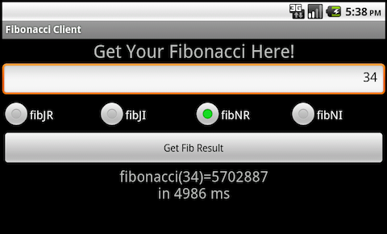
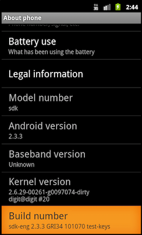
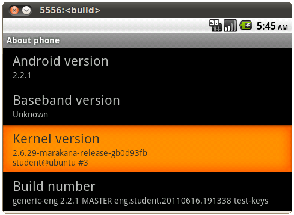
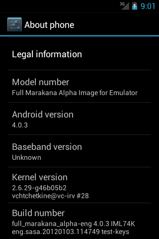
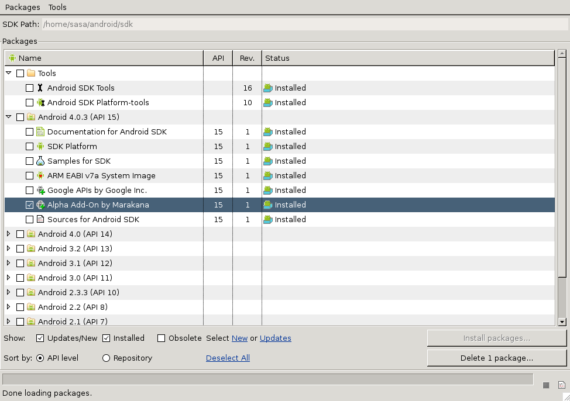
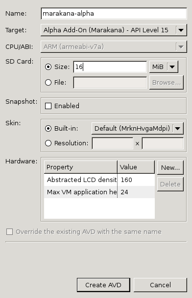
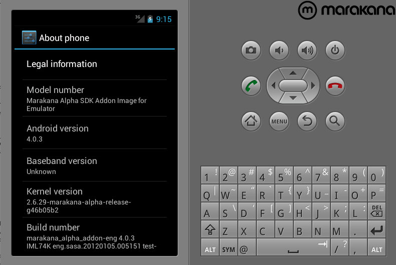

Aleksandar (Saša) Gargenta, Ken Jones, Marko Gargenta
Marakana.com
April 18th, 2012
1. Overview
-
Android Overview
-
Android Stack
-
JNI/NDK on Android
-
IPC/Binder on Android
-
Android Security
-
Building Android from Source
-
Android Startup
-
Android Services
-
Android Customization
-
Appendix: USB on Android
2. Android Stack

-
Exploring the anatomy of Android. A walk through the Android stack, starting from the bottom and moving up.
-
Linux Kernel Layer
-
Native Layer
-
Application Framework Layer
-
Applications Layer
-
2.1. Android Linux Kernel Layer

2.1.1. Overview
-
Android runs on a modified Linux kernel
Table 1. Android Version - Linux Kernel Version Android Version Kernel Version 1.0
2.6.25
1.5
2.6.27
1.6
2.6.29
2.2
2.6.32
2.3
2.6.35
3.0
2.6.36
4.0.1
3.0.1
4.0.3
3.0.8
-
Android is not "Linux"
-
no glibc
-
no X11
-
many standard configuration files are missing: no /etc/passwd, no /etc/fstab, etc.
-
many standard Linux utilities are missing: no /bin/cp, no /bin/su, etc.
-
-
In the Android Stack Linux kernel provides
-
Hardware abstraction layer (low level)
-
Well-understood driver model
-
Many drivers for common devices
-
"Free" drivers for future devices
-
-
Process and memory management
-
Simple, but secure, per-process sandboxing (permissions-based security model)
-
Support for shared libraries
-
Network stack
-
-
Application developers and users never "see" the Linux kernel
-
The adb shell command opens Linux shell (remember, limited standard utils)
-
Maintains a separate "forked" git tree (https://android.googlesource.com/)
Table 2. Android Linux Kernel GIT Repositories Android Version Kernel Version kernel/common.git
The "official" Android Kernel branch (used as the basis for others)
kernel/goldfish.git
Kernel tree for the "goldfish" emulator
kernel/experimental.git
The experimental extensions
kernel/linux-2.6.git
The mirror of Linus' kernel tree
kernel/lk.git
(L)ittle (K)ernel bootloader
kernel/msm.git
Kernel tree for MSM7XXX family and Android on MSM7XXX (Qualcomm)
kernel/omap.git
Kernel tree for TI’s OMAP family SOCs on Android
kernel/samsung.git
Kernel tree for Samsung SOCs systems on Android
kernel/tegra.git
Kernel tree for NVIDIA Tegra family SOCs on Android
-
Android introduces many extensions
The following are some of the changes/additions Android makes to the Linux kernel.
2.1.2. Binder IPC
-
OpenBinder-based IPC driver enables "object-oriented operating system environment"
-
Exposed via /dev/binder
-
Runtime info at /proc/misc/binder
-
Like CORBA, but much simpler
-
Initially developed for BeOS later used by Palm (which acquired BeOS)
-
-
By default, apps and services (including system services) run in separate processes, but often need to share data
-
Traditional IPC leads to security challenges and adds overhead, which is amplified on a mobile device
-
Most of Android infrastructure (services) is supported by Binder
-
Binder is lightweight and high-performance
-
Bound services are automatically reference-counted and "garbage collected" when no longer in use
-
Provides automatic per-process thread pooling for services (with remote clients)
-
Remote (service) method calls are synchronous (feels like just a function call, even though it’s IPC)
-
Supports oneway (asynchronous) execution model as well
-
-
-
Services defined/exposed via AIDL
-
Implementation is at drivers/misc/binder.c with include at include/linux/binder.h
2.1.3. Ashmem (Anonymous SHared MEMory)
-
A reference-counted, virtually mapped, named memory block that is shared between processes that the kernel is allowed to free
-
Similar to POSIX SHM but with different behavior and a simpler file-based API (POSIX SHM does not allow the kernel to free shared memory)
-
Programs open /dev/ashmem, use mmap() on it, and then share file handles via binder
int size = 4096; int fd = ashmem_create_region("MySharedRegionName", size); if (fd == 0) { data = mmap(NULL, size, PROT_READ | PROT_WRITE, MAP_SHARED, fd, 0); if(data != MAP_FAILED) { /* for security reasons, no other process can ashmem_create_region() with the same name */ /* instead, to share this memory, we send fd via Binder IPC to another process */ /* that process then mmap()'s it the same way in order to access the shared memory */ } }
-
When all processes close(fd) to the shared memory region, the kernel automatically reclaims that memory (because it is reference-counted)
-
-
Supports a number of ioctl()-s: ASHMEM_SET_NAME, ASHMEM_GET_NAME, ASHMEM_SET_SIZE, ASHMEM_GET_SIZE, ASHMEM_SET_PROT_MASK, ASHMEM_GET_PROT_MASK, ASHMEM_PIN, ASHMEM_UNPIN, ASHMEM_GET_PIN_STATUS, ASHMEM_PURGE_ALL_CACHES
-
Android uses ashmem to share resources to minimize redundancy across processes
-
Kernel can discard unused shared blocks of memory when under pressure
-
Implementation at mm/ashmem.c with include at include/linux/ashmem.h
-
Represented in the Java layer as android.os.MemoryFile
2.1.4. Pmem
-
Physical memory allocator
-
Used to manage large (1-16+ MB) physically contiguous regions of memory shared between userspace and kernel drivers (DSP, GPU, etc.)
-
Unlike ashmem, pmem is not reference-counted: the process that allocates a pmem heap is required to hold the file descriptor until all the other references are closed, so that it can free it explicitly
-
-
Originally developed for MSM7201A
-
Implementation at drivers/misc/pmem.c with include at include/linux/android_pmem.h
-
Supports a number of ioctl()-s: PMEM_GET_PHYS, PMEM_MAP, PMEM_GET_SIZE, PMEM_UNMAP, PMEM_ALLOCATE, PMEM_CONNECT, PMEM_GET_TOTAL_SIZE, PMEM_CACHE_FLUSH
2.1.5. Wakelocks
-
Extended power management
-
More aggressive power-manager policy than standard Linux PM
-
"CPU shouldn’t consume power if no applications or services require power" - i.e. the CPU shuts down eagerly
-
Applications and services that wish to continue running (after a short timeout following a user activity) are required to request "wake locks" via the app framework or native libs
-
-
Wake locks are used by applications and services to request CPU resources
-
WAKE_LOCK_SUSPEND: prevents a full system suspend
-
WAKE_LOCK_IDLE: prevents entering low-power states from idle to avoid large interrupt latencies (disabled interrupts) - so the system is more responsive
-
-
Exposed to kernel as
#include <linux/wakelock.h> wake_lock_init(struct wakelock *lock, int type, const char *name); void wake_lock(struct wake_lock *lock); void wake_unlock(struct wake_lock *lock); void wake_lock_timeout(struct wake_lock *lock, long timeout); void wake_lock_destroy(struct wake_lock *lock); int wake_lock_active(struct wake_lock *lock); long has_wake_lock(int type);
-
Exposed to user-space as
echo "MyLock" > /sys/power/wake_lock echo "MyLock" > /sys/power/wake_unlock
-
Also supports auto-release: /sys/power/wake_lock <lock-name> <timeout-in-ns>
-
-
Support for different types of wake locks
Flag CPU Screen Keybaord PARTIAL_WAKE_LOCK
On
Off
Off
SCREEN_DIM_WAKE_LOCK
On
Dim
Off
SCREEN_BRIGHT_WAKE_LOCK
On
Bright
Off
FULL_WAKE_LOCK
On
Bright
On
-
Also, there are two more flags that affect the screen behavior (not applicable with PARTIAL_WAKE_LOCK):
Flag Notes ACQUIRE_CAUSES_WAKEUP
Force screen to turn on as soon as the wake-lock is acquired (i.e. don’t wait for user activity)
ON_AFTER_RELEASE
When set, the user activity timer will be reset when the wake-lock is released, causing the screen/keyboard illumination to remain on a bit longer (reduces flicker if code is cycling between wake-locks)
-
-
Alls user-space wake-lock management must go through Java-based PowerManagerService (even from user-space native libraries)
-
Baseband processor normally does not shut down, so network traffic still raises interrupts allowing CPU to wake up
-
Stats exposed via /proc/wakelocks
-
Implementation at drivers/android/power.c with include at include/linux/wakelock.h
2.1.6. Early Suspend
-
An extension to the standard Linux power management stages
-
Not meant for suspending the device
-
Allows the system to power-down some of its components (like the screen, sensors, etc.)
-
When user requested sleep state changes, kernel notifies drivers of early suspend
-
User-space changes the sleep state by writing to /sys/power/request_state: EARLY_SUSPEND_LEVEL_BLANK_SCREEN, EARLY_SUSPEND_LEVEL_STOP_DRAWING, EARLY_SUSPEND_LEVEL_DISABLE_FB, EARLY_SUSPEND_LEVEL_STOP_INPUT
-
The opposite of early suspend is "late resume" - the stage that resumes these devices
-
Enabled by EARLYSUSPEND
-
Configured in one of three modes:
-
NO_USER_SPACE_SCREEN_ACCESS_CONTROL - no user-space control
-
CONSOLE_EARLYSUSPEND - user-space control via the console
-
FB_EARLYSUSPEND - user-space control via the sysfs
-
-
Implementation at kernel/power/fbearlysuspend.c (or kernel/power/consoleearlysuspend.c) with include at include/linux/earlysuspend.h
2.1.7. Alarm
-
Kernel support for Android’s AlarmManager
-
User-space tells kernel when it would like to wake up
-
Kernel schedules a time-based call-back (while holding a WakeLock) regardless of the sleep-state of the CPU
-
Apps can then run (need to hold their own WakeLocks)
-
-
Implementation at drivers/rtc/alarm.c with include at include/linux/android_alarm.h
-
Exposed via /dev/alarm
-
Supports a number of ioctl()-s: ANDROID_ALARM_CLEAR, ANDROID_ALARM_WAIT, ANDROID_ALARM_SET, ANDROID_ALARM_SET_AND_WAIT, ANDROID_ALARM_GET_TIME, ANDROID_ALARM_GET_TIME
2.1.8. Low Memory Killer (a.k.a. Viking Killer)
-
Automatically SIGKILLs eligible least-recently-used processes when running low on memory
-
More aggressive than standard OOM handling
-
Implementation at drivers/staging/android/lowmemorykiller.c and security/lowmem.c
-
System sets up 6 priority slots via init.rc (writes to /sys/module/lowmemorykiller/parameters/) and user-space ActivityManager then sets each app’s /proc/<pid>/oom_adj (from -16 to 15)
# Define the oom_adj values for the classes of processes that can be # killed by the kernel. These are used in ActivityManagerService. setprop ro.FOREGROUND_APP_ADJ 0 setprop ro.VISIBLE_APP_ADJ 1 setprop ro.PERCEPTIBLE_APP_ADJ 2 setprop ro.HEAVY_WEIGHT_APP_ADJ 3 setprop ro.SECONDARY_SERVER_ADJ 4 setprop ro.BACKUP_APP_ADJ 5 setprop ro.HOME_APP_ADJ 6 setprop ro.HIDDEN_APP_MIN_ADJ 7 setprop ro.EMPTY_APP_ADJ 15 # Define the memory thresholds at which the above process classes will # be killed. These numbers are in pages (4k). setprop ro.FOREGROUND_APP_MEM 2048 setprop ro.VISIBLE_APP_MEM 3072 setprop ro.PERCEPTIBLE_APP_MEM 4096 setprop ro.HEAVY_WEIGHT_APP_MEM 4096 setprop ro.SECONDARY_SERVER_MEM 6144 setprop ro.BACKUP_APP_MEM 6144 setprop ro.HOME_APP_MEM 6144 setprop ro.HIDDEN_APP_MEM 7168 setprop ro.EMPTY_APP_MEM 8192 # Write value must be consistent with the above properties. # Note that the driver only supports 6 slots, so we have combined some of # the classes into the same memory level; the associated processes of higher # classes will still be killed first. write /sys/module/lowmemorykiller/parameters/adj 0,1,2,4,7,15 write /proc/sys/vm/overcommit_memory 1 write /proc/sys/vm/min_free_order_shift 4 write /sys/module/lowmemorykiller/parameters/minfree 2048,3072,4096,6144,7168,8192 # Set init its forked children's oom_adj. write /proc/1/oom_adj -16 -
To application developers this means that low memory killer stacks processes based on the following order:
-
Foreground processes - with an Activity that just ran onResume(), or a Service bound to it or started as foreground, or executing its callback methods, or a BroadcastReceiver executing onReceive()
-
Visible processes - with an Activity that just ran onPause() but is still visible or a Service bound to a component from a visible process
-
Service processes - with a Service that has been started with Context.startService()
-
Background processes - with an Activity that just ran onStop()
-
Empty processes - with no components (kept around just for caching purposes)
-
-
See http://developer.android.com/guide/topics/fundamentals/processes-and-threads.html
-
Everything directly started from init.rc (including the system_server) has its oom_adj set to -16
-
If we get to killing those, the system is toast anyway
-
-
Applications can request that they be kept persistent (in memory) by setting <application android:persistent="true" ...> in their AndroidManifest.xml file
-
ActivityManager then starts persistent apps and initializes their oom_adj to -12
-
2.1.9. Logger
-
System-wide logging facility (from Kernel all the way to apps)
-
This is what logcat command reads from
-
Supports four auto-rotating log buffers managed by the kernel
-
/dev/log/main (64KB)
-
Destination for Android apps
-
Most logging happens via android.util.Log
-
-
/dev/log/system (64KB)
-
Destination for Android framework’s system services and libraries
-
Most logging happens via hidden android.util.Slog or directly via liblog library
-
-
/dev/log/events (256KB)
-
Destination for Android system diagnostic events - e.g. garbage collections, activity manager state, system watchdogs, and other low level activity
-
Logging via android.util.EventLog or directly via liblog library
-
Binary-encoded - can be decoded via /system/etc/event-log-tags
-
-
/dev/log/radio (64KB)
-
Destination for radio and phone-related information
-
-
-
Log reading and writing is done via normal Linux file I/O
-
Calls to open(), write(), and close() are extremely low-overhead on these devices
-
Each read() returns exactly one log entry (up to 4KB) and can be both blocking and non-blocking
-
-
Implementation at drivers/misc/logger.c (with a logger.h in the same directory)
-
Supports a number of ioctl()-s: LOGGER_GET_LOG_BUF_SIZE, LOGGER_GET_LOG_LEN, LOGGER_GET_NEXT_ENTRY_LEN, LOGGER_FLUSH_LOG
2.1.10. Paranoid Network Security
-
Restricts access to some networking features depending on the group of the calling process
-
Enabled via CONFIG_ANDROID_PARANOID_NETWORK kernel build option, which defines process group IDs that have special network access:
include/linux/android_aid.h (kernel source-tree):... #define AID_NET_BT_ADMIN 3001 #define AID_NET_BT 3002 #define AID_INET 3003 ...
net/ipv4/af_inet.c (kernel source-tree):... #include <linux/android_aid.h> static inline int current_has_network(void) { return in_egroup_p(AID_INET) || capable(CAP_NET_RAW); } ... static int inet_create(struct net *net, struct socket *sock, int protocol) { ... if (!current_has_network()) return -EACCES; ... } ...
-
Also in net/ipv6/af_inet6.c and net/bluetooth/af_bluetooth.c
-
-
These are re-defined for Android user-space and assigned logical group-names
system/core/include/private/android_filesystem_config.h (Android source-tree)... #define AID_NET_BT_ADMIN 3001 /* bluetooth: create any socket */ #define AID_NET_BT 3002 /* bluetooth: create sco, rfcomm or l2cap sockets */ #define AID_INET 3003 /* can create AF_INET and AF_INET6 sockets */ ... static const struct android_id_info android_ids[] = { ... { "net_bt_admin", AID_NET_BT_ADMIN, }, { "net_bt", AID_NET_BT, }, ... { "inet", AID_INET, }, ... }; ...
-
Android app permissions are then mapped to group names
/system/etc/permissions/platform.xml (system image)<permissions> ... <permission name="android.permission.BLUETOOTH_ADMIN" > <group gid="net_bt_admin" /> </permission> <permission name="android.permission.BLUETOOTH" > <group gid="net_bt" /> </permission> <permission name="android.permission.INTERNET" > <group gid="inet" /> </permission> ... </permissions>
2.1.11. Other Kernel Changes
-
Timed output / Timed GPIO
-
Generic GPIO allows user space to access and manipulate GPIO registers
-
Timed GPIO allows changing a GPIO pin and having it restored automatically after a specified timeout
-
Implementation at drivers/android/timed_output.c and drivers/android/timed_gpio.c
-
Used by the vibrator by default
-
-
Linux Scheduler
-
Not a custom scheduler, just Android-specific configuration in init.rc
write /proc/sys/kernel/panic_on_oops 1 write /proc/sys/kernel/hung_task_timeout_secs 0 write /proc/cpu/alignment 4 write /proc/sys/kernel/sched_latency_ns 10000000 write /proc/sys/kernel/sched_wakeup_granularity_ns 2000000 write /proc/sys/kernel/sched_compat_yield 1 write /proc/sys/kernel/sched_child_runs_first 0
-
-
Switch events - userspace support for monitoring GPIO used by vold to detect USB
-
USB gadget driver for ADB (drivers/usb/gadget/android.c)
-
yaffs2 flash filesystem, though this is switching to ext4
-
RAM console
-
Kernel’s printk goes to a RAM buffer
-
A kernel panic can be viewed in the next kernel invocation via /proc/last_kmsg
-
-
Support in FAT filesystem for FVAT_IOCTL_GET_VOLUME_ID
2.2. Android User-Space Native Layer

-
Android user-space native layer is divided into multiple "logical" categories
2.2.1. Bionic Library
-
Custom standard C library (libc) derived from BSD optimized for Android
-
Why Bionic?
-
BSD licensed (business-friendly - i.e. keeps GPL out of user-space)
-
Proprietary code linked to bionic can remain proprietary
-
-
Lean (~200KB, or about half the size of glibc)
-
It is loaded into every process, so it needs to be small
-
-
Fast (custom pthread impl) - perfect for embedded use
-
2.2.2. Changes From BSD libc
-
Support for arbitrary Android system-properties via <sys/system_properties.h>
-
Support for Android Kernel Logger Driver (via liblog)
-
Support for Android-specific user/group management
-
Enabled via getpwnam(), getgrouplist(), and, getgrgid(), which are aware of generated UIDs of the applications (>10000) and their corresponding synthetic user/group-names (e.g. app_123)
-
Basic UID/GIDs defined in /system/core/include/private/android_filesystem_config.h
-
-
Support for Android-specific getservent(), getservbyport(), and getservbyname() in place of /etc/services
-
No support for /etc/protocol
-
"Clean" kernel headers that allow user-space to use kernel-specific declarations (e.g. ioctl’s, structure declarations, constants, etc.)
-
Custom pthread implementation based on Linux futexes
-
Bundled-in (i.e. -lpthread not required)
-
Optimized for embedded use - strives to provide very short code paths for common operations
-
Normal, recursive and error-check mutexes are supported
-
No support for process-shared mutexes and condition variables (use Android’s own Binder-IPC instead) as well as read/write locks, priority-ceiling in mutexes, pthread_cancel(), and other more advanced features (not a priority for embedded use)
-
Provides only 64 as opposed to 128 thread-specific storage slots required by POSIX
-
No support for read/write memory barriers (restricts SMP/multi-core on certain architectures)
-
-
Does not support all the relocations generated by other GCC ARM toolchains
-
-
No support for System V IPCs - to avoid denial-of-service
-
SysV has no way to automatically release a semaphore allocated in the kernel when
-
a buggy or malicious process exits
-
a non-buggy and non-malicious process crashes or is explicitly killed (e.g. via low-memory-killer)
-
-
Again, we use Android’s own Binder-IPC instead
-
-
No support for locales (I18N done at the application/Dalvik layer via well-defined resource mechanism)
-
No support for wide chars (i.e. multi-byte characters)
-
-
time_t is 32-bit on 32-bit hardware
-
Timezones are defined via TZ env-vars or via persist.sys.timezone system property
-
NetBSD-derived DNS resolver library
-
Reads from /system/etc/resolv.conf
-
Uses name servers defined in net.dns1, net.dns2 system properties
-
Can be process specific: net.dns1.<pid>
-
-
-
Built-in linker
-
Support pre-linked mapping files
-
-
Support for x86, ARM and ARM thumb CPU instruction sets and kernel interfaces
-
Not binary compatible with any other known Linux C library (glibc, ucLibc, etc.)
-
Not event fully POSIX-compliant
-
No support for C++ exceptions
-
Requires recompile of existing legacy code against bionic
-
-
See ndk/docs/system/libc/OVERVIEW.html for more info (in the Android source tree)
2.2.3. User-space Hardware Abstraction Layer (HAL)
-
User-space C/C++ hardware abstraction layer - as shared libraries
-
Communicate with Linux drivers via /dev/, /sys/, or /proc/
-
Why not just use Linux drivers directly?
-
Separates Android platform logic from specific hardware interfaces
-
Linux does not have common definitions of hardware that upper layers depend on
-
User-space HAL offer standard "driver" definitions for graphics, audio, camera, bluetooth, GPS, radio (RIL), WiFi, etc.
-
Makes porting easier
-
-
OEMs implement "drivers" for specific hardware as shared libraries
-
libhardware
-
libhardware_legacy
-
The code can remain proprietary since the user-space drivers link against bionic, not the kernel (i.e. no GPL)
-
-
Platform loads these HAL libs at runtime via pre-determined naming strategies
-
libhardware is a simple shared library that can load device-specific shared libraries via hw_get_module(const char *id, const struct hw_module_t **module)
-
First checks under /vendor/lib/hw/ and then /system/lib/hw/ as follows:
-
<*_HARDWARE_MODULE_ID>.<ro.product.board>.so
-
<*_HARDWARE_MODULE_ID>.<ro.board.platform>.so
-
<*_HARDWARE_MODULE_ID>.<ro.arch>.so
-
<*_HARDWARE_MODULE_ID>.default.so
-
-
For example, on a Nexus S (where TARGET_BOARD_PLATFORM=s5pc110, board=herring, and /vendor/ → /system/vendor)
-
The GPS "driver" is loaded from /system/vendor/lib/hw/gps.s5pc110.so (where GPS_HARDWARE_MODULE_ID="gps")
-
The Sensors "driver" is loaded from /system/lib/hw/sensors.herring.so (where SENSORS_HARDWARE_MODULE_ID="sensors")
-
-
-
libhardware_legacy is a shared library for vibrator, wifi-module-loader, power, uevent, audio, camera, etc.
-
Some board-independent hardware (like vibrator, power, wifi, etc.) is directly supported by /system/lib/libhardware_legacy.so via well-defined paths on the file system (mostly via /proc or /sys) or well-defined system properties
-
Board-specific devices (like audio, camera, etc.) are supported by separate shared libraries loaded by well-defined names (e.g. /system/lib/libaudio.so, /system/lib/libcamera.so, etc.)
-
-
Radio is a bit special, as its rild (Radio Interface Link Daemon) loads "libril" as defined by rild.libpath system property
-
On Nexus S, this is /vendor/lib/libsec-ril.so
-
-
2.2.4. Native Daemons
-
/system/bin/servicemanager
-
The naming service for all other systemserver's (i.e. framework) services
-
Registers as BINDER_SET_CONTEXT_MGR on /dev/binder and starts reading from it (in a loop)
-
-
/system/bin/vold
-
Volume Daemon used for mounting/unmounting removable media (like /mnt/sdcard) on demand
-
Configured via /system/etc/vold.fstab
-
For example, Nexus One’s SD Card is automatically re/mounted:
dev_mount sdcard /mnt/sdcard auto /devices/platform/goldfish_mmc.0 /devices/platform/msm_sdcc.2/mmc_host/mmc1
-
While Nexus S, has a "virtual" but fixed SDCard:
dev_mount sdcard /mnt/sdcard 3 /devices/platform/s3c-sdhci.0/mmc_host/mmc0/mmc0:0001/block/mmcblk0
-
-
/system/bin/rild
-
Acts as a bridge between platform framework services (TelephonyManager) and libril, which is OEM-specific interface to the baseband modem
-
Stateful - helps handle incoming calls/messages (unsolicited requests)
-
Interfaces with upper layers via a Unix socket connection
-
-
/system/bin/netd
-
Manages network connections, routing, PPP, etc.
-
Enables tethering, connections over USB/Bluetooth, etc.
-
-
/system/bin/mediaserver
-
Home of AudioFlinger, MediaPlayerService, CameraService, AudioPolicyService
-
-
/system/bin/installd
-
Listens on a unix socket and performs installation/uninstallation of packages (i.e. apps)
-
Used by the PackageManager
-
-
/system/bin/keystore
-
Listens on a unix socket and provides secured storage for key-value pairs
-
Keys are encoded in file names, and values are encrypted with checksums
-
The encryption key is protected by a user-defined password
-
-
/system/bin/debuggerd
-
Catches crashes of native processes and dumps their stack trace to /data/tombtones/
-
When native processes initialize, they implicitly connect (through a unix socket) to debuggerd through a separate thread spawned by bionic
-
-
/system/bin/wpa_supplicant
-
Handles WPA authentication for WiFi networks
-
-
/system/bin/dhcpd
-
Requests (leases) IPs from DHCP servers
-
Handles network changes (e.g. 3G to Wifi)
-
-
BlueZ (Bluetooth support daemons)
-
/system/bin/dbus-daemon
-
A simple IPC (bus) framework
-
Provides systemserver with a way to access hcid (Bluetooth Host Controller Interface Daemon)
-
-
/system/bin/bluetoothd
-
Manages device pairings and the rest of the stack
-
-
/system/bin/sdptool
-
Used to manage individual Bluetooth profile as services
-
hfag - Hands-Free Profile
-
hsag - Headset Profile
-
opush - Object Push Profile
-
pbap - Phonebook-Access Profile
-
etc.
-
-
-
-
/system/bin/racoon
-
Assists with ipsec key negotiations (IKE)
-
Used for VPN connections
-
-
/system/ueventd
-
Handles uevents from the Kernel and sets up correct ownership/permissions on the device file descriptors
-
Applies configuration from /ueventd.rc
... /dev/urandom 0666 root root /dev/ashmem 0666 root root /dev/binder 0666 root root ... /dev/log/* 0662 root log ... /dev/ttyMSM0 0600 bluetooth bluetooth ... /dev/alarm 0664 system radio ... /dev/cam 0660 root camera ... /dev/akm8976_pffd 0640 compass system /dev/lightsensor 0640 system system ... /dev/bus/usb/* 0660 root usb /sys/devices/virtual/input/input* enable 0660 root input ...
-
-
/sbin/adbd
-
End-point of Android Debug Bridge
-
Accepts ADB connections over USB
-
Possible to accept network connections as well
-
-
Vendor-specific daemons which fasciliate interaction with the hardware
-
For example /system/vendor/bin/gpsd on Nexus S
-
-
Other daemons, like zygote and systemserver will be discussed separately
2.2.5. Flingers
Surface Flinger
-
SurfaceFlinger is Android’s system-wide screen composer that draws into standard Linux frame-buffer (/dev/fb0)
-
Apps draw (in 2D or 3D) into "windows", which are implemented as double-buffered Surface objects backed by the surface flinger
-
Front-buffer used for composition, back-buffer for drawing
-
Buffers are flipped after drawing
-
Minimal buffer copying
-
Avoids flickers and artifacts as the front-buffer is always available for composition
-
-
-
Surface flinger expects the video driver to offer:
-
A linear address space of mappable memory
-
Video memory is mmap()'ed to process address-space for direct writing
-
Enough video memory for twice the physical screen area
-
Otherwise, regular system memory has to be used for buffering, and is copied on flips (slow!)
-
-
-
Support for RGB 565 pixel format
-
Audio Flinger
-
AudioFlinger is Android’s system-wide audio stream routing engine/mixer and audio input capture facility
-
Sits on top of device-specific libaudio.so implementation, which usually simply bridges to ALSA
-
-
To play audio, apps send uncompressed mono/stereo PCM streams to audio flinger (usually via MediaPlayer)
-
Streams include ringtones, notifications, voice calls, touch tones, key tones, music
-
Audio flinger routes these streams to various outputs (earpiece, speakers, Bluetooth)
-
-
To capture audio, apps request access to uncompressed input path managed by the audio flinger (usually via MediaRecorder)
2.2.6. Function Libraries
-
Provide computation-intensive services to the rest of the platform
-
This is in addition to bionic
-
-
Many pieces borrowed from other open source projects
-
LibWebCore/WebKit, V8, SQLite, OpenSSL, FreeType, etc.
-
Usually abstracted by Java counterparts
-
-
Media Framework Libraries
-
Originally based on PacketVideo’s OpenCORE platform
-
Switched to Stagefright with Gingerbread
-
Support for playback and recording of many popular audio and video formats, as well as static image files
-
MPEG4, H.264, VP8/WebM, MP3, AAC, AMR, JPG, and PNG
-
-
Pluggable via Khronos' OpenMAX IL (supports for codecs in both software and hardware)
-
-
3D libraries
-
Support for OpenGL ES 1.0 and 2.0 APIs
-
Comes with highly optimized 3D software rasterizer - when hardware does not offer native OpenGL support
-
-
2D libraries
-
SGL (Skia) - the underlying 2D graphics engine
-
2.2.7. Dalvik

-
Dalvik is a custom clean-room implementation of a virtual machine, semantically similar to a JVM but not a JVM
-
Licensed under Apache 2.0 open-source license
-
-
Provides Android app portability and consistency across various hardware (like a JVM)
-
Runs Dalvik byte-code, stored in .dex files (not Java byte code)
-
Developers program in the Java language (i.e. .java files), which get compiled into Java byte-code (i.e. .class files)
-
Build-tools compile Java’s .class files into a .dex file before packaging (into .apk files)
-
3rd party libraries are also re-compiled into dex code
-
-
Dalvik never sees any Java byte-code
-
-
Why not Java SE?
-
Java SE is too bloated for mobile environment
-
Would require too much redundancy (at the library level)
-
Not well-optimized for mobile (at the bytecode and interpreter level)
-
-
Why not Java ME?
-
Costs $$$ - hinders adoption
-
Designed by a committee - hard to imagine iOS-like developer appeal
-
Apps share a single VM - not great for security sandboxing
-
Apps are second-rate citizens - don’t get access to all the hardware
-
-
Dalvik is optimized for embedded environment:
-
Minimal-memory footprint while providing a secure sandboxing model
-
Uncompressed .dex files are smaller than compressed .jar files due to more efficient bytecode
-
On average Dalvik byte code is 30% smaller than JVM byte code
-
Multiple classes in one .dex file
-
Shared constant pool (assumes 32-bit indexes)
-
Simpler class-loading
-
Because it is uncompressed, dex code can be memory-mapped and shared (i.e. mmap()-ed)
-
-
Each app runs in a separate instance of Dalvik
-
At startup, system launches zygote, a half-baked Dalvik process, which is forked any time a new VM is needed
-
Due to copy-on-write support, large sections of the heap are shared (including 1800+ preloaded classes)
-
Since each VM runs in a separate process, we get great security isolation
-
-
-
Register-based fixed-width CPU-optimized byte-code interpreter
-
Standard JVM bytecode executes 8-bit stack instructions - local variables must be copied to or from the operand stack by separate instructions
-
Memory speed to CPU speed is amplified on mobile CPUs - we want to minimize access to the main memory
-
-
Dalvik uses 16-bit instruction set that works directly on local variables (managed via a 4-bit virtual register field)
-
-
With JIT support, as of Froyo (2-5x performance improvement in CPU-bound code)
-
Trace-level granularity (more optimal than whole method-level compilations)
-
Fast context-switching (interpreted mode to native mode and back)
-
Well-balanced from performance vs. memory overhead perspective (~ 100-200KB overhead per app)
-
~ 1:8 ratio of Dalvik to native code (mostly due to optimizations, like inlining)
-
-
-
Includes support for instrumentation to allow tracing and profiling of running code
-
Core libraries based on Java SE 5 (mostly from Apache Harmony), with many differences
-
No support for java.applet, java.awt, java.lang.management and javax.management (JMX), java.rmi and javax.rmi, javax.accessibiliy, javax.activity, javax.imageio, javax.naming (JNDI), javax.print, javax.security.auth.kerberos, javax.security.auth.spi, javax.security.spi, javax.security.sasl, javax.sound, javax.swing, javax.transaction, javax.xml (except for javax.xml.parsers), org.ietf, org.omg, org.w3c.dom.* (subpackages)
-
But support for Android APIs (including wrappers for OpenGL, SQLite, etc.), Apache HTTP Client (org.apache.http), JSON parser (org.json), XML SAX parser (org.xml.sax), XML Pull Parser (org.xmlpull), etc.
-
2.3. Android Application Framework Layer

2.3.1. Overview
-
The rich set of system services wrapped in intuitive Java APIs
-
Most managed by the systemserver process and accessible via Binder/AIDL
-
-
Abstraction of hardware services
-
Location, telephony, WiFi, Bluetooth, sensors, camera, etc.
-
-
Java-language bindings for the native libraries (e.g. OpenGL, SQLite)
-
Core platform services (like life-cycle management)
-
Essential to the apps, even if most are not used directly
-

2.3.2. Activity Manager Service
-
Manages lifecycle of applications and their components
-
Sets up oom_ajd setting read by Low Memory Killer ([Android_Linux_Kernel_Low_Memory_Killer]) Android extension to the Linux kernel
-
-
Handles application requests to startActivity(), sendBroadcast(), startService(), bindService(), etc.
-
Enforces security permissions on those requests
-
-
Maintains user task state - i.e. the back-stack
2.3.3. Package Manager Service
-
Along with installd responsible for installation of .apk-s on the Android system
-
Maintains internal data structures representing installed packages as well as their individual components
-
Used by Activity Manager when handling intents (i.e. intent resolution is handled here)
-
Provides this info on demand to other services and apps
-
-
Very central to the platform’s security
2.3.4. Power Manager Service
-
Controls power management
-
Provides access to wake locks
2.3.5. Alarm Manager Service
-
Manages wake-up alarms for applications
-
Supports inexact wakeup frequencies - helps consolidate wake-ups into fewer slots
-
Uses power manager for wake locks
2.3.6. Notification Manager Service
-
Used by apps and other services to notify the user of events that may be of interest
-
This is how background events "bubble up" as notifications
-
-
Supports persistent notification, as well as notifications that use LEDs, screen backlight, sound, and/or vibration to notify the user
2.3.7. Keyguard Manager Service
-
Manages locking/unlocking of the keyguard
2.3.8. Location Manager Service
-
Handles geographic location updates (e.g. GPS) and distributes them to the listening applications
-
Support proximity alerts (via Intents)
-
Supports providers of different granularity (GPS, Network, WiFi)
2.3.9. Sensor Manager Service
-
Provides a uniform access to the device’s sensors
-
Apps request sensor notifications via this manager
-
Sensor manager delivers sensor updates via a generic (timestamped) array of values (which are sensor-dependent)
-
-
Supported sensor types: accelerometer, linear acceleration, gravity, gyroscope, light, magnetic field, orientation, pressure, proximity, rotation vector, temperature
-
Actual sensor support is (obviously) hardware-dependent
-
2.3.10. Search Manager Service
-
Provides a framework for device-wide (global) or app-specific search
2.3.11. Vibrator Manager Service
-
Provides simplistic access to the vibrator hardware
-
Can be used for simple haptic feedback (using patterns)
2.3.12. Connectivity Manager Service
-
Monitors network connections (Wi-Fi, GPRS, UMTS, etc.) and
-
Send broadcast intents when network connectivity changes
-
Attempts to "fail over" to another network when connectivity to a network is lost
-
-
Provides an API that allows applications to query the coarse-grained or fine-grained state of the available networks
2.3.13. Wifi Manager Service
-
Unlike the connectivity manager, the Wifi Manager supports Wifi-specific operations
-
Provides a list and allows management of configured networks
-
Provides access to and management of the state of the currently active Wi-Fi network connection, if any
-
Enables access point scans
-
Broadcasts Intents on Wifi-connectivity state change events
2.3.14. Telephony Manager Service
-
Provides access to information about the telephony services on the device
-
Apps query Telephony Manager to determine telephony services and states, as well as to access some types of subscriber information (e.g. device id)
-
Apps can also register a listener to receive notification of telephony state changes
-
Handles tethering requests
2.3.15. Input Method Manager Service
-
Central system to the overall input method framework (IMF) architecture
-
Arbitrates interaction between applications (each has a separate client) and the current input method
-
-
Responsible for creating and running an input method (IME) to capture the actual input and translate it into text
-
Allows multiple apps to requests input focus and control over the state of IME
-
2.3.16. UI Mode Manager Service
-
Provides access to the system UI mode
-
Enable/disable car-mode
-
Enable/disable night-mode
-
-
System uses it to implement automatic UI mode changes
-
Apps use it to manually control UI modes of the device
2.3.17. Download Manager Service
-
Handles long-running HTTP downloads
-
Clients request that a URI be downloaded to a particular destination file
-
The download manager handles the download in the background, taking care of HTTP interactions and retrying downloads after failures or across connectivity changes and system reboots
-
New as of Gingerbread (2.3, API 9)
2.3.18. Storage Manager Service
-
Handles storage-related items such as Opaque Binary Blobs (OBBs)
-
"OBBs contain a filesystem that maybe be encrypted on disk and mounted on-demand from an application. OBBs are a good way of providing large amounts of binary assets without packaging them into APKs as they may be multiple gigabytes in size. However, due to their size, they’re most likely stored in a shared storage pool accessible from all programs. The system does not guarantee the security of the OBB file itself…"
-
E.g. great for GPS/Mapping applications that need support for off-line maps
-
-
New as of Gingerbread (2.3, API 9)
2.3.19. Audio Manager Service
-
Provides access to volume and ringer mode control
-
Allows management/querying for the state of the audio system
-
Set/Get the current mode: normal, ringtone, in-call, in-communications
-
Set/Get the current ringer mode: normal, silent, vibrate
-
Set/Get the state of audio channels: speaker, bluetooth headset, wired headset, speakerphone
-
Set/Get the volume
-
Get audio focus requests
-
-
Allows playing of sound effects: clicks, key-presses, navigation, etc.
2.3.20. Window Manager Service
-
Manages windows (z-order) composed in a surface
-
Allows us to place custom views (windows)
2.3.21. Layout Inflater Manager Service
-
Used to instantiate layout XML files into its corresponding View object trees
2.3.22. Resource Manager Service
-
Provides access to non-code resources such as localized strings, graphics, and layout files
2.3.23. Additional Manager Services
-
Lights Service: handles status lights on the device
-
Throttle Service: answers queries about data transfer amounts and throttling
-
Mount Service: mount/unmount removable storage
-
Battery Service: reports on battery health/status
-
Wallpaper Service: manages changes to the wallpaper
-
Backup Agent: provides remote backup/restore capabilities
-
Bluetooth Service: manages bluetooth pairings
-
Headset, Dock, USB Observers: observe specific device connections
2.4. Android Applications Layer

-
Android ships with a number of built-in "applications"
-
These are stored on the read-only /system/ partition under /system/app
-
Cannot be uninstalled without re-flashing the ROM
-
-
An Android application is a loose set of components, which may be used as
-
A single independent cohesive unit (a "traditional" application)
-
A set to re-usable modules used by other applications via binder and/or Intents (in form of an API)
-
A combination of the two
-
-
Applications are distributed as APKs (ZIP-compressed .apk files) consisting of
-
AndroidManifest.xml configuration file
-
Dalvik byte-code (classes.dex)
-
Optional native code as shared libraries (typically compiled for ARM)
-
Optional resources including layout/menu/preference definitions, drawables, text, audio, styles, etc.
-
Optional assets
-
Signature/public key (used for signing)
-
2.4.1. Android Built-in Applications
-
AccountsAndSyncSettings
-
Bluetooth
-
Browser
-
Calculator
-
Calendar
-
Camera
-
CertInstaller
-
Contacts
-
DeskClock
-
Email
-
Gallery
-
Gallery3D
-
HTMLViewer
-
Launcher2
-
Mms
-
Music
-
Nfc
-
PackageInstaller
-
Phone
-
Protips
-
Provision
-
QuickSearchBox
-
Settings
-
SoundRecorder
-
SpeechRecorder
-
Stk
-
Tag
-
VoiceDialer
-
OEM-specific application packages
2.4.2. Android Built-in Content Providers
-
ApplicationsProvider
-
CalendarProvider
-
ContactsProvider
-
DownloadProvider
-
DrmProvider
-
MediaProvider
-
TelephonyProvider
-
UserDictionaryProvider
-
OEM-specific content providers
2.4.3. Android Built-in Input Methods
-
LatinIME
-
OpenWnn
-
PinyinIME
-
OEM-specific input methods (like Swype)
2.4.4. Android Built-in Wallpapers
-
Basic
-
LivePicker
-
MagicSmoke
-
MusicVisualization
-
OEM-specific wallpapers
3. Android Native Development Kit (NDK)
3.1. What is in NDK?
-
Android’s Dalvik VM allows our applications written in Java to call methods implemented in native code through the Java Native Interface (JNI)
-
For example:
package com.marakana.android.fetchurl; public class FetchUrl { public static native byte[] fetch(String url); static { System.loadLibrary("fetchurl"); } }
-
-
NDK is a tool-chain to build and cross-compile our native code for the device-specific architecture
-
At the moment, NDK supports ARMv5TE, ARMv7-A, and as of NDK r6 (July 2011) x86 ABIs
-
For example, we would implement native fetch method in C and compile it into a library libfetchurl.so
-
-
NDK offers a way to package our native code library (as lib<something>.so) into the APK file so we can distribute it with our application easily
-
For example, our library would be packaged as libs/armeabi/libfetchurl.so in the APK
-
-
NDK provides a set of native system headers that will be supported for the future releases of Android platform (libc, libm, libz, liblog, libjnigrahics, OpenGL/OpenSL ES, JNI headers, minimal C++ support headers, and Android native app APIs)
-
Finally, NDK comes with extensive documentation, sample code and examples
3.2. Why NDK?
-
NDK allows us to develop parts of our Android application in C/C++
-
Generally, we do not develop native-only apps via NDK
-
Android’s Gingerbread (2.3) release supports NativeActivity, which allows handling lifecycle callbacks in native code, so we can now develop native-only apps,
-
No support for native services, broadcast receivers, content providers, etc.
-
-
-
NDK code still subject to security sandboxing - we don’t get extra permissions for running natively
-
Main motivation for native code is performance (CPU-intensive, self-contained, low-memory footprint code) and the re-use of legacy code
-
For system integrators, NDK offers access to low-level libraries (e.g. access to user-space HAL)
-
Using NDK always increases complexity of applications, so it should only be used when it’s essential to the application
-
Programming in Java offers richer APIs, memory protection and management, higher-level language constructs (OOP), all of which generally results in higher productivity
-
3.3. Java Native Interface (JNI)
3.3.1. JNI Overview
-
An interface that allows Java to interact with code written in another language
-
Motivation for JNI
-
Code reusability
-
Reuse existing/legacy code with Java (mostly C/C++)
-
-
Performance
-
Native code used to be up to 20 times faster than Java, when running in interpreted mode
-
Modern JIT compilers (HotSpot, Dalvik) make this a moot point
-
-
Allow Java to tap into low level O/S, H/W routines
-
-
JNI code is not portable!
|
|
JNI can also be used to invoke Java code from within natively-written applications - such as those written in C/C++. In fact, the java command-line utility is an example of one such application, that launches Java code in a Java Virtual Machine. |
3.3.2. JNI Components
-
javah - JDK tool that builds C-style header files from a given Java class that includes native methods
-
Adapts Java method signatures to native function prototypes
-
-
jni.h - C/C++ header file included with the JDK that maps Java types to their native counterparts
-
javah automatically includes this file in the application header files
-
3.3.3. JNI By Example
-
We start by creating a Java class with one or more native methods
src/com/marakana/jniexamples/Hello.java:package com.marakana.jniexamples; public class Hello { public static native void sayHi(String who, int times); //
 static {
System.loadLibrary("hello"); //
static {
System.loadLibrary("hello"); //  }
public static void main(String[] args) {
sayHi(args[0], Integer.parseInt(args[1])); //
}
public static void main(String[] args) {
sayHi(args[0], Integer.parseInt(args[1])); //  }
}
}
}The method sayHi(String, int) will be implemented in C/C++ in separate files, which will be compiled into a shared library. Load the shared library by its logical name. The actual name is system-dependent: libhello.so (on Linux/Unix), hello.dll (on Windows), and libhello.jnilib (Mac OSX). Here we call our native method as a regular Java method. -
Compile the Java code
$ mkdir -p bin $ javac -d bin/ src/com/marakana/jniexamples/Hello.java
-
Using the javah tool, we generate the C header file from the compiled com.marakana.jniexamples.Hello class:
$ mkdir -p jni $ javah -jni -classpath bin -d jni com.marakana.jniexamples.Hello
-
Observe the generated C header file:
jni/com_marakana_jniexamples_Hello.h:/* DO NOT EDIT THIS FILE - it is machine generated */ #include <jni.h> /* Header for class com_marakana_jniexamples_Hello */ #ifndef _Included_com_marakana_jniexamples_Hello #define _Included_com_marakana_jniexamples_Hello #ifdef __cplusplus extern "C" { #endif /* * Class: com_marakana_jniexamples_Hello * Method: sayHi * Signature: (Ljava/lang/String;I)V */ JNIEXPORT void JNICALL Java_com_marakana_jniexamples_Hello_sayHi (JNIEnv *, jclass, jstring, jint); #ifdef __cplusplus } #endif #endif

Method names resolve to C functions based on a pre-defined naming strategy: the prefix Java_, followed by a mangled fully-qualified class name, followed by an underscore ("_") separator, followed by a mangled method name. For overloaded native methods, two underscores ("__") followed by the mangled argument signature. -
Provide the C implementation:
jni/com_marakana_jniexamples_Hello.c:#include "com_marakana_jniexamples_Hello.h" JNIEXPORT void JNICALL Java_com_marakana_jniexamples_Hello_sayHi (JNIEnv *env, jclass clazz, jstring who, jint times) { const char *name = (*env)->GetStringUTFChars(env, who, NULL); if (name != NULL) { jint i; for (i = 0; i < times; i++) { printf("Hello %s\n", name); } (*env)->ReleaseStringUTFChars(env, who, name); } }
Most of the time, we cannot just use Java data types directly in C. For example, we have to convert java.lang.String to char * before we can effectively use it in C.
This code assumes: #define NULL ((void *) 0) -
Compile the shared library
$ mkdir -p libs $ gcc -o libs/libhello.jnilib -lc -shared \ -I/System/Library/Frameworks/JavaVM.framework/Headers \ jni/com_marakana_jniexamples_Hello.c $ file libs/libhello.jnilib libs/libhello.jnilib: Mach-O 64-bit dynamically linked shared library x86_64
On Unix/Linux, compile as:
gcc -o libs/libhello.so -lc -shared -I$JAVA_HOME/include jni/com_marakana_jniexamples_Hello.c -
Run our code
$ java -Djava.library.path=libs -classpath bin com.marakana.jniexamples.Hello Student 5 Hello Student Hello Student Hello Student Hello Student Hello Student
Instead of specifying -Djava.library.path=libs, we could have preceded our java command with export LD_LIBRARY_PATH=libs. 
Common mistakes resulting in java.lang.UnsatisfiedLinkError usually come from incorrect naming of the shared library (O/S-dependent), the library not being in the search path, or wrong library being loaded by Java code.
3.3.4. Native Method Arguments
-
A C/C++ implementation of a native Java method accepts the following function arguments:
-
JNIEnv *env, an interface pointer (pointer to a pointer) to a function table, where each entry in the table is a pointer to a function that enables Java-to-C/C++ integration (e.g. type conversion)
-
The second argument varies depending on whether the native method is a static method or an instance (i.e. non-static) method:
-
In case of instance methods, the second argument is a jobject obj, which is a reference to the object on which the method is invoked
-
In case of static methods, the second is a jclass clazz, which is a reference to the class in which the method is defined
-
-
The remaining arguments correspond to regular Java method arguments (subject to the mapping described below)
-
-
The native function can pass its result back to Java via the return value (or return void)
3.3.5. Primitive Type Mapping
-
Java primitives have well-known size and are signed by default
-
C/C++ primitives vary in size, depending on the platform (e.g. the size of the long depends on the size of the word)
-
To provide inter-operability with C/C++, jni.h defines the following mappings:
Java Language Type Native Type Description typedef (C99) typedef (otherwise) boolean
jboolean
unsigned 8 bits
uint8_t
unsigned char
byte
jbyte
signed 8 bits
int8_t
signed char
char
jchar
unsigned 16 bits
uint16_t
unsigned short
short
jshort
signed 16 bits
int16_t
short
int
jint
signed 32 bits
int32_t
int
long
jlong
signed 64 bits
int64_t
long long
float
jfloat
32-bit IEEE 754
float
float
double
jdouble
64-bit IEEE 754
double
double
void
void
N/A
N/A
N/A
N/A
jsize
used to describe cardinal indices and sizes
jint
jint
-
Because booleans are treated as unsigned bytes, the following definitions are also useful
Java Boolean Value Native Boolean Type Definition false
JNI_FALSE
#define JNI_FALSE 0
true
JNI_TRUE
#define JNI_TRUE 1
-
Primitive data types are always copied between Java and native code
3.3.6. Reference Type Mapping
-
The JNI includes a number of pre-defined reference types (passed as opaque references in C) that correspond to different kinds of Java object types:
Java Language Type Native Type typedef in C java.lang.Object
jobject
void*
java.lang.Class
jclass
jobject
java.lang.Throwable
jthrowable
jobject
java.lang.String
jstring
jobject
java.lang.ref.WeakReference
jweak
jobject
N/A
jarray
jobject
java.lang.Object[]
jobjectArray
jarray
boolean[]
jbooleanArray
jarray
byte[]
jbyteArray
jarray
char[]
jcharArray
jarray
short[]
jshortArray
jarray
int[]
jintArray
jarray
long[]
jlongArray
jarray
float[]
jfloatArray
jarray
double[]
jdoubleArray
jarray
A note about reference types in C++These reference types in C++ are defined as proper classes:
class _jobject {}; class _jclass : public _jobject {}; class _jstring : public _jobject {}; class _jarray : public _jobject {}; class _jobjectArray : public _jarray {}; class _jbooleanArray : public _jarray {}; class _jbyteArray : public _jarray {}; class _jcharArray : public _jarray {}; class _jshortArray : public _jarray {}; class _jintArray : public _jarray {}; class _jlongArray : public _jarray {}; class _jfloatArray : public _jarray {}; class _jdoubleArray : public _jarray {}; class _jthrowable : public _jobject {}; typedef _jobject* jobject; typedef _jclass* jclass; typedef _jstring* jstring; typedef _jarray* jarray; typedef _jobjectArray* jobjectArray; typedef _jbooleanArray* jbooleanArray; typedef _jbyteArray* jbyteArray; typedef _jcharArray* jcharArray; typedef _jshortArray* jshortArray; typedef _jintArray* jintArray; typedef _jlongArray* jlongArray; typedef _jfloatArray* jfloatArray; typedef _jdoubleArray* jdoubleArray; typedef _jthrowable* jthrowable; typedef _jobject* jweak;
A tip about NULL in Android NDKAndroid’s native development kit (NDK) does not define NULL in its jni.h, so the following definition can be useful when working with pointers and reference types:
#define NULL ((void *) 0)

Opaque references are C pointer types that refer to internal data structures in the JVM. It is an error to try to dereference opaque references and try to use them directly.
3.3.7. Global and Local References
-
Unlike primitives, arbitrary Java objects are always passed by reference
-
The VM must keep track of all objects that have been passed to the native code, so that these objects are not freed by the GC (i.e. these references are considered object roots while in use)
-
Consequently, the native code must have a way to tell the VM that it no longer needs references to objects
-
Additionally, the GC must be able to relocate an object referred to by native code (in the case of a copying GC), which means that these references must not be dereferenced by the native code
-
We will access the fields/methods on these references via JNI accessor functions
-
-
All objects passed to native code and returned from JNI functions are considered local references
-
Automatically "freed" after the native function call returns
-
The VM creates a table of references before every function call, and frees it when the call completes
-
Consequently, the native function calls are more expensive than regular method calls
-
-
Also possible to explicitly free using:
void DeleteLocalRef(JNIEnv *env, jobject localRef);
-
Only valid in the thread in which they are created
-
If we end up using more than 16 local references (default) within a native function scope, we can ask the VM for more:
jint EnsureLocalCapacity(JNIEnv *env, jint capacity); jint PushLocalFrame(JNIEnv *env, jint capacity); jobject PopLocalFrame(JNIEnv *env, jobject result);
-
-
To hold on to an object beyond a single native function call, we can convert a local reference to a global reference
jobject NewGlobalRef(JNIEnv *env, jobject obj);
-
Becomes our responsibility to explicitly delete the reference when no longer in use:
void DeleteGlobalRef(JNIEnv *env, jobject globalRef);
-
Also supported are the weak global references
jweak NewWeakGlobalRef(JNIEnv *env, jobject obj); void DeleteWeakGlobalRef(JNIEnv *env, jweak obj);
-
-
JNI accessor functions do not make a distinction between the different reference types
3.3.8. Using Strings
-
In C, a string is a pointer to a \0-terminated character array where each character is one byte
-
In Java, an instance of java.lang.String is an immutable object which wraps a character array, which itself is an object (i.e. it knows its length so it is not \0-terminated), and each character is represented in UTF16 as two bytes
-
String Operations are provided by JNIEnv:
/* On Unicode (UTF-16) Characters */ jstring NewString(JNIEnv *env, const jchar *unicodeChars, jsize len); jsize GetStringLength(JNIEnv *env, jstring string); const jchar * GetStringChars(JNIEnv *env, jstring string, jboolean *isCopy); void ReleaseStringChars(JNIEnv *env, jstring string, const jchar *chars); void GetStringRegion(JNIEnv *env, jstring str, jsize start, jsize len, jchar *buf); /* On (modified) UTF-8 Characters */ jstring NewStringUTF(JNIEnv *env, const char *bytes); jsize GetStringUTFLength(JNIEnv *env, jstring string); const char * GetStringUTFChars(JNIEnv *env, jstring string, jboolean *isCopy); void ReleaseStringUTFChars(JNIEnv *env, jstring string, const char *utf); void GetStringUTFRegion(JNIEnv *env, jstring str, jsize start, jsize len, char *buf);
A note about GetString[UTF]Chars(…) functionsThe pointer resulting from GetString[UTF]Chars(…) is valid until ReleaseString[UTF]Chars(…) is called.
If isCopy is not NULL, then *isCopy is set to JNI_TRUE if a copy is made. When *isCopy == JNI_FALSE, the returned string is a direct pointer to the characters in the original java.lang.String instance, which is then pinned in memory. The native code must ensure not to modify the contents of the returned string, otherwise, it would be modifying the private data of the immutable java.lang.String object!
Regardless of isCopy, we have to call ReleaseString[UTF]Chars(…) when we are done using the character array, either to free the memory (when *isCopy == JNI_TRUE) or to un-pin the original string in memory (when *isCopy == JNI_FALSE).
A note about modified UTF-8 strings:JNI’s UTF string functions (that work with char *) return/assume \0-terminated character arrays that are encoded as UTF-8 character sequences, except that if the string contains a \u0000 character, it is represented by a pair of bytes 0xc0 0x80 (1100000010000000) instead of 0x00. When working with regular ASCII characters, each character is represented by exactly one byte.
-
Examples:
-
What NOT to do:
#include <stdio.h> #include "com_marakana_jniexamples_HelloName.h" JNIEXPORT void JNICALL Java_com_marakana_jniexamples_HelloName_sayHelloName(JNIEnv *env, jclass clazz, jstring name) { printf("Hello %s", name); /*
*/
}This example would not work (would likely crash the VM) since the jstring type represents strings in the Java virtual machine. This is different from the C string type (char *). -
Convert Java string to C string:
#include <stdio.h> #include "com_marakana_jniexamples_HelloName.h" JNIEXPORT void JNICALL Java_com_marakana_jniexamples_HelloName_sayHelloName(JNIEnv *env, jclass clazz, jstring name){ const char *cName = (*env)->GetStringUTFChars(env, name, NULL); /*
*/
if (cName == NULL) {
return; /* OutOfMemoryError already thrown */
} else {
printf("Hello %s\n", cName);
(*env)->ReleaseStringUTFChars(env, name, cName); /* */
}
}This returns a pointer to an array of bytes representing the string in modified UTF-8 encoding; or NULL if we ran out of memory, in which case java.lang.OutOfMemoryError would also be thrown (upon returning back to the Java runtime). Calling ReleaseStringUTFChars indicates that the native method no longer needs the UTF-8 string returned by GetStringUTFChars, thus the memory taken by the UTF-8 string can be freed. Failure to do this would result in a memory leak, which could ultimately lead to memory exhaustion. -
Convert C string to Java string:
#include <stdio.h> #include "com_marakana_jniexamples_GetName.h" JNIEXPORT jstring JNICALL Java_com_marakana_jniexamples_ReturnName_GetName(JNIEnv *env, jclass class) { char buf[20]; fgets(buf, sizeof(buf), stdin); return (*env)->NewStringUTF(env, buf); }
-
Print each character of a Java string
#include <stdio.h> #include "com_marakana_jniexamples_HelloName.h" JNIEXPORT void JNICALL Java_com_marakana_jniexamples_HelloName_sayHelloName(JNIEnv *env, jclass clazz, jstring name) { char buf[4]; jint i; jsize len = (*env)->GetStringUTFLength(env, name); fputs("Hello ", stdout); for (i = 0; i < len; i++) { (*env)->GetStringUTFRegion(env, name, i, 1, buf); putc(buf[0], stdout); /* assumes ASCII */ } putc('\n', stdout); }
-
3.3.9. Arrays
-
As with Strings, Java arrays are different than C arrays; the former are objects (which know their length) whereas the latter are just pointers to memory addresses
-
So, int[] in Java is not the same as jint[] in C/C++
-
Instead, int[] in Java, becomes jintArray in C/C++
-
-
JNI provides functions for
-
Creating arrays:
jobjectArray NewObjectArray(JNIEnv *env, jsize length, jclass elementClass, jobject initialElement); jbooleanArray NewBooleanArray(JNIEnv *env, jsize length); jbyteArray NewByteArray(JNIEnv *env, jsize length); jcharArray NewCharArray(JNIEnv *env, jsize length); jshortArray NewShortArray(JNIEnv *env, jsize length); jintArray NewIntArray(JNIEnv *env, jsize length); jlongArray NewLongArray(JNIEnv *env, jsize length); jfloatArray NewFloatArray(JNIEnv *env, jsize length); jdoubleArray NewDoubleArray(JNIEnv *env, jsize length);
-
Getting the length of an array
jsize GetArrayLength(JNIEnv *env, jarray array);
-
Getting/Setting individual elements of object arrays
jobject GetObjectArrayElement(JNIEnv *env, jobjectArray array, jsize index); void SetObjectArrayElement(JNIEnv *env, jobjectArray array, jsize index, jobject value);
-
Converting Java arrays of primitives to C/C++ arrays:
jboolean* GetBooleanArrayElements(JNIEnv *env, jbooleanArray array, jboolean *isCopy); jbyte* GetByteArrayElements(JNIEnv *env, jbyteArray array, jboolean *isCopy); jchar* GetCharArrayElements(JNIEnv *env, jcharArray array, jboolean *isCopy); jshort* GetShortArrayElements(JNIEnv *env, jshortArray array, jboolean *isCopy); jint* GetIntArrayElements(JNIEnv *env, jintArray array, jboolean *isCopy); jlong* GetLongArrayElements(JNIEnv *env, jlongArray array, jboolean *isCopy); jfloat* GetFloatArrayElements(JNIEnv *env, jfloatArray array, jboolean *isCopy); jdouble* GetDoubleArrayElements(JNIEnv *env, jdoubleArray array, jboolean *isCopy); void ReleaseBooleanArrayElements(JNIEnv *env, jbooleanArray array, jboolean *elems, jint mode); void ReleaseByteArrayElements(JNIEnv *env, jbyteArray array, jbyte *elems, jint mode); void ReleaseCharArrayElements(JNIEnv *env, jcharArray array, jchar *elems, jint mode); void ReleaseShortArrayElements(JNIEnv *env, jshortArray array, jshort *elems, jint mode); void ReleaseIntArrayElements(JNIEnv *env, jintArray array, jint *elems, jint mode); void ReleaseLongArrayElements(JNIEnv *env, jlongArray array, jlong *elems, jint mode); void ReleaseFloatArrayElements(JNIEnv *env, jfloatArray array, jfloat *elems, jint mode); void ReleaseDoubleArrayElements(JNIEnv *env, jdoubleArray array, jdouble *elems, jint mode);
A note about memoryThe pointer resulting from GetTypeArrayElements(…) is valid until ReleaseTypeArrayElements(…) is called (unless mode == JNI_COMMIT).
If isCopy is not NULL, then *isCopy is set to JNI_TRUE if a copy is made. When *isCopy == JNI_FALSE, the returned array is a direct pointer to the elements of the Java array, which is then pinned in memory.
Regardless of isCopy, we have to call ReleaseTypeArrayElements(…, int mode) when we are done using the native array, either to un-pin the Java array in memory when *isCopy == JNI_FALSE, or, when *isCopy == JNI_TRUE, to:
-
copy the native array over the Java array and free it (when mode == 0)
-
copy the native array over the Java array but not free it (when mode == JNI_COMMIT)
This option assumes that we will call ReleaseTypeArrayElements(…, JNI_ABORT) at some later point -
leave the Java array intact and free the native array (when mode == JNI_ABORT)
JNI also supports a critical version of these functions:
void * GetPrimitiveArrayCritical(JNIEnv *env, jarray array, jboolean *isCopy); void ReleasePrimitiveArrayCritical(JNIEnv *env, jarray array, void *carray, jint mode);
The function GetPrimitiveArrayCritical(…) is similar to GetTypeArrayElements(…), except that the VM is more likely to return the pointer to the primitive array (i.e. *isCopy == JNI_FALSE is more likely). However, this comes with some caveats. The native code between GetPrimitiveArrayCritical(…) and ReleasePrimitiveArrayCritical(…) must not call other JNI functions, or make any system calls that may cause the current thread to block and wait for another Java thread. This is because the VM may temporarily suspend the garbage collection - in case it does not support memory pinning.
-
-
-
Copying Java primitive arrays to and from C/C++ arrays:
void GetBooleanArrayRegion(JNIEnv *env, jbooleanArray array, jsize start, jsize len, jboolean *buf); void GetByteArrayRegion(JNIEnv *env, jbyteArray array, jsize start, jsize len, jbyte *buf); void GetCharArrayRegion(JNIEnv *env, jcharArray array, jsize start, jsize len, jchar *buf); void GetShortArrayRegion(JNIEnv *env, jshortArray array, jsize start, jsize len, jshort *buf); void GetIntArrayRegion(JNIEnv *env, jintArray array, jsize start, jsize len, jint *buf); void GetLongArrayRegion(JNIEnv *env, jlongArray array, jsize start, jsize len, jlong *buf); void GetFloatArrayRegion(JNIEnv *env, jfloatArray array, jsize start, jsize len, jfloat *buf); void GetDoubleArrayRegion(JNIEnv *env, jdoubleArray array, jsize start, jsize len, jdouble *buf); void SetBooleanArrayRegion(JNIEnv *env, jbooleanArray array, jsize start, jsize len, jboolean *buf); void SetByteArrayRegion(JNIEnv *env, jbyteArray array, jsize start, jsize len, jbyte *buf); void SetCharArrayRegion(JNIEnv *env, jcharArray array, jsize start, jsize len, jchar *buf); void SetShortArrayRegion(JNIEnv *env, jshortArray array, jsize start, jsize len, jshort *buf); void SetIntArrayRegion(JNIEnv *env, jintArray array, jsize start, jsize len, jint *buf); void SetLongArrayRegion(JNIEnv *env, jlongArray array, jsize start, jsize len, jlong *buf); void SetFloatArrayRegion(JNIEnv *env, jfloatArray array, jsize start, jsize len, jfloat *buf); void SetDoubleArrayRegion(JNIEnv *env, jdoubleArray array, jsize start, jsize len, jdouble *buf);
-
For example, to sum the contents of a Java int array in C, we could:
JNIEXPORT jint JNICALL Java_com_marakana_jniexamples_Math_sum(JNIEnv *env, jclass clazz, jintArray array) { jinit *cArray = (*env)->GetIntArrayElements(env, array, NULL); if (cArray == NULL) { return 0; } else { jini len = (*env)->GetArrayLength(env, array); jint i; jint result = 0; for (i = 0; i < len; i++) { result += cArray[i]; } (*env)->ReleaseIntArrayElements(env, array, cArray, JNI_ABORT); return result; } }
-
Alternatively, we could also extract the individual elements:
JNIEXPORT jint JNICALL Java_com_marakana_jniexamples_Math_sum(JNIEnv *env, jclass clazz, jintArray array) { jint buf[1]; jini len = (*env)->GetArrayLength(env, array); jint i; jint result = 0; for (i = 0; i < len; i++) { (*env)->GetIntArrayRegion(env, array, i, 1, buf); result += buf[0]; } return result; }
-
To do the opposite, copy a C array to Java array, we would do:
JNIEXPORT jintArray JNICALL Java_com_marakana_jniexamples_Foo_getData(JNIEnv *env, jclass class) { jint cArray[10]; jsize len = sizeof(cArray); jintArray jArray = (*env)->NewIntArray(env, len); if (jArray != NULL) { jint i; /* "get" the data */ for (i = 0; i < len; i++) { cArray[i] = i; } (*env)->SetIntArrayRegion(env, jArray, 0, len, cArray); } return jArray; }
-
To avoid any chance of memory copying, we could also use direct memory buffers (java.nio.ByteBuffer):
jobject NewDirectByteBuffer(JNIEnv* env, void* address, jlong capacity); void* GetDirectBufferAddress(JNIEnv* env, jobject buf); jlong GetDirectBufferCapacity(JNIEnv* env, jobject buf);
-
For example
In Javapublic class Foo { public static void main(String[] args) { … ByteBuffer buf = ByteBuffer.allocateDirect(1024); // populate buf processData(buf); … } public native static void processData(ByteBuffer buf); }
In CJNIEXPORT void JNICALL Java_com_marakana_jniexamples_Foo_processData(JNIEnv *env, jclass clazz, jobject buf) { char *cBuf = (*env)->GetDirectBufferAddress(env, buf); /* process cBuf from 0 to (*env)->GetDirectBufferCapacity(env, buf) */ }
-
3.3.10. Reflection
-
JNI supports getting a reference to a Java class in native code:
jclass FindClass(JNIEnv *env, const char *name);
-
The name argument is a fully-qualified classname (with / as the package separators)
/* load the java.lang.String class */ (*env)->FindClass(env, "java/lang/String");
-
For arrays, we use [Lclassname; format
/* load the java.lang.String[] class */ (*env)->FindClass(env, "[Ljava/lang/String;");
-
-
Given a reference to a class, we can find out its super class, as well as whether it is assignable from another class:
jclass GetSuperclass(JNIEnv *env, jclass clazz); jboolean IsAssignableFrom(JNIEnv *env, jclass clazz1, jclass clazz2);
-
Given a reference to an object, we can find out its class, as well as whether it is an instance of another class:
jclass GetObjectClass(JNIEnv *env, jobject obj); jboolean IsInstanceOf(JNIEnv *env, jobject obj, jclass clazz);
-
Once we have a class, JNI offers functions to lookup, get/set fields and invoke methods of that class - based on the following field and method signatures:
Type Signature Java Type Z
boolean
B
byte
C
char
S
short
I
int
J
long
F
float
D
double
Lfully-qualified-class;
fully-qualified-class
[type
type[]
(arg-types)ret-type
method type
-
For fields, JNI offers functions to:
-
Lookup a field ID based on its name/signature:
jfieldID GetStaticFieldID(JNIEnv *env, jclass clazz, const char *name, const char *sig); jfieldID GetFieldID(JNIEnv *env, jclass clazz, const char *name, const char *sig);
-
Get/set the value of a field based on the field ID:
jobject (*GetStaticObjectField)(JNIEnv*, jclass, jfieldID); jboolean (*GetStaticBooleanField)(JNIEnv*, jclass, jfieldID); jbyte (*GetStaticByteField)(JNIEnv*, jclass, jfieldID); jchar (*GetStaticCharField)(JNIEnv*, jclass, jfieldID); jshort (*GetStaticShortField)(JNIEnv*, jclass, jfieldID); jint (*GetStaticIntField)(JNIEnv*, jclass, jfieldID); jlong (*GetStaticLongField)(JNIEnv*, jclass, jfieldID); jfloat (*GetStaticFloatField)(JNIEnv*, jclass, jfieldID); jdouble (*GetStaticDoubleField)(JNIEnv*, jclass, jfieldID); void (*SetStaticObjectField)(JNIEnv*, jclass, jfieldID, jobject); void (*SetStaticBooleanField)(JNIEnv*, jclass, jfieldID, jboolean); void (*SetStaticByteField)(JNIEnv*, jclass, jfieldID, jbyte); void (*SetStaticCharField)(JNIEnv*, jclass, jfieldID, jchar); void (*SetStaticShortField)(JNIEnv*, jclass, jfieldID, jshort); void (*SetStaticIntField)(JNIEnv*, jclass, jfieldID, jint); void (*SetStaticLongField)(JNIEnv*, jclass, jfieldID, jlong); void (*SetStaticFloatField)(JNIEnv*, jclass, jfieldID, jfloat); void (*SetStaticDoubleField)(JNIEnv*, jclass, jfieldID, jdouble); jobject (*GetObjectField)(JNIEnv*, jobject, jfieldID); jboolean (*GetBooleanField)(JNIEnv*, jobject, jfieldID); jbyte (*GetByteField)(JNIEnv*, jobject, jfieldID); jchar (*GetCharField)(JNIEnv*, jobject, jfieldID); jshort (*GetShortField)(JNIEnv*, jobject, jfieldID); jint (*GetIntField)(JNIEnv*, jobject, jfieldID); jlong (*GetLongField)(JNIEnv*, jobject, jfieldID); jfloat (*GetFloatField)(JNIEnv*, jobject, jfieldID); jdouble (*GetDoubleField)(JNIEnv*, jobject, jfieldID); void (*SetObjectField)(JNIEnv*, jobject, jfieldID, jobject); void (*SetBooleanField)(JNIEnv*, jobject, jfieldID, jboolean); void (*SetByteField)(JNIEnv*, jobject, jfieldID, jbyte); void (*SetCharField)(JNIEnv*, jobject, jfieldID, jchar); void (*SetShortField)(JNIEnv*, jobject, jfieldID, jshort); void (*SetIntField)(JNIEnv*, jobject, jfieldID, jint); void (*SetLongField)(JNIEnv*, jobject, jfieldID, jlong); void (*SetFloatField)(JNIEnv*, jobject, jfieldID, jfloat); void (*SetDoubleField)(JNIEnv*, jobject, jfieldID, jdouble);
-
For example:
In Javapublic class Foo { private String bar; … public native void processBar(); }
In CJNIEXPORT void JNICALL Java_com_marakana_jniexamples_Foo_processBar(JNIEnv *env, jobject object) { /* Same as object.getClass() */ jclass clazz = (*env)->GetObjectClass(env, object); if (clazz != NULL) { /* cannot be null in this case */ /* Same as clazz.getField("bar") */ jfieldID field = (*env)->GetFieldID(env, clazz, "bar", "Ljava/lang/String;"); if (field != NULL) { /* make sure we got the field */ /* Same as field.get(object) */ jstring jString = (*env)->GetObjectField(env, object, field); if (jString != NULL) { /* Convert the value to a C (UTF-8) string */ const char *cString = (*env)->GetStringUTFChars(env, jString, NULL); if (cString == NULL) { return; /* Out of memory */ } printf("Value of \"bar\" before the change: \"%s\"\n", cString); (*env)->ReleaseStringUTFChars(env, jString, cString); } /* Create a new String */ jString = (*env)->NewStringUTF(env, "Bar2"); if (jString != NULL) { /* make sure we are not out of memory */ /* Same as field.set(object, jString) */ (*env)->SetObjectField(env, object, field, jString); } } } }
-
-
For methods, JNI offers functions to:
-
Lookup a method ID based on its name and signature:
jmethodID GetStaticMethodID(JNIEnv *env, jclass clazz, const char *name, const char *sig); jmethodID GetMethodID(JNIEnv *env, jclass clazz, const char *name, const char *sig);
-
Invoke a method based on the method ID:
jobject (*CallStaticObjectMethod)(JNIEnv*, jclass, jmethodID, ...); jboolean (*CallStaticBooleanMethod)(JNIEnv*, jclass, jmethodID, ...); jbyte (*CallStaticByteMethod)(JNIEnv*, jclass, jmethodID, ...); jchar (*CallStaticCharMethod)(JNIEnv*, jclass, jmethodID, ...); jshort (*CallStaticShortMethod)(JNIEnv*, jclass, jmethodID, ...); jint (*CallStaticIntMethod)(JNIEnv*, jclass, jmethodID, ...); jlong (*CallStaticLongMethod)(JNIEnv*, jclass, jmethodID, ...); jfloat (*CallStaticFloatMethod)(JNIEnv*, jclass, jmethodID, ...); jdouble (*CallStaticDoubleMethod)(JNIEnv*, jclass, jmethodID, ...); void (*CallStaticVoidMethod)(JNIEnv*, jclass, jmethodID, ...); jobject (*CallObjectMethod)(JNIEnv*, jobject, jmethodID, ...); jboolean (*CallBooleanMethod)(JNIEnv*, jobject, jmethodID, ...); jbyte (*CallByteMethod)(JNIEnv*, jobject, jmethodID, ...); jchar (*CallCharMethod)(JNIEnv*, jobject, jmethodID, ...); jshort (*CallShortMethod)(JNIEnv*, jobject, jmethodID, ...); jint (*CallIntMethod)(JNIEnv*, jobject, jmethodID, ...); jlong (*CallLongMethod)(JNIEnv*, jobject, jmethodID, ...); jfloat (*CallFloatMethod)(JNIEnv*, jobject, jmethodID, ...); jdouble (*CallDoubleMethod)(JNIEnv*, jobject, jmethodID, ...); void (*CallVoidMethod)(JNIEnv*, jobject, jmethodID, ...);
JNI also offers Call…(…) functions that take args in a form of va_list as well as an array of jvalue-s:
<Type> (*Call<Type>MethodV)(JNIEnv*, jobject, jmethodID, va_list); <Type> (*CallStatic<Type>MethodV)(JNIEnv*, jobject, jmethodID, va_list); <Type> (*Call<Type>MethodA)(JNIEnv*, jobject, jmethodID, jvalue*); <Type> (*CallStatic<Type>MethodA)(JNIEnv*, jobject, jmethodID, jvalue*);
-
For example:
In Javapublic class Foo { private String bar; public void setBar(String bar) { this.bar = bar; } … public native void processBar(); }
In CJNIEXPORT void JNICALL Java_com_marakana_jniexamples_Foo_processBar(JNIEnv *env, jobject object) { /* Same as object.getClass() */ jclass clazz = (*env)->GetObjectClass(env, object); if (clazz != NULL) { /* Same as clazz.getMethod("setBar", String.class) - assuming non-static */ jmethodID method = (*env)->GetMethodID(env, clazz, "setBar", "(Ljava/lang/String;)V"); if (method != NULL) { /* make sure we found the method */ /* Create a new Java String */ jstring jString = (*env)->NewStringUTF(env, "Bar2"); if (jString != null) { /* Same as method.invoke(object, jString) */ (*env)->CallVoidMethod(env, object, method, jString); } } } }
-
3.3.11. Exceptions
-
JNI permits us to throw exceptions from native code
-
Assuming we have a Throwable object:
jint Throw(JNIEnv *env, jthrowable obj);
-
Assuming we have a Throwable class, and that it has a constructor that takes a string message:
jint ThrowNew(JNIEnv *env, jclass clazz, const char *message);
-
For example:
static void ThrowExceptionByClassName(JNIEnv *env, const char *name, const char *message) { jclass clazz = (*env)->FindClass(env, name); if (clazz != NULL) { (*env)->ThrowNew(env, clazz, message); (*env)->DeleteLocalRef(env, clazz); } } … if (invalidArgument == TRUE) { ThrowExceptionByClassName(env, "java/lang/IllegalArgumentException", "This argument is not valid!"); }
-
-
Throwing an exception from native code just registers the throwable (as an exception pointer) with the current thread - it does not interrupt the current flow of the code!
-
The pending exception gets "thrown" upon returning to the Java code
-
While an exception is pending, we can only call the following JNI functions:
-
DeleteGlobalRef
-
DeleteLocalRef
-
DeleteWeakGlobalRef
-
ExceptionCheck
-
ExceptionClear
-
ExceptionDescribe
-
ExceptionOccurred
-
MonitorExit
-
PopLocalFrame
-
PushLocalFrame
-
Release<PrimitiveType>ArrayElements
-
ReleasePrimitiveArrayCritical
-
ReleaseStringChars
-
ReleaseStringCritical
-
ReleaseStringUTFChars
-
-
-
Calling methods on Java objects (e.g. via CallObjectMethod) can fail with an exception, but since exceptions don’t automatically abort our function calls, we must explicitly check for existence of pending exceptions (e.g. with ExceptionCheck)
-
Native code can "catch" an exception by calling ExceptionCheck(…) or ExceptionOccurred(…), print its stack trace (to stderr) with ExceptionDescribe(…), and "handle" it (i.e. clear it) with ExceptionClear(…)
jthrowable ExceptionOccurred(JNIEnv *env); /* NULL if no exception is currently being thrown */ jboolean ExceptionCheck(JNIEnv *env); void ExceptionDescribe(JNIEnv *env); void ExceptionClear(JNIEnv *env);
-
To get to the message of a throwable object we would do something like:
… (*env)->CallObjectMethod(env, …); /* this can throw an exception */ if ((*env)->ExceptionCheck(env)) { jthrowable throwable = (*env)->ExceptionOccurred(env); jclazz clazz = (*env)->GetObjectClass(env, throwable); jmethodID getMessageMethod = (*env)->GetMethodID(env, clazz, "getMessage", "()Ljava/lang/String;"); jstring message = (*env)->CallObjectMethod(env, throwable, getMessageMethod); const char *cMessage = (*env)->GetStringUTFChars(env, message, NULL); if (cMessage) { printf("ERROR: %s\n", cMessage); (*env)->ReleaseStringUTFChars(env, message, cMessage); } (*env)->DeleteLocalRef(env, clazz); (*env)->ExceptionDescribe(env); /* optionally dump the stack trace */ (*env)->ExceptionClear(env); /* mark the exception as "handled" */ } …
-
3.4. Using NDK

3.5. Fibonacci Example
-
NDK is best explained via an example (based on Fibonacci)
-
The code is available
-
As a ZIP archive: https://github.com/marakana/FibonacciNative/zipball/master
-
By Git: git clone https://github.com/marakana/FibonacciNative.git
-
-
Start by creating a new Android Project
-
Project Name: FibonacciNative
-
Build Target: Android 2.2 (API 8) or later
-
Application Name: Fibonacci Native
-
Package: com.marakana.android.fibonaccinative
-
Create Activity: FibonacciActivity
-
3.5.1. Fibonacci - Java Native Function Prototypes
We start off by defining C function prototypes as native Java methods (wrapped in some class):
package com.marakana.android.fibonaccinative; import android.util.Log; public class FibLib { private static final String TAG = "FibLib"; private static long fib(long n) { return n <= 0 ? 0 : n == 1 ? 1 : fib(n - 1) + fib(n - 2); } // Recursive Java implementation of the Fibonacci algorithm // (included for comparison only) public static long fibJR(long n) { Log.d(TAG, "fibJR(" + n + ")"); return fib(n); } // Function prototype for future native recursive implementation // of the Fibonacci algorithm public native static long fibNR(long n); // Iterative Java implementation of the Fibonacci algorithm // (included for comparison only) public static long fibJI(long n) { Log.d(TAG, "fibJI(" + n + ")"); long previous = -1; long result = 1; for (long i = 0; i <= n; i++) { long sum = result + previous; previous = result; result = sum; } return result; } // Function prototype for future iterative recursive implementation // of the Fibonacci algorithm public native static long fibNI(long n); static { // as defined by LOCAL_MODULE in Android.mk System.loadLibrary("com_marakana_android_fibonaccinative_FibLib"); } }
3.5.2. Fibonacci - Function Prototypes in a C Header File
We then extract our C header file with our function prototypes:
-
On the command line, change to your project’s root directory
$ cd /path/to/workspace/FibonacciNative
-
Create jni sub-directory
$ mkdir jni
-
Extract the C header file from com.marakana.android.fibonaccinative.FibLib class:
$ javah -jni -classpath bin/classes -d jni com.marakana.android.fibonaccinative.FibLib
Prior to ADT r14, compiled class files were kept directly in the bin/ directory, so in our javah command we would’ve used -classpath bin instead. -
Check out the resulting file:
FibonacciNative/jni/com_marakana_android_fibonaccinative_FibLib.h/* DO NOT EDIT THIS FILE - it is machine generated */ #include <jni.h> /* Header for class com_marakana_android_fibonaccinative_FibLib */ #ifndef _Included_com_marakana_android_fibonaccinative_FibLib #define _Included_com_marakana_android_fibonaccinative_FibLib #ifdef __cplusplus extern "C" { #endif /* * Class: com_marakana_android_fibonaccinative_FibLib * Method: fibNR * Signature: (J)J */ JNIEXPORT jlong JNICALL Java_com_marakana_android_fibonaccinative_FibLib_fibNR (JNIEnv *, jclass, jlong); /* * Class: com_marakana_android_fibonaccinative_FibLib * Method: fibNI * Signature: (J)J */ JNIEXPORT jlong JNICALL Java_com_marakana_android_fibonaccinative_FibLib_fibNI (JNIEnv *, jclass, jlong); #ifdef __cplusplus } #endif #endif
The function prototype names are name-spaced to the classname they are found in.
3.5.3. Fibonacci - Provide C Implementation
We provide the C implementation of com_marakana_android_fibonacci_FibLib.h header file:
/* Include the header file that was created via "javah -jni" command */ #include "com_marakana_android_fibonaccinative_FibLib.h" #include <android/log.h> /* Recursive implementation of the fibonacci algorithm (in a helper function) */ static jlong fib(jlong n) { return n <= 0 ? 0 : n == 1 ? 1 : fib(n - 1) + fib(n - 2); } /* Actual implementation of JNI-defined `fibNR` (recursive) function */ JNIEXPORT jlong JNICALL Java_com_marakana_android_fibonaccinative_FibLib_fibNR (JNIEnv *env, jclass clazz, jlong n) { __android_log_print(ANDROID_LOG_DEBUG, "FibLib.c", "fibNR(%lld)", n); return fib(n); } /* Actual implementation of JNI-defined `fibNI` (iterative) function */ JNIEXPORT jlong JNICALL Java_com_marakana_android_fibonaccinative_FibLib_fibNI (JNIEnv *env, jclass clazz, jlong n) { jlong previous = -1; jlong result = 1; jlong i; __android_log_print(ANDROID_LOG_DEBUG, "FibLib.c", "fibNI(%lld)", n); for (i = 0; i <= n; i++) { jlong sum = result + previous; previous = result; result = sum; } return result; }
3.5.4. Fibonacci - An Alternative Implementation (C++)
We could also use an alternative mechanism of linking native-code to managed code by pre-registering our functions. This leads to earlier detection of method-function mismatch issues, a slight performance improvement, and spares us the redundancy of the header file and the use of the javah command.
#include <jni.h> #include <android/log.h> namespace com_marakana_android_fibonaccinative { static jlong fib(jlong n) { return n <= 0 ? 0 : n == 1 ? 1 : fib(n - 1) + fib(n - 2); } static jlong fibNR(JNIEnv *env, jclass clazz, jlong n) { __android_log_print(ANDROID_LOG_DEBUG, "FibLib.c", "fibNR(%lld)", n); return fib(n); } static jlong fibNI(JNIEnv *env, jclass clazz, jlong n) { jlong previous = -1; jlong result = 1; jlong i; __android_log_print(ANDROID_LOG_DEBUG, "FibLib.c", "fibNI(%lld)", n); for (i = 0; i <= n; i++) { jlong sum = result + previous; previous = result; result = sum; } return result; } static JNINativeMethod method_table[] = { { "fibNR", "(J)J", (void *) fibNR }, { "fibNI", "(J)J", (void *) fibNI } }; } using namespace com_marakana_android_fibonaccinative; extern "C" jint JNI_OnLoad(JavaVM* vm, void* reserved) { JNIEnv* env; if (vm->GetEnv(reinterpret_cast<void**>(&env), JNI_VERSION_1_6) != JNI_OK) { return JNI_ERR; } else { jclass clazz = env->FindClass("com/marakana/android/fibonaccinative/FibLib"); if (clazz) { jint ret = env->RegisterNatives(clazz, method_table, sizeof(method_table) / sizeof(method_table[0])); env->DeleteLocalRef(clazz); return ret == 0 ? JNI_VERSION_1_6 : JNI_ERR; } else { return JNI_ERR; } } }
|
|
Most of the Android’s JNI-based shared libraries are built using this, "alternative", approach where the functions are pre-registered. |
3.5.5. Fibonacci - Makefile
We need a Android.mk makefile, which will be used by NDK to compile our JNI code into a shared library:
# Defines the root to all other relative paths # The macro function my-dir, provided by the build system, # specifies the path of the current directory (i.e. the # directory containing the Android.mk file itself) LOCAL_PATH := $(call my-dir) # Clear all LOCAL_XXX variables with the exception of # LOCAL_PATH (this is needed because all variables are global) include $(CLEAR_VARS) # List all of our C files to be compiled (header file # dependencies are automatically computed) LOCAL_SRC_FILES := com_marakana_android_fibonaccinative_FibLib.c # The name of our shared module (this name will be prepended # by lib and postfixed by .so) LOCAL_MODULE := com_marakana_android_fibonaccinative_FibLib # We need to tell the linker about our use of the liblog.so LOCAL_LDLIBS += -llog # Collects all LOCAL_XXX variables since "include $(CLEAR_VARS)" # and determines what to build (in this case a shared library) include $(BUILD_SHARED_LIBRARY)
|
|
It’s easiest to copy the Android.mk file from another (sample) project and adjust LOCAL_SRC_FILES and LOCAL_MODULE as necessary |
|
|
See /path/to/ndk-installation-dir/docs/ANDROID-MK.html for the complete reference of Android make files (build system) |
3.5.6. Fibonacci - Compile Our Shared Module
Finally, from the root of our project (i.e. FibonacciNative/), we run ndk-build to build our code into a shared library (FibonacciNative/libs/armeabi/libcom_marakana_android_fibonacci_FibLib.so):
$ ndk-build Compile thumb : com_marakana_android_fibonaccinative_FibLib <= com_marakana_android_fibonaccinative_FibLib.c SharedLibrary : libcom_marakana_android_fibonaccinative_FibLib.so Install : libcom_marakana_android_fibonaccinative_FibLib.so => libs/armeabi/libcom_marakana_android_fibonaccinative_FibLib.so
Running ndk-build clean will clean all generated binaries.
|
|
The command ndk-build comes from the NDK’s installation directory (e.g. /path/to/android-ndk-r5b), so it’s easiest if we add this directory to our PATH. |
|
|
The current version of NDK (at least up to r5b) on Windows depends on Cygwin (a Unix-like environment and command-line interface for Microsoft Windows), or specifically "shell" (bash) and "make" (gmake) programs available through Cygwin. To run ndk-build on Windows, we first need to run bash and then execute ndk-build. It is important that both c:\path\to\cygwin\bin and c:\path\to\ndk be defined in our Path. |
Controlling CPU Application Binary Interface (ABI)
-
By default, the NDK will generate machine code for the armeabi (i.e. ARMv5TE with support for Thumb-1) ABI
-
The target application library is packaged as lib/armeabi/lib<name>.so
-
Upon installation, it is copied to /data/data/<package>/lib/lib<name>.so
-
-
We could add support for ARMv7-A (including hardware FPU/VFPv3-D16, Thumb-2, VFPv3-D32/ThumbEE, and SIMD/NEON) via APP_ABI in a separate Application.mk file
-
APP_ABI := armeabi-v7a
-
ARMv7-a only
-
Packaged as lib/armeabi-v7a/lib<name>.so
-
-
APP_ABI := armeabi armeabi-v7a x86
-
Builds three versions of the library, for ARMv5TE, ARMv7-a, and x86 in a single "fat binary"
-
Packaged as
-
lib/armeabi/lib<name>.so
-
lib/armeabi-v7a/lib<name>.so
-
lib/x86/lib<name>.so
-
-
The Android system knows at runtime which ABI(s) it supports
-
primary ABI for the device corresponds to the machine code of the system image
-
secondary ABI (optional) corresponds to to another ABI that is also supported by the system image
-
Upon installation, Android first scans lib/<primary-abi>/lib<name>.so then lib/<secondary-abi>/lib<name>.so and installs the first that it finds to /data/data/<package>/lib/lib<name>.so
-
-
-
-
As an alternative to Application.mk file, we could also specify APP_ABI on the command-line:
ndk-build "APP_ABI=armeabi armeabi-v7a x86"
-
Support for x86 ABI (i.e. IA-32 instruction set) was added in NDK r6 (July 2011)
3.5.7. Fibonacci - Client
We can now build the "client" of our library (in this case a simple activity) to use our FibLib library.
Fibonacci - String Resources
<?xml version="1.0" encoding="utf-8"?> <resources> <string name="hello">Get Your Fibonacci Numbers Here!</string> <string name="fibJR">fibJR</string> <string name="fibJI">fibJI</string> <string name="fibNR">fibNR</string> <string name="fibNI">fibNI</string> <string name="app_name">FibonacciNative</string> <string name="button">Get Fibonacci Result</string> </resources>
Fibonacci - User Interface (Layout)
<?xml version="1.0" encoding="utf-8"?> <LinearLayout xmlns:android="http://schemas.android.com/apk/res/android" android:layout_width="fill_parent" android:layout_height="fill_parent" android:orientation="vertical" > <!-- This is just a simple title ("Get Your Fibonacci Here!") --> <TextView android:layout_width="fill_parent" android:layout_height="wrap_content" android:gravity="center" android:text="@string/hello" android:textSize="25sp" /> <!-- This is the entry box for our number "n" --> <EditText android:id="@+id/input" android:layout_width="match_parent" android:layout_height="wrap_content" android:ems="10" android:gravity="right" android:inputType="number" > <requestFocus /> </EditText> <!-- This radio group allows the user to select the fibonacci implementation type --> <RadioGroup android:id="@+id/type" android:layout_width="match_parent" android:layout_height="wrap_content" android:orientation="horizontal" > <RadioButton android:id="@+id/type_fib_jr" android:layout_width="match_parent" android:layout_height="wrap_content" android:layout_weight="1" android:text="@string/fibJR" /> <RadioButton android:id="@+id/type_fib_ji" android:layout_width="match_parent" android:layout_height="wrap_content" android:layout_weight="1" android:text="@string/fibJI" /> <RadioButton android:id="@+id/type_fib_nr" android:layout_width="match_parent" android:layout_height="wrap_content" android:layout_weight="1" android:text="@string/fibNR" /> <RadioButton android:id="@+id/type_fib_ni" android:layout_width="match_parent" android:layout_height="wrap_content" android:layout_weight="1" android:text="@string/fibNI" /> </RadioGroup> <!-- This button allows the user to trigger fibonacci calculation --> <Button android:id="@+id/button" android:layout_width="match_parent" android:layout_height="wrap_content" android:text="@string/button" /> <!-- This is the output area for the fibonacci result --> <TextView android:id="@+id/output" android:layout_width="match_parent" android:layout_height="match_parent" android:gravity="center" android:textSize="20sp" /> </LinearLayout>
Fibonacci - FibonacciActivity
package com.marakana.android.fibonaccinative; import android.app.Activity; import android.app.ProgressDialog; import android.os.AsyncTask; import android.os.Bundle; import android.os.SystemClock; import android.text.TextUtils; import android.view.View; import android.view.View.OnClickListener; import android.widget.Button; import android.widget.EditText; import android.widget.RadioGroup; import android.widget.TextView; public class FibonacciActivity extends Activity implements OnClickListener { private EditText input; private RadioGroup type; private TextView output; @Override public void onCreate(Bundle savedInstanceState) { super.onCreate(savedInstanceState); setContentView(R.layout.main); this.input = (EditText) super.findViewById(R.id.input); this.type = (RadioGroup) super.findViewById(R.id.type); this.output = (TextView) super.findViewById(R.id.output); Button button = (Button) super.findViewById(R.id.button); button.setOnClickListener(this); } public void onClick(View view) { String s = this.input.getText().toString(); if (TextUtils.isEmpty(s)) { return; } final ProgressDialog dialog = ProgressDialog.show(this, "", "Calculating...", true); final long n = Long.parseLong(s); new AsyncTask<Void, Void, String>() { @Override protected String doInBackground(Void... params) { long result = 0; long t = SystemClock.uptimeMillis(); switch (FibonacciActivity.this.type.getCheckedRadioButtonId()) { case R.id.type_fib_jr: result = FibLib.fibJR(n); break; case R.id.type_fib_ji: result = FibLib.fibJI(n); break; case R.id.type_fib_nr: result = FibLib.fibNR(n); break; case R.id.type_fib_ni: result = FibLib.fibNI(n); break; } t = SystemClock.uptimeMillis() - t; return String.format("fib(%d)=%d in %d ms", n, result, t); } @Override protected void onPostExecute(String result) { dialog.dismiss(); FibonacciActivity.this.output.setText(result); } }.execute(); } }
3.5.8. Fibonacci - Result
3.6. NDK’s Stable APIs
The header files for NDK stable APIs are available at /path/to/ndk/platforms/<android-platform>/<arch-name>/usr/include.
3.6.1. Android-specific Log Support
-
Include <android/log.h> to access various functionality that can be used to send log messages to the kernel (i.e. logcat buffers) from our native code
-
Requires that our code be linked to /system/lib/liblog.so with LOCAL_LDLIBS += -llog in our Android.mk file
3.6.2. ZLib Compression Library
-
Include <zlib.h> and <zconf.h> to access ZLib compression library
-
See http://www.zlib.net/manual.html for more info on ZLib
-
-
Requires that our code be linked to /system/lib/libz.so with LOCAL_LDLIBS += -lz in our Android.mk file
3.6.3. The OpenGL ES 1.x Library
-
Include <GLES/gl.h> and <GLES/glext.h> to access OpenGL ES 1.x rendering calls from native code
-
The "1.x" here refers to both versions 1.0 and 1.1
-
Using 1.1 requires OpenGL-capable GPU
-
Using 1.0 is universally supported since Android includes software renderer for GPU-less devices
-
Requires that we include <uses-feature> tag in our manifest file to indicate the actual OpenGL version that we expect
-
-
-
Requires that our code be linked to /system/lib/libGLESv1_CM.so with LOCAL_LDLIBS += -lGLESv1_CM.so in our Android.mk file
-
Since API 4 (Android 1.6)
3.6.4. The OpenGL ES 2.0 Library
-
Include <GLES2/gl2.h> and <GLES2/gl2ext.h> to access OpenGL ES 2.0 rendering calls from native code
-
Enables the use of vertex and fragment shaders via the GLSL language
-
Since not all devices support OpenGL 2.0, we should include <uses-feature> tag in our manifest file to indicate this requirement
-
-
Requires that our code be linked to /system/lib/libGLESv2.so with LOCAL_LDLIBS += -lGLESv2.so in our Android.mk file
-
Since API 4 (Android 2.0)
3.6.5. The jnigraphics Library
-
Include <android/bitmap.h> to reliably access the pixel buffers of Java bitmap objects from native code
-
Requires that our code be linked to /system/lib/libjnigraphics.so with LOCAL_LDLIBS += -ljnigraphics in our Android.mk file
-
Since API 8 (Android 2.2)
3.6.6. The OpenSL ES native audio Library
-
Include <SLES/OpenSLES.h> and <SLES/OpenSLES_Platform.h> to perform audio input and output from native code
-
Based on Khronos Group OpenSL ES™ 1.0.1
-
-
Requires that our code be linked to /system/lib/libOpenSLES.so with LOCAL_LDLIBS += -lOpenSLES in our Android.mk file
-
Since API 9 (Android 2.3)
3.6.7. The Android native application APIs
-
Makes it possible to write our entire application in native code
-
Mainly added for gaming
-
Our code still depends on the Dalvik VM since most of the platform features are managed in the VM and accessed via JNI (Native → Java)
-
-
Include <android/native_activity.h> to write an Android activity (with its life-cycle callbacks) in native code
-
A native activity would serve as the main entry point into our native application
-
-
Include <android/looper.h>, <android/input.h>, <android/keycodes.h>, and <android/sensor.h> to listen to input events and sensors directly from native code
-
Include <android/rect.h>, <android/window.h>, <android/native_window.h>, and <android/native_window_jni.h> for window management from native code
-
Includes ability to lock/unlock the pixel buffer to draw directly into it
-
-
Include <android/configuration.h>, <android/asset_manager.h>, <android/storage_manager.h>, and <android/obb.h> for direct access to the assets embedded in our .apk files Opaque Binary Blob (OBB) files
-
All access is read-only
-
-
Requires that our code be linked to libandroid.so with LOCAL_LDLIBS += -landroid in our Android.mk file
-
Since API 9 (Android 2.3)
|
|
With the exception of the libraries listed above, the native system libraries in the Android platform are not considered "stable" and may change in future platform versions. Unless our library is being built for a specific Android ROM, we should only make use of the stable libraries provided by the NDK. |
|
|
All the header files are available under: /path/to/ndk-installation-dir/platforms/android-9/arch-arm/usr/include/ |
|
|
See /path/to/ndk-installation-dir/docs/STABLE-APIS.html for the complete reference of NDK’s stable APIs. |
3.7. Lab: NDK
Create a simple Android application that allows the end-user to log to Android’s logcat via functionality provided by /system/lib/liblog.so (i.e. you cannot use android.util.Log).
For example, this could be your LogLib:
package com.marakana.android.loglib; public class LogLib { public static native void log(int priority, String tag, String msg); /* You'll need to load your library here */ }
The basic scaffolding for your application, along with the UI is already provided:
-
As a ZIP archive: https://github.com/marakana/LogNative/zipball/master
-
By Git: git clone https://github.com/marakana/LogNative.git
As a bonus:
-
Throw java.lang.IllegalArgumentException if priority is not one of the allowed types
-
Throw java.lang.NullPointerException if tag or msg are null
|
|
Don’t forget to convert tag and msg strings from the Java format (jstring) to native format (char *) before trying to use them in int __android_log_write(int prio, const char *tag, const char *text). Also, don’t forget to free the native strings before returning from the native method. Finally, don’t forget to tell the linker about your use of the log library. |
The solution is provided:
-
As a ZIP archive: https://github.com/marakana/LogNative/zipball/solution
-
By Git: git clone https://github.com/marakana/LogNative.git -b solution
4. Android Binder Inter Process Communication (IPC) with AIDL
4.1. Why IPC?
-
Each Android application runs in a separate process
-
Android application-framework services also run in a separate process called systemserver
-
-
Often we wish to make use of services offered by other applications, or we simply wish to expose our applications' capabilities to 3rd party apps
-
Even Android’s Intent-based IPC-like mechanism (used for starting activities and services, as well as delivering events), is internally based on Binder
-
-
By design (for security reasons), processes cannot directly access each other’s data
-
To cross the process boundaries, we need support of a inter-process communication transport mechanism, which handles passing of data from one process (caller) to another (callee)
-
Caller’s data is marshaled into tokens that IPC understands, copied to callee’s process, and finally unmarshaled into what callee expects
-
Callee’s response is also marshaled, copied to caller’s process where it is unmarshaled into what caller expects
-
Marshaling/unmarshaling is automatically provided by the IPC mechanism
-
4.2. What is Binder?
-
Binder provides a lightweight remote procedure call (RPC) mechanism designed for high performance when performing in-process and cross-process calls (IPC)
-
Binder-capable services are described in Android Interface Definition Language (AIDL), not unlike other IDL languages
-
Since Binder is provided as a Linux driver, the services can be written in both C/C++ as well as Java
-
Most Android services are written in Java
-
-
All caller calls go through Binder’s transact() method, which automatically marshals the arguments and return values via Parcel objects
-
Parcel is a generic buffer of data (decomposed into primitives) that also maintains some meta-data about its contents - such as object references to ensure object identity across processes
-
Caller calls to transact() are by default synchronous - i.e. provide the same semantics as a local method call
-
On callee side, the Binder framework maintains a pool of transaction threads, which are used to handle the incoming IPC requests (unless the call is local, in which case the same thread is used)
-
Callee methods can be marked as oneway, in which case caller calls do not block (i.e. calls return immediately)
-
-
-
Callee' mutable state needs to be thread-safe - since callee’s can accept concurrent requests from multiple callers
-
The Binder system also supports recursion across processes - i.e. behaves the same as recursion semantics when calling methods on local objects
4.3. What is AIDL?
-
Android Interface Definition Language is a Android-specific language for defining Binder-based service interafaces
-
AIDL follows Java-like interface syntax and allows us to declare our "business" methods
-
Each Binder-based service is defined in a separate .aidl file, typically named IFooService.aidl, and saved in the src/ directory
src/com/example/app/IFooService.aidlpackage com.example.app; import com.example.app.Bar; interface IFooService { void save(inout Bar bar); Bar getById(int id); void delete(in Bar bar); List<Bar> getAll(); }
-
The aidl build tool (part of Android SDK) is used to extract a real Java interface (along with a Stub providing Android’s android.os.IBinder) from each .aidl file and place it into our gen/ directory
gen/com/example/app/IFooService.javapackage com.example.app; public interface IFooService extends android.os.IInterface { public static abstract class Stub extends android.os.Binder implements com.example.app.IFooService { … public static com.example.app.IFooService asInterface( android.os.IBinder obj) { … } public android.os.IBinder asBinder() { return this; } … } void save(com.example.app.Bar bar) throws android.os.RemoteException; com.example.app.Bar getById(int id) throws android.os.RemoteException; void delete(com.example.app.Bar bar) throws android.os.RemoteException; java.util.List<Bar> getAll() throws android.os.RemoteException; }
Eclipse ADT automatically calls aidl for each .aidl file that it finds in our src/ directory -
AIDL supports the following types:
-
null
-
boolean, boolean[], byte, byte[], char[], int, int[], long, long[], float, float[], double, double[]
-
java.lang.CharSequence, java.lang.String
-
java.io.FileDescriptor
-
Gets transferred as a dup of the original file descriptor - while the fd is different, it points to the same underlying stream and position
-
-
java.io.Serializable (not efficient)
-
java.util.List (of supported types, including generic definitions)
-
Internally, Binder always uses java.util.ArrayList as the concrete implementation
-
-
java.util.Map (of supported types)
-
Internally, Binder always uses java.util.HashMap as the concrete implementation
-
-
java.lang.Object[] (supporting objects of the same type defined here, but also primitive wrappers)
-
android.util.SparseArray, android.util.SparseBooleanArray
-
android.os.Bundle
-
android.os.IBinder, android.os.IInterface
-
The contents of these objects are not actually transferred - instead a special token serving as a self-reference is written
-
Reading these objects from a parcel returns a handle to the original object that was written
-
-
android.os.Parcelable (allowing for custom types):
src/com/example/app/Bar.javapackage com.example.app; import android.os.Parcel; import android.os.Parcelable; public class Bar implements Parcelable { private int id; private String data; public Bar(int id, String data) { this.id = id; this.data = data; } // getters and setters omitted … public void writeToParcel(Parcel parcel, int flags) { parcel.writeInt(this.id); parcel.writeString(this.data); } public static final Parcelable.Creator<Bar> CREATOR = new Parcelable.Creator<Bar>() { public Bar createFromParcel(Parcel parcel) { return new Bar(parcel.readInt(), parcel.readString()); } public Bar[] newArray(int size) { return new Bar[size]; } }; }
-
These custom classes have to be declared in their own (simplified) .aidl files
src/com/example/app/Bar.aidlpackage com.example.app; parcelable Bar;
AIDL-interfaces have to import parcelable custom classes even if they are in the same package. In the case of the previous example, src/com/example/app/IFooService.aidl would have to import com.example.app.Bar; if it makes any references to com.example.app.Bar even though they are in the same package.
-
-
-
AIDL-defined methods can take zero or more parameters, and must return a value or void
-
All non-primitive parameters require a directional tag indicating which way the data goes: one of: in, out, or inout
-
Direction for primitives is always in (can be omitted)
-
The direction tag tells binder when to marshal the data, so its use has direct consequences on performance
-
-
-
All .aidl comments are copied over to the generated Java interface (except for comments before the import and package statements).
-
Static fields are not supported in .aidl files
4.4. Fibonacci Example: Building a Binder-based Service and Client

-
To demonstrate an Binder-based service and client, we’ll create three separate projects:
-
FibonacciCommon library project - to define our AIDL interface as well as custom types for parameters and return values
-
FibonacciService project - where we implement our AIDL interface and expose it to the clients
-
FibonacciClient project - where we connect to our AIDL-defined service and use it
-
-
The code is available
-
As a ZIP archive: https://github.com/marakana/FibonacciBinderDemo/zipball/master
-
By Git: git clone https://github.com/marakana/FibonacciBinderDemo.git
-
4.5. FibonacciCommon - Define AIDL Interface and Custom Types
-
We start by creating a new Android (library) project, which will host the common API files (an AIDL interface as well as custom types for parameters and return values) shared by the service and its clients
-
Project Name: FibonacciCommon
-
Build Target: Android 2.2 (API 8) or later
-
Package Name: com.marakana.android.fibonaccicommon
-
Min SDK Version: 8
-
No need to specify Application name or an activity
-
-
To turn this into a library project we need to access project properties → Android → Library and check Is Library
-
We could also manually add android.library=true to FibonacciCommon/default.properties and refresh the project
-
-
Since library projects are never turned into actual applications (APKs)
-
We can simplify our manifest file:
FibonacciCommon/AndroidManifest.xml<?xml version="1.0" encoding="utf-8"?> <manifest xmlns:android="http://schemas.android.com/apk/res/android" package="com.marakana.android.fibonaccicommon" android:versionCode="1" android:versionName="1.0"> </manifest>
-
And we can remove everything from FibonacciCommon/res/ directory (e.g. rm -fr FibonacciCommon/res/*)
-
-
We are now ready to create our AIDL interface
FibonacciCommon/src/com/marakana/android/fibonaccicommon/IFibonacciService.aidlpackage com.marakana.android.fibonaccicommon; import com.marakana.android.fibonaccicommon.FibonacciRequest; import com.marakana.android.fibonaccicommon.FibonacciResponse; interface IFibonacciService { long fibJR(in long n); long fibJI(in long n); long fibNR(in long n); long fibNI(in long n); FibonacciResponse fib(in FibonacciRequest request); }
-
Our interface clearly depends on two custom Java types, which we have to not only implement in Java, but define in their own .aidl files
FibonacciCommon/src/com/marakana/android/fibonaccicommon/FibonacciRequest.aidlpackage com.marakana.android.fibonaccicommon; parcelable FibonacciRequest;
FibonacciCommon/src/com/marakana/android/fibonaccicommon/FibonacciRequest.javapackage com.marakana.android.fibonaccicommon; import android.os.Parcel; import android.os.Parcelable; public class FibonacciRequest implements Parcelable { public static enum Type { RECURSIVE_JAVA, ITERATIVE_JAVA, RECURSIVE_NATIVE, ITERATIVE_NATIVE } private final long n; private final Type type; public FibonacciRequest(long n, Type type) { this.n = n; if (type == null) { throw new NullPointerException("Type must not be null"); } this.type = type; } public long getN() { return n; } public Type getType() { return type; } public int describeContents() { return 0; } public void writeToParcel(Parcel parcel, int flags) { parcel.writeLong(this.n); parcel.writeInt(this.type.ordinal()); } public static final Parcelable.Creator<FibonacciRequest> CREATOR = new Parcelable.Creator<FibonacciRequest>() { public FibonacciRequest createFromParcel(Parcel in) { long n = in.readLong(); Type type = Type.values()[in.readInt()]; return new FibonacciRequest(n, type); } public FibonacciRequest[] newArray(int size) { return new FibonacciRequest[size]; } }; }
FibonacciCommon/src/com/marakana/android/fibonaccicommon/FibonacciResponse.aidlpackage com.marakana.android.fibonaccicommon; parcelable FibonacciResponse;
FibonacciCommon/src/com/marakana/android/fibonaccicommon/FibonacciResponse.javapackage com.marakana.android.fibonaccicommon; import android.os.Parcel; import android.os.Parcelable; public class FibonacciResponse implements Parcelable { private final long result; private final long timeInMillis; public FibonacciResponse(long result, long timeInMillis) { this.result = result; this.timeInMillis = timeInMillis; } public long getResult() { return result; } public long getTimeInMillis() { return timeInMillis; } public int describeContents() { return 0; } public void writeToParcel(Parcel parcel, int flags) { parcel.writeLong(this.result); parcel.writeLong(this.timeInMillis); } public static final Parcelable.Creator<FibonacciResponse> CREATOR = new Parcelable.Creator<FibonacciResponse>() { public FibonacciResponse createFromParcel(Parcel in) { return new FibonacciResponse(in.readLong(), in.readLong()); } public FibonacciResponse[] newArray(int size) { return new FibonacciResponse[size]; } }; }
-
Finally we are now ready to take a look at our generated Java interface
FibonacciCommon/gen/com/marakana/android/fibonaccicommon/IFibonacciService.javapackage com.marakana.android.fibonaccicommon; public interface IFibonacciService extends android.os.IInterface { public static abstract class Stub extends android.os.Binder implements com.marakana.android.fibonacci.IFibonacciService { … public static com.marakana.android.fibonacci.IFibonacciService asInterface( android.os.IBinder obj) { … } public android.os.IBinder asBinder() { return this; } … } public long fibJR(long n) throws android.os.RemoteException; public long fibJI(long n) throws android.os.RemoteException; public long fibNR(long n) throws android.os.RemoteException; public long fibNI(long n) throws android.os.RemoteException; public com.marakana.android.fibonaccicommon.FibonacciResponse fib( com.marakana.android.fibonaccicommon.FibonacciRequest request) throws android.os.RemoteException; }
4.6. FibonacciService - Implement AIDL Interface and Expose It To Our Clients
-
We start by creating a new Android project, which will host the our AIDL Service implementation as well as provide a mechanism to access (i.e. bind to) our service implementation
-
Project Name: FibonacciService
-
Build Target: Android 2.2 (API 8) or later
-
Package Name: com.marakana.android.fibonacciservice
-
Application name: Fibonacci Service
-
Min SDK Version: 8
-
No need to specify an Android activity
-
-
We need to link this project to the FibonacciCommon in order to be able to access the common APIs: project properties → Android → Library → Add… → FibonacciCommon
-
As the result, FibonacciService/default.properties now has android.library.reference.1=../FibonacciCommon and FibonacciService/.classpath and FibonacciService/.project also link to FibonacciCommon
-
-
Our service will make use of the com.marakana.android.fibonaccinative.FibLib, which provides the actual implementation of the Fibonacci algorithms
-
We copy (or move) this Java class (as well as the jni/ implementation) from the FibonacciNative project
-
Don’t forget to run ndk-build under FibonacciService/ in order to generate the required native library
-
4.7. Implement AIDL Interface
-
We are now ready to implement our AIDL-defined interface by extending from the auto-generated com.marakana.android.fibonaccicommon.IFibonacciService.Stub (which in turn extends from android.os.Binder)
FibonacciService/src/com/marakana/android/fibonacciservice/IFibonacciServiceImpl.javapackage com.marakana.android.fibonacciservice; import android.os.SystemClock; import android.util.Log; import com.marakana.android.fibonaccicommon.FibonacciRequest; import com.marakana.android.fibonaccicommon.FibonacciResponse; import com.marakana.android.fibonaccicommon.IFibonacciService; import com.marakana.android.fibonaccinative.FibLib; public class IFibonacciServiceImpl extends IFibonacciService.Stub { private static final String TAG = "IFibonacciServiceImpl"; public long fibJI(long n) { Log.d(TAG, String.format("fibJI(%d)", n)); return FibLib.fibJI(n); } public long fibJR(long n) { Log.d(TAG, String.format("fibJR(%d)", n)); return FibLib.fibJR(n); } public long fibNI(long n) { Log.d(TAG, String.format("fibNI(%d)", n)); return FibLib.fibNI(n); } public long fibNR(long n) { Log.d(TAG, String.format("fibNR(%d)", n)); return FibLib.fibNR(n); } public FibonacciResponse fib(FibonacciRequest request) { Log.d(TAG, String.format("fib(%d, %s)", request.getN(), request.getType())); long timeInMillis = SystemClock.uptimeMillis(); long result; switch (request.getType()) { case ITERATIVE_JAVA: result = this.fibJI(request.getN()); break; case RECURSIVE_JAVA: result = this.fibJR(request.getN()); break; case ITERATIVE_NATIVE: result = this.fibNI(request.getN()); break; case RECURSIVE_NATIVE: result = this.fibNR(request.getN()); break; default: return null; } timeInMillis = SystemClock.uptimeMillis() - timeInMillis; return new FibonacciResponse(result, timeInMillis); } }
4.8. Expose our AIDL-defined Service Implementation to Clients
-
In order for clients (callers) to use our service, they first need to bind to it.
-
But in order for them to bind to it, we first need to expose it via our own android.app.Service's onBind(Intent) implementation
FibonacciService/src/com/marakana/android/fibonacciservice/FibonacciService.javapackage com.marakana.android.fibonacciservice; import android.app.Service; import android.content.Intent; import android.os.IBinder; import android.util.Log; public class FibonacciService extends Service { //
private static final String TAG = "FibonacciService";
private IFibonacciServiceImpl service; //
@Override
public void onCreate() {
super.onCreate();
this.service = new IFibonacciServiceImpl(); //
Log.d(TAG, "onCreate()'ed"); //  }
@Override
public IBinder onBind(Intent intent) {
Log.d(TAG, "onBind()'ed"); //
return this.service; //
}
@Override
public IBinder onBind(Intent intent) {
Log.d(TAG, "onBind()'ed"); //
return this.service; //  }
@Override
public boolean onUnbind(Intent intent) {
Log.d(TAG, "onUnbind()'ed"); //
return super.onUnbind(intent);
}
@Override
public void onDestroy() {
Log.d(TAG, "onDestroy()'ed");
this.service = null;
super.onDestroy();
}
}
}
@Override
public boolean onUnbind(Intent intent) {
Log.d(TAG, "onUnbind()'ed"); //
return super.onUnbind(intent);
}
@Override
public void onDestroy() {
Log.d(TAG, "onDestroy()'ed");
this.service = null;
super.onDestroy();
}
}We create yet another "service" object by extending from android.app.Service. The purpose of FibonacciService object is to provide access to our Binder-based IFibonacciServiceImpl object. Here we simply declare a local reference to IFibonacciServiceImpl, which will act as a singleton (i.e. all clients will share a single instance). Since our IFibonacciServiceImpl does not require any special initialization, we could instantiate it at this point, but we choose to delay this until the onCreate() method. Now we instantiate our IFibonacciServiceImpl that we’ll be providing to our clients (in the onBind(Intent) method). If our IFibonacciServiceImpl required access to the Context (which it doesn’t) we could pass a reference to this (i.e. android.app.Service, which implements android.content.Context) at this point. Many Binder-based services use Context in order to access other platform functionality. This is where we provide access to our IFibonacciServiceImpl object to our clients. By design, we chose to have only one instance of IFibonacciServiceImpl (so all clients share it) but we could also provide each client with their own instance of IFibonacciServiceImpl. We just add some logging calls to make it easy to track the life-cycle of our service. -
Finally, we register our FibonacciService in our AndroidManifest.xml, so that clients can find it
FibonacciService/AndroidManifest.xml<?xml version="1.0" encoding="utf-8"?> <manifest xmlns:android="http://schemas.android.com/apk/res/android" package="com.marakana.android.fibonacciservice" android:versionCode="1" android:versionName="1.0"> <uses-sdk android:minSdkVersion="8" /> <application android:icon="@drawable/icon" android:label="@string/app_name"> <service android:name=".FibonacciService"> <intent-filter> <action android:name="com.marakana.android.fibonaccicommon.IFibonacciService" /> <!--
-->
</intent-filter>
</service>
</application>
</manifest>The name of this action is arbitrary, but it is a common convention to use the fully-qualified name of our AIDL-derived interface.
4.9. FibonacciClient - Using AIDL-defined Binder-based Services
-
We start by creating a new Android project, which will server as the client of the AIDL Service we previously implemented
-
Project Name: FibonacciClient
-
Build Target: Android 2.2 (API 8) or later
-
Package Name: com.marakana.android.fibonacciclient
-
Application name: Fibonacci Client
-
Create activity: FibonacciActivity
-
We’ll repurpose most of this activity’s code from FibonacciNative
-
-
Min SDK Version: 8
-
-
We need to link this project to the FibonacciCommon in order to be able to access the common APIs: project properties → Android → Library → Add… → FibonacciCommon
-
As the result, FibonacciClient/default.properties now has android.library.reference.1=../FibonacciCommon and FibonacciClient/.classpath and FibonacciClient/.project also link to FibonacciCommon
-
As an alternative, we could’ve avoided creating FibonacciCommon in the first place
-
FibonacciService and FibonacciClient could have each had a copy of: IFibonacciService.aidl, FibonacciRequest.aidl, FibonacciResponse.aidl, FibonacciResult.java, and FibonacciResponse.java++
-
But we don’t like duplicating source code (even though the binaries do get duplicated at runtime)
-
-
-
Our client will make use of the string resources and layout definition from FibonacciNative application
FibonacciClient/res/values/strings.xml<?xml version="1.0" encoding="utf-8"?> <resources> <string name="hello">Get Your Fibonacci Here!</string> <string name="app_name">Fibonacci Client</string> <string name="input_hint">Enter N</string> <string name="input_error">Numbers only!</string> <string name="button_text">Get Fib Result</string> <string name="progress_text">Calculating...</string> <string name="fib_error">Failed to get Fibonacci result</string> <string name="type_fib_jr">fibJR</string> <string name="type_fib_ji">fibJI</string> <string name="type_fib_nr">fibNR</string> <string name="type_fib_ni">fibNI</string> </resources>
FibonacciClient/res/layout/main.xml<?xml version="1.0" encoding="utf-8"?> <LinearLayout xmlns:android="http://schemas.android.com/apk/res/android" android:orientation="vertical" android:layout_width="fill_parent" android:layout_height="fill_parent"> <TextView android:text="@string/hello" android:layout_height="wrap_content" android:layout_width="fill_parent" android:textSize="25sp" android:gravity="center"/> <EditText android:layout_height="wrap_content" android:layout_width="match_parent" android:id="@+id/input" android:hint="@string/input_hint" android:inputType="number" android:gravity="right" /> <RadioGroup android:orientation="horizontal" android:layout_width="match_parent" android:id="@+id/type" android:layout_height="wrap_content"> <RadioButton android:layout_height="wrap_content" android:checked="true" android:id="@+id/type_fib_jr" android:text="@string/type_fib_jr" android:layout_width="match_parent" android:layout_weight="1" /> <RadioButton android:layout_height="wrap_content" android:id="@+id/type_fib_ji" android:text="@string/type_fib_ji" android:layout_width="match_parent" android:layout_weight="1" /> <RadioButton android:layout_height="wrap_content" android:id="@+id/type_fib_nr" android:text="@string/type_fib_nr" android:layout_width="match_parent" android:layout_weight="1" /> <RadioButton android:layout_height="wrap_content" android:id="@+id/type_fib_ni" android:text="@string/type_fib_ni" android:layout_width="match_parent" android:layout_weight="1" /> </RadioGroup> <Button android:text="@string/button_text" android:id="@+id/button" android:layout_width="match_parent" android:layout_height="wrap_content" /> <TextView android:id="@+id/output" android:layout_width="match_parent" android:layout_height="match_parent" android:textSize="20sp" android:gravity="center|top"/> </LinearLayout>
-
We are now ready to implement our client
FibonacciClient/src/com/marakana/android/fibonacciclient/FibonacciActivity.javapackage com.marakana.android.fibonacciclient; import android.app.Activity; import android.app.ProgressDialog; import android.content.ComponentName; import android.content.Intent; import android.content.ServiceConnection; import android.os.AsyncTask; import android.os.Bundle; import android.os.IBinder; import android.os.RemoteException; import android.os.SystemClock; import android.text.TextUtils; import android.util.Log; import android.view.View; import android.view.View.OnClickListener; import android.widget.Button; import android.widget.EditText; import android.widget.RadioGroup; import android.widget.TextView; import android.widget.Toast; import com.marakana.android.fibonaccicommon.FibonacciRequest; import com.marakana.android.fibonaccicommon.FibonacciResponse; import com.marakana.android.fibonaccicommon.IFibonacciService; public class FibonacciActivity extends Activity implements OnClickListener, ServiceConnection { private static final String TAG = "FibonacciActivity"; private EditText input; // our input n private Button button; // trigger for fibonacci calcualtion private RadioGroup type; // fibonacci implementation type private TextView output; // destination for fibonacci result private IFibonacciService service; // reference to our service @Override public void onCreate(Bundle savedInstanceState) { super.onCreate(savedInstanceState); super.setContentView(R.layout.main); // connect to our UI elements this.input = (EditText) super.findViewById(R.id.input); this.button = (Button) super.findViewById(R.id.button); this.type = (RadioGroup) super.findViewById(R.id.type); this.output = (TextView) super.findViewById(R.id.output); // request button click call-backs via onClick(View) method this.button.setOnClickListener(this); // the button will be enabled once we connect to the service this.button.setEnabled(false); } @Override protected void onResume() { Log.d(TAG, "onResume()'ed"); super.onResume(); // Bind to our FibonacciService service, by looking it up by its name // and passing ourselves as the ServiceConnection object // We'll get the actual IFibonacciService via a callback to // onServiceConnected() below if (!super.bindService(new Intent(IFibonacciService.class.getName()), this, BIND_AUTO_CREATE)) { Log.w(TAG, "Failed to bind to service"); } } @Override protected void onPause() { Log.d(TAG, "onPause()'ed"); super.onPause(); // No need to keep the service bound (and alive) any longer than // necessary super.unbindService(this); } public void onServiceConnected(ComponentName name, IBinder service) { Log.d(TAG, "onServiceConnected()'ed to " + name); // finally we can get to our IFibonacciService this.service = IFibonacciService.Stub.asInterface(service); // enable the button, because the IFibonacciService is initialized this.button.setEnabled(true); } public void onServiceDisconnected(ComponentName name) { Log.d(TAG, "onServiceDisconnected()'ed to " + name); // our IFibonacciService service is no longer connected this.service = null; // disabled the button, since we cannot use IFibonacciService this.button.setEnabled(false); } // handle button clicks public void onClick(View view) { // parse n from input (or report errors) final long n; String s = this.input.getText().toString(); if (TextUtils.isEmpty(s)) { return; } try { n = Long.parseLong(s); } catch (NumberFormatException e) { this.input.setError(super.getText(R.string.input_error)); return; } // build the request object final FibonacciRequest.Type type; switch (FibonacciActivity.this.type.getCheckedRadioButtonId()) { case R.id.type_fib_jr: type = FibonacciRequest.Type.RECURSIVE_JAVA; break; case R.id.type_fib_ji: type = FibonacciRequest.Type.ITERATIVE_JAVA; break; case R.id.type_fib_nr: type = FibonacciRequest.Type.RECURSIVE_NATIVE; break; case R.id.type_fib_ni: type = FibonacciRequest.Type.ITERATIVE_NATIVE; break; default: return; } final FibonacciRequest request = new FibonacciRequest(n, type); // showing the user that the calculation is in progress final ProgressDialog dialog = ProgressDialog.show(this, "", super.getText(R.string.progress_text), true); // since the calculation can take a long time, we do it in a separate // thread to avoid blocking the UI new AsyncTask<Void, Void, String>() { @Override protected String doInBackground(Void... params) { // this method runs in a background thread try { long totalTime = SystemClock.uptimeMillis(); FibonacciResponse response = FibonacciActivity.this.service .fib(request); totalTime = SystemClock.uptimeMillis() - totalTime; // generate the result return String.format( "fibonacci(%d)=%d\nin %d ms\n(+ %d ms)", n, response.getResult(), response.getTimeInMillis(), totalTime - response.getTimeInMillis()); } catch (RemoteException e) { Log.wtf(TAG, "Failed to communicate with the service", e); return null; } } @Override protected void onPostExecute(String result) { // get rid of the dialog dialog.dismiss(); if (result == null) { // handle error Toast.makeText(FibonacciActivity.this, R.string.fib_error, Toast.LENGTH_SHORT).show(); } else { // show the result to the user FibonacciActivity.this.output.setText(result); } } }.execute(); // run our AsyncTask } }
-
Our activity should already be registered in our AndroidManifest.xml file
FibonacciClient/AndroidManifest.xml<?xml version="1.0" encoding="utf-8"?> <manifest xmlns:android="http://schemas.android.com/apk/res/android" android:versionCode="1" android:versionName="1.0" package="com.marakana.android.fibonacciclient"> <uses-sdk android:minSdkVersion="8" /> <application android:icon="@drawable/icon" android:label="@string/app_name"> <activity android:name="com.marakana.android.fibonacciclient.FibonacciActivity" android:label="@string/app_name"> <intent-filter> <action android:name="android.intent.action.MAIN" /> <category android:name="android.intent.category.LAUNCHER" /> </intent-filter> </activity> </application> </manifest>
-
And the result should look like

4.10. Async-IPC via Binder
-
Binder allows for the asynchronous communication between the client and its service via the oneway declaration on the AIDL interface
-
Of course, we still care about the result, so generally async calls are used with call-backs - typically through listeners
-
When clients provide a reference to themselves as call-back listeners, then the roles reverse at the time the listeners are called: clients' listeners become the services, and services become the clients to those listeners
-
This is best explained via an example (based on Fibonacci)
-
The code is available
-
As a ZIP archive: https://github.com/marakana/FibonacciAsyncBinderDemo/zipball/master
-
By Git: git clone https://github.com/marakana/FibonacciAsyncBinderDemo.git
-
4.10.1. FibonacciCommon - Defining a oneway AIDL Service
-
First, we need a listener, which itself is a oneway AIDL-defined "service":
FibonacciCommon/src/com/marakana/android/fibonaccicommon/IFibonacciServiceResponseListener.aidl:package com.marakana.android.fibonaccicommon; import com.marakana.android.fibonaccicommon.FibonacciRequest; import com.marakana.android.fibonaccicommon.FibonacciResponse; oneway interface IFibonacciServiceResponseListener { void onResponse(in FibonacciResponse response); }
-
Now we can create a our oneway (i.e. asynchronous) interface:
FibonacciCommon/src/com/marakana/android/fibonaccicommon/IFibonacciService.aidl:package com.marakana.android.fibonaccicommon; import com.marakana.android.fibonaccicommon.FibonacciRequest; import com.marakana.android.fibonaccicommon.FibonacciResponse; import com.marakana.android.fibonaccicommon.IFibonacciServiceResponseListener; oneway interface IFibonacciService { void fib(in FibonacciRequest request, in IFibonacciServiceResponseListener listener); }
4.10.2. FibonacciService - Implementing our async AIDL service
-
The implementation of our service invokes the listener, as opposed to returning a result:
FibonacciService/src/com/marakana/android/fibonacciservice/IFibonacciServiceImpl.java:package com.marakana.android.fibonacciservice; import android.os.RemoteException; import android.os.SystemClock; import android.util.Log; import com.marakana.android.fibonaccicommon.FibonacciRequest; import com.marakana.android.fibonaccicommon.FibonacciResponse; import com.marakana.android.fibonaccicommon.IFibonacciService; import com.marakana.android.fibonaccicommon.IFibonacciServiceResponseListener; import com.marakana.android.fibonaccinative.FibLib; public class IFibonacciServiceImpl extends IFibonacciService.Stub { private static final String TAG = "IFibonacciServiceImpl"; @Override public void fib(FibonacciRequest request, IFibonacciServiceResponseListener listener) throws RemoteException { long n = request.getN(); Log.d(TAG, "fib(" + n + ")"); long timeInMillis = SystemClock.uptimeMillis(); long result; switch (request.getType()) { case ITERATIVE_JAVA: result = FibLib.fibJI(n); break; case RECURSIVE_JAVA: result = FibLib.fibJR(n); break; case ITERATIVE_NATIVE: result = FibLib.fibNI(n); break; case RECURSIVE_NATIVE: result = FibLib.fibNR(n); break; default: result = 0; } timeInMillis = SystemClock.uptimeMillis() - timeInMillis; Log.d(TAG, String.format("Got fib(%d) = %d in %d ms", n, result, timeInMillis)); listener.onResponse(new FibonacciResponse(result, timeInMillis)); } }
The service will not block waiting for the listener to return, because the listener itself is also oneway.
4.10.3. FibonacciClient - Implementing our async AIDL client
-
Finally, we implement our client, which itself has to also implement a listener as a Binder service:
FibonacciClient/src/com/marakana/android/fibonacciclient/FibonacciActivity.java:package com.marakana.android.fibonacciclient; import android.app.Activity; import android.app.Dialog; import android.app.ProgressDialog; import android.content.ComponentName; import android.content.Intent; import android.content.ServiceConnection; import android.os.Bundle; import android.os.Handler; import android.os.IBinder; import android.os.Message; import android.os.RemoteException; import android.os.SystemClock; import android.text.TextUtils; import android.util.Log; import android.view.View; import android.view.View.OnClickListener; import android.widget.Button; import android.widget.EditText; import android.widget.RadioGroup; import android.widget.TextView; import com.marakana.android.fibonaccicommon.FibonacciRequest; import com.marakana.android.fibonaccicommon.FibonacciResponse; import com.marakana.android.fibonaccicommon.IFibonacciService; import com.marakana.android.fibonaccicommon.IFibonacciServiceResponseListener; public class FibonacciActivity extends Activity implements OnClickListener, ServiceConnection { private static final String TAG = "FibonacciActivity"; // the id of a message to our response handler private static final int RESPONSE_MESSAGE_ID = 1; // the id of a progress dialog that we'll be creating private static final int PROGRESS_DIALOG_ID = 1; private EditText input; // our input n private Button button; // trigger for fibonacci calcualtion private RadioGroup type; // fibonacci implementation type private TextView output; // destination for fibonacci result private IFibonacciService service; // reference to our service // the responsibility of the responseHandler is to take messages // from the responseListener (defined below) and display their content // in the UI thread private final Handler responseHandler = new Handler() { @Override public void handleMessage(Message message) { switch (message.what) { case RESPONSE_MESSAGE_ID: Log.d(TAG, "Handling response"); FibonacciActivity.this.output.setText((String) message.obj); FibonacciActivity.this.removeDialog(PROGRESS_DIALOG_ID); break; } } }; // the responsibility of the responseListener is to receive call-backs // from the service when our FibonacciResponse is available private final IFibonacciServiceResponseListener responseListener = new IFibonacciServiceResponseListener.Stub() { // this method is executed on one of the pooled binder threads @Override public void onResponse(FibonacciResponse response) throws RemoteException { String result = String.format("%d in %d ms", response.getResult(), response.getTimeInMillis()); Log.d(TAG, "Got response: " + result); // since we cannot update the UI from a non-UI thread, // we'll send the result to the responseHandler (defined above) Message message = FibonacciActivity.this.responseHandler .obtainMessage(RESPONSE_MESSAGE_ID, result); FibonacciActivity.this.responseHandler.sendMessage(message); } }; @Override public void onCreate(Bundle savedInstanceState) { super.onCreate(savedInstanceState); super.setContentView(R.layout.main); // connect to our UI elements this.input = (EditText) super.findViewById(R.id.input); this.button = (Button) super.findViewById(R.id.button); this.type = (RadioGroup) super.findViewById(R.id.type); this.output = (TextView) super.findViewById(R.id.output); // request button click call-backs via onClick(View) method this.button.setOnClickListener(this); // the button will be enabled once we connect to the service this.button.setEnabled(false); } @Override protected void onStart() { Log.d(TAG, "onStart()'ed"); super.onStart(); // Bind to our FibonacciService service, by looking it up by its name // and passing ourselves as the ServiceConnection object // We'll get the actual IFibonacciService via a callback to // onServiceConnected() below if (!super.bindService(new Intent(IFibonacciService.class.getName()), this, BIND_AUTO_CREATE)) { Log.w(TAG, "Failed to bind to service"); } } @Override protected void onStop() { Log.d(TAG, "onStop()'ed"); super.onStop(); // No need to keep the service bound (and alive) any longer than // necessary super.unbindService(this); } public void onServiceConnected(ComponentName name, IBinder service) { Log.d(TAG, "onServiceConnected()'ed to " + name); // finally we can get to our IFibonacciService this.service = IFibonacciService.Stub.asInterface(service); // enable the button, because the IFibonacciService is initialized this.button.setEnabled(true); } public void onServiceDisconnected(ComponentName name) { Log.d(TAG, "onServiceDisconnected()'ed to " + name); // our IFibonacciService service is no longer connected this.service = null; // disabled the button, since we cannot use IFibonacciService this.button.setEnabled(false); } @Override protected Dialog onCreateDialog(int id) { switch (id) { case PROGRESS_DIALOG_ID: // this dialog will be opened in onClick(...) and // dismissed/removed by responseHandler.handleMessage(...) ProgressDialog dialog = new ProgressDialog(this); dialog.setMessage(super.getText(R.string.progress_text)); dialog.setIndeterminate(true); return dialog; default: return super.onCreateDialog(id); } } // handle button clicks public void onClick(View view) { // parse n from input (or report errors) final long n; String s = this.input.getText().toString(); if (TextUtils.isEmpty(s)) { return; } try { n = Long.parseLong(s); } catch (NumberFormatException e) { this.input.setError(super.getText(R.string.input_error)); return; } // build the request object final FibonacciRequest.Type type; switch (FibonacciActivity.this.type.getCheckedRadioButtonId()) { case R.id.type_fib_jr: type = FibonacciRequest.Type.RECURSIVE_JAVA; break; case R.id.type_fib_ji: type = FibonacciRequest.Type.ITERATIVE_JAVA; break; case R.id.type_fib_nr: type = FibonacciRequest.Type.RECURSIVE_NATIVE; break; case R.id.type_fib_ni: type = FibonacciRequest.Type.ITERATIVE_NATIVE; break; default: return; } final FibonacciRequest request = new FibonacciRequest(n, type); try { Log.d(TAG, "Submitting request..."); long time = SystemClock.uptimeMillis(); // submit the request; the response will come to responseListener this.service.fib(request, this.responseListener); time = SystemClock.uptimeMillis() - time; Log.d(TAG, "Submited request in " + time + " ms"); // this dialog will be dismissed/removed by responseHandler super.showDialog(PROGRESS_DIALOG_ID); } catch (RemoteException e) { Log.wtf(TAG, "Failed to communicate with the service", e); } } }
4.11. Lab: Binder-based Service with AIDL
Create an AIDL-described ILogService that provides the following functionality:
package com.marakana.android.logservice; public interface ILogService { public void log(LogMessage logMessage); }
where LogMessage is defined as follows:
package com.marakana.android.logservice; public class LogMessage … { … public LogMessage(int priority, String tag, String msg) { … } … }
Create a simple Android client that allows the user to submit a LogMessage request to the remote ILogService running in a separate process.
You can borrow code (UI) from the basic LogNative application, which you can get:
-
As a ZIP archive: https://github.com/marakana/LogNative/zipball/master
-
By Git: git clone https://github.com/marakana/LogNative.git
|
|
Your implementation could simply use android.util.Log.println(int priority, String tag, String msg) to do the logging. |
The solution is provided:
-
As a ZIP archive: https://github.com/marakana/LogBinderDemo/zipball/master
-
By Git: git clone https://github.com/marakana/LogBinderDemo.git
5. Android Security
5.1. Overview
-
Android Security Architecture
-
Android Application Signing
-
Understanding Android User IDs
-
File Access Permissions on Android
-
Using Permissions in Android Applications
-
Android Permission Enforcement
-
Permissions enforced by the Linux kernel
-
Permissions enforced by the Application Framework Services
-
-
Custom Android Permissions
-
Declaring Custom Permissions
-
Requiring Custom Permissions
-
Enforcing Permissions Dynamically
-
-
ContentProvider URI Permissions
-
Developer DOs and DON’Ts
-
Public vs. Private Components
-
Intent Broadcast Permissions
-
Pending Intents
-
-
Encryption on Android
-
Application Data Encryption: OpenSSL, JCE/BouncyCastle
-
Whole Disk Encryption via dm-crypt
-
-
Rooting Android Devices
-
Controlling access to /system/bin/sh
-
Understanding Android Exploits
-
UDEV exploit (exploid)
-
ADB setuid exhaustion attack (rageagainstthecage)
-
Buffer-overrun of vold (softbreak/gingerbreak)
-
Webkit exploits
-
Others
-
-
To root or not to root
-
Malware rootkits
-
-
Memory protection on Android (ASLR, etc.)
-
Tap-Jacking on Android
-
Device Administration (management) on Android
-
Building Anti-malware Applications for Android
-
Other Security Concerns
-
Bootloaders
-
Security of GMail accounts affecting security of Android devices
-
Social-engineering vectors of attack
-
Encryption of communication
-
Firewall
-
SE-Linux
-
Recovery mode
-
5.2. Android Security Architecture

-
Android is privilege-separated operating system
-
Each app runs with a separate process with a distinct system identity (user/group ID), as do parts of the system
-
OS (Linux) provides app isolation (sandboxing)
-
-
By default, no app can do anything to adversely affect other apps, the system, or the user
-
E.g. reading/writing user data, modifying other apps'/system' files and settings, accessing network, keeping the device awake, etc.
-
-
Android provides fine-grained permission system that restricts what apps can do if they want to play outside the sandbox
-
Apps statically declare permissions they need (use)
-
The Android system prompts the user for consent at app installation-time (and on update if changed)
-
No support for dynamic (run-time) granting of permissions (complicates user experience)
-
The responsibility lies with the user to make educated decisions as to which apps to install based on the list of requested permissions
-
Prone confused deputy attacks where a non-privileged malicious app exploits a vulnerable interface of another privileged (but "confused") application
-
-
Apps can explicitly share resources/data, via ContentProviders, Intents, Binder/IPC, local sockets, or the file system
-
This sharing goes un-checked by Android
-
The entire system prone to collusion attacks where malicious applications can collude to combine their permissions, allowing them to perform actions beyond their individual privileges
-
-
Linux kernel is the sole mechanism of application (i.e. process) sandboxing
-
Dalvik VM is not a security boundary
-
Native code (via NDK) is subject to the same restrictions (i.e. no extra privileges)
-
-
All apps are created equal
-
Sandboxed in the same way
-
Same level of security from each other
-
5.3. Application Signing
-
All apps (.apk files) must be digitally signed prior to installation on a device with a certificate whose private key is kept confidential by the developer of the application
-
Android uses the certificate as a means of:
-
Identifying the author of an application
-
Used to ensure the authenticity of future application updates
-
-
Establishing trust relationships between applications
-
Applications signed with the same certificate can share signature-level permissions, runtime process, user-id, and data
-
-
-
The signing process is based on public-key cryptography, as defined by Java’s JAR specification
-
The private/signing key is kept confidential by the developer of the application
-
The certificate (including the public key) is embedded in the application itself (META-INF/CERT.RSA), along with the signature generated with the private key (META-INF/CERT.SF)
-
The certificate can be self-signed - no trusted 3rd party (i.e. certification authority) is required
-
The certificate’s validity period should be 25 years or longer
-
The certificate validity is only verified during the installation/update process (not at startup) - so apps with expired certificates would continue to function normally, but could not be updated
-
-
-
Key/certificate management, app signing, and key verification can be accomplished using a number of tools:
-
Java's keytool - used to create/manage keys (in keystores)
$ keytool -genkey -v -keystore marakana.keystore -alias android -keyalg RSA -keysize 2048 -validity 10000 \ -dname "CN=Android Application Signer, OU=Android, O=Marakana Inc., L=San Francisco, ST=California, C=US"
-
Java’s jarsigner - used to sign/verify .apk files (signing is done in-place, replacing any existing signatures)
$ jarsigner -keystore marakana.keystore MyApp.apk android $ jarsigner -verify MyApp.apk jar verified.
-
Android's ADT Export Wizard for Eclipse - offers a wizard UI over the whole signing process (wraps keytool/jarsigner functionality)
-
-
During the development, Android allows the use of the debug key (~/.android/debug.keystore), but applications must be signed using a real key prior to publishing
-
To print the information about the certificate embedded in an APK, we can do the following:
$ jar -xvf MyApp.apk META-INF/CERT.RSA $ keytool -printcert -file META-INF/CERT.RSA Owner: CN=Android Application Signer, OU=Android, O=Marakana Inc., L=San Francisco, ST=California, C=US Issuer: CN=Android Application Signer, OU=Android, O=Marakana Inc., L=San Francisco, ST=California, C=US Serial number: 4f4e6461 Valid from: Wed Feb 29 11:46:09 CST 2012 until: Sun Feb 22 11:46:09 CST 2037 Certificate fingerprints: MD5: 57:B8:23:06:09:CD:2A:C9:9C:02:6C:B4:5D:1C:34:BD SHA1: 2E:49:E4:20:81:9E:A3:E9:91:5D:99:57:2A:A6:88:0E:23:14:63:AA Signature algorithm name: SHA1withRSA Version: 3 $ rm META-INF/CERT.RSA && rmdir META-INF -
An APK could be signed using multiple keys (each with a different alias), though this is an uncommon use-case
-
-
Since signatures are applied to the individual files, not the .apk itself, developers should use Android’s zipalign tool to optimize the final .apk package
$ zipalign -v 4 UnalignedApp.apk AlignedApp.apk
-
See http://developer.android.com/guide/publishing/app-signing.html
5.3.1. Platform Keys
-
AOSP comes with four platform keys in build/target/product/security/
-
platform - used to sign core parts of the system (configured with LOCAL_CERTIFICATE := platform): framework core, BackupRestoreConfirmation, DefaultContainerService, SettingsProvider, SharedStorageBackup, SystemUI, VpnDialogs, Bluetooth, CertInstaller, KeyChain, Nfc, PackageInstaller, Phone, Provision, Settings, Stk, TelephonyProvider, etc.
-
shared - used to sign home/contacts part of AOSP (configured with LOCAL_CERTIFICATE := shared): Contacts, Launcher2, QuickSearchBox, LatinIME, PinyinIME, ApplicationsProvider, ContactsProvider, UserDictionaryProvider, and built-in live wall papers
-
media - used to sign media/download framework parts of AOSP (configured with LOCAL_CERTIFICATE := media): Gallery, DownloadProvider, DrmProvider, MediaProvider
-
testkey - used to sign everything else - i.e. this is the default key for packages that don’t specify one of the keys above
-
-
The keys provided by default cannot be used to ship an actual product (enforced by CTS)
-
For example, to generate our own keys, we can use the supplied development/tools/make_key command for each platform, media, shared, and testkey:
-
$ rm build/target/product/security/platform.p*
-
$ SIGNER="/C=US/ST=California/L=San Francisco/O=Marakana Inc./OU=Android/CN=Android Platform Signer/emailAddress=android@marakana.com"
-
$ echo | development/tools/make_key build/target/product/security/platform "$SIGNER"
-
Repeat for media, shared, and testkey
-
-
To sign our own app using the platform key:
-
If we are building it as part of the ROM, we can just add LOCAL_CERTIFICATE := platform to our app’s Android.mk file
-
To sign our app outside the build process, assuming we have access to platform sources and keys, we could use the signapk.jar tool:
$ java -jar /path/to/aosp/out/host/linux-x86/framework/signapk.jar \ /path/to/aosp/build/target/product/security/platform.x509.pem \ /path/to/aosp/build/target/product/security/platform.pk8 \ MyApp.apk MySignedApp.apk
-
5.4. User IDs
-
Each app (package) is assigned an arbitrary, but distinct, OS user ID at installation time
-
Typically something like app_XX (e.g. app_79), where the actual UID is offset from 10000
-
Does not change during app’s life on a device
-
For example, the Browser app is assigned UID 10001 (though it could be different), which translates to app_1:
$ adb -e shell cat /data/system/packages.list |grep com.android.browser com.android.browser 10001 0 /data/data/com.android.browser
-
-
Each app process runs under its own UID:
$ adb -e shell ps |grep com.android.browser app_1 682 37 192592 53144 ffffffff 40011384 S com.android.browser
-
All app resources are owned by its UID
adb -e shell ls -l /data/data/com.android.browser drwxrwx--x app_1 app_1 2012-02-06 12:47 app_appcache drwxrwx--x app_1 app_1 2012-02-06 12:47 app_databases drwxrwx--x app_1 app_1 2012-02-06 12:47 app_geolocation drwxrwx--x app_1 app_1 2012-02-06 12:47 app_icons drwxrwx--x app_1 app_1 2012-02-06 12:47 cache drwxrwx--x app_1 app_1 2012-02-06 12:48 databases drwxr-xr-x system system 2012-01-17 15:42 lib drwxrwx--x app_1 app_1 2012-02-06 12:47 shared_prefs
-
Apps that are signed with the same certificate can share data, user ID, as well as run in a single process
-
They just need to specify the same sharedUserId and process
AndroidManifest.xml<manifest package="com.marakana.android.myapp" android:sharedUserId="myapp" android:sharedUserLabel="@string/myapp_uid" … > <application android:process="myapp" … > … </application> </manifest>
From the security standpoint, packages with the same sharedUserId are treated as being parts of the same application, with the same UID and file permissions.
-
5.5. File Access
-
Android has a number of different partitions:
$ adb shell mount rootfs / rootfs ro 0 0 tmpfs /dev tmpfs rw,nosuid,mode=755 0 0 devpts /dev/pts devpts rw,mode=600 0 0 proc /proc proc rw 0 0 sysfs /sys sysfs rw 0 0 none /acct cgroup rw,cpuacct 0 0 tmpfs /mnt/asec tmpfs rw,mode=755,gid=1000 0 0 tmpfs /mnt/obb tmpfs rw,mode=755,gid=1000 0 0 none /dev/cpuctl cgroup rw,cpu 0 0 /dev/block/mtdblock0 /system yaffs2 ro 0 0 /dev/block/mtdblock1 /data yaffs2 rw,nosuid,nodev 0 0 /dev/block/mtdblock2 /cache yaffs2 rw,nosuid,nodev 0 0 /dev/block/vold/179:0 /mnt/sdcard vfat rw,dirsync,nosuid,nodev,noexec,uid=1000,gid=1015,fmask=0702,dmask=0702,allow_utime=0020,codepage=cp437,iocharset=iso8859-1,shortname=mixed,utf8,errors=remount-ro 0 0 /dev/block/vold/179:0 /mnt/secure/asec vfat rw,dirsync,nosuid,nodev,noexec,uid=1000,gid=1015,fmask=0702,dmask=0702,allow_utime=0020,codepage=cp437,iocharset=iso8859-1,shortname=mixed,utf8,errors=remount-ro 0 0 tmpfs /mnt/sdcard/.android_secure tmpfs ro,size=0k,mode=000 0 0
-
The notable ones include:
-
/ - the read-only root file system, containing the init process plus some bootstrapping configuration files
-
/system - the read-only home of the Android OS, containing the system libraries (including HAL and application framework), executables (daemons), fonts, media, and system apps
-
/data - the read-write file system containing user apps as well as application data (e.g. settings, preferences, etc) and system state information
-
/cache - the read-write file system containing transient user state (e.g. browser cache)
-
-
Apps could be stored in several locations:
-
/system/app/<App-Name>.apk (for system apps)
-
The optimized dex code for this app would be stored as /system/app/<App-Name>.odex
-
When booted into safe-mode (by holding pre-configured keys pressed on power-on), Android will only make system apps available to the user
-
-
/data/app/<App-Name>.apk (for pre-loaded user apps)
-
The optimized dex code for this app would be stored as /data/dalvik-cache/<App-Name>.odex
-
-
/data/app/<app-package-name>-1.apk (for downloaded user apps)
-
The optimized dex code for this app would be stored as /data/dalvik-cache/data@app@<app-package-name>-1.apk@classes.dex
-
-
/mnt/secure/asec/<app-package-name>-1.asec (for apps moved to SD Card)
-
The optimized dex code for this app would be stored as /data/dalvik-cache/mnt@asec@<app-package-name>-1@pkg.apk@classes.dex
-
-
-
To find out where a particular application is stored, we can ask the package manager:
$ adb shell pm path com.android.browser package:/system/app/Browser.apk
-
Files created by apps are owned by apps' distinct user/group ID and are not world-accessible
-
Stored under /data/data/<app-package-name>/
-
-
Native libraries (generated by NDK) are copied to /data/data/<app-package-name>/lib/lib<library-name>.so
-
Exceptions
-
/mnt/sdcard is FAT32, so free-for-all (though it requires android.permission.WRITE_TO_EXTERNAL_STORAGE permission)
-
Apps can create files, preferences, database with MODE_WORLD_READABLE and/or MODE_WORLD_WRITABLE, which affect world access, but not file ownership
-
5.6. Using Permissions
-
By default, apps cannot do much outside their sandbox
-
Attempts to access restricted resources without holding the appropriate permission
-
Fail with SecurityException (explicit failures)
-
For example, dialing a number (i.e. starting an activity with action android.intent.action.CALL for some data URI/phone-number) is restricted
$ adb shell run-as com.example.helloworld am start -a android.intent.action.CALL -d tel:4155551234 Starting: Intent { act=android.intent.action.CALL dat=tel:xxxxxxxxxx } java.lang.SecurityException: Permission Denial: starting Intent { act=android.intent.action.CALL dat=tel:xxxxxxxxxx flg=0x10000000 cmp=com.android.phone/.OutgoingCallBroadcaster } from null (pid=1533, uid=10045) requires android.permission.CALL_PHONE at android.os.Parcel.readException(Parcel.java:1327) at android.os.Parcel.readException(Parcel.java:1281) at android.app.ActivityManagerProxy.startActivity(ActivityManagerNative.java:1631) at com.android.commands.am.Am.runStart(Am.java:433) at com.android.commands.am.Am.run(Am.java:107) at com.android.commands.am.Am.main(Am.java:80) at com.android.internal.os.RuntimeInit.finishInit(Native Method) at com.android.internal.os.RuntimeInit.main(RuntimeInit.java:238) at dalvik.system.NativeStart.main(Native Method) -
For example, trying to read a private system directory is restricted:
$ adb shell run-as com.example.helloworld ls /data/misc/keystore opendir failed, Permission denied
-
-
Ignored but logged by the system (implicit failures) - e.g. BroadcastReceiver listening on a protected intent
-
-
To access restricted features of the system or other apps, apps developers are are required to use permissions via explicit <uses-permission>-s in AndroidManifest.xml
-
Subject to one-time user-approval, permissions are granted at install time with no support for run-time per-use user approval
-
For example, an app that wishes to track user by GPS and report location via network/SMS would require three permissions: access (fine) location, access the internet, and send SMS
-
Its AndroidManifest.xml would look like this:
<manifest xmlns:android="http://schemas.android.com/apk/res/android" package="com.marakana.android.trackapp"> <uses-permission android:name="android.permission.ACCESS_FINE_LOCATION" /> <uses-permission android:name="android.permission.INTERNET" /> <uses-permission android:name="android.permission.SEND_SMS" /> … </manifest>
-
For the list of built-in permissions:
-
See http://developer.android.com/reference/android/Manifest.permission.html
-
Or run:
adb shell pm list permissions All Permissions: permission:android.permission.CLEAR_APP_USER_DATA permission:android.permission.SHUTDOWN permission:android.permission.BIND_INPUT_METHOD permission:android.permission.ACCESS_DRM permission:android.permission.DOWNLOAD_CACHE_NON_PURGEABLE permission:android.permission.INTERNAL_SYSTEM_WINDOW permission:android.permission.SEND_DOWNLOAD_COMPLETED_INTENTS permission:android.permission.MOVE_PACKAGE permission:android.permission.ACCESS_CHECKIN_PROPERTIES permission:android.permission.CRYPT_KEEPER permission:android.permission.READ_INPUT_STATE permission:android.permission.DEVICE_POWER permission:android.permission.DELETE_PACKAGES permission:android.permission.ACCESS_CACHE_FILESYSTEM permission:android.permission.REBOOT permission:android.permission.STATUS_BAR permission:android.permission.ACCESS_DOWNLOAD_MANAGER_ADVANCED permission:android.permission.ACCESS_ALL_DOWNLOADS permission:android.permission.STOP_APP_SWITCHES permission:android.permission.BIND_VPN_SERVICE permission:android.permission.CONTROL_LOCATION_UPDATES permission:android.permission.ACCESS_DOWNLOAD_MANAGER permission:android.permission.MANAGE_APP_TOKENS permission:android.permission.BIND_PACKAGE_VERIFIER permission:android.permission.DELETE_CACHE_FILES permission:android.permission.BATTERY_STATS permission:android.permission.COPY_PROTECTED_DATA permission:com.android.email.permission.ACCESS_PROVIDER permission:android.permission.INSTALL_DRM permission:android.permission.MASTER_CLEAR permission:android.permission.SET_ACTIVITY_WATCHER permission:android.permission.BRICK permission:android.permission.MODIFY_NETWORK_ACCOUNTING permission:android.permission.READ_NETWORK_USAGE_HISTORY permission:android.permission.BACKUP permission:android.permission.SET_TIME permission:android.permission.STATUS_BAR_SERVICE permission:android.permission.INSTALL_PACKAGES permission:android.permission.PERFORM_CDMA_PROVISIONING permission:android.permission.INJECT_EVENTS permission:android.permission.SET_POINTER_SPEED permission:com.android.browser.permission.PRELOAD permission:android.permission.WRITE_SECURE_SETTINGS permission:android.permission.INSTALL_LOCATION_PROVIDER permission:android.permission.CONFIRM_FULL_BACKUP permission:android.permission.PACKAGE_USAGE_STATS permission:android.permission.ACCESS_SURFACE_FLINGER permission:android.permission.CALL_PRIVILEGED permission:android.permission.PACKAGE_VERIFICATION_AGENT permission:android.permission.CHANGE_COMPONENT_ENABLED_STATE permission:android.intent.category.MASTER_CLEAR.permission.C2D_MESSAGE permission:android.permission.WRITE_GSERVICES permission:android.permission.MANAGE_NETWORK_POLICY permission:android.permission.ALLOW_ANY_CODEC_FOR_PLAYBACK permission:android.permission.BIND_TEXT_SERVICE permission:android.permission.READ_FRAME_BUFFER permission:android.permission.FORCE_BACK permission:android.permission.UPDATE_DEVICE_STATS permission:android.permission.BIND_WALLPAPER permission:android.permission.BIND_REMOTEVIEWS permission:android.permission.SET_ORIENTATION permission:android.permission.FACTORY_TEST permission:android.permission.BIND_DEVICE_ADMIN
Add -f for the full description of permissions - i.e. adb shell pm list permissions -f -
Or take a look at frameworks/base/core/res/AndroidManifest.xml in AOSP source tree
-
5.7. Permission Enforcement
There are a number of trigger points for security/permission checks:
5.7.1. Kernel / File-system Permission Enforcement
-
Access to system resources (files/drivers/unix-sockets and net/BT-sockets) is restricted via a combination of
-
File-system permissions
-
Paranoid network security (Android-specific kernel-patches)
-
-
File/driver/unix-socket ownership/permissions are set in:
-
/init process
-
/init.rc file(s)
-
/ueventd.rc file(s)
-
system ROM (via system/core/include/private/android_filesystem_config.h in AOSP)
-
-
Application's logical permissions (i.e. ones defined via <uses-permission> in AndroidManifest.xml) are mapped to system groups via:
frameworks/base/data/etc/platform.xml (Android source code)<permissions> … <permission name="android.permission.INTERNET" > <group gid="inet" /> </permission> <permission name="android.permission.CAMERA" > <group gid="camera" /> </permission> <permission name="android.permission.READ_LOGS" > <group gid="log" /> </permission> <permission name="android.permission.WRITE_EXTERNAL_STORAGE" > <group gid="sdcard_rw" /> </permission> … </permissions>
Run adb shell cat /system/etc/permissions/platform.xml to see all the mappings -
Permissions assigned to individual applications are stored in /data/system/packages.xml
5.7.2. UID-based Permission Enforcement
-
Some system processes (daemons) explicitly check for the UID of the calling process (via IPC)
-
For example, servicemanager explicitly limits registration of new services to processes running as root, system, radio, media, nfc, and drm (with some additional restrictions)
frameworks/base/cmds/servicemanager/service_manager.c:… static struct { unsigned uid; const char *name; } allowed[] = { #ifdef LVMX { AID_MEDIA, "com.lifevibes.mx.ipc" }, #endif { AID_MEDIA, "media.audio_flinger" }, { AID_MEDIA, "media.player" }, { AID_MEDIA, "media.camera" }, { AID_MEDIA, "media.audio_policy" }, { AID_DRM, "drm.drmManager" }, { AID_NFC, "nfc" }, { AID_RADIO, "radio.phone" }, { AID_RADIO, "radio.sms" }, { AID_RADIO, "radio.phonesubinfo" }, { AID_RADIO, "radio.simphonebook" }, /* TODO: remove after phone services are updated: */ { AID_RADIO, "phone" }, { AID_RADIO, "sip" }, { AID_RADIO, "isms" }, { AID_RADIO, "iphonesubinfo" }, { AID_RADIO, "simphonebook" }, }; … int svc_can_register(unsigned uid, uint16_t *name) { unsigned n; if ((uid == 0) || (uid == AID_SYSTEM)) return 1; for (n = 0; n < sizeof(allowed) / sizeof(allowed[0]); n++) if ((uid == allowed[n].uid) && str16eq(name, allowed[n].name)) return 1; return 0; } …
5.7.3. Static Permission Enforcement
-
Automatically managed by ActivityManagerService
-
In AndroidManifest.xml an application restricts access to its components via andriod:permission attribute
-
On <activity>, controls who can Context.startActivity() and startActivityForResult()
-
On <service>, controls who can Context.startService(), stopService(), and bindService()
-
On <provider>, controls who can access it via a ContentResolver
-
android:readPermission specifically controls who can ContentResolver.query();
-
android:writePermission specifically controls who can ContentResolver.insert(), ContentResolver.update(), and ContentResolver.delete()
-
-
On <receiver>, controls who can send broadcasts to the receiver
-
Receivers can also be registered programmatically, so the sender’s permission requirement can be specified via Context.registerReceiver(BroadcastReceiver receiver, IntentFilter filter, String broadcastPermission, Handler scheduler) method
-
Senders can also programmatically require that the receivers hold the appropriate permission via Context.sendBroadcast(Intent intent, String receiverPermission)
-
Some broadcasts are declared as <protected-broadcast android:name="…" /> in frameworks/base/core/res/AndroidManifest.xml (AOSP source tree) - these can only be sent by the system
-
-
-
For example:
<manifest …> … <application …> … <activity android:name=".GetPasswordActivity" android:permission="com.marakana.android.permission.GET_PASSWORD_FROM_USER" … > … </activity> <service android:name=".UserAuthenticatorService" android:permission="com.marakana.android.permission.AUTHENTICATE_USER" … > … </service> <provider android:name=".EnterpriseDataProvider" android:readPermission="com.marakana.android.permission.READ_ENTERPRISE_DATA" android:writePermission="com.marakana.android.permission.WRITE_ENTERPRISE_DATA" … > … </provider> <receiver android:name=".UserAuthStatusReceiver" android:permission="com.marakana.android.permission.SEND_USER_AUTH_STATUS"> … </receiver> </application> </manifest>
5.7.4. Enforcing Permissions Dynamically

-
Permissions can also be enforced programmatically
-
android.content.Context.checkCallingPermission(String permission)
-
android.content.Context.checkPermission(String permission, int pid, int uid)
-
android.content.Context.enforceCallingOrSelfPermission (String permission, String message)
-
…
-
android.content.pm.PackageManager.checkPermission(String permName, String pkgName)
-
-
All these return PackageManager.PERMISSION_GRANTED or PackageManager.PERMISSION_DENIED
-
This is how many of the application framework services enforce their permissions
frameworks/base/services/java/com/android/server/VibratorService.javapackage com.android.server; … public class VibratorService extends IVibratorService.Stub { … public void vibrate(long milliseconds, IBinder token) { if (mContext.checkCallingOrSelfPermission(android.Manifest.permission.VIBRATE) != PackageManager.PERMISSION_GRANTED) { throw new SecurityException("Requires VIBRATE permission"); } … } … }
frameworks/base/services/java/com/android/server/LocationManagerService.javapackage com.android.server; … public class LocationManagerService extends ILocationManager.Stub implements Runnable { … private static final String ACCESS_FINE_LOCATION = android.Manifest.permission.ACCESS_FINE_LOCATION; private static final String ACCESS_COARSE_LOCATION = android.Manifest.permission.ACCESS_COARSE_LOCATION; … private void checkPermissionsSafe(String provider) { if ((LocationManager.GPS_PROVIDER.equals(provider) || LocationManager.PASSIVE_PROVIDER.equals(provider)) && (mContext.checkCallingOrSelfPermission(ACCESS_FINE_LOCATION) != PackageManager.PERMISSION_GRANTED)) { throw new SecurityException("Provider " + provider + " requires ACCESS_FINE_LOCATION permission"); } if (LocationManager.NETWORK_PROVIDER.equals(provider) && (mContext.checkCallingOrSelfPermission(ACCESS_FINE_LOCATION) != PackageManager.PERMISSION_GRANTED) && (mContext.checkCallingOrSelfPermission(ACCESS_COARSE_LOCATION) != PackageManager.PERMISSION_GRANTED)) { throw new SecurityException("Provider " + provider + " requires ACCESS_FINE_LOCATION or ACCESS_COARSE_LOCATION permission"); } } … private Location _getLastKnownLocationLocked(String provider) { checkPermissionsSafe(provider); … } … public Location getLastKnownLocation(String provider) { … _getLastKnownLocationLocked(provider); … } }
-
Not very common in application code
-
Can be used in bound services to differentiate access to specific methods (e.g. "administrative" operations)
-
5.8. Declaring Custom Permissions
Before we can enforce our own permissions, we have to declare them using one or more <permission> in
<manifest xmlns:android="http://schemas.android.com/apk/res/android" package="com.marakana.android.myapp" > <permission android:name="com.example.app.DO_X" android:label="@string/do_x_label" android:description="@string/do_x_desc" android:permissionGroup="android.permission-group.PERSONAL_INFO" android:protectionLevel="dangerous" /> … </manifest>
5.8.1. Permission Components
-
name - arbitrary but unique (name-spaced) identifier of this permission
-
protectionLevel - specifies if/how will Android inform the user when another app uses this permission
-
normal (0) - A low-risk permission that is automatically granted (by default), though users have an option to review these before installing (users often just ignore)
-
dangerous (1) - A higher-risk permission that requires explicit user approval at install time (preferred)
-
signature (2) - A permission that will be granted automatically if the requesting app shares the signature of the declaring app (preferred for application "suites")
-
signatureOrSystem (3) - A permission that will be granted only to packages in /system/app/ (i.e. burned to ROM) or that are signed with the same certificates.
-
This is useful in special-cases where different vendors supply apps to be built into system image, and those apps need to work together
-
-
-
label - a short description of the functionality protected by the permission (ignored when protectionLevel=signature*)
-
description - a longer description (warning) of what can go wrong if the permission is abused (ignored when protectionLevel=signature*)
-
android:icon - an drawable resource describing this permission
-
permissionGroup - helps organize (group) permissions by some pre-determined categories (e.g. ….COST_MONEY, ….PERSONAL_INFO, ….SYSTEM_TOOLS, etc.)
-
See http://d.android.com/reference/android/Manifest.permission_group.html for the existing Android categories
-
For example
$ adb shell pm list permission-groups permission group:android.permission-group.DEVELOPMENT_TOOLS permission group:android.permission-group.PERSONAL_INFO permission group:android.permission-group.COST_MONEY permission group:android.permission-group.LOCATION permission group:android.permission-group.MESSAGES permission group:android.permission-group.NETWORK permission group:android.permission-group.ACCOUNTS permission group:android.permission-group.STORAGE permission group:android.permission-group.PHONE_CALLS permission group:android.permission-group.HARDWARE_CONTROLS permission group:android.permission-group.SYSTEM_TOOLS
We can list permissions currently defined an an Android device/emulator: $ adb shell pm list permissions -s
-
5.9. Fibonacci Example: Custom Permissions
-
In this example, we are given two applications, FibonacciClient and FibonacciService
-
These two apps communicate via Binder/IPC
-
Common files for these applications reside in a library project called FibonacciCommon
-
-
The code for these applications (as Eclipse projects) is available:
-
As a ZIP archive: https://github.com/marakana/FibonacciBinderDemo/zipball/master
-
By Git: git clone https://github.com/marakana/FibonacciBinderDemo.git
-
5.9.1. Static Permission Enforcement
Here, we want to restrict access to the com.marakana.android.fibonacciservice.FibonacciService to applications (i.e. clients) that hold USE_FIBONACCI_SERVICE custom permission
-
We start by by creating a custom permission group (making sure that we name-space it):
FibonacciService/res/values/strings.xml:<?xml version="1.0" encoding="utf-8"?> <resources> … <string name="fibonacci_permissions_group_label">Fibonacci Permissions</string> … </resources>
FibonacciService/AndroidManifest.xml:<?xml version="1.0" encoding="utf-8"?> <manifest …> … <permission-group android:name="com.marakana.android.fibonacciservice.FIBONACCI_PERMISSIONS" android:label="@string/fibonacci_permissions_group_label" /> … </manifest>
This permission group is optional - as we could instead use one of the already provided groups -
Next, we create a custom permission (again, making sure that we name-space it), while taking advantage of our newly-created permission group:
FibonacciService/res/values/strings.xml:<?xml version="1.0" encoding="utf-8"?> <resources> … <string name="use_fibonacci_service_permission_label">use fibonacci service</string> <string name="use_fibonacci_service_permission_description"> applications with this permissions get fibonacci results for free </string> … </resources>
FibonacciService/AndroidManifest.xml:<?xml version="1.0" encoding="utf-8"?> <manifest …> … <permission-group …/> <permission android:name="com.marakana.android.fibonacciservice.USE_FIBONACCI_SERVICE" android:description="@string/use_fibonacci_service_permission_description" android:label="@string/use_fibonacci_service_permission_label" android:permissionGroup="com.marakana.android.fibonacciservice.FIBONACCI_PERMISSIONS" android:protectionLevel="dangerous" /> … </manifest>
-
Now we can statically require the permission on our FibonacciService service:
FibonacciService/AndroidManifest.xml:<?xml version="1.0" encoding="utf-8"?> <manifest …> … <permission-group …/> <permission …/> <application …> <service android:name=".FibonacciService" android:permission="com.marakana.android.fibonacciservice.USE_FIBONACCI_SERVICE" > … </service> </application> … </manifest>
-
If we now re-run the FibonacciService and re-run the FibonacciClient, we will notice that the client will fail to launch and adb logcat will show something like:
… W/ActivityManager( 85): Permission Denial: Accessing service ComponentInfo{com.marakana.android.fibonacciservice/com.marakana.android.fibonacciservice.FibonacciService} from pid=540, uid=10043 requires com.marakana.android.fibonacciservice.USE_FIBONACCI_SERVICE D/AndroidRuntime( 540): Shutting down VM W/dalvikvm( 540): threadid=1: thread exiting with uncaught exception (group=0x409c01f8) E/AndroidRuntime( 540): FATAL EXCEPTION: main E/AndroidRuntime( 540): java.lang.RuntimeException: Unable to resume activity {com.marakana.android.fibonacciclient/com.marakana.android.fibonacciclient.FibonacciActivity}: java.lang.SecurityException: Not allowed to bind to service Intent { act=com.marakana.android.fibonaccicommon.IFibonacciService } E/AndroidRuntime( 540): at android.app.ActivityThread.performResumeActivity(ActivityThread.java:2444) … E/AndroidRuntime( 540): at dalvik.system.NativeStart.main(Native Method) E/AndroidRuntime( 540): Caused by: java.lang.SecurityException: Not allowed to bind to service Intent { act=com.marakana.android.fibonaccicommon.IFibonacciService } E/AndroidRuntime( 540): at android.app.ContextImpl.bindService(ContextImpl.java:1135) E/AndroidRuntime( 540): at android.content.ContextWrapper.bindService(ContextWrapper.java:370) E/AndroidRuntime( 540): at com.marakana.android.fibonacciclient.FibonacciActivity.onResume(FibonacciActivity.java:65) … W/ActivityManager( 85): Force finishing activity com.marakana.android.fibonacciclient/.FibonacciActivity … -
Finally, we can give FibonacciClient a fighting chance by allowing it to use the USE_FIBONACCI_SERVICE permission:
FibonacciClient/AndroidManifest.xml:<?xml version="1.0" encoding="utf-8"?> <manifest …> … <uses-permission android:name="com.marakana.android.fibonacciservice.USE_FIBONACCI_SERVICE"/> … </manifest>
-
We can now observe that our client is again able to use the service
-
In the Emulator, if we go to Home → Menu → Manage apps → Fibonacci Client → PERMISSIONS, we should see the Fibonacci Permissions group and under it, use fibonacci service permission
5.9.2. Dynamic Permission Enforcement
Here, we want to restrict access to the com.marakana.android.fibonacciservice.IFibonacciServiceImpl's recursive operations (fibJR(long n) and fibNR(long n)) for n > 10 to applications (i.e. clients) that hold USE_SLOW_FIBONACCI_SERVICE custom permission
-
Like before, we start off by creating a custom permission:
FibonacciService/res/values/strings.xml:<?xml version="1.0" encoding="utf-8"?> <resources> … <string name="use_slow_fibonacci_service_permission_label"> use slow fibonacci service operations </string> <string name="use_slow_fibonacci_service_permission_description"> applications with this permissions can melt the CPU and drain the battery by using slow fibonacci operations </string> … </resources>
FibonacciService/AndroidManifest.xml:<?xml version="1.0" encoding="utf-8"?> <manifest …> … <permission-group …/> <permission …/> <permission android:name="com.marakana.android.fibonacciservice.USE_SLOW_FIBONACCI_SERVICE" android:description="@string/use_slow_fibonacci_service_permission_description" android:label="@string/use_slow_fibonacci_service_permission_label" android:permissionGroup="com.marakana.android.fibonacciservice.FIBONACCI_PERMISSIONS" android:protectionLevel="dangerous" /> … </manifest>
-
Next, we update our IFibonacciServiceImpl to enforce this permission dynamically - via a android.content.Context that get expect to get through the constructor:
FibonacciService/src/com/marakana/android/fibonacciservice/IFibonacciServiceImpl.java:package com.marakana.android.fibonacciservice; import android.content.Context; … public class IFibonacciServiceImpl extends IFibonacciService.Stub { … private final Context context; public IFibonacciServiceImpl(Context context) { this.context = context; } private long checkN(long n) { if (n > 10) { this.context.enforceCallingOrSelfPermission( Manifest.permission.USE_SLOW_FIBONACCI_SERVICE, "Go away!"); } return n; } … public long fibJR(long n) { … return FibLib.fibJR(this.checkN(n)); } … public long fibNR(long n) { … return FibLib.fibNR(this.checkN(n)); } … }
-
We have to update FibonacciService to invoke the new IFibonacciServiceImpl's constructor:
FibonacciService/src/com/marakana/android/fibonacciservice/FibonacciService.java:… public class FibonacciService extends Service { … @Override public void onCreate() { … this.service = new IFibonacciServiceImpl(super.getApplicationContext()); … } … }
-
If we now re-run the FibonacciService and re-run the FibonacciClient for a recursive operation with n > 10, we will notice that the client will fail and adb logcat will show something like:
… D/IFibonacciServiceImpl( 617): fib(15, RECURSIVE_NATIVE) D/IFibonacciServiceImpl( 617): fibNR(15) W/dalvikvm( 604): threadid=11: thread exiting with uncaught exception (group=0x409c01f8) E/AndroidRuntime( 604): FATAL EXCEPTION: AsyncTask #1 E/AndroidRuntime( 604): java.lang.RuntimeException: An error occured while executing doInBackground() … E/AndroidRuntime( 604): at java.lang.Thread.run(Thread.java:856) E/AndroidRuntime( 604): Caused by: java.lang.SecurityException: Go away!: Neither user 10043 nor current process has com.marakana.android.fibonacciservice.USE_SLOW_FIBONACCI_SERVICE. …
-
Finally, we can allow FibonacciClient to melt our CPU and drain our battery by allowing it to use the USE_SLOW_FIBONACCI_SERVICE permission:
FibonacciClient/AndroidManifest.xml:<?xml version="1.0" encoding="utf-8"?> <manifest …> … <uses-permission android:name="com.marakana.android.fibonacciservice.USE_SLOW_FIBONACCI_SERVICE"/> … </manifest>
-
We can now observe that our client is again able to use recursive fibonacci operations even for n > 10
-
In the Emulator, if we go to Home → Menu → Manage apps → Fibonacci Client → PERMISSIONS → Fibonacci Permissions, we should see both use fibonacci service and use slow fibonacci service operations permissions
5.10. Lab: Custom Permissions
-
For this lab, you are given two applications, LogClient and LogService
-
These two apps communicate via Binder/IPC, where the common files reside in a library project called LogCommon:
LogCommon/src/com/marakana/android/logcommon/ILogService.aidl:package com.marakana.android.logcommon; import com.marakana.android.logcommon.LogMessage; interface ILogService { void log(in LogMessage logMessage); }
LogCommon/src/com/marakana/android/logcommon/LogMessage.java:package com.marakana.android.logcommon; import android.os.Parcel; import android.os.Parcelable; public class LogMessage implements Parcelable { private final int priority; private final String tag; private final String msg; public LogMessage(int priority, String tag, String msg) { this.priority = priority; this.tag = tag; this.msg = msg; } public int getPriority() { return priority; } public String getTag() { return tag; } public String getMsg() { return msg; } … }
-
-
To get started:
-
Get LogCommon, LogService, and LogClient Eclipse projects
-
As a ZIP archive: https://github.com/marakana/LogBinderDemo/zipball/master
-
By Git: git clone https://github.com/marakana/LogBinderDemo.git
-
-
Unzip or git clone into your workspace directory
-
Import LogCommon, LogClient, and LogService (as existing) projects into Eclipse
-
-
In the provided Log client-service applications:
-
Restrict access to the com.marakana.android.logservice.LogService to applications that hold USE_LOG_SERVICE custom permission
-
Create a custom permission group (make sure to name-space it)
-
Create a custom permission (make sure to name-space it)
-
Then require the permission on the service
-
Test that a client without the required permission cannot bind to the service
-
Look for an exception stack trace in adb logcat when you launch the client
-
-
Have the client use the required permission
-
Test again - the client should now be able to bind to the service as before
-
-
Restrict access to "long" log messages on com.marakana.android.logservice.ILogService to applications that hold USE_LONG_LOG_SERVICE permission (e.g. where "long" == logMessage.getTag().length() > 10 || logMessage.getMsg().length() > 80)
-
Create another custom permission (make sure to name-space it)
-
Dynamically enforce your permission
For you to do this, you’ll need access to a android.content.Context object inside the provided com.marakana.android.logservice.ILogServiceImpl. Conveniently enough, com.marakana.android.logservice.LogService extends android.app.Service, which in turn implements android.content.Context and has access to application context via getApplicationContext() method. -
Test that a client without the required permission cannot log "long" messages
-
Have the client use the required permission
-
Test again - the client should now be able to use the service as before
-
-
-
Solution
-
As a ZIP archive: https://github.com/marakana/LogBinderDemo/zipball/secured
-
By Git: git clone https://github.com/marakana/LogBinderDemo.git -b secured
-
5.11. ContentProvider URI Permissions
-
Simple ContentProvider read/write permissions on are not always flexible enough
-
E.g. an image viewer app wants to get access to an email attachment for viewing – it would be an overkill to give it read-permission over all of email (assuming that email is exposed via a content provider)
-
E.g. a contact picker (selector) activity wants to select a contact
-
-
Use per-URI permissions instead
-
When starting another Activity, caller sets Intent.FLAG_GRANT_READ_URI_PERMISSION or Intent.FLAG_GRANT_WRITE_URI_PERMISSION
-
This grants the receiving activity permission to access the specific URI regardless of whether it holds a permission over the ContentProvider managing the data behind the URI
-
-
ContentProviders need to add explicit support for URI permissions via android:grantUriPermission
5.12. Public vs. Private Components
-
Android is based on Inter-component communication (via Intents), but the components can span applications
-
Components can be public or private
-
Private by default
-
Public if intent-filters are defined
-
Can be explicitly controlled via a simple boolean android:exported="true|false" attribute of individual components in AndroidManifest.xml
-
-
Components may be unknowingly be leaked to other applications (assuming no permissions are used)
-
Unless absolutely designed for external use, explicitly set the android:exported="false"
<manifest …> … <application …> … <activity android:name=".GetPasswordActivity" android:exported="false" … > <intent-filter> … </intent-filter> </activity> </application> </manifest>
-
Or use permissions and don’t trust component inputs!
5.13. Intent Broadcast Permissions
-
Broadcast senders can specify which permission the BroadcastReceiver-s must hold to access the intent
-
If they don’t, the broadcast intent is leaked to all applications on the system
-
Always specify read permission via Context.sendBroadcast(Intent i, String receiverPermission) unless we use an explicit destination
5.14. Pending Intents
-
PendingIntent allows delayed triggering of an actual intent (to start an activity, send a broadcast or start a service) in another application
-
E.g. Notification
-
E.g. Alarms
-
-
When the application given a pending intent triggers the actual intent, it does so with the same permissions and the identity as the application that created the pending intent
-
The application given the pending intent can fill-in unspecified values of the actual intent (subject to the rules of Intent.fillIn()), which may influence destination and/or integrity of the actual intent’s data
-
Best to only use pending intents as triggers for our own private components - i.e. explicitly specify our own component’s class in the actual Intent - so that it can go there and nowhere else
5.15. Encryption
5.15.1. Data encryption
-
Privacy and integrity of data can be achieved using encryption
-
Data being transported off device is usually encrypted via TLS/SSL, which Android supports
-
At the native level via OpenSSL
-
In Java using Java Cryptography Extension (JCE), which on Android is implicitly provided via BouncyCastle (http://www.bouncycastle.org/)
-
The key store (of trusted root certs) is at
-
/system/etc/security/cacerts.bks and can only be changed by rebuilding the ROM (< ICS)
-
/system/etc/security/cacerts/*.0 and certificates can be individually disabled via the system settings (>= ICS)
-
-
-
On-device data encryption is usually also done via JCE
-
Use a basic infrastructure like CryptUtil:
package com.marakana.android.securenote; import java.io.EOFException; import java.io.IOException; import java.io.InputStream; import java.security.InvalidAlgorithmParameterException; import java.security.InvalidKeyException; import java.security.Key; import java.security.NoSuchAlgorithmException; import java.security.SecureRandom; import java.security.spec.InvalidParameterSpecException; import java.util.Arrays; import javax.crypto.Cipher; import javax.crypto.KeyGenerator; import javax.crypto.NoSuchPaddingException; import javax.crypto.spec.IvParameterSpec; import javax.crypto.spec.SecretKeySpec; public class CryptUtil { public static final int IV_LENGTH = 16; private static final String ENCRYPTION_ALGORITHM = "AES/CBC/PKCS5Padding"; private static final String KEY_ALGORITHM = "AES"; private static final int KEY_SIZE = 256; public static Key getKey(byte[] secret) throws NoSuchAlgorithmException { return getKey(secret, false); } public static Key getKey(byte[] secret, boolean wipeSecret) throws NoSuchAlgorithmException { // generate an encryption/decryption key from random data seeded with // our secret (i.e. password) SecureRandom secureRandom = SecureRandom.getInstance("SHA1PRNG"); secureRandom.setSeed(secret); KeyGenerator keyGenerator = KeyGenerator.getInstance(KEY_ALGORITHM); keyGenerator.init(KEY_SIZE, secureRandom); Key key = new SecretKeySpec(keyGenerator.generateKey().getEncoded(), KEY_ALGORITHM); if (wipeSecret) { Arrays.fill(secret, (byte)0); } return key; } public static Cipher getEncryptCipher(Key key) throws NoSuchAlgorithmException, NoSuchPaddingException, InvalidKeyException { Cipher cipher = Cipher.getInstance(ENCRYPTION_ALGORITHM); cipher.init(Cipher.ENCRYPT_MODE, key); return cipher; } public static Cipher getDecryptCipher(Key key, byte[] iv) throws NoSuchAlgorithmException, NoSuchPaddingException, InvalidKeyException, InvalidAlgorithmParameterException { Cipher cipher = Cipher.getInstance(ENCRYPTION_ALGORITHM); cipher.init(Cipher.DECRYPT_MODE, key, new IvParameterSpec(iv)); return cipher; } public static byte[] getIv(Cipher cipher) throws InvalidParameterSpecException { return cipher.getParameters().getParameterSpec(IvParameterSpec.class).getIV(); } public static byte[] getIv(InputStream in) throws IOException { byte[] iv = new byte[IV_LENGTH]; for (int i = 0; i < iv.length;) { int nRead = in.read(iv, i, iv.length - i); if (nRead == -1) { throw new EOFException("Unexpected EOF"); } else { i += nRead; } } return iv; } }
-
To encrypt to a byte array, we could do:
byte[] secret = // some secret byte[] plainText = // some plain text Key key = CryptUtil.getKey(secret, true); Cipher cipher = CryptUtil.getEncryptCipher(key); byte[] iv = CryptUtil.getIv(cipher); byte[] encrypted = cipher.doFinal(plainText); // store iv and encrypted
-
To decrypt from a byte array, we could do:
byte[] secret = // some secret byte[] encrypted = // read encrypted buffer from somewhere byte[] iv = // read iv from somewhere Key key = CryptUtil.getKey(secret, true); Cipher cipher = CryptUtil.getDecryptCipher(key, iv); byte[] plainText = cipher.doFinal(encrypted);
-
To encrypt to a file/stream, we could do:
byte[] secret = // some secret byte[] plainText = // some plain text Key key = CryptUtil.getKey(secret, true); OutputStream out = new FileOutputStream("some-file"); // or = socket.getOutputStream() try { Cipher cipher = CryptUtil.getEncryptCipher(key); byte[] iv = CryptUtil.getIv(cipher); out.write(iv); out = new CipherOutputStream(out, cipher); out.write(plainText); out.flush(); } finally { out.close(); }
-
To decrypt a file/stream, we could do:
InputStream in = new FileInputStream("some-file"); // or = socket.getInputStream(); try { byte[] iv = CryptUtil.getIv(in); Cipher cipher = CryptUtil.getDecryptCipher(key, iv); in = new CipherInputStream(in, cipher); in.read(plainText); // do properly } finally { in.close(); }
-
|
|
In May 2011, Google was caught with their pants down. They passed authentication tokens from their Android client applications to their backend services, including contacts, calendars, and photos (picassa) over a plain-text (i.e. unencrypted) channel. This enabled potential attackers to get access and modify private content of users whose auth tokens were captured. See http://money.cnn.com/2011/05/18/technology/android_security/?section=money_latest |
5.15.2. Whole Disk Encryption
-
Android 3.0 (Honeycomb) release introduced a new feature, Settings → Location & Security → Encryption → Encrypt tablet, which enables transparent encryption of the /data partition using Linux kernel’s dm-crypt functionality (http://www.saout.de/misc/dm-crypt/)
-
dm-crypt, which presents itself as a block-device, wraps another block device such as eMMC and similar flash devices (but not raw flash chips, so no yaffs2) and offers on-the-fly encryption/decryption of the underlying data
-
Note that at the moment encryption is done "in software", rather than by an optimized set of hardware instructors on the SoC
-
-
To avoid issues with GPL, Android does not use dm-crypt’s cryptsetup command and libdevmapper shared library, but rather moves that functionality to the volume daemon (vold), which directly ioctl-calls on the dm-crypt’s kernel device
-
Additionally, Android’s init process had to be extended to support password-entry at boot
-
With encryption enabled, init gets the password and then restarts into the normal boot process with /data properly initialized as a real filesystem
-
See http://source.android.com/tech/encryption/android_crypto_implementation.html for details
-
-
The rest of the Android OS as well as all the apps are unaware of any encryption of the underlying /data partition
-
At present, the Android uses 128 AES with CBC and ESSIV:SHA256 for /data, and 128 bit AES for the master key (stored in the last 16KB of the encrypted partition)
-
On an unencrypted tablet:
-
The /data partition is mounted as a memory block device:
$ adb shell mount |grep /data /dev/block/mmcblk0p8 /data ext4 rw,nosuid,nodev,noatime,barrier=1,data=ordered 0 0
-
Writing a 1GB file takes on average 103.919 seconds (10,333,296 bytes/sec)
cd /data/local/tmp/ time dd if=/dev/zero of=out bs=4096 count=262144 262144+0 records in 262144+0 records out 1073741824 bytes transferred in 104.006 secs (10,323,845 bytes/sec) 1m44.02s real 0m0.45s user 0m8.42s system rm out time dd if=/dev/zero of=out bs=4096 count=262144 … rm out time dd if=/dev/zero of=out bs=4096 count=262144 … -
Reading a 1GB file takes on average 45.99 seconds (23,348,197 byes/sec)
time dd if=out of=/dev/null bs=4096 count=262144 262144+0 records in 262144+0 records out 1073741824 bytes transferred in 45.692 secs (23499558 bytes/sec) 0m45.70s real 0m0.54s user 0m8.84s system time dd if=out of=/dev/null bs=4096 count=262144 … time dd if=out of=/dev/null bs=4096 count=262144 … rm out
-
-
After encryption
-
The /data partition is mounted as a dm-crypt device-mapper target, which wraps the original memory block device:
$ adb shell mount |grep /data /dev/block/dm-0 /data ext4 rw,nosuid,nodev,noatime,barrier=1,data=ordered 0 0
-
Writing a 1GB file takes on average 107.288 seconds (10,014,686 bytes/sec), a mare 3.2% degradation in performance, mostly because writing to NAND is slow
-
Reading a 1GB file takes on average of 70.616 seconds (15,209,002 byes/sec), a significant 54% degradation in performance
-
Note, that at some point dm-crypt could be optimized to take advantage of any special encryption facilities offered in the hardware (on the SoC)
-
-
-
Android’s whole-disk encryption is still vulnerable to various attacks:
-
"Evil maid attack"
-
Only the /data is encrypted, so we don’t know if we can trust the bootloader and /system not to contain any "keyloggers"
-
Everything along the boot path would have to be encrypted, which it is not at the moment
-
-
Cold-boot attack (http://citp.princeton.edu/memory/)
-
Since dm-crypt stores the encryption keys in RAM, it would theoretically be possible to reboot the device with something like msramdmp (McGrew Security RAM Dumper) or ram2usb to dump the contents of RAM (containing the encryption key) to a USB drive
-
The device has to be running in order for this to work
-
Even if the host device itself does not support booting from an alternative device (or USB), the RAM could be cooled (so that it retains its state), and then transferred to a device that would support alternative boot methods
-
This is a problem for almost all disk-encryption "solutions" in popular OSs, like Windows, Mac OS X, and Linux
-
-
To protect against this, we would need encryption key to be stored somewhere other than RAM, like the CPU (debug) registers, which may be hardware-dependent (e.g. AES-NI on new Intel chips works well), requires changes to the Linux kernel (see TRESOR patch), and is not supported by dm-crypt/Android at the moment
-
-
|
|
Breaks during 3.0 to 3.1 OS upgrade. A 3.0-encrypted device had to be master-reset (i.e. all data on /data had to be wiped) on upgrading to 3.1. |
|
|
While Honeycomb’s whole-disk encryption based on dm-crypt is clearly a step in the right direction, it is far from being a NIST FIPS 140-2-certified solution, which requires two-factor encryption and is mandated for most of DOD applications. |
|
|
Apple’s iOS 4 256-bit hardware encryption was cracked in May 2011 by ElcomSoft through a "simple" brute-force attack in as little as 30 mins using CPU and GPUs of modern host machines. See http://www.geek.com/articles/chips/apples-ios-4-hardware-encryption-has-been-cracked-20110525/ for more info. Also, according to Nguyen from Symantec, iOS encryption key is stored on the device, but itself is not encrypted by the user’s master key. This means that if a potential attackers successfully jailbreak the device, they would be able to access the data without knowing the passcode. |
5.15.3. VPN
-
Pre ICS/4.0, Android supported L2TP, L2TP/IPSec PSK, L2TP/IPSec RSA, and PPTP VPNs
-
ICS/4.0 adds support for pure IPSec VPNs - for better compatibility with commonly deployed VPN endpoints/routers
-
Also new in ICS/4.0 is the new VPN API that enables SSL VPN clients to be deployed as apps
-
Via android.net.VpnService.Builder, an app can configure addresses, routing rules, DNS/search domains, and even MTUs
-
Via android.net.VpnService, the app can then create a virtual network interface, which is exposed as a file descriptor
-
Each read/write from/to FD retrieves/sends an IP packet from/to the interface
-
-
To address security/exclusivity issues:
-
User has to approve the creation of a new VPN connection
-
There can be only one VPN connection running at the same time (any existing one is deactivated)
-
A system-managed notification is shown during the lifetime of a VPN connection and provides information on the current connection as well as a way to disconnect
-
The network is restored automatically when the file descriptor is closed (in the event that the app process is terminated)
-
-
5.15.4. Keystore and Keychain API
-
Since Donut/1.6, Android has had a system-wide keystore for storage of VPN and (later) WiFi authentication keys
-
Pre ICS/4.0, applications were not able to access it, so those needing to authenticate via client certificates ended up maintained their own key store (hard to manage across apps)
-
In ICS/4.0, Android adds support for android.security.KeyChain, which provides apps with
-
Access to private keys in the system key store and their corresponding certificate chains (subject to one-time user approval)
-
Ability to initiate installation of credentials from X.509 certificates and PKCS#12 key stores (e.g. for installation of organization CA certs)
-
-
Also, in ICS/4.0, Android uses the screen lock password to protect the system credential storage, which works well with device administration APIs and prevents the user from disabling the password as long as they use the secured credentials
5.16. Rooting an Android device
-
Why root?
-
Use applications that require root (e.g. backup, tethering, overclocking, etc.)
-
Customize the existing ROM (e.g. remove bloatware, themes, etc.)
-
Install (e.g. upgrade) new custom ROMs
-
Understand how it works
-
Malware rootkits!
-
-
To obtain "root" on an Android device usually involves a number of steps:
-
Exploit a vulnerability of the system to give us root once (see below)
-
Remount the /system partition read-write:
$ mount -o remount,rw -t ext4 /dev/block/mmcblk0p1 /system
-
Create a setuid version of /system/bin/sh
$ cat /system/bin/sh > /system/bin/su $ chmod 06755 /system/bin/su
-
Remount the /system partition read-only
$ mount -o remount,ro -t ext4 /dev/block/mmcblk0p1 /system
-
Use /system/bin/su to become root at any time afterwards
-
5.16.1. Controlling access to /system/bin/su with Superuser
-
In the real world, most people would not leave su wide open to anyone (or any application) - for obvious security implications
-
Instead they use something like Superuser (http://code.google.com/p/superuser/)
-
Superuser is a combination of a custom /system/bin/su binary, as well as a Superuser.apk (application).
-
When a 3rd-party application wants super-user access, it runs /system/bin/su (possibly with parameters of what it wishes to execute)
-
The su binary first checks whether the calling process is white-listed
-
First, it checks in the SQLite database owned by the Superuser application: /data/data/com.koushikdutta.superuser/databases/superuser.sqlite
-
Its whitelist table stores three values: the calling process UID, process name (usually just the package name), and a flag (-1=not allowed, 1=temporary allowed, 10000=always allowed)
-
-
If the calling process is already not-approved su exits
-
If the calling process is not already approved,
-
su launches a simple activity dialog of the Superuser application by passing the calling process' UID and PID as extra intent parameters:
… char sysCmd[1024]; sprintf(sysCmd, "am start -a android.intent.action.MAIN -n com.koushikdutta.superuser/com.koushikdutta.superuser.SuperuserRequestActivity --ei uid %d --ei pid %d > /dev/null", g_puid, ppid); if (system(sysCmd)) …
-
-
Now com.koushikdutta.superuser application starts and SuperuserRequestActivity prompts the user to make their selection
-
The user’s selection is saved into the database and SuperuserRequestActivity terminates
-
su now checks the database again, and if the process is not approved, it exits
-
-
su then setuid(uid)-s and setgid(gid)-s the calling process
-
su finally executes /system/bin/sh with the same parameters that the original su was invoked with
-
-
The 3rd party application can now use sh to pass any commands that it wishes to run as root
-
-
Now, let take a look at some of the past Android exploits (Getting root the first time):
5.16.2. UDEV exploit (CVE-2009-1185)
-
On a standard Linux OS, udev enables dynamic management of devices - specifically ones that can be hot-plugged while the system is running (like USB)
-
When a new device is detected, Linux kernel passes a message (containing executable code) to the udev daemon, which runs as root and acts on this event
-
Prior to version 1.4.1, udev did not verify that the message came from the kernel, which made it possible for a rouge application to fake a device and have udev execute arbitrary code
-
Newer kernels sent authenticated messages, but udev needs to be smart to verify them
-
-
On Android, udev functionality is rolled int Android’s init process (actually ueventd), which still runs as root
-
This "exploid2" (a.k.a "Exploid") roughly works as follows:
-
The user copies to the device (e.g. adb push exploid2 /data/local/tmp/exploid2)
-
The user then runs the "exploid2" process (e.g. adb shell /data/local/tmp/exploid2)
-
On the first run, the "exploid2" copies itself to /sqlite_stmt_journals/exploid2
-
The "exploid2" then sends a NETLINK_KOBJECT_UEVENT message (via a local unix socket) to init (i.e., udev code within init) to tell it to run a copy of itself next time a device is plugged in (basically it presents itself as FIRMWARE update for this device)
-
The user then "hot-plugs" a device by clicking Settings → Wireless → Airplane, WiFi, etc. or plugs in a USB device (if USB host port is available)
-
The "exploid2" runs again, this time as root (as part of init) and it then
-
Remounts the /system in read-write mode
-
Copies itself to /system/bin/rootshell and sets its permission as 04711 (i.e. setuid-bit enabled)
-
-
If the user now wants root, the user simply runs /system/bin/rootshell, which then
-
Switches to root via a simple setuid(0); setgid(0);
-
Executes /system/bin/sh (now as root) with the parameters passed to /system/bin/rootshell
-
-
-
5.16.3. ADB setuid exhaustion attack (CVE-2010-EASY)
-
Android Debug Bridge Daemon (adbd) starts as root, but calls setuid(shell) when forking itself to execute remote requests (i.e. to run /system/bin/sh)
-
In this case, a program called rageagainstthecage exploits a known condition where a call to setuid() fails once we reach RLIMIT_NPROC, preventing adbd from dropping its privileges, and since it does not check for this failure, it remains running as root
-
The program "fork-bombs" adbd by creating client requests to it (which causes it to fork) until the system reaches the maximum number of processes (RLIMIT_NPROC) - typically around 2-5K
-
At this point, rageagainstthecage tries to fill the last slot with its connection to adbd while it is still running as root before adbd has a chance to setuid() itself
-
The problem is that adbd does not check whether its call to setuid() succeeded, which leaves rageagainstthecage running with root access
5.16.4. Zimperlich attack against Zygote
-
Similar to adbd, zygote (Android app spawner, which also runs as root) did not check for setuid() failures, so it too was prone to this sort of attack
-
Fork self repeatedly to reach the process limit (RLIMIT_NPROC)
-
The call to setuid() fails
-
The app that was spawned runs as root
5.16.5. Ashmem memory protection attack (CVE-2011-1149)
-
"Android before 2.3 does not properly restrict access to the system property space, which allows local applications to bypass the application sandbox and gain privileges, as demonstrated by psneuter and KillingInTheNameOf, related to the use of Android shared memory (ashmem) and ASHMEM_SET_PROT_MASK."
-
KillingInTheNameOf exploit:
-
Changes protections of shared (ashmem) memory space where system properties are stored to allow writing
-
Sets ro.secure to 0
-
User restarts adbd
-
User get root via adb shell
-
-
psneuter exploit:
-
Disables access to shared (ashmem) memory space where system properties are stored (sets protection mask to 0)
-
User restarts adbd, but since adbdcannot read ro.secure it assumes ro.secure=0
-
User get root via adb shell
-
5.16.6. Buffer Overrun on vold exploit (CVE-2011-1823)
-
"The vold volume manager daemon on Android 3.0 and 2.x before 2.3.4 trusts messages that are received from a PF_NETLINK socket, which allows local users to execute arbitrary code and gain root privileges via a negative index that bypasses a maximum-only signed integer check in the DirectVolume::handlePartitionAdded method, which triggers memory corruption, as demonstrated by Gingerbreak"
-
On Android, vold (volume daemon running as root) is used for operations such as SD-Card mounting/unmounting, as well as encryption of /data partition
-
Here, an application called Gingerbreak (a.k.a. Softbreak) is first uploaded to the device (e.g. to /data/local/tmp/softbreak)
-
When executed (e.g. via adb shell) it tries to exploit an out of bounds array access in vold and thus inject code to be executed by root
-
Because vold is configurable by the OEMs (and its memory state changes), this attack is not guaranteed to work every time - in fact, it often causes vold to segfault
-
A malicious application on the device can exploit the same vulnerability to gain root access
-
While this exploit initially targeted Gingerbread, it also works on Froyo and Honeycomb (⇐ 3.1) releases
5.16.7. Linux Local Privilege Escalation via SUID /proc/pid/mem Write (CVE-2012-0056)
-
In Linux-based systems, /proc/pid/mem provides an interface for reading and writing directly to a process’s virtual memory
-
Seeking on /proc/pid/mem is the same as seeking on the memory of that process
-
-
In v2.6.39, the kernel was simplified to do permission checks on /proc/pid/mem at the time it is opened, instead of tracking the process that’s using it
-
If we hold the file descriptor to /proc/pid/mem open over an execve() system call, we’ll continue to read from the virtual memory of the original old process
-
This vulnerability can be exploited (CVE-2012-0056) by local users to gain root privileges by modifying process memory (assuming no ASLR) of a setuid-enabled executable that writes something deterministic to a file descriptor (like su), as demonstrated by Mempodipper
-
Fixed by Linus on Tue, 17 Jan 2012
-
-
Most Android devices running Android 4.0.0 - 4.0.3 (like Galaxy Nexus) are based on kernels >= 2.6.39 (e.g. 3.0.8) and are vulnerable (via setuid-enabled run-as) so can be easily rooted
-
Fortunately, run-as does an early check to verify that it is running as the root or shell user so this particular exploit requires ADB-based shell access
-
Since run-as is statically linked, the mempodroid exploit needs to be given the exact offsets to exit() and setresuid() (which happen to be 0xd7f4 and 0xad4b on Galaxy Nexus)
$ adb push mempodroid /data/local/tmp/. $ adb shell chmod 755 /data/local/tmp/mempodroid $ adb shell shell@android:/ # id uid=2000(shell) gid=2000(shell) groups=1003(graphics),1004(input),1007(log),1009(mount),1011(adb),1015(sdcard_rw),3001(net_bt_admin),3002(net_bt),3003(inet) 127|shell@android:/ /data/local/tmp/mempodroid 0xd7f4 0xad4b sh shell@android:/ # id uid=0(root) gid=0(root) groups=1003(graphics),1004(input),1007(log),1009(mount),1011(adb),1015(sdcard_rw),3001(net_bt_admin),3002(net_bt),3003(inet)
-
-
Patched in Android 4.0.4
5.16.8. WebKit exploit
-
Initially discovered on iOS, which also uses WebKit
-
Based on buffer-overruns
-
Enables the browser (or any app using a WebKit via Android’s WebView or directly via libwebcore) to execute arbitrary code
-
A proof of concept creates a remote shell
-
But, not a root exploit, because the application is sandboxed
-
Still, access to bookmarks, SSL sessions, stored passwords, etc.
-
-
Patched in 2.2
5.16.9. To Root or Not To Root?
-
Dangers on already rooted devices
-
A malicious app can gain root access and inject a loadable kernel module into the kernel
-
Very hard to detect
-
Can open network-channels to leak information from the device
5.16.10. Malware Rootkits
-
If we can root our own phone, so can malicious applications (e.g. trojans)
-
But they have to be installed first
-
Easy, when they are repackaged versions of legit apps, so they look and feel "official"
-
Users are often confused into installing applications from Market that are not authentic, since they have no easy way to verify
-
Google has ability to both pull apps from Market as well as remotely uninstall them from users' devices (via C2DM) but this process is reactive - not proactive
-
-
OEMs/Carriers are often too slow to patch the devices out in the field - so users remain vulnerable to these root exploits
5.17. Security of Memory
-
Address Space Layout Randomization (ASLR) to randomize key locations in memory: stack, heap, libs and mmap, exec, linker (and Virtual Dynamically-linked Shared Objects, which are typically not used on Android)
-
Standard in ICS (Android 4.0)
-
Possible, because shared libraries are no longer pre-linked in ICS
-
But, Android’s ALSR implementation does not randomize:
-
The heap (⇐ 4.0.2) - as /proc/sys/kernel/randomize_va_space is set to 1 (enabling randomization for mmap, stack, VDSO, and executable mapping), but not the heap, which requires the setting of 2
-
The location of the executables - as they are not compiled as position-independent code (PIC), probably due to PIC’s performance penalty on architectures with limited GPRs (like x86)
-
The location of Android’s custom dynamic linker
-
Locations of dynamic libraries for child processes of zygote (until the next reboot)
-
-
Pre ICS, there was a proposal (by Hristo Bojinov and Dan Boneh from Stanford University and Rich Cannings and Iliyan Malchev from Google) to apply ASLR statically at the time of system recovery (by retouching all executable code) and support undoing randomization to support future diff-based OTA updates
-
Designed to help against remote exploits from network attacks and network-facing services
-
A website with malicious content
-
Any remote network service that exploits a vulnerability of a local [network] protocol parser (e.g. DHCP, HTTP, NTP, or even app "protocols" like iCal, vCard, etc)
-
A rogue access point
-
A rogue SMS packet
-
A malicious audio/video file that targets a flow in a codec decoder
-
Does not help against local code that has access to the actual memory locations of binary code (even if randomized)
-
-
-
-
Hardware-based executable space protection, a.k.a. No eXecute (NX)
-
Known as XN on ARM, XD bit on Intel, and Enhanced Virus Protection on AMD processors
-
Enables us to mark certain memory pages as non-executable (i.e. data vs. instruction memory) such that an attempt to execute code in those pages will cause a hardware exception
-
Prevents code execution on the stack and the heap
-
-
ProPolice to prevent stack buffer overruns or specifically, stack-smashing attacks through the use of overrun detection canaries - generated by the compiler
-
safe_iop to help reduce integer overflows
-
Extensions to OpenBSD dlmalloc to prevent double free() vulnerabilities and to prevent chunk consolidation attacks, which are a common way to exploit heap corruption.
-
OpenBSD calloc to prevent integer overflows during memory allocation
-
Linux mmap_min_addr() to mitigate null pointer dereference privilege escalation
-
Valginrd (versions >= 3.7.0+ support Android) to detect incorrect use of heap memory: accessing uninitialized or already freed memory, accessing memory out of bounds, memory leaks, etc.
-
A proposal to prevent brute-force attacks (trying to guess random offsets)
-
Part of the same research paper as on pre-ICS ASLR proposal
-
Given the millions of deployed devices, a successful exploit on one device can potentially work on a large enough subset of other devices
-
For example, with a 8-bit randomization offset, for any one device, there are 1 in 256 devices just like it
-
Use cloud-based analysis of crash reports to reliably detect attempts to bypass ASLR by guessing random offset used on each device
-
Attack on a single device is hard to detect, but an attack across a range of devices tends to have a well-known signature
-
Once detected, issue patches, or isolate vulnerable code that lead to the attack in the first place
-
5.18. Tap-Jacking on Android
-
Similar to "click-jacking" in web browsers
-
Example scenario
-
A malicious application starts a "sensitive" activity from another application (e.g. system settings)
-
The malicious application then overlays a customized notification dialog on top of the legitimate activity (say something that looks like a game)
-
User interacts with the custom notification dialog, but user touch events are passed down to the legitimate activity (say to inadvertently enable some "insecure" settings mode: like side-loading)
-
Proof of concept: http://www.youtube.com/watch?v=gCLU7YUXUAY
-
-
-
To prevent, set android:filterTouchesWhenObscured="true" on views which are deemed "secure" (e.g. EditText used for password entry)
-
When set to true the view system discards touch events that are received whenever the view’s window is obscured by another visible window
-
The view will not receive touches whenever a toast, dialog, or other window appears above the view’s window
-
For custom views, consider overriding View.onFilterTouchEventForSecurity(MotionEvent) to implement your own security policy
-
See http://developer.android.com/reference/android/view/View.html#Security for more info.
-
Only available as for Android API 9 (Gingerbread)
-
-
Another scenario
-
A malicious application starts a background service
-
User launches a legitimate "secure" application (say a banking app)
-
This service launches another activity, masquerading as the original
-
User enters password/pin/gesture to access the "secure" application
-
The malicious activity captures user input, records it, and simulates a failure - leading the user to re-enter the info into the legitimate activity
-
The secure app has no knowledge of the fact that the user taps were recorded
-
5.19. Android Device Administration
5.19.1. Device Administration Overview
The Android Device Administration API, introduced in Android 2.2, allows you to create security-aware applications that are useful in enterprise settings, such as:
-
Email clients
-
Security applications that do remote wipe
-
Device management services and applications
You use the Device Administration API to write device admin applications that users install on their devices. The device admin application enforces desired security policies. Here’s how it works:
-
A system administrator writes a device admin application that enforces remote/local device security policies.
-
The application is installed on a user’s device.
-
The system prompts the user to enable the device admin application.
-
Once the users enable the device admin application, they are subject to its policies.
When enabled, in addition to enforcing security policies, the admin application can:
-
Prompt the user to set a new password
-
Lock the device immediately
-
Perform a factory reset on the device, wiping the user data (if it has permission)
5.19.2. Device Administration Overview (cont.)
If a device contains multiple enabled admin applications, the strictest policy is enforced.
If users do not enable the device admin app, it remains on the device, but in an inactive state.
-
Users will not be subject to its policies, but the application may disable some or all of its functionality.
If a user fails to comply with the policies (for example, if a user sets a password that violates the guidelines), it is up to the application to decide how to handle this.
-
For example, the application may prompt the user to set a new password or disable some or all of its functionality.
To uninstall an existing device admin application, users need to first deactivate the application as a device administrator.
-
Upon deactivation, the application may disable some or all of its functionality, delete its data, and/or perform a factory reset (if it has permission).
5.19.3. Security Policies
An admin application may enforce security policies regarding the device’s screen lock PIN/password, including:
-
The maximum inactivity time to trigger the screen lock
-
The minimum number of PIN/password characters
-
The maximum number of failed password attempts
-
The minimum number of uppercase letters, lowercase letters, digits, and/or special password characters (Android 3.0)
-
The password expiration period (Android 3.0)
-
A password history restriction, preventing users from reusing the last n unique passwords (Android 3.0)
Additionally, a security policy can require device storage encryption as of Android 3.0 and disabling of camera as for Android 4.0.
5.19.4. The Device Administration Classes
The Device Administration API includes the following classes:
- DeviceAdminReceiver
-
Base class for implementing a device administration component. This class provides a convenience for interpreting the raw intent actions that are sent by the system. Your Device Administration application must include a DeviceAdminReceiver subclass.
- DevicePolicyManager
-
A class for managing policies enforced on a device. Most clients of this class must have published a DeviceAdminReceiver that the user has currently enabled. The DevicePolicyManager manages policies for one or more DeviceAdminReceiver instances.
- DeviceAdminInfo
-
This class is used to specify metadata for a device administrator component.
5.19.5. Creating the Manifest
The manifest of your admin application must register your DeviceAdminReceiver as a <receiver>.
The <receiver> should set android:permission="android.permission.BIND_DEVICE_ADMIN" to ensure that only the system is allowed to interact with the broadcast receiver.
The <receiver> must have an <intent-filter> child element including one or more of the following <action>s, as defined in the DeviceAdminReceiver class:
- ACTION_DEVICE_ADMIN_ENABLED
-
(Required) This is the primary action that a device administrator must implement to be allowed to manage a device. This is sent to a device administrator when the user enables it for administration.
- ACTION_DEVICE_ADMIN_DISABLE_REQUESTED
-
Action sent to a device administrator when the user has requested to disable it, but before this has actually been done.
- ACTION_DEVICE_ADMIN_DISABLED
-
Action sent to a device administrator when the user has disabled it.
- ACTION_PASSWORD_CHANGED
-
Action sent to a device administrator when the user has changed the password of their device.
- ACTION_PASSWORD_EXPIRING
-
Action periodically sent to a device administrator when the device password is expiring.
- ACTION_PASSWORD_FAILED
-
Action sent to a device administrator when the user has failed at attempted to enter the password.
- ACTION_PASSWORD_SUCCEEDED
-
Action sent to a device administrator when the user has successfully entered their password, after failing one or more times.
<receiver android:name="MyDeviceAdminReceiver" android:permission="android.permission.BIND_DEVICE_ADMIN"> <intent-filter> <action android:name="android.app.action.DEVICE_ADMIN_ENABLED" /> <action android:name="android.app.action.ACTION_DEVICE_ADMIN_DISABLE_REQUESTED" /> <action android:name="android.app.action.ACTION_DEVICE_ADMIN_DISABLED" /> </intent-filter> <!-- ... --> </receiver>
5.19.6. Creating the Manifest (cont.)
Your <receiver> element must also include a <meta-data> child element specifying an XML resource declaring the policies used by your admin application.
-
The android:name attribute must be android.app.device_admin.
-
The android:resource must reference an XML resource in your application.
-
For example:
<meta-data android:name="android.app.device_admin" android:resource="@xml/device_admin_sample" />
An example XML resource requesting all policies would be:
<device-admin xmlns:android="http://schemas.android.com/apk/res/android"> <uses-policies> <limit-password /> <watch-login /> <reset-password /> <force-lock /> <wipe-data /> <expire-password /> <encrypted-storage /> <disable-camera /> </uses-policies> </device-admin>
Your application needs to list only those policies it actually uses.
5.19.7. The DeviceAdminReceiver Class
The DeviceAdminReceiver class defines a set of methods that you can override to handle the device administration events broadcast by the system:
- void onEnabled(Context context, Intent intent)
-
Called after the administrator is first enabled, as a result of receiving ACTION_DEVICE_ADMIN_ENABLED. At this point you can use DevicePolicyManager to set your desired policies.
- CharSequence onDisableRequested(Context context, Intent intent)
-
Called when the user has asked to disable the administrator, as a result of receiving ACTION_DEVICE_ADMIN_DISABLE_REQUESTED. You may return a warning message to display to the user before being disabled, or null for no message.
- void onDisabled(Context context, Intent intent)
-
Called prior to the administrator being disabled, as a result of receiving ACTION_DEVICE_ADMIN_DISABLED. Upon return, you can no longer use the protected parts of the DevicePolicyManager API.
- void onPasswordChanged(Context context, Intent intent)
-
Called after the user has changed their password, as a result of receiving ACTION_PASSWORD_CHANGED.
- void onPasswordExpiring(Context context, Intent intent)
-
Called periodically when the password is about to expire or has expired, as a result of receiving ACTION_PASSWORD_EXPIRING. (API 11)
- void onPasswordFailed(Context context, Intent intent)
-
Called after the user has failed at entering their current password, as a result of receiving ACTION_PASSWORD_FAILED.
- void onPasswordSucceeded(Context context, Intent intent)
-
Called after the user has succeeded at entering their current password, as a result of receiving ACTION_PASSWORD_SUCCEEDED.
5.19.8. Testing Whether the Admin Application is Enabled
You can query the DevicePolicyManager to test if your admin application is enabled:
DevicePolicyManager devicePolicyManager
= (DevicePolicyManager) getSystemService(Context.DEVICE_POLICY_SERVICE);
ComponentName deviceAdminComponentName
= new ComponentName(this, MyDeviceAdminReceiver.class);
boolean isActive = devicePolicyManager.isAdminActive(deviceAdminComponentName);You could then enable or disable features of your application depending on whether it is an active device administrator.
5.19.9. Enabling the Application
Your application must explicitly request the user to enable it for device administration. To do so:
-
Create an implicit Intent with the DevicePolicyManager.ACTION_ADD_DEVICE_ADMIN action:
Intent intent = new Intent(DevicePolicyManager.ACTION_ADD_DEVICE_ADMIN);
-
Add an extra identifying your DeviceAdminReceiver component:
ComponentName deviceAdminComponentName = new ComponentName(this, MyDeviceAdminReceiver.class); intent.putExtra(DevicePolicyManager.EXTRA_DEVICE_ADMIN, deviceAdminComponentName); -
Optionally, provide an explanation as to why the user should activate the admin application:
intent.putExtra(DevicePolicyManager.EXTRA_ADD_EXPLANATION, "Your boss told you to do this");
-
Use the Intent with startActivityForResult() to display the activation dialog:
startActivityForResult(intent, ACTIVATION_REQUEST);
-
You can test for successful activation in your Activity’s onActivityResult() method:
@Override protected void onActivityResult(int requestCode, int resultCode, Intent data) { switch (requestCode) { case ACTIVATION_REQUEST: if (resultCode == Activity.RESULT_OK) { Log.i("DeviceAdminSample", "Administration enabled!"); } else { Log.i("DeviceAdminSample", "Administration enable FAILED!"); } return; } super.onActivityResult(requestCode, resultCode, data); }
5.19.10. Setting Password Quality Policies
DevicePolicyManager includes APIs for setting and enforcing the device screen lock password policy.
-
The setPasswordQuality() lets you set basic password requirements for your admin application, using these constants:
- PASSWORD_QUALITY_ALPHABETIC
-
The user must enter a password containing at least alphabetic (or other symbol) characters.
- PASSWORD_QUALITY_ALPHANUMERIC
-
The user must enter a password containing at least both numeric and alphabetic (or other symbol) characters.
- PASSWORD_QUALITY_NUMERIC
-
The user must enter a password containing at least numeric characters.
- PASSWORD_QUALITY_SOMETHING
-
The policy requires some kind of password, but doesn’t care what it is.
- PASSWORD_QUALITY_UNSPECIFIED
-
The policy has no requirements for the password.
- PASSWORD_QUALITY_COMPLEX
-
(API 11) The user must have entered a password containing at least a letter, a numerical digit and a special symbol.
-
Once you have set the password quality, you may also specify a minimum length (except with PASSWORD_QUALITY_SOMETHING and PASSWORD_QUALITY_UNSPECIFIED) using the setPasswordMinimumLength() method.
-
For example:
devicePolicyManager.setPasswordQuality(deviceAdminComponentName, PASSWORD_QUALITY_ALPHANUMERIC); devicePolicyManager.setPasswordMinimumLength(deviceAdminComponentName, 6);
Your application’s policy metadata resource must request the <limit-password /> policy to control password quality; otherwise these methods throw a security exception.
5.19.11. Setting Password Quality Policies, API 11
Beginning with Android 3.0, the DevicePolicyManager class includes methods that give you greater control over the contents of the password. Here are the methods for fine-tuning a password’s contents:
-
setPasswordMinimumLetters()
-
setPasswordMinimumLowerCase()
-
setPasswordMinimumUpperCase()
-
setPasswordMinimumNonLetter()
-
setPasswordMinimumNumeric()
-
setPasswordMinimumSymbols()
You can also set the password expiration timeout, and prevent users from reusing the last n unique passwords:
-
setPasswordExpirationTimeout()
-
setPasswordHistoryLength()
Additionally, Android 3.0 introduced support for a policy requiring the user to encrypt the device, which you can set with:
-
setStorageEncryption()
Your application’s policy metadata resource must request the <limit-password /> policy to control password quality; otherwise these methods throw a security exception.
Similarly, it must request the <expire-password /> and <encrypted-storage /> policies to control those features without throwing a security exception.
5.19.12. Setting the Device Password
You can test if the current device password meets the quality requirements by calling DevicePolicyManager.isActivePasswordSufficient(), which returns a boolean result.
If necessary, you can start an activity prompting the user to set a password as follows:
Intent intent = new Intent(DevicePolicyManager.ACTION_SET_NEW_PASSWORD); startActivity(intent);
Your application can also perform a password reset on the device using DevicePolicyManager.resetPassword(). This can be useful if your application is designed to support remote administration, with a new password being provided from a central administration system.
Your application’s policy metadata resource must request the <reset-password /> policy to reset the password; otherwise resetPassword() throws a security exception.
5.19.13. Locking and Wiping the Device
Your application can lock the device programmatically using DevicePolicyManager.lockNow().
You can wipe the user data of the device, performing a factory reset, using DevicePolicyManager.wipeData().
Additionally, you can set the maximum number of allowed failed password attempts before the device is wiped automatically by calling DevicePolicyManager.setMaximumFailedPasswordsForWipe()
Your application’s policy metadata resource must request the <wipe-data /> policy to wipe the data either explicitly or set the maximum failed passwords for wipe; otherwise a security exception is thrown. setMaximumFailedPasswordsForWipe() also requires the <watch-login /> policy.
The lockNow() method requires your application to request the <force-lock /> policy to avoid throwing a security exception.
5.19.14. Device Administration Demo
In this example app, you will see how to write an application that requests to device administration privileges, and once it gets them, allows user to lock or reset the device.
We are going to look at the following files:
-
Android Manifest File
-
XML Resource File
-
Device Admin Receiver Component
-
Activity
The source code for this project is available at https://marakana.com/static/courseware/android/DevicePolicyDemo.zip
5.19.15. Android Manifest File
This is where we register our device administration receiver component. It appears as another receiver declaration.
<?xml version="1.0" encoding="utf-8"?> <manifest xmlns:android="http://schemas.android.com/apk/res/android" package="com.marakana.android.devicepolicydemo" android:versionCode="1" android:versionName="1.0" > <uses-sdk android:minSdkVersion="10" /> <application android:icon="@drawable/ic_launcher" android:label="@string/app_name" > <activity android:name=".DevicePolicyDemoActivity" android:label="@string/app_name" > <intent-filter> <action android:name="android.intent.action.MAIN" /> <category android:name="android.intent.category.LAUNCHER" /> </intent-filter> </activity> <!-- This is where we register our receiver --> <receiver android:name=".DemoDeviceAdminReceiver" android:permission="android.permission.BIND_DEVICE_ADMIN" > <intent-filter> <!-- This action is required --> <action android:name="android.app.action.DEVICE_ADMIN_ENABLED" /> </intent-filter> <!-- This is required this receiver to become device admin component. --> <meta-data android:name="android.app.device_admin" android:resource="@xml/device_admin_sample" /> </receiver> </application> </manifest>
Notice that <receiver> element now includes required android:permission="android.permission.BIND_DEVICE_ADMIN" permission declaration.
We also must include the appropriate intent action filter android.app.action.DEVICE_ADMIN_ENABLED as well as the <meta-data/> element that specifies that this receiver users @xml/device_admin_sample resource, which we’ll look at next.
5.19.16. XML Resource File
This XML resource file, referenced from AndroidManifest.xml specifies what policies we are interested in.
<device-admin xmlns:android="http://schemas.android.com/apk/res/android"> <uses-policies> <limit-password /> <watch-login /> <reset-password /> <force-lock /> <wipe-data /> <expire-password /> <encrypted-storage /> </uses-policies> </device-admin>
In this example, we ask for most of the available policies merely to illustrate what is available. In a real-world example, you should only ask for policies that you really require.
5.19.17. Device Admin Receiver Component
This is the main device administration component. It is basically a specialized BroadcastReceiver class that implements some callbacks specific to device administration.
package com.marakana.android.devicepolicydemo; import android.app.admin.DeviceAdminReceiver; import android.content.Context; import android.content.Intent; import android.util.Log; import android.widget.Toast; /** * This is the component that is responsible for actual device administration. * It becomes the receiver when a policy is applied. It is important that we * subclass DeviceAdminReceiver class here and to implement its only required * method onEnabled(). */ public class DemoDeviceAdminReceiver extends DeviceAdminReceiver { static final String TAG = "DemoDeviceAdminReceiver"; /** Called when this application is approved to be a device administrator. */ @Override public void onEnabled(Context context, Intent intent) { super.onEnabled(context, intent); Toast.makeText(context, R.string.device_admin_enabled, Toast.LENGTH_LONG).show(); Log.d(TAG, "onEnabled"); } /** Called when this application is no longer the device administrator. */ @Override public void onDisabled(Context context, Intent intent) { super.onDisabled(context, intent); Toast.makeText(context, R.string.device_admin_disabled, Toast.LENGTH_LONG).show(); Log.d(TAG, "onDisabled"); } @Override public void onPasswordChanged(Context context, Intent intent) { super.onPasswordChanged(context, intent); Log.d(TAG, "onPasswordChanged"); } @Override public void onPasswordFailed(Context context, Intent intent) { super.onPasswordFailed(context, intent); Log.d(TAG, "onPasswordFailed"); } @Override public void onPasswordSucceeded(Context context, Intent intent) { super.onPasswordSucceeded(context, intent); Log.d(TAG, "onPasswordSucceeded"); } }
Notice that we subclass DeviceAdminReceiver class. This is the required for this component to be able to receive policy notifications.
We also must implement the required onEnabled() method that is called when the policy administration is first enabled.
We don’t really do much here other than log what happened to visually illustrate the execution of this code.
5.19.18. Activity
The activity acts as our demo client in this case. The significant methods are onClick(), onCheckedChanged() and onActivityResult().
package com.marakana.android.devicepolicydemo; import android.app.Activity; import android.app.admin.DevicePolicyManager; import android.content.ComponentName; import android.content.Context; import android.content.Intent; import android.os.Bundle; import android.util.Log; import android.view.View; import android.widget.CompoundButton; import android.widget.CompoundButton.OnCheckedChangeListener; import android.widget.Toast; import android.widget.ToggleButton; public class DevicePolicyDemoActivity extends Activity implements OnCheckedChangeListener { static final String TAG = "DevicePolicyDemoActivity"; static final int ACTIVATION_REQUEST = 47; // identifies our request id DevicePolicyManager devicePolicyManager; ComponentName demoDeviceAdmin; ToggleButton toggleButton; /** Called when the activity is first created. */ @Override public void onCreate(Bundle savedInstanceState) { super.onCreate(savedInstanceState); setContentView(R.layout.main); toggleButton = (ToggleButton) super .findViewById(R.id.toggle_device_admin); toggleButton.setOnCheckedChangeListener(this); // Initialize Device Policy Manager service and our receiver class devicePolicyManager = (DevicePolicyManager) getSystemService(Context.DEVICE_POLICY_SERVICE); demoDeviceAdmin = new ComponentName(this, DemoDeviceAdminReceiver.class); } /** * Called when a button is clicked on. We have Lock Device and Reset Device * buttons that could invoke this method. */ public void onClick(View v) { switch (v.getId()) { case R.id.button_lock_device: // We lock the screen Toast.makeText(this, "Locking device...", Toast.LENGTH_LONG).show(); Log.d(TAG, "Locking device now"); devicePolicyManager.lockNow(); break; case R.id.button_reset_device: // We reset the device - this will erase entire /data partition! Toast.makeText(this, "Locking device...", Toast.LENGTH_LONG).show(); Log.d(TAG, "RESETing device now - all user data will be ERASED to factory settings"); devicePolicyManager.wipeData(ACTIVATION_REQUEST); break; } } /** * Called when the state of toggle button changes. In this case, we send an * intent to activate the device policy administration. */ @Override public void onCheckedChanged(CompoundButton button, boolean isChecked) { if (isChecked) { // Activate device administration Intent intent = new Intent( DevicePolicyManager.ACTION_ADD_DEVICE_ADMIN); intent.putExtra(DevicePolicyManager.EXTRA_DEVICE_ADMIN, demoDeviceAdmin); intent.putExtra(DevicePolicyManager.EXTRA_ADD_EXPLANATION, "Your boss told you to do this"); startActivityForResult(intent, ACTIVATION_REQUEST); } Log.d(TAG, "onCheckedChanged to: " + isChecked); } /** * Called when startActivityForResult() call is completed. The result of * activation could be success of failure, mostly depending on user okaying * this app's request to administer the device. */ @Override protected void onActivityResult(int requestCode, int resultCode, Intent data) { switch (requestCode) { case ACTIVATION_REQUEST: if (resultCode == Activity.RESULT_OK) { Log.i(TAG, "Administration enabled!"); toggleButton.setChecked(true); } else { Log.i(TAG, "Administration enable FAILED!"); toggleButton.setChecked(false); } return; } super.onActivityResult(requestCode, resultCode, data); } }
onCheckedChanged() is invoked when the toggle button changes state. It sends an intent requesting that this application be granted device administration permissions on this device. User has to allow this request. The result of user’s action is then passed to onActivityResult() method.
onClick() method processes button clicks for lock and reset buttons. Note that its calls to DevicePolicyManager will lock and wipe out the device user data partition, respectively.
5.19.19. Lab (Device Administration)
Device-admin-enable an existing Android app:
-
Download http://marakana.com/static/courseware/android/SecureNote.zip
-
Expand into your (Eclipse) workspace
-
Import into Eclipse
-
Using Device Admin APIs
-
Require that the screen-lock password be set (of at least 6 characters with at least one digit)
-
Automatically wipe the device after 5 invalid login attempts
-
-
Check against the solution available at http://marakana.com/static/courseware/android/DeviceAdministeredSecureNote.zip
5.20. Anti-malware
-
Use android.content.pm.PackageManager.getInstalledPackages(int flags) for the full app scan
-
By package-name (e.g. check against a black/white-list):
for (PackageInfo packageInfo : getPackageManager().getInstalledPackages(0)) { if (packageInfo.packageName.startsWith("com.malware")) { // found malware! } }
-
By permission (e.g. check against a black-list of inappropriate permissions):
for (PackageInfo packageInfo : getPackageManager().getInstalledPackages(PackageManager.GET_PERMISSIONS)) { if (packageInfo.requestedPermissions != null) { for (String requestedPermission : packageInfo.requestedPermissions) { if (requestedPermission.equals(android.Manifest.permission.SEND_SMS)) { // found malware! } } } }
-
By signature (e.g., check against a black/white-list of issuers):
CertificateFactory certificateFactory = CertificateFactory.getInstance("X509"); PublicKey trustedIssuerPublicKey = // get some trusted key for (PackageInfo packageInfo : getPackageManager().getInstalledPackages(PackageManager.GET_SIGNATURES)) { if (packageInfo.signatures != null) { for (Signature signature : packageInfo.signatures) { InputStream input = new ByteArrayInputStream(signature.toByteArray()); try { X509Certificate cert = (X509Certificate) certificateFactory.generateCertificate(input); cert.checkValidity(); cert.verify(trustedIssuerPublicKey); if (cert.getIssuerDN().getName().equals("CN=Some One,O=Bad,C=US")) { // found malware! } } catch (CertificateException e) { // found malware! } } } }
-
-
Listen for android.intent.action.PACKAGE_ADDED broadcasts and verify new/updated apps:
AndroidManifest.xml:<manifest … > … <application … > … <receiver android:name=".ApplicationInstallReceiver" > <intent-filter> <action android:name="android.intent.action.PACKAGE_ADDED" /> <action android:name="android.intent.action.PACKAGE_REPLACED" /> <data android:scheme="package" /> </intent-filter> </receiver> </application> </manifest>
ApplicationInstallReceiver.java:… public class ApplicationInstallReceiver extends BroadcastReceiver { @Override public void onReceive(Context context, Intent intent) { Uri packageUri = intent.getData(); String packageName = packageUri.getEncodedSchemeSpecificPart(); int flags = PackageManager.GET_PERMISSIONS | PackageManager.GET_SIGNATURES; try { PackageInfo packageInfo = context.getPackageManager().getPackageInfo(packageName, flags); // verify packageInfo } catch (NameNotFoundException e) { // handle } } }
-
Once a malicious app is found, offer the user a chance to delete it
Uri packageURI = Uri.parse("package:com.malicous.app"); Intent uninstallIntent = new Intent(Intent.ACTION_DELETE, packageURI); startActivity(uninstallIntent);
-
Sample source-code available at http://marakana.com/static/courseware/android/AntiMalware.zip
-
Some of the popular apps include
-
Norton Mobile Security
-
Lookout Mobile Security
-
5.21. SE Android (SE-Linux on Android)
-
Discretionary Access Control (DAC) vs. Mandatory Access Control (MAC)
-
DAC on Android
-
Default form of access control (also true for most Linux systems)
-
Access to data is controlled by the app developers
-
Except for root
-
-
Based on user/group identity associated with each app and its data
-
Coarse-grained decentralized control
-
No easy way to establish a system-wide policy
-
-
-
MAC with SE-Linux
-
System-wide security policy applies to all processes, data, and system operations
-
Based on security labels
-
Confines flawed/malicious apps as well as system processes (including those that run as root!)
-
Prevent privilege escalation
-
-
Centralized/manageable device-wide policy
-
-
See SEAndroid website on how to build it
-
From Stephen Smalley’s "The Case for Security Enhanced (SE) Android":
-
SE Android brings MAC to Android and has the following goals:
-
Prevent privilege escalation by apps
-
Prevent data leakage by apps
-
Prevent bypass of security features
-
Enforce legal restrictions on data
-
Protect integrity of apps and data
-
Targeted at consumers, businesses, and government
-
-
What SE Android can help with:
-
Confine privileged daemons
-
Protect from misuse
-
Limit the damage that can be done via them
-
-
Sandbox and isolate apps
-
Strongly separate apps from one another
-
Prevent privilege escalation by apps
-
-
Provide centralized, analyzable policy
-
-
What SE Android can no help with:
-
Kernel vulnerabilities (in general)
-
May block exploitation of specific vulnerabilities
-
-
Anything allowed by security policy
-
Good policy is important
-
Architecture of system applications matters
-
Decomposition, least privilege
-
-
-
-
Challenges
-
Kernel
-
No support for per-file security labeling (yaffs2)
-
Unique kernel subsystems lack SELinux support
-
-
Userspace
-
No existing SELinux support
-
Sharing through framework services
-
-
Policy
-
Existing policies unsuited to Android
-
-
5.22. Other Security Concerns
-
Unintentional app vulnerabilities
-
For example (CVE-2011-1717) "Skype for Android stored sensitive user data without encryption in sqlite3 databases that have weak permissions, which allows local applications to read user IDs, contacts, phone numbers, date of birth, instant message logs, and other private information."
-
-
Push-based installation of apps from Market (based on the Google account)
-
If the Google account associated with the device is compromised, malicious applications could be pushed directly to affected owner’s devices
-
-
Social-engineering vectors of attack
-
Lack of the developer-user trust model
-
Reactive vs preventative security of Market-installed apps
-
-
Firewall
-
Android uses all-or-nothing access to networking
-
Requested via the INTERNET permission, mapped to inet group, enforced via ANDROID_PARANOID_NETWORK kernel extension
-
iptables is available, but not exposed to the user
-
No easy way to setup a firewall policy controlling/limiting access to network resources
-
-
WhisperMonitor is a 3rd party custom ROM that tries to address this shortcoming, providing a full-fledged application firewall manageable by the end user
-
-
Encryption of communication
-
Whisper Systems' RedPhone application uses ZRTP-encrypted SMS messages to establish calls over a VOIP connection (hidden behind an alternative dialer)
-
ZRTP was designed by PGP inventor Phillip Zimmerman
-
-
-
Rogue applications signed using platform keys (targeting custom ROMs): jSMSHider
-
App obfuscation
-
Proguard
-
-
Recovery mode
-
State of the device while in the recovery mode
-
-
Controlling access to private content with a privacy manager
-
North Carolina State University’s TISSA (Taming Information-Stealing Smartphone Applications) privacy manager controls access to user’s private data (Location, Phone Identity, Contacts, and Call Log)
-
On an app-by-app basis, users decide how their data is shared: Trusted (unlimited), Bogus (false), Anonymized (filtered), or Empty (pretend that there is no data)
-
-
-
Security issues with device skins (e.g. HTC Sense): "Security hole in HTC phones gives up e-mail addresses, location"
-
Dual-mode phones (work and pleasure) - e.g. AT&T Toggle (a.k.a. Enterproid Divide)
-
Non-market installations
-
Server-side polymorphism to generate unique variants and avoid detection by anti-malware
-
-
Google Bouncer
-
Upon application upload to Market, Google Bouncer scans it for known malware, spyware and trojans
-
Application is then run in a simulated environment (inside Google’s cloud) and tested for hidden and malicious behavior (comparing it to previously analyzed apps)
-
New developer accounts are checked against previously known offenders
-
Already-installed malicious apps can be automatically removed (remote kill-switch)
-
http://googlemobile.blogspot.com/2012/02/android-and-security.html
-
6. Building Android From Source
6.1. Why Build Android From Source?
-
To understand how Android works
-
Build custom ROMs
-
Enable custom services - beyond what’s possible with APKs along
-
Support custom hardware
-
6.2. Setting up the Build Environment
-
Before we can download and build Android from source, we need to setup our build environment
-
Requirements:
-
Linux (specifically Ubuntu 10.04 or later) and Mac OS X are officially supported
-
Windows is explicitly not supported
-
-
Approximately 30GB of disk space (11GB for sources and 20GB for a complete build)
-
A case-sensitive file-system
-
Most Unix/Linux-based file systems are already case-sensitive
-
Mac OS Extended (HFS+) file system is case-insensitive by default - we need to create "case sensitive, journaled" volume (e.g. via "Disk Utility")
-
-
Python 2.4 — 2.7
-
Java Development Kit (official Sun/Oracle release is recommended)
-
JDK 5 for ⇐ Froyo
-
JDK 6 for >= Gingerbread
-
-
Git 1.5.4 or newer
-
Build tools and libraries: flex, bison, gcc, make, zlib, libc-dev, ncurses, 32-bit dev libs, etc.
-
See http://source.android.com/source/initializing.html for the easy copy+paste installation instructions for the required binaries and how to configure USB access (on Linux)
-
-
We also need to increase our open file limits (ulimit -n on Ubuntu defaults to 1024) to 8192:
-
Add the following to:
/etc/security/limits.conf:… * soft nofile 8192 * hard nofile 8192
-
Reboot
-
6.3. Downloading the Source Tree
-
First we need to get repo, a simple tool that makes it easier to work with Git in the context of Android
$ mkdir ~/bin $ export PATH=~/bin:$PATH $ curl https://dl-ssl.google.com/dl/googlesource/git-repo/repo > ~/bin/repo $ chmod a+x ~/bin/repo
-
For more info on repo, see http://source.android.com/source/version-control.html
-
-
The next step is to set up a local working directory (on a case-sensitive file-system)
$ mkdir android-src $ cd android-src
-
Next, we repo init to update repo itself as well as specify where we are going to download the sources from (including the particular version/branch)
$ repo init -u https://android.googlesource.com/platform/manifest.git -b gingerbread
-
Here, gingerbread points to a particular branch - i.e. Android 2.3.7
-
For the complete list of available branches (e.g. "donut", "eclair", "froyo", "gingerbread", etc.), see "heads" under http://android.googlesource.com/?p=platform/manifest.git;a=summary
-
For more info on codenames, tags, and build numbers see http://source.android.com/source/build-numbers.html
-
To understand Android Branches and Releases (i.e. code-lines), see http://source.android.com/source/code-lines.html
Official Android repository android.googlesource.com is not the only game in town.
For example, to get Android sources for TI’s SOCs, we would:
repo init -u git://gitorious.org/rowboat/manifest.git -m TI-Android-FroYo-DevKit-V2.2.xml for OMAP3 and
repo init -u git://gitorious.org/rowboat/manifest.git -m TI-Android-FroYo-DSP-DevKit-V2.xml for DM37x EVM
(the .xml files come from TI) to check out Froyo build optimized for their hardware.
-
-
The final step is to pull the actual files from the repository (11.7GB download for ICS)
$ repo sync
-
See http://source.android.com/source/downloading.html for more details on getting Android sources
6.4. Android Source Code Structure
-
bionic/ - the home of the Bionic (libc) library
-
bootable/ - the home of Android’s bootloader, diskinstaller, and recovery image support
-
build/ - the home of the Android build system
-
cts/ - Android’s Compatibility Test Suite
-
See http://source.android.com/compatibility/cts-intro.html for more info.
-
-
dalvik/ - the home of the Dalvik VM
-
development/ - development tools, configuration files and sample apps
-
device/ - device-specific binaries (like kernel and device drivers) and source
-
Gingerbread tree supports HTC Nexus One and Samsung Nexus S
-
-
external/ - 3rd party libraries (mostly native, but also Java), which are synced from their own repositories
-
frameworks/ - Android-specific native utilities (e.g. app_process, bootanimation, etc.), daemons (e.g. installd, servicemanager, system_server), and libraries (including JNI wrappers and HAL support), as well as Java APIs (i.e. all of android.*) and services (all all Application Framework support)
-
hardware/ - hardware-abstraction-layer (HAL) definitions (libhardware and libhardware_legacy) and some device-specific implementations (e.g. msm7k’s libaudio.so and TI OMAP3’s libstagefrighthw.so) both in source code and binaries
-
libcore/ - Apache Harmony (see libcore/luni/src/main/java/) as well as test/support libraries
-
ndk/ - the home of NDK
-
out/ - the location where binaries built by make go
-
packages/ - the home of the built-in applications (e.g. Phone, Browser, Gallery, etc), content providers (e.g. Contact Provider, Media Provider, etc.), wall papers (including live wall papers), input methods (e.g. LatinIME), etc.
-
prebuilt/ - pre-built kernels (mostly for QEMU) as well as other binaries (mostly 3rd party development tools)
-
sdk/ - the home of Android SDK tools (ddms, traceview, ninepatch, etc.)
-
system/ - the home of the Android root file system, configuration files, init and init.rc, as well as some of the native daemons
6.5. Android Build System
-
Android’s build system is based on make
-
Android OS is a collection of modules (executables, libraries, applications, etc.) - each with its own unique makefile (Android.mk)
-
The build system was designed around some specific objectives:
-
Allows building for multiple targets (emulator, various devices) and on multiple hosts (Linux and MacOS X)
-
Uses make non-recursively - helps avoid slow/unpredictable build times
-
The build system still allows makefiles from sub-directories (one level) to be included via include $(call all-subdir-makefiles)
-
-
Allows selective (individual component) builds - to speed up compile-test cycles
-
Enables configuration via environment settings as well as configuration files - makes the build system more flexible
-
Separates built binaries from the source files - enables fast cleans
-
Enables automatic dependency resolution - so no need for explicit dependancies in makefiles
-
Enables hiding of command lines - so the output of the build is not too verbose
-
Enables multiple targets in one directory - allows for modules to be more compact
-
-
Porting existing autoconf-based (libtool-ized) projects to Android’s build system can be simplified by http://cgit.collabora.com/git/user/derek/androgenizer.git
6.6. Initializing the Build Environment
-
Before we can run the actual build, we need to initialize the build environment by sourcing build/envsetup.sh into our shell
-
Running this command adds special functions to our shell: help, croot, m, mm, mmm, cgrep, jgrep, resgrep, godir, lunch, etc. - as these are used later for the actual build
-
Finally, this script also includes vendor/device-specific functions as well (which are used to register targets to build)
$ source build/envsetup.sh $ help Invoke ". build/envsetup.sh" from your shell to add the following functions to your environment: - croot: Changes directory to the top of the tree. - m: Makes from the top of the tree. - mm: Builds all of the modules in the current directory. - mmm: Builds all of the modules in the supplied directories. - cgrep: Greps on all local C/C++ files. - jgrep: Greps on all local Java files. - resgrep: Greps on all local res/*.xml files. - godir: Go to the directory containing a file. Look at the source to view more functions. The complete list is: add_lunch_combo cgrep check_product check_variant choosecombo chooseproduct choosetype choosevariant cproj croot findmakefile gdbclient get_abs_build_var get_build_var getbugreports getprebuilt gettop godir help isviewserverstarted jgrep lunch m mm mmm pid print_lunch_menu printconfig resgrep runhat runtest set_java_home set_sequence_number set_stuff_for_environment setpaths settitle smoketest startviewserver stopviewserver systemstack tapas tracedmdump
6.7. Choosing the Build Target
-
Next, we choose our target using the lunch command (actually, it’s one of the functions added by build/envsetup.sh to our shell)
$ lunch You're building on linux Lunch menu... pick a combo: 1. generic-eng 2. full_passion-userdebug 3. full_crespo-userdebug 4. full_crespo4g-userdebug Which would you like? [generic-eng] ============================================ PLATFORM_VERSION_CODENAME=REL PLATFORM_VERSION=2.3.4 TARGET_PRODUCT=generic TARGET_BUILD_VARIANT=eng TARGET_SIMULATOR=false TARGET_BUILD_TYPE=release TARGET_BUILD_APPS= TARGET_ARCH=arm HOST_ARCH=x86 HOST_OS=linux HOST_BUILD_TYPE=release BUILD_ID=GINGERBREAD ============================================ -
We could also run lunch 1 to choose the first target or we can explicitly specify a particular target as lunch generic-eng
-
We could also use choosecombo command, which internally uses chooseproduct, choosetype, and, choosevariant to prompt us for product, type, and variant separately
$ choosecombo Only device builds are supported for linux Forcing TARGET_SIMULATOR=false Press enter: Build type choices are: 1. release 2. debug Which would you like? [1] Which product would you like? [generic] Variant choices are: 1. user 2. userdebug 3. eng Which would you like? [eng] ============================================ PLATFORM_VERSION_CODENAME=REL PLATFORM_VERSION=2.3.4 TARGET_PRODUCT=generic TARGET_BUILD_VARIANT=eng TARGET_SIMULATOR=false TARGET_BUILD_TYPE=release TARGET_BUILD_APPS= TARGET_ARCH=arm HOST_ARCH=x86 HOST_OS=linux HOST_BUILD_TYPE=release BUILD_ID=GINGERBREAD ============================================ -
Either way, the result of lunch or choosecombo sets up the environmental variables which the build system reads to know what to build
-
These environmental variables can also be printed using printconfig command
-
-
Targets take the form of CodeName-BuildType
-
CodeName is mapped to a specific device as follows
-
passion - HTC Nexus One
-
crespo - Samsung Nexus S
-
crespo4g - Samsung Nexus S 4G
-
generic - QEMU Emulator
Building AOSP on Linux-x86 also supported a simulator target, which was a partial build of Android, compiled as a single Linux x86 binary, meant to run as a stand-alone process. It would enable testing Dalvik, OpenCORE/Stagefright, or WebKit under Valgrind (instrumentation/debugging framework). But simulator has been dropped as a valid lunch target since it’s no longer actively maintained by the AOSP team.
-
-
BuildType specifies the intended use (security restrictions)
-
user
-
Intended to be the final release
-
Installs modules tagged as user
-
Installs non-APK modules that have no tags specified
-
Installs APKs according to the product definition files (tags are ignored for APK modules)
-
Sets ro.secure=1
-
Sets ro.debuggable=0
-
adbd is disabled by default (i.e. has to be enabled via Settings → Applications → Development → USB Debugging)
-
-
userdebug - the same as user, except:
-
Intended for limited debugging
-
Installs modules tagged with debug
-
Sets ro.debuggable=1
-
adbd is enabled by default
-
-
eng
-
Intended for platform-level debugging
-
Installs modules tagged with: eng, debug, user, and/or development
-
Installs non-APK modules that have no tags specified
-
Installs APKs according to the product definition files, in addition to tagged APKs
-
Sets ro.secure=0
-
Sets ro.debuggable=1
-
Sets ro.kernel.android.checkjni=1
-
adbd is enabled by default
-
-
-
|
|
Additional CodeName-BuildType combinations may be available based on what build/envsetup.sh finds (usually in the device/ folder) |
|
|
Building for real hardware usually requires that we get proprietary binaries (mostly user-space HAL). For Nexus and other Google-supported devices, we can go to http://code.google.com/android/nexus/drivers.html, which allows us to download scripts, which in turn extract binaries from the connected devices (via adb pull) into vendor/ directory tree structure. |
6.8. Compiling Android
-
Before the actual compile, it is useful to setup ccache - a compiler cache that can be used to speed-up rebuilds
-
Add the following to your shell’s startup-script (e.g. .bashrc) and/or run from the command line:
$ export USE_CCACHE=1
-
The max-disk usage for ccache defaults to about 1GB, so to change it (assuming you have enough space) run the following from command line (assuming linux-x86 as your host):
$ prebuilt/linux-x86/ccache/ccache -M 50G
-
-
We can build the entire code-base with GNU’s make command (note that this can take 20-120 mins)
$ make -j4
GNU Make supports -jN argument, which allows us to parallelize compilation across multiple hardware threads. Typically, N should be set to the number of hardware threads available on the host machine plus two. For example, use make -j10 to build on a quad-core i7 with two hardware threads per core (i.e. hyperthreaded). 
Use -jN with caution, because you may run into memory, disk I/O, or max open-file limits.
6.8.1. Makefile targets
-
In addition to the default all target, Android’s Makefile (actually build/core/main.mk) supports additional targets
-
make sdk - build the tools that are part of Android SDK (adb, fastboot, etc.)
-
make snod - build the system image from the current software binaries
-
make services
-
make runtime
-
make droid - make droid is the normal build
-
make all - make everything, whether it is included in the product definition or not
-
make clean - remove all built files (prepare for a new build). Same as rm -rf out/<configuration>/
-
make clobber
-
make dataclean
-
make installclean
-
make modules - shows a list of submodules that can be built (List of all LOCAL_MODULE definitions)
-
make <local_module> - make a specific module (note that this is not the same as directory name. It is the LOCAL_MODULE * definition in the Android.mk file)
-
make clean-<local_module> - clean a specific module
6.9. Examining the Built Images
-
Upon successful generic (emulator) build, the make command will create the following images
-
out/target/product/generic/ramdisk.img - the temporary root file system used during the booting process to setup our mount points and support the init process
-
out/target/product/generic/system.img - this /system image with
-
/system/bin - system binaries (including various daemons started by init via init.rc)
-
/system/xbin - debugging/profiling binaries
-
/system/usr - mostly configuration/mapping files (e.g. keylayouts)
-
/system//etc - configuration files (e.g. permissions, library mappings, networking/DHCP, etc.)
-
/system/lib - system/framework native libraries (including support for user-space HAL)
-
/system/framework - system/framework Dalvik libraries (in dex bytecode format but in .jar files)
-
/system/app - built-in system apps (including content providers, input providers, etc.)
-
/system/fonts - built-in system fonts
-
-
out/target/product/generic/userdata.img - the contents of the /data partition (empty)
-
Since the emulator is based on QEMU, it uses its own built-in /boot partition with a pre-compiled kernel on it
-
-
Upon successful full_crespo-userdebug build (i.e. device-specific), the make command will create the following images
-
out/target/product/crespo/boot.img - a custom Android "filesystem" consisting of a 2KB header, followed by a gzipped kernel, followed by a ramdisk, followed by an optional second stage loader (not typically used)
-
This image (as well as recovery.img) is created using Android’s out/host/<arch>/bin/mkbootimg command, and produces a file of the following structure:
52 /* 53 ** +-----------------+ 54 ** | boot header | 1 page 55 ** +-----------------+ 56 ** | kernel | n pages 57 ** +-----------------+ 58 ** | ramdisk | m pages 59 ** +-----------------+ 60 ** | second stage | o pages 61 ** +-----------------+ 62 ** 63 ** n = (kernel_size + page_size - 1) / page_size 64 ** m = (ramdisk_size + page_size - 1) / page_size 65 ** o = (second_size + page_size - 1) / page_size 66 ** 67 ** 0. all entities are page_size aligned in flash 68 ** 1. kernel and ramdisk are required (size != 0) 69 ** 2. second is optional (second_size == 0 -> no second) 70 ** 3. load each element (kernel, ramdisk, second) at 71 ** the specified physical address (kernel_addr, etc) 72 ** 4. prepare tags at tag_addr. kernel_args[] is 73 ** appended to the kernel commandline in the tags. 74 ** 5. r0 = 0, r1 = MACHINE_TYPE, r2 = tags_addr 75 ** 6. if second_size != 0: jump to second_addr 76 ** else: jump to kernel_addr 77 */
-
-
out/target/product/crespo/ramdisk.img - see above (included in boot.img)
-
For more info on ramdisk, see http://android.git.kernel.org/?p=kernel/common.git;a=blob;f=Documentation/filesystems/ramfs-rootfs-initramfs.txt
-
-
out/target/product/crespo/system.img - similar to generic system.img, but with additional content
-
/system/modules - custom kernel modules (i.e. mostly drivers)
-
/system/media/audio - custom audio ringtones, notifications, etc.
-
-
out/target/product/crespo/userdata.img - the initial contents of the /data partition
-
out/target/product/crespo/recovery.img - like boot.img, it has its own boot header, kernel, and ramdisk, but it also includes a custom /sbin/recovery program used during system recovery
-
While Android system can reboot itself into recovery mode, we can usually also boot into recovery through special key combination - usually by holding down volume up or home key on power-up
-
-
out/target/product/crespo/ramdisk-recovery.img - see above (included in recovery.img)
-
-
See http://source.android.com/source/building.html for more info on building Android
6.10. Running Custom Android Build on Emulator
-
Run emulator right from the source directory (requires lunch to be run first)
$ source build/envsetup.sh $ lunch … $ make … $ out/host/linux-x86/bin/emulator &
Replace linux-x86 with darwin-x86 for Mac OS X. -
Alternatively, we can run our image in one of our Android Virtual Devices (AVD)
-
Create an AVD - unless we already have one from before
-
We could use "Android SDK and AVD Manager" GUI to create an AVD (based on the same "target" as the image we compiled)
-
Or, we could create an AVD from the command line (assuming we are in the source directory and SDK’s android is in our PATH):
$ android create avd --sdcard 16M --target android-10 --name custom-avd --path custom-avd Android 2.3.3 is a basic Android platform. Do you wish to create a custom hardware profile [no] Created AVD 'custom-avd' based on Android 2.3.3, with the following hardware config: hw.lcd.density=240 vm.heapSize=24 hw.ramSize=256
-
-
We are now ready to run it (assuming we are in the source directory and SDK’s emulator is in our PATH):
$ emulator -avd custom-avd -system out/target/product/generic/system.img -ramdisk out/target/product/generic/ramdisk.img &
-
-
And the result is

6.11. Running Custom Android Build on Real Hardware
-
First we reboot our device into fastboot mode (assuming SDK’s adb is in our PATH)
$ adb reboot bootloader
-
We could also reboot using the special key combination on power-up, but that’s often device-specific (as mentioned above)
-
Nexus S and Nexus S 4G: Press and hold Volume Up, then press and hold Power
-
Nexus One: Press and hold the trackball, then press Power
-
G1 and MyTouch 3G: Press and hold Back, then press Power
-
-
Android requires that every device support "fastboot" protocol - a mechanism for communicating with bootloaders over USB
-
For more info on Fastboot, see bootable/bootloader/legacy/fastboot_protocol.txt (relative to the source directory)
-
-
We may need to unlock our bootloader (which may not be permitted on many devices)
$ out/host/linux-x86/bin/fastboot oem unlock
Nexus One (passion) does not allow the bootloader to be locked again with fastboot oem lock -
We are now ready to flash our device
$ out/host/linux-x86/bin/fastboot flashall -w
Running this command will wipe our device! The -w switch is used to also wipe the /data partition, which is sometimes necessary (on first-flash, or on major updates), but is otherwise not required.
Nexus One (passion) does not support the -w switch, so instead we can fastboot erase cache and fastboot erase userdata before flashing. -
Finally, we reboot the device to run our custom build
6.12. Building the Linux Kernel
-
As of 2009, Linux kernel is no longer cloned as part of the standard repo sync
-
The kernel’s build system is separate from the one Android uses for the rest of the platform
-
Most system integrators get the pre-built kernel from their SoC provider
-
|
|
It is easiest to build the Linux kernel on a Linux OS. While other host OSs can also be used, they are not trivial to setup. |
6.13. Getting the Kernel
$ git clone https://android.googlesource.com/kernel/common.git $ git clone https://android.googlesource.com/kernel/goldfish.git $ git clone https://android.googlesource.com/kernel/msm.git $ git clone https://android.googlesource.com/kernel/omap.git $ git clone https://android.googlesource.com/kernel/samsung.git $ git clone https://android.googlesource.com/kernel/tegra.git
6.13.1. Building Kernel for the Emulator (Goldfish)
-
Start the emulator
-
Get the existing kernel version from /proc/version (since uname does not exist on Android)
$ adb shell cat /proc/version Linux version 2.6.29-g46b05b2 (vchtchetkine@vc-irv.irv.corp.google.com) (gcc version 4.4.3 (GCC) ) #28 Thu Nov 17 06:39:36 PST 2011
-
Get the corresponding kernel version (here, we are getting the kernel for goldfish, the emulator)
$ git clone https://android.googlesource.com/kernel/goldfish.git $ cd goldfish/ $ git branch -a $ git checkout -t remotes/origin/android-goldfish-2.6.29
Alternatively, we could directly clone the goldfish 2.6.29 branch
$ git clone https://android.googlesource.com/kernel/goldfish.git -b android-goldfish-2.6.29 -
Specify the target architecture and cross compiler
$ export ARCH=arm $ export CROSS_COMPILE=/path/to/android-src/prebuilt/linux-x86/toolchain/arm-eabi-4.4.3/bin/arm-eabi-
Android’s own build system uses ARCH and CROSS_COMPILE env vars, so these need to be cleared before building AOSP.
As an alternative, these can be also passed directly to the make commands: $ make … ARCH=… CROSS_COMPILE=… -
Get the existing kernel configuration file (with all of the Android/emulator specific options) by pulling it from the running emulator:
$ adb pull /proc/config.gz . $ gunzip config.gz $ mv config .config
As an alternative, we could generate the Goldfish .config file (even without the emulator) by running:
$ make goldfish_armv7_defconfig ARCH=arm -
You can optionally take a look at the existing configuration options and make changes as desired
$ make menuconfig ARCH=arm
-
For example, you could set your General setup → Local version - append to kernel release to something like -marakana-example
-
-
Now we are ready to compile
$ make
-
The resulting kernel will be compressed to arch/arm/boot/zImage
-
Run the emulator with our new kernel
$ out/host/linux-x86/bin/emulator -kernel /path/to/common/arch/arm/boot/zImage
-
And the result is

7. Android Startup

7.1. Bootloading the Kernel
-
On power-up, CPU is uninitialized - wait for stable power
-
Execute Boot ROM (hardwired into CPU)
-
Locate the first-stage boot loader
-
Load the first-stage boot loader into internal RAM
-
Jump to first-stage boot loader’s memory location to execute it
-
-
First-stage boot loader runs
-
Detect and initialize external RAM
-
Locate the second-stage boot loader
-
Load the second-stage boot loader into external RAM
-
Jump to the second-stage boot loader’s memory location to execute it
-
-
Second-stage boot loader runs
-
Setup file systems (typically on Flash media)
-
Optionally setup display, network, additional memory, and other devices
-
Enable additional CPU features
-
Enable low-level memory protection
-
Optionally load security protections (e.g. ROM validation code)
-
Locate Linux Kernel
-
Load Linux Kernel into RAM
-
Place Linux Kernel boot parameters into memory so that kernel knows what to run upon startup
-
Jump to Linux Kernel memory address to run it
-
-
Linux Kernel runs
-
Build a table in RAM describing the layout of the physical memory
-
Initialize and setup input devices
-
Initialize and setup disk (typically MTD) controllers and map available block devices in RAM
-
Initialize Advanced Power Management (APM) support
-
Initialize interrupt handlers: Interrupt Descriptor Table (IDT), Global Descriptor Table (GDT), and Programmable Interrupt Controllers (PIC)
-
Reset the floating-point unit (FPU)
-
Switch from real to protected mode (i.e. enable memory protection)
-
Initialize segmentation registers and a provisional stack
-
Zero uninitialized memory
-
Decompress the kernel image
-
Initialize provisional kernel page tables and enable paging
-
Setup kernel mode stack for process 0
-
Fill the IDT with null interrupt handlers
-
Initialize the first page frame with system parameters
-
Identify the CPU model
-
Initialize registers with the addresses of the GDT and IDT
-
Initialize and start the kernel
-
Scheduler
-
Memory zones
-
Buddy system allocator
-
IDT
-
SoftIRQs
-
Date and Time
-
Slab allocator
-
…
-
-
Create process 1 (/init) and run it
-
7.2. Android’s init Startup
-
The granddaddy of all other processes on the system (PID=1)
-
Custom initialization script (with its own language)
-
Different than more traditional /etc/inittab and SysV-init-levels initialization options
-
-
When started by the kernel, init parses and executes commands from two files:
-
/init.rc - provides generic initialization instructions (see system/core/rootdir/init.rc)
-
/init.<board-name>.rc - provides machine-specific initialization instructions - sometimes overriding /init.rc
-
/init.goldfish.rc for the emulator
-
/init.trout.rc for HTC’s ADP1
-
/init.herring.rc for Samsung’s Nexus S (see device/samsung/crespo/init.herring.rc)
-
-
-
The init program never exists (if it were, the kernel would panic), so it continues to monitor started services
-
The init's language consists of four broad classes of statements (see system/core/init/readme.txt)
-
Actions - named sequences of commands queued to be executed on a unique trigger
on <trigger> <command> <command> <command>
-
Triggers - named events that trigger actions
-
early-init, init, early-fs, fs, post-fs, early-boot, boot - built-in stages of init
-
<name>=<value> - fires when a system property is set to <name>=<value>
-
device-added-<path> - fires when a device node at <path> is added
-
device-removed-<path> - fires when a device node at <path> is removed
-
service-exited-<name> - fires when a service by <name> exists
-
-
Commands - a command to be queued and run
-
chdir <directory> - change working directory
-
chmod <octal-mode> <path> - change file access permissions
-
chown <owner> <group> <path> - change file user and group ownership
-
chroot <directory> - change process root directory
-
class_start <serviceclass> - start all non-running services of the specified class
-
class_stop <serviceclass> - stop all running services of the specified class
-
domainname <name> - set the domain name.
-
exec <path> [ <argument> ]* - fork and execute <path> <argument> ... (blocks init until exec returns)
-
export <name> <value> - set globally visible environment variable <name> =<value>
-
hostname <name> - set the host name
-
ifup <interface> - bring the network interface <interface> online
-
import <filename> - parse and process <filename> init configuration file (extends the current script)
-
insmod <path> - install the kernel module at <path>
-
loglevel <level> - initialize the logger to <level>
-
mkdir <path> [mode] [owner] [group] - create a directory at <path> and optionally change its default permissions (755) and user (root) / group (root) ownership
-
mount <type> <device> <dir> [ <mountoption> ]* - attempt to mount named <device> at <dir> with the optional `<mountoption>`s
-
setprop <name> <value> - set system property <name>=<value>
-
setrlimit <resource> <cur> <max> - set the rlimit for a <resource>
-
start <service> - start named <service> if it is not already running
-
stop <service> - stop name <service> if it is currently running
-
symlink <target> <path> - symbolically link <path> to <target>
-
sysclktz <mins_west_of_gmt> - set the system clock base (0 for GMT)
-
trigger <event> - trigger an event - i.e. call one action from another
-
write <path> <string> [ <string> ]* - write arbitrary <string>`s to file by specified `<path>
-
-
Services - persistent daemon programs to be launched (optionally) restarted if they exit
service <name> <pathname> [ <argument> ]* <option> <option> ...
-
Options - modifiers to services, modifying how/when they are run re/launched
-
critical - a device-critical service - devices goes into recovery if the service exits more than 4 times in 4 minutes
-
disabled - not started by default - i.e. it has to be started explicitly by name
-
setenv <name> <value> - set the environment variable <name>=<value> in the service
-
socket <name> <dgram|stream|seqpacket> <perm> [ <user> [ <group> ] ] - create a unix domain socket named /dev/socket/<name> and pass its fd to the service
-
user <username> - change service’s effective user ID to <username>
-
group <groupname> [ <groupname> ]* - change service’s effective group ID to <groupname> (additional groups are supplemented via setgroups())
-
oneshot - ignore service exist (default is to auto-restart)
-
class <name> - set the class name of the service (defaults to default) so that all services of a particular class can be started/stopped together
-
onrestart - execute a command on restart
-
-
-
The default init.rc script
-
Starts ueventd
-
Initializes the system clock and logger
-
Sets up global environment
-
Sets up the file system (mount points and symbolic links)
-
Configures kernel timeouts and scheduler
-
Configures process groups
-
Mounts the file systems
-
Creates a basic directory structure on /data and applies permissions
-
Applies permissions on /cache
-
Applies permissions on certain /proc points
-
Initializes local network (i.e. localhost)
-
Configures the parameters for the low memory killer [Android_Linux_Kernel_Low_Memory_Killer]
-
Applies permissions for systemserver and daemons
-
Defines TCP buffer sizes for various networks
-
Configures and (optionally) loads various daemons (i.e. services): ueventd, console, adbd, servicemanager, vold, netd, debuggerd, rild, zygote (which in turn starts system_server), mediaserver, bootanimation (one time), and various Bluetooth daemons (like dbus-daemon, bluetoothd, etc.), installd, racoon, mtpd, keystore
-
-
Nexus S' init.herring.rc additionally
-
Sets up product info
-
Initializes device-driver-specific info, file system structures, and permissions: battery, wifi, phone, uart_switch, GPS, radio, bluetooth, NFC, lights
-
Initializes and (re)mounts file systems
-
Loads additional device-specific daemons
-
7.3. Zygote Startup
-
Zygote starts from /init.rc
service zygote /system/bin/app_process -Xzygote /system/bin --zygote --start-system-server socket zygote stream 666 onrestart write /sys/android_power/request_state wake onrestart write /sys/power/state on onrestart restart media onrestart restart netd -
This translates to frameworks/base/cmds/app_process/app_main.cpp:main()
-
The command app_process then launches frameworks/base/core/java/com/android/internal/os/ZygoteInit.java:main() in a Dalvik VM via frameworks/base/core/jni/AndroidRuntime.cpp:start()
-
ZygoteInit.main() then
-
Registers for zygote socket
-
Pre-loads classes defined in frameworks/base/preloaded-classes (1800+)
-
Pre-loads resources preloaded_drawables and preloaded_color_state_lists from frameworks/base/core/res/res/values/arrays.xml
-
Runs garbage collector (to clean the memory as much as possible)
-
Forks itself to start systemserver
-
Starts listening for requests to fork itself for other apps
-
7.4. System Server Startup
-
When Zygote forks itself to launch the systemserver process (in ZygoteInit.java:startSystemServer()), it executes frameworks/base/services/java/com/android/server/SystemServer:java.main()
-
The SystemServer:java.main() method loads android_servers JNI lib from frameworks/base/services/jni and invokes init1() native method
-
Before init1() runs, the JNI loader first runs frameworks/base/services/jni/onload.cpp:JNI_OnLoad(), which registers native services - to be used as JNI counterparts to Java-based service manager loaded later
-
Now frameworks/base/services/jni/com_android_server_SystemServer.cpp:init1() is invoked, which simply wraps a call to frameworks/base/cmds/system_server/library/system_init.cpp:system_init()
-
The system_init.cpp:system_init() function
-
First starts native services (some optionally):
-
frameworks/base/services/surfaceflinger/SurfaceFlinger.cpp
-
frameworks/base/services/sensorservice/SensorService.cpp
-
frameworks/base/services/audioflinger/AudioFlinger.cpp
-
frameworks/base/media/libmediaplayerservice/MediaPlayerService.cpp
-
frameworks/base/camera/libcameraservice/CameraService.cpp
-
frameworks/base/services/audioflinger/AudioPolicyService.cpp
-
-
Then goes back to frameworks/base/services/java/com/android/server/SystemServer.java:init2(), again via frameworks/base/core/jni/AndroidRuntime.cpp:start() JNI call
-
-
The SystemServer.java:init2() method then starts Java service managers in a separate thread (ServerThread), readies them, and registers each one with frameworks/base/core/java/android/os/ServiceManager:addService() (which in turn delegates to to ServiceManagerNative.java, which effectively talks to servicemanager daemon previously started by init)
-
frameworks/base/services/java/com/android/server/PowerManagerService.java
-
frameworks/base/services/java/com/android/server/am/ActivityManagerService.java
-
frameworks/base/services/java/com/android/server/TelephonyRegistry.java
-
frameworks/base/services/java/com/android/server/PackageManagerService.java
-
frameworks/base/services/java/com/android/server/BatteryService.java
-
frameworks/base/services/java/com/android/server/VibratorService.java
-
etc
-
-
Finally frameworks/base/services/java/com/android/server/am/ActivityManagerService.java:finishBooting() sets sys.boot_completed=1 and sends out
-
a broadcast intent with android.intent.action.PRE_BOOT_COMPLETED action (to give apps a chance to reach to boot upgrades)
-
an activity intent with android.intent.category.HOME category to launch the Home (or Launcher) application
-
a broadcast intent with android.intent.action.BOOT_COMPLETED action, which launches applications subscribed to this intent (while using android.permission.RECEIVE_BOOT_COMPLETED)
-
8. Android Services
The objective of this module is to explain the inter-workings of various Android services. There are close to sixty various services in ICS release. In this module, we’ve hand-picked some of the more common ones. By the end of the module, you should start to understand some common traits of Android service architecture, such as use of the Binder for inter-process communication, and use of JNI for Java-C interaction.
Android services are the key to exposing lower level functionality of the hardware and the Linux kernel to the high level Android apps. Understanding how they work creates the opportunity to customize and extend their behavior, or add another service altogether.
$ adb shell service list Found 56 services: 0 phone: [com.android.internal.telephony.ITelephony] 1 iphonesubinfo: [com.android.internal.telephony.IPhoneSubInfo] 2 simphonebook: [com.android.internal.telephony.IIccPhoneBook] 3 isms: [com.android.internal.telephony.ISms] 4 samplingprofiler: [] 5 diskstats: [] 6 appwidget: [com.android.internal.appwidget.IAppWidgetService] 7 backup: [android.app.backup.IBackupManager] 8 uimode: [android.app.IUiModeManager] 9 usb: [android.hardware.usb.IUsbManager] 10 audio: [android.media.IAudioService] 11 wallpaper: [android.app.IWallpaperManager] 12 dropbox: [com.android.internal.os.IDropBoxManagerService] 13 search: [android.app.ISearchManager] 14 country_detector: [android.location.ICountryDetector] 15 location: [android.location.ILocationManager] 16 devicestoragemonitor: [] 17 notification: [android.app.INotificationManager] 18 mount: [IMountService] 19 throttle: [android.net.IThrottleManager] 20 connectivity: [android.net.IConnectivityManager] 21 wifi: [android.net.wifi.IWifiManager] 22 wifip2p: [android.net.wifi.p2p.IWifiP2pManager] 23 netpolicy: [android.net.INetworkPolicyManager] 24 netstats: [android.net.INetworkStatsService] 25 textservices: [com.android.internal.textservice.ITextServicesManager] 26 network_management: [android.os.INetworkManagementService] 27 clipboard: [android.content.IClipboard] 28 statusbar: [com.android.internal.statusbar.IStatusBarService] 29 device_policy: [android.app.admin.IDevicePolicyManager] 30 accessibility: [android.view.accessibility.IAccessibilityManager] 31 input_method: [com.android.internal.view.IInputMethodManager] 32 window: [android.view.IWindowManager] 33 alarm: [android.app.IAlarmManager] 34 vibrator: [android.os.IVibratorService] 35 battery: [] 36 hardware: [android.os.IHardwareService] 37 content: [android.content.IContentService] 38 account: [android.accounts.IAccountManager] 39 permission: [android.os.IPermissionController] 40 cpuinfo: [] 41 gfxinfo: [] 42 meminfo: [] 43 activity: [android.app.IActivityManager] 44 package: [android.content.pm.IPackageManager] 45 telephony.registry: [com.android.internal.telephony.ITelephonyRegistry] 46 usagestats: [com.android.internal.app.IUsageStats] 47 batteryinfo: [com.android.internal.app.IBatteryStats] 48 power: [android.os.IPowerManager] 49 entropy: [] 50 sensorservice: [android.gui.SensorServer] 51 media.audio_policy: [android.media.IAudioPolicyService] 52 media.camera: [android.hardware.IAudioPolicyServiceService] 53 media.player: [android.media.IMediaPlayerService] 54 media.audio_flinger: [android.media.IAudioFlinger] 55 SurfaceFlinger: [android.ui.ISurfaceComposer]
8.1. Vibrator

-
/system/framework/framework.jar is built by frameworks/base/Android.mk
-
android.os.Vibrator is defined by frameworks/base/core/java/android/os/Vibrator.java
-
android.os.IVibratorService is defined by frameworks/base/core/java/android/os/IVibratorService.aidl
-
-
/system/bin/servicemanager is built by frameworks/base/cmds/servicemanager.Android.mk and started from system/core/rootdir/init.rc
-
service_manager.c comes from frameworks/base/cmds/servicemanager/service_manager.c
-
-
system_server is forked from zygote via frameworks/base/core/java/com/android/internal/os/ZygoteInit.java:startSystemServer(), which in turn calls libcore/dalvik/src/main/java/dalvik/system/Zygote.java:forkSystemServer(…)
-
zygote is a daemon started by frameworks/base/cmds/app_process/app_main.cpp from system/core/rootdir/init.rc
-
-
/system/framework/services.jar is built by frameworks/base/services/java/Android.mk
-
com.android.server.SystemServer is defined by frameworks/base/services/java/com/android/server/SystemServer.java
-
com.android.server.VibratorService is defined by frameworks/base/services/java/com/android/server/VibratorService.java
-
-
/system/lib/libandroid_servers.so is built by frameworks/base/services/jni/Android.mk
-
com_android_server_VibratorService.cpp comes from frameworks/base/services/jni/com_android_server_VibratorService.cpp
-
-
/system/lib/libhardware_legacy.so is built by hardware/libhardware_legacy/Android.mk
-
vibrator.c comes from hardware/libhardware_legacy/vibrator/vibrator.c
-
8.2. Power Service

8.2.1. Links
8.3. Alarm Service

8.4. Package Service

8.5. WiFi Service
Wifi Service exposes wifi functionality of the underlying system to the application layer via WifiManager class. The key differentiation between wifi stack and some other ones is that the wifi stack primarily uses the wpa_supplicant to manage the Wifi driver.

8.5.1. Links
8.6. Location Service

8.7. Audio Service


-
AudioFlinger - Android native audio system
-
Hosted in /system/bin/mediaserver daemon (started from /init)
-
Written from scratch for Android
-
Similar to PulseAudio,
-
A Linux standard sound system (POSIX-compliant)
-
Licensed under LGPL
-
-
-
AudioFlinger provides:
-
APIs for PCM media playback and recording
-
Applications generally play/record audio via higher-level APIs
-
Even OpenSL ES goes to AudioFlinger
-
-
Control mechanism for implementing audio policy
-
Effects
-
-
Playing audio usually involves
-
Parsing and decoding of audio data by [Android_Media_Framework] (Stagefright) via the mediaplayer service
-
Writing decoded (PCM) data to an AudioTrack (AudioSink)
-
Mixing AudioTracks in AudioFlinger’s mixer thread (AudioFlinger::MixerThread::threadLoop())
-
Applying effects
-
Buffering stream data
-
Writing buffers to a PCM output device (e.g. ALSA driver) via android_audio_legacy.AudioHardware (audio legacy HAL) or "audio" hardware module HAL
-
-
For example, on Galaxy Nexus:
-
/system/lib/audioflinger.so
-
/system/lib/libhardware.so
-
/system/lib/hw/audio.primary.tuna.so
-
/system/lib/libtinyalsa.so
-
/dev/snd/pcmC0D0p
-
8.7.1. Links
-
http://www.alsa-project.org/main/index.php/Main_Page (ALSA Project)
-
http://www.alsa-project.org/~tiwai/writing-an-alsa-driver/ (ALSA Driver Documentation)
-
http://www.alsa-project.org/~tiwai/writing-an-alsa-driver.pdf (ALSA Driver Documentation, PDF)
-
http://www.alsa-project.org/~tiwai/alsa-driver-api/ (ALSA Driver API Reference)
-
http://www.alsa-project.org/~tiwai/alsa-driver-api.pdf (ALSA Driver API Reference, PDF)
-
http://www.alsa-project.org/main/index.php/Matrix:Vendor-Intel (Intel ICH southbridge AC97 audio support)
-
-
https://github.com/tinyalsa (Tiny library to interface with ALSA in the Linux kernel)
-
http://www.alsa-project.org/main/index.php/SALSA-Library (Small ALSA Library)
-
http://www.kandroid.org/online-pdk/guide/audio.html (Outdated architecture of the audio stack in Android)
-
http://code.google.com/p/andraudio/wiki/GingerbreadMP3Diagrams (Gingerbread-specific sequence diagrams)
-
http://www.pulseaudio.org/ (PulseAudio, an alternative to AudioFlinger)
-
http://arunraghavan.net/2012/01/pulseaudio-vs-audioflinger-fight/ (PulseAudio vs. AudioFlinger comparison)
-
-
http://code.google.com/p/android/issues/detail?id=3434 (AudioFlinger latency issues)
8.8. Android Media Framework
8.8.1. Introduction
The media framework are the APIs and libraries used for controlling playback and recording of video/audio. Since everything involving video and audio require a lot of computing power, mobile devices usually use a lot of special-purpose hardware for this, compared to desktop computers where there normally is enough raw power to run most/everything in software. Full-software solutions normally are more flexible and portable, but obviously require more processor power (which also might give a higher power consumption).
Normally only the highest level APIs are public, to allow for flexibility in the implementation internally.
8.8.2. Typical stack of function calls
-
java: android.media.MediaPlayer
frameworks/base/media/java/android/media/MediaPlayer.java -
JNI: frameworks/base/media/jni/android_media_MediaPlayer.cpp
Quite straight mapping of java native functions to the C++ MediaPlayer class -
C++: MediaPlayer
frameworks/base/media/libmedia/mediaplayer.cpp -
IMediaPlayer, IMediaPlayerService
frameworks/base/include/media/IMediaPlayer.h
frameworks/base/include/media/IMediaPlayerService.h -
BpMediaPlayer: Binder client/proxy interface
frameworks/base/media/libmedia/IMediaPlayer.cpp -
BnMediaPlayer: Binder implementation interface (running in the media server)
-
BnMediaPlayer implemented by MediaPlayerService::Client
frameworks/base/libmediaplayservice/MediaPlayerService.cpp -
MediaPlayerService backed by different implementations:
-
PVPlayer (old OpenCORE based player, phased out in gingerbread, removed later)
-
StagefrightPlayer
frameworks/base/media/libmediaplayerservice/StagefrightPlayer.cpp-
AwesomePlayer
frameworks/base/media/libstagefright/AwesomePlayer.cpp -
OMXCodec
frameworks/base/media/libstagefright/OMXCodec.cpp
Pull based stagefright element, wrapping IOMX -
AudioPlayer
frameworks/base/media/libstagefright/AudioPlayer.cpp
-
-
NuPlayer (new in ICS/Honeycomb only for HTTP Live Streaming)
frameworks/base/media/libmediaplayerservice/nuplayer/NuPlayerDriver.cpp-
ACodec
frameworks/base/media/libstagefright/ACodec.cpp message passing based frontend on top of IOMX
-
-
-
MediaPlayerService::AudioOutput
frameworks/base/libmediaplayservice/MediaPlayerService.cpp -
AudioTrack
frameworks/base/media/libmedia/AudioTrack.cpp -
IAudioTrack
-
BpAudioTrack, BnAudioTrack
-
-
AudioFlinger::TrackHandle
frameworks/base/services/audioflinger/AudioFlinger.cpp
The actual decoding/encoding in the OMXCodec and ACodec class is implemented via the IOMX interface:
-
IOMX
-
BpOMX, BnOMX
-
OMX frameworks/base/media/libstagefright/omx/OMX.cpp
-
OMXMaster frameworks/base/media/libstagefright/omx/OMXMaster.cpp
-
OMXNodeInstance frameworks/base/media/libstagefright/omx/OMXNodeInstance.cpp
-
Normal OpenMAX IL
-
The applications may also use OpenSL ES for playing back audio this internally uses OMXCodec from stagefright for decoding of the audio. (Code for this is in system/media/opensles/libopensles/android SfPlayer.cpp in gingerbread, in system/media/wilhelm/src/android/android AudioSfDecoder.cpp in ICS.) In ICS, there’s also a an OpenMAX AL API that can play back video, using the IMediaPlayerService interface.
8.8.3. The media server process
-
restricting direct access to hardware devices to this single process normal processes cannot access the hardware directly.
-
a number of different entry points at both high and low API levels – BnMediaPlayer, BnOMX, BnAudioTrack
-
encapsulating most of the media handling – calling process only provides the input url/file descriptor, the surface to render into and calls start/stop
-
Most of the APIs above in section 2 can either run in the calling application processes, or in the media server. Each of the Binder APIs (IAPI/BpAPI/BnAPI, such as IOMX, BpOMX, BnOMX) can proxy calls into the media server. The caller only gets an instance of the generic interface, e.g. IMediaPlayerm and does not know whether this is a proxy for calling the same interface in another process (BpOMX) or the actual implementation running within the same process (BnOMX).
Thanks to this, the whole concept of some parts of the API running within a separate process is mostly transparent when working with the APIs.
8.8.4. Stagefright
Intro
Stagefright is the library containing most of the implementation of the media framework.
Stagefright is a relatively recent development within android, replacing OpenCORE. It first appeared in Eclair, was made default player for all video (except for RTSP streaming which was still handled by OpenCORE) in Froyo, and in Gingerbread it had gained RTSP streaming support and was mature enough to be used for video recording, too, so OpenCORE was removed in Gingerbread. Since then, it has still evolved a bit.
Stagefright is mainly a generic pipeline kind of framework, similar to GStreamer, but much smaller and simpler. (It is purpose-written from scratch to fill the exact needs of Android, while OpenCORE was an already existing framework that PacketVideo provided at the time. Stagefright is a few orders of magnitude smaller than OpenCORE while still fulfilling all the needs Android has.)
Example
Being a pipeline framework means that it consists of individual elements that form a pipeline, where each element either can produce data itself, or take input data from another element. By chaining such elements together, one can produce a pipeline that does the intended thing. E.g., for playing back video from a mp4 file on the phone, the following elements are hooked up together:
-
`FileSource `
-
MPEG4Extractor
One MPEG4Source for each track (audio/video) in the file -
OMXCodec (one for each track, connected to the MPEG4Source)
-
AudioPlayer
The AwesomePlayer creates the right MediaExtractor in finishSetDataSource_1, setting up the tracks in setDataSource l, and later creates the OMXCodec object for each of the tracks. The audio OMXCodec object is given as source object to AudioPlayer, which then reads data from it.
GStreamer has the same element/pipeline design, but is much more flexible supporting a number of modes of operation and a lot more elements, while Stagefright is simpler and smaller, since it only does exactly what is needed in Android.
Pipeline
The pipeline in Stagefright is pull-based, meaning that each element deriving from the base class MediaSource implements a method read(), which when called will block until the MediaSource element has produced one MediaBuffer which is returned. When the MediaSource subclass object is created, it is normally given an upstream MediaSource object to read from, e.g. for OMXCodec, the MediaSource is given as parameter to OMXCodec::Create().
For OMXCodec, the read() method internally reads a packet of compressed data from the source (which might e.g. be MPEG4Source within MPEG4Extractor in the case above), passes the packet to the actual OpenMAX codec for decoding, and when the decoded raw audio data is available, it is returned by the read() method.
Similarly, the MPEG4Source object will block in the read() method until it has read one packet from the source file, which is then returned to the caller. With this design, elements can be more or less arbitrarily connected, as long as one element can handle the data type that the input element produces.
For pipelines, Stagefright contains these kinds of element implementations:
-
Sources for reading data from a file, or reading raw data from capture devices (e.g. CameraSource)
-
Extractors, for interpreting different file formats (e.g. AACExtractor, AMRExtractor, AVIExtractor, MP3Extractor, MPEG4Extractor, OggExtractor, WAVExtractor)
-
OMXCodec, for decoding/encoding data • Writers, for producing files of different formats (e.g. AACWriter, AMR-Writer, MPEG2TSWriter, MPEG4Writer)
Other components
In Honeycomb/Ice Cream Sandwich, Stagefright has evolved further, with a second mode of operation in addition to the plain pipeline based system. Now, the ACodec class encapsulates an OpenMAX codec with a different kind of abstraction. This class isn’t to be used as a strict pipeline element, thus, it doesn’t implement the MediaSource interface. Instead, messages are passed to ACodec (which implements AHandler, for receiving messages) with buffers to pass to the OpenMAX codec. This is more similar to the behavior model of the actual OpenMAX codecs themselves.
In addition to the elements, Stagefright contains higher level classes such as AwesomePlayer that coordinates playback of a video file, other utility classes such as color converters, wrapping of OpenMAX codecs (providing a Binder C++ interface around OpenMAX, giving it the possibility to use the codecs from a different process even if the codecs themselves run within the media server), and a number of software implementations of codecs.

|
|
FileSource, MPEG4Source and OMXCodec all implement the MediaSource interface. MPEG4Extractor, OMXCodec, AudioPlayer, MediaWriter all use the MediaSource interface for reading their input from the preceding element, of which they don’t need to know anything else than what’s in MediaSource. |


8.8.5. OpenMAX IL 5.1 Overview
-
OpenMAX IL is a Khronos specified vendor-independent API for, among other things, providing access to codecs, both audio and video.
-
An OpenMAX IL implementation consists of two separate parts a core and a number of components. The core acts as a registry for querying and instantiating the components.
-
The component names are usually vendor specific, but each component implements one or more roles that are common among different implementations, e.g. "audio decoder.aac".
-
OpenMAX IL components are state machines with a few different states (loaded, idle, executing). The input and output from the component happens via asynchronous buffer passing filled buffers with input data and empty data to fill with decoded/encoded data are passed to the component, and the component asynchronous calls back when an input buffer can be reused, or when an output buffer is filled and can be consumed.
-
In general, each vendor provides a core of their own with different library name (e.g. libOMX Core.so, libOmxCore.so, libomxil-bellagio.so) that export the OMX core functions (OMX Init, OMX Deinit, OMX GetHandle and so on)
OpenMAX IL in Stagefright
Stagefright provides wrapping around OMX core implementations. The main client api is called IOMX (frameworks/base/include/media/IOMX.h), which is a Binder interface with a proxy (BpOMX) and backend (BnOMX), allowing the caller and implementation to reside in separate processes. BnOMX is implemented by the OMX class in frameworks/base/media/libstagefright/omx/OMX.cpp, which uses the OMXMaster class in frameworks/base/media/libstagefright/omx/OMXMaster.cpp for querying and instantiating components from a number of different implementation sources. OMXMaster loads one or more plugins (OMXPluginBase, defined in frameworks/base/include/media/libstagefright/OMXPluginBase.h) that are analogous to normal OMX IL cores.
OMXMaster loads a shared library named libstagefrighthw.so, which should have a function named ZN7android15createOMXPluginEv(android::createOMXPlugin()) or createOMXPlugin (since ICS, both are tried, earlier, only the former was tried), that returns an OMXPluginBase pointer when called.
This library, libstagefrighthw.so, is vendor specific. Examples of implementations of this library, wrapping a normal OMX IL core, are available in:
-
hardware/qcom/media/libstagefrighthw/QComOMXPlugin.cpp
-
hardware/ti/omap3/libstagefrighthw/TIOMXPlugin.cpp
-
hardware/ti/omap4xxx/libstagefrighthw/TIOMXPlugin.cpp (ICS only)
All of these are very similar they simply load an OMX core from a shared library, load the OMX core function pointers from the library, and map the OMXPluginBase methods to the OMX core.
For software codecs, there’s no full proper OMX IL core in ICS, all decoders are mapped straight from the OMXPluginBase, implemented in frameworks/base/media/libstagefright/omx/SoftOMXPlugin.cpp. All software encoders (and in gingerbread, all software decoders too) are hooked up directly from the OMXCodec class, where the direct constructors of the software encoder classes are called, without any indirection via OMX like interfaces these software codecs implement the MediaSource interface directly. Due to this, these codecs cannot be accessed via the IOMX layer.
The development seems to be moving towards the OMX interfaces namely, in ICS, the software decoders have been converted to use OMX. The new ACodec class in ICS only uses codecs via the OMX interfaces.
8.8.6. Adding a custom OpenMAX IL plugin
Implement an OMX core for the codecs
Examples:
-
hardware/qcom/media/mm-core/omxcore
-
hardware/ti/omap3/omx/system/src/openmax_il
-
hardware/ti/omap4xxx/domx/omx_core (ICS only)
-
device/samsung/crespo/sec_mm/sec_omx/sec_omx_core (Gingerbread only)
The OMX core acts as a registry for the available codecs. If the build configuration already contains a vendor specific OMX core, the new OMX components can either be added to this OMX core, or a new separate OMX core can be added.
Build libstagefrighthw
Build libstagefright, containing an OMXPluginBase implementation that loads the OMX core. Examples:
-
hardware/qcom/media/libstagefrighthw/QComOMXPlugin.cpp
-
hardware/ti/omap3/libstagefrighthw/TIOMXPlugin.cpp
-
hardware/ti/omap4xxx/libstagefrighthw/TIOMXPlugin.cpp (ICS only)
-
device/samsung/crespo/libstagefrighthw/SEC OMX Plugin.cpp (Gingerbread only)
If one chooses to add a second OMX core, a second libstagefrighthw (with a slightly different name) has to be created, and this also requires modifications to frameworks/base/media/libstagefright/omx/OMXMaster.cpp, in order to be able to handle two different vendor libraries at the same time. Therefore, it’s probably best to integrate new components within the current vendor OMX core if one already exists.
Implement OMX components for the codecs
This is the actual wrapping of the codecs. Simple examples (which don’t use the proper real OMX API but only stagefright’s own internal API) are available in
-
frameworks/base/media/libstagefright/omx/SoftOMXComponent.cpp
-
frameworks/base/media/libstagefright/omx/SimpleSoftOMXComponent.cpp
-
frameworks/base/media/libstagefright/codecs/aacdec/SoftAAC.cpp
These contain all the logic any OMX component needs to have, but the external API isn’t the proper public OMX version, but only stagefright-internal ones. Real implementations with the proper public OMX API are available in e.g.:
-
hardware/ti/omap3/omx/audio/src/openmax il/aac_dec
-
hardware/qcom/media/mm-video/vidc/vdec
-
device/samsung/crespo/sec_mm/sec_omx/sec_omx-component/video/dec/h264dec (Gingerbread only)
-
http://omxil.sourceforge.net/ a full software OMX IL implementation
Register the new OMX components
Register the new OMX components in frameworks/base/media/libstagefright/OMXCodec.cpp. Simply add the component names and the mime types it handles in the kDecoderInfo/kEncoderInfo tables. (OMXCodec in stagefright doesn’t query for which components implement certain roles, but blindly checks for all the components listed to support a certain mime type, and uses the first one that actually exists.)
8.9. Telephony
In this section, we’ll explore the inter-workings of the telephony stack. We’ll start with the standard Android Phone app, and trace the execution of placing a call all the way down to RIL daemon.
8.9.1. Telephony Manager
Android Framework provides the Telephony Manager class in android.telephony package. The Telephony Manager allows you to monitor the state of the mobile network connection. However, Telephony Manager does not allow you to place or manage any calls. Only the Phone app can initiate and answer phone calls.
8.9.2. Phone App
|
|
Some of this content comes from the actual AOSP source code, licensed under Apache 2 License. |

Overview
Phone app does come with some UI components, such as the dialer, but the most significant part is its handling of CALL and CALL_PRIVILEGED intents to do the actual dialing of a number.
OutgoingCallBroadcaster
OutgoingCallBroadcaster activity receives CALL and CALL_PRIVILEGED Intents, and broadcasts the ACTION_NEW_OUTGOING_CALL intent which allows other applications to monitor, redirect, or prevent the outgoing call. After the other applications have had a chance to see the ACTION_NEW_OUTGOING_CALL intent, it finally reaches the OutgoingCallReceiver, which passes the (possibly modified) intent on to the SipCallOptionHandler, which will ultimately start the call using the CallController.placeCall() API.
CallController
CallController handler is the phone app module in charge of call control. This is a singleton object which acts as the interface to the telephony layer (and other parts of the Android framework) for all user-initiated telephony functionality, like making outgoing calls.
This functionality includes things like:
-
actually running the placeCall() method and handling errors or retries
-
running the whole "emergency call in airplane mode" sequence
-
running the state machine of MMI sequences
-
restoring/resetting mute and speaker state when a new call starts
-
updating the proximity sensor wake lock state
-
resolving what the voicemail: intent should mean (and making the call)
The single CallController instance stays around forever; it’s not tied to the lifecycle of any particular Activity (like the InCallScreen). There’s also no implementation of onscreen UI here (that’s all in InCallScreen).
Note that this class does not handle asynchronous events from the telephony layer, like reacting to an incoming call; see CallNotifier for that. This class purely handles actions initiated by the user, like outgoing calls.
placeCall(Intent intent) initiates an outgoing call.
Here’s the most typical outgoing call sequence:
-
OutgoingCallBroadcaster receives a CALL intent and sends the NEW_OUTGOING_CALL broadcast.
-
The broadcast finally reaches OutgoingCallReceiver, which stashes away a copy of the original CALL intent and launches SipCallOptionHandler.
-
SipCallOptionHandler decides whether this is a PSTN or SIP call (and in some cases brings up a dialog to let the user choose), and ultimately calls CallController.placeCall() (from the setResultAndFinish() method) with the stashed-away intent from step (2) as the "intent" parameter.
-
Here in CallController.placeCall() we read the phone number or SIP address out of the intent and actually initiate the call, and simultaneously launch the InCallScreen to display the in-call UI.
-
We handle various errors by directing the InCallScreen to display error messages or dialogs (via the InCallUiState "pending call status code" flag), and in some cases we also sometimes continue working in the background to resolve the problem (like in the case of an emergency call while in airplane mode). Any time that some onscreen indication to the user needs to change, we update the "status dialog" info in the inCallUiState and (re)launch the InCallScreen to make sure it’s visible.
PhoneUtils
PhoneUtils.placeCall(Context context, Phone phone, String number, Uri contactRef, boolean isEmergencyCall, Uri gatewayUri) dials the number using the phone passed in.
CallManager
CallManager, defined in PhoneApp class.
CallManager class provides an abstract layer for PhoneApp to access and control calls. It implements Phone interface.
CallManager provides call and connection control as well as channel capability.
There are three categories of APIs CallManager provided
-
Call control and operation, such as dial() and hangup()
-
Channel capabilities, such as CanConference()
-
Register notification
public Connection dial(Phone phone, String dialString) in CallManager initiate a new voice connection. This happens asynchronously, so you cannot assume the audio path is connected (or a call index has been assigned) until PhoneStateChanged notification has occurred.
dial() uses PhoneProxy to implement Phone interface to make the call.
Phone Interface
Phone interface specifies the capabilities of the underlying phone system, weather GSM, CDMA, or SIP. We’ll assume GMS from here on.
GSMPhone
GSMPhone extends PhoneBase which in turn implements the Phone interface.
It uses GSMCallTracker to dial via CommandsInterface. This interface is implemented by RIL class.
RIL in turn uses RILRequest to send the requests to rild daemon.
|
|
You can use adb logcat -b radio to see the radio-specific log messages. |
RIL (Java)
RIL class is the implementation of the CommandsInterface that GSMPhone uses to dial out. This Java implementation writes out the commands to RIL daemon, the native code.
RIL uses RILSender and RILReceiver to send and receive messages from rild - the RIL Daemon. Unlike most of the other Android system services, RIL uses sockets for this inter-process communication, and not the Binder.
RIL Daemon
The RIL consists of two primary components:
-
RIL Daemon: The RIL daemon initializes the Vendor RIL, processes all communication from Android telephony services, and dispatches calls to the Vendor RIL as solicited commands.
-
Vendor RIL: The radio-specific Vendor RIL of ril.h that processes all communication with radio hardware and dispatches calls to the RIL Daemon (rild) through unsolicited commands.
|
|
Some of the following documentation comes from once available Android Platform Development Kit: Radio Layer Interface documentation. This documentation is no longer readily available from Google (deemed outdated) but is licensed under Apache 2.0 license. We’ve updated the references as originally provided. |
RIL Initialization
Android initializes the telephony stack and the Vendor RIL at startup as described in the sequence below:
-
RIL daemon reads rild.lib path and rild.libargs system properties to determine the Vendor RIL library to use and any initialization arguments to provide to the Vendor RIL.
-
RIL daemon loads the Vendor RIL library and calls RIL_Init to initialize the RIL and obtain a reference to RIL functions.
-
RIL daemon calls RIL_register on the Android telephony stack, providing a reference to the Vendor RIL functions
Details of this implementation are available in AOSP/hardware/ril/rild/rild.c.
RIL Interaction
There are two forms of communication that the RIL handles:
-
Solicited commands: Solicited commands originated by RIL lib, such as DIAL and HANGUP.
-
Unsolicited responses: Unsolicited responses that originate from the baseband, such as CALL_STATE_CHANGED and NEW_SMS.
Solicited RIL Commands
The following snippet illustrates the interface for solicited commands:
-
void OnRequest (int request_id, void *data, size_t datalen, RIL_Token t);
-
void OnRequestComplete (RIL_Token t, RIL_Error e, void *response, size_t responselen);
There are over sixty solicited commands grouped by the following families:
-
SIM PIN, IO, and IMSI/IMEI (11)
-
Call status and handling (dial, answer, mute…) (16)
-
Network status query (4)
-
Network setting (barring, forwarding, selection…) (12)
-
SMS (3)
-
PDP connection (4)
-
Power and reset (2)
-
Supplementary Services (5)
-
Vendor defined and support (4)
Unsolicited RIL Commands
The following snippet illustrates the interface for unsolicited commands:
-
void OnUnsolicitedResponse (int unsolResponse, void *data, size_t datalen);
There are over ten unsolicited commands grouped by the following families:
-
Network status changed (4)
-
New SMS notify (3)
-
New USSD notify (2)
-
Signal strength or time changed (2)
Implementing the RIL
To implement a radio-specific RIL, create a shared library that implements a set of functions required by Android to process radio requests. The required functions are defined in the RIL header (AOSP/hardware/ril/include/telephony/ril.h).
The Android radio interface is radio-agnostic and the Vendor RIL can use any protocol to communicate with the radio. Android provides a reference Vendor RIL, using the Hayes AT command set, that you can use as a quick start for telephony testing and a guide for commercial vendor RILs. The source code for the reference RIL is found at AOSP/hardware/ril/reference-ril.
Compile your Vendor RIL as a shared library using the convention libril-<companyname>-<RIL version>.so, for example, libril-acme-124.so, where:
-
libril: all vendor RIL implementations start with libril
-
<companyname>: a company-specific abbreviation
-
<RIL version>: RIL version number
-
so: standard file extension for shared objects in Linux
For reference implementation of RIL, see AOSP/hardware/ril/libril.
8.10. Device Policy Service

8.11. Surface Flinger

-
SurfaceFlinger - Android low-level graphics compositor
-
Started from frameworks/base/cmds/surfaceflinger/main_surfaceflinger.cpp
-
Registers with Binder as android.ui.ISurfaceComposer under "SurfaceFlinger" name
-
Provides direct write access to framebuffer (/dev/graphics/fb0) memory
-
Surfaces are Z-Ordered into layers, and alpha blended via OpenGL ES
-
-
3D via EGL/OpenGL ES 1.0/2.0
-
1.0 is can be rendered by the CPU by a software renderer though it can be accelerated by Copybit
-
2.0 is GPU-only
-
OpenGL from Java is provided by JSR 239 plus a JNI wrapper to the native OpenGL
-
-
Gralloc module - used by SurfaceFlinger to allocate and map graphics memory to processes (for 2D and 3D rendering)
-
Memory is allocated from the Unified Memory Provider (UMP) device driver and accessed through a secure ID
-
Memory can be shared (via Binder) across applications, drivers, and hardware components to enable zero-copy operations
-
Gralloc provides physical address info required to set up MMU/MPU table
-
Gralloc enables mapping of UMP memory into CPU address space to fascinate reading and writing
-
Definition at hardware/libhardware/include/hardware/gralloc.h
-
Implementation is typically proprietary (co-owned by SoC/GPU vendors)
-
-
Refresh rate depends on VSYNC
-
Missing a VSYNC halves the refresh rate
-
8.11.1. Initialization
frameworks/base/cmds/surfaceflinger/main_surfaceflinger.cpp: SurfaceFlinger::publishAndJoinThreadPool();
8.11.2. Getting something to draw on
Surface()
native Surface.init() ==> android_view_Surface.c Surface_init()
SurfaceComposerClient::onFirstRef()
ComposerService::getComposerService() -- singleton
SurfaceComposerClient::createSurface()
ISurfaceComposerClient::createSurface() -> SurfaceControl
Surface.lockCanvas()
native Surface.lockCanvasNative ==> android_view_Surface.c Surface_lockCanvas() -> Canvas (SkCanvas)
8.11.3. Drawing
Canvas.drawLine()
native Canvas.native_drawLine() ==> Canvas.cpp SkCanvasGlue::drawLine__FFFFPaint()
SkCanvas::drawLine
SkCanvas::drawPoints
SkDevice::drawPoints
SkDraw::drawPoints
8.11.4. Displaying what we drew on
native Surface.unlockCanvasAndPost() ==> android_view_Surface.c Surface_unlockCanvasAndPost()
Surface::unlockAndPost
SurfaceTextureClient::unlockAndPost
SurfaceTextureClient::queueBuffer
SurfaceTexture::queueBuffer
FrameAvailableListener::onFrameAvailable (interface)
Layer::onFrameQueued
SurfaceFlinger::signalEvent
MessageQueue::invalidate
…
SurfaceFlinger::waitForEvent returns
SurfaceFlinger::threadLoop unblocks
SurfaceFlinger::handlePageFlip
SurfaceFlinger::handleRepaint
DisplayHardware::compositionComplete
FramebufferNativeWindow::compositionComplete
SurfaceFlinger::postFramebuffer
DisplayHardware::flip
8.11.5. Other
ANativeWindow (core/include/system/window.h) can be either:
FramebufferNativeWindow
SurfaceTextureClient
Surface
FramebufferNativeWindow::queueBuffer
framebuffer_device_t::post
8.11.6. Links
-
http://people.debian.org.tw/~olv/surfaceflinger/surfaceflinger.pdf (outdated)
-
http://www.khronos.org/opengles/ (OpenGL ES)
-
http://www.vivantecorp.com/Khronos.pdf ("High Performance Graphics on Android")
-
http://jcp.org/en/jsr/detail?id=239 (JSR 239)
-
http://jsharkey.org/blog/2010/07/01/android-surfaceflinger-tricks-for-fun-and-profit/
8.12. Camera Service
8.12.1. Links
9. Customizing Android
-
In this section, we will create:
-
a custom Android device (ROM), we’ll call it Marakana Alpha
-
and a custom Android SDK add-on, that will enable 3rd party developers to develop for our custom device
-
-
The following diagrams includes some of the custom components we’ll be creating for Marakana Alpha:

|
|
The following steps assume building Android ICS 4.0.3/4 for ARMv7 on Ubuntu 10.04 x86_64 and that the Android sources are available under ~/ics/ directory (for the current user). |
|
|
The complete code (which we’ll develop in this section) for Marakana Alpha is available at https://github.com/marakana/alpha The code for Marakana Alpha SDK add-on is available https://github.com/marakana/alpha_sdk_addon |
9.1. Setting up Custom Device Directory Structure
While we could overlay our device’s custom components over the existing AOSP source tree, that makes it harder to deal with future OS upgrades. Instead, we will create a self-contained directory structure to host our device.
-
Create our vendor (e.g. mararkana) directory
$ mkdir device/marakana/
-
Now create our device (e.g. alpha) sub-directory:
$ mkdir device/marakana/alpha
9.2. Registering our Device with Android’s Build System
We now want to add our device to the Android’s lunch list
|
|
Remember that $ source build/envsetup.sh registers lunch combos that we can later build |
-
Create vendorsetup.sh file for our device (the name of this file is fixed):
device/marakana/alpha/vendorsetup.shadd_lunch_combo full_marakana_alpha-eng
-
Re-build the lunch list:
$ source build/envsetup.sh including device/marakana/alpha/vendorsetup.sh including device/moto/stingray/vendorsetup.sh including device/moto/wingray/vendorsetup.sh including device/samsung/crespo4g/vendorsetup.sh including device/samsung/crespo/vendorsetup.sh including device/samsung/maguro/vendorsetup.sh including device/samsung/torospr/vendorsetup.sh including device/samsung/toro/vendorsetup.sh including device/samsung/tuna/vendorsetup.sh including device/ti/panda/vendorsetup.sh including sdk/bash_completion/adb.bash
-
Finally, we can check to see that our device now appear in the lunch menu:
$ lunch You're building on Linux Lunch menu... pick a combo: 1. full-eng 2. full_x86-eng 3. vbox_x86-eng 4. full_marakana_alpha-eng 5. full_stingray-userdebug 6. full_wingray-userdebug 7. full_crespo4g-userdebug 8. full_crespo-userdebug 9. full_maguro-userdebug 10. full_torospr-userdebug 11. full_toro-userdebug 12. full_tuna-userdebug 13. full_panda-eng Which would you like? [full-eng]-
We are not yet ready to select it here, because we have not yet provided the necessary makefiles for full_marakana_alpha. If we do, we’ll get:
$ lunch 3 build/core/product_config.mk:203: *** No matches for product "full_marakana_alpha". Stop. ** Don't have a product spec for: 'full_marakana_alpha' ** Do you have the right repo manifest?
-
9.3. Adding the Makefile Plumbing for our Device
We now need to add basic support for building our device.
-
Start by creating a our own AndroidProducts.mk file, which simply defines the actual makefiles to be used when building our device:
device/marakana/alpha/AndroidProducts.mkPRODUCT_MAKEFILES := $(LOCAL_DIR)/full_alpha.mk
The only purpose of AndroidProducts.mk file (whose name is fixed) is to set PRODUCT_MAKEFILES to a list of product makefiles to expose to the build system. The only external variable it can use is LOCAL_DIR, whose value will be automatically set to the directory containing this file. -
Create the main build-file for our device (we call it full_alpha following the example from device/samsung/crespo/full_crespo.mk):
device/marakana/alpha/full_alpha.mk# Defines a list of languages to be supported by our device $(call inherit-product, $(SRC_TARGET_DIR)/product/languages_small.mk) # Defines the rules for building the base Android platform, # but itself is not specialized for any particular device $(call inherit-product, $(SRC_TARGET_DIR)/product/generic.mk) # Discard inherited values and use our own instead. PRODUCT_NAME := full_marakana_alpha PRODUCT_DEVICE := alpha PRODUCT_MODEL := Full Marakana Alpha Image for Emulator
A note inheriting from an existing productOur device inherits from the generic product:
$(call inherit-product, $(SRC_TARGET_DIR)/product/generic.mk)
which resolves to build/target/product/generic.mk file.
This generic product (file) in turn inherits from:
-
build/target/product/generic_no_telephony.mk
-
frameworks/base/data/fonts/fonts.mk
-
external/lohit-fonts/fonts.mk
-
frameworks/base/data/keyboards/keyboards.mk
-
build/target/product/core.mk
-
-
build/target/product/telephony.mk
The combination of these files set up compilation rules that define what gets included in the final product.
-
-
Next, we’ll import some boiler-plate make/support files from the "generic" board - since our device will run on the emulator:
$ cp build/target/board/generic/BoardConfig.mk device/marakana/alpha/. $ cp build/target/board/generic/AndroidBoard.mk device/marakana/alpha/. $ cp build/target/board/generic/device.mk device/marakana/alpha/. $ cp build/target/board/generic/system.prop device/marakana/alpha/.
-
AndroidBoard.mk - is essentially empty
-
device.mk - sets up basic emulator-specific configuration files
-
system.prop - used to set system-wide properties (here, just RIL settings for the emulator)
-
BoardConfig.mk - defines our device board’s kernel/hardware capabilities:
device/marakana/alpha/BoardConfig.mk# config.mk # # Product-specific compile-time definitions. # # The generic product target doesn't have any hardware-specific pieces. TARGET_NO_BOOTLOADER := true TARGET_NO_KERNEL := true # Note: we build the platform images for ARMv7-A _without_ NEON. # # Technically, the emulator supports ARMv7-A _and_ NEON instructions, but # emulated NEON code paths typically ends up 2x slower than the normal C code # it is supposed to replace (unlike on real devices where it is 2x to 3x # faster). # # What this means is that the platform image will not use NEON code paths # that are slower to emulate. On the other hand, it is possible to emulate # application code generated with the NDK that uses NEON in the emulator. # TARGET_ARCH_VARIANT := armv7-a TARGET_CPU_ABI := armeabi-v7a TARGET_CPU_ABI2 := armeabi HAVE_HTC_AUDIO_DRIVER := true BOARD_USES_GENERIC_AUDIO := true # no hardware camera USE_CAMERA_STUB := true # Set /system/bin/sh to ash, not mksh, to make sure we can switch back. TARGET_SHELL := ash # Enable dex-preoptimization to speed up the first boot sequence # of an SDK AVD. Note that this operation only works on Linux for now ifeq ($(HOST_OS),linux) WITH_DEXPREOPT := true endif # Build OpenGLES emulation guest and host libraries BUILD_EMULATOR_OPENGL := true # Build and enable the OpenGL ES View renderer. When running on the emulator, # the GLES renderer disables itself if host GL acceleration isn't available. USE_OPENGL_RENDERER := true
A note about CPU ArchitectureBecause we copied build/target/board/generic/BoardConfig.mk we inherited the following:
TARGET_ARCH_VARIANT := armv7-a TARGET_CPU_ABI := armeabi-v7a TARGET_CPU_ABI2 := armeabi
Alternatively, we could have built our image for x86, either by copying build/target/board/generic_x86/BoardConfig.mk or by changing our own device/marakana/alpha/BoardConfig.mk to say the following:
TARGET_ARCH := x86 TARGET_ARCH_VARIANT := x86-atom TARGET_CPU_ABI := x86
-
9.4. Generating Our Own Platform Signing Keys (Optional)
Before we compile our device, we should generate our own platform signing keys [Platform_Keys], otherwise our device will not pass CTS.
-
Define our subject/issuer info:
$ SIGNER="/C=US/ST=California/L=San Francisco/O=Marakana Inc./OU=Android/CN=Android Platform Signer/emailAddress=android@marakana.com"
-
Remove the existing keys (it does not hurt to back them up first!):
$ rm build/target/product/security/*.p*
-
Generate the platform key:
$ echo | development/tools/make_key build/target/product/security/platform "$SIGNER" creating build/target/product/security/platform.pk8 with no password Generating RSA private key, 2048 bit long modulus ....................+++ ..........................................................+++ e is 3 (0x3)
-
Generate the shared key:
$ echo | development/tools/make_key build/target/product/security/shared "$SIGNER" creating build/target/product/security/shared.pk8 with no password Generating RSA private key, 2048 bit long modulus ..................................................................................................+++ ............+++ e is 3 (0x3)
-
Generate the media key:
$ echo | development/tools/make_key build/target/product/security/media "$SIGNER" creating build/target/product/security/media.pk8 with no password Generating RSA private key, 2048 bit long modulus ...................+++ ....................+++ e is 3 (0x3)
-
Generate the testkey key:
$ echo | development/tools/make_key build/target/product/security/testkey "$SIGNER" creating build/target/product/security/testkey.pk8 with no password Generating RSA private key, 2048 bit long modulus ....................+++ ................................................+++ e is 3 (0x3)
-
Verify that our keys have been created:
$ ls -1 build/target/product/security/*.p* build/target/product/security/media.pk8 build/target/product/security/media.x509.pem build/target/product/security/platform.pk8 build/target/product/security/platform.x509.pem build/target/product/security/shared.pk8 build/target/product/security/shared.x509.pem build/target/product/security/testkey.pk8 build/target/product/security/testkey.x509.pem
-
Check that our specific subject/issuer has been used:
$ openssl x509 -noout -subject -issuer -in build/target/product/security/platform.x509.pem subject= /C=US/ST=California/L=San Francisco/O=Marakana Inc./OU=Android/CN=Android Platform Signer/emailAddress=android@marakana.com issuer= /C=US/ST=California/L=San Francisco/O=Marakana Inc./OU=Android/CN=Android Platform Signer/emailAddress=android@marakana.com
The build/target/product/security/.pk8 files are the private keys (.x509.pem are the certificates), and we need to make sure to keep them safe and secure - especially since we did not encrypt them!
9.5. Building our Device For The First Time
We are now ready to try out our "custom" device - though there is nothing truly custom yet, except for the PRODUCT_* settings and our own product keys.
-
For good measure, re-register our device:
$ source build/envsetup.sh including device/marakana/alpha/vendorsetup.sh …
-
Now we can lunch of our device:
$ lunch full_marakana_alpha-eng ============================================ PLATFORM_VERSION_CODENAME=REL PLATFORM_VERSION=4.0.3 TARGET_PRODUCT=full_marakana_alpha TARGET_BUILD_VARIANT=eng TARGET_BUILD_TYPE=release TARGET_BUILD_APPS= TARGET_ARCH=arm TARGET_ARCH_VARIANT=armv7-a HOST_ARCH=x86 HOST_OS=linux HOST_BUILD_TYPE=release BUILD_ID=IML74K ============================================
-
We can now compile our device:
$ export USE_CCACHE=1 $ make -j10 … Installed file list: out/target/product/alpha/installed-files.txt Target system fs image: out/target/product/alpha/obj/PACKAGING/systemimage_intermediates/system.img Install system fs image: out/target/product/alpha/system.img
-
Finally, we can run it
$ out/host/linux-x86/bin/emulator &
Replace linux with darwin for Mac OS X -
And we should see

9.6. Adding a Custom Kernel to our Device
Our device would work fine with the provided QEMU-based (i.e. emulator-specific) kernel:
-
prebuilt/android-arm/kernel/kernel-qemu-armv7 for ARMv7
-
prebuilt/android-arm/kernel/kernel-qemu for ARMv5
-
prebuilt/android-x86/kernel/kernel-qemu for x86)
In this section, we will configure a custom kernel ([Android_Building_Linux_Kernel]) so that we can:
-
Change the Hardware name of our device from Goldfish to Alpha Marakana Board - allowing us to have custom system (init/ueventd) configuration files
-
To enable loadable module support - in case we decide to add new drivers as modules later on
The steps outlined here are similar to [Android_Building_Linux_Kernel_for_Emulator]:
-
Create a directory to host our kernel sources:
$ mkdir ~/kernel/ $ cd ~/kernel/
-
Clone the Goldfish kernel sources:
$ git clone https://android.googlesource.com/kernel/goldfish.git $ cd goldfish/
-
Check out android-goldfish-2.6.29 branch of the kernel we wish to build:
$ git checkout -t remotes/origin/android-goldfish-2.6.29
-
Create the default kernel configuration file (.config):
$ make goldfish_armv7_defconfig ARCH=arm
Depending on TARGET_ARCH_VARIANT that we specified in device/marakana/alpha/BoardConfig.mk:
to compile for ARMv5, we would run make goldfish_defconfig ARCH=arm instead.
to compile for x86, we would run make goldfish_defconfig ARCH=x86 instead. -
Change the Hardware name from "Goldfish" to "Marakana Alpha Board":
arch/arm/mach-goldfish/board-goldfish.c:… MACHINE_START(GOLDFISH, "Marakana Alpha Board") …
A note about the hardware (board) nameAs we already know, when the Android kernel loads, it runs init, which configures itself from init.rc and init.hardware.rc configuration files.
The hardware name is extracted from /proc/cpuinfo:
$ adb shell cat /proc/cpuinfo |grep Hardware Hardware : Goldfish
Basically, system/core/init/init.c:main() uses system/core/init/util.c:get_hardware_name(…) to parse /proc/cpuinfo and extract the hardware name. This name is converted to lower-case and all the space characters are trimmed.
Android’s ueventd process (started by init) also configures itself in a similar way, by loading ueventd.rc and ueventd.hardware.rc configuration files.
Since in our case we changed the name of our hardware to "Marakana Alpha Board", we will also need to create the corresponding: init.marakanaalphaboard.rc and ueventd.marakanaalphaboard.rc files.
-
Configure the kernel
$ make menuconfig ARCH=arm
-
Set General setup → Local version to -marakana-alpha-release
-
Select Enable loadable module support and within it also select Module unloading and within that Forced module unloading
-
Customize the rest as desired
-
-
Compile the kernel
$ make -j10 ARCH=arm CROSS_COMPILE=~/ics/prebuilt/linux-x86/toolchain/arm-eabi-4.4.3/bin/arm-eabi-
For x86, run make -j10 ARCH=x86 CROSS_COMPILE=~/ics/prebuilt/linux-x86/toolchain/i686-android-linux-4.4.3/bin/i686-android-linux- instead.
We ran into issues (clobbered PIC register) last time we tried compiling for x86 (January 2012).
Remember that ~/ics/ is the root of the Android Open Source Project (AOSP) source tree
AOSP comes with a convenient script to compile the Linux kernel for QEMU-based emulator: ~/ics/external/qemu/distrib/build-kernel.sh. -
Copy the compiled kernel to our device’s alpha/ directory:
$ cp arch/arm/boot/zImage ~/ics/device/marakana/alpha/kernel
For x86, copy arch/x86/boot/zImage instead.
In case you were not able to compile the kernel, you could also download a pre-built one from https://github.com/marakana/alpha/raw/master/kernel -
Now we can go back to the AOSP source
$ cd ~/ics/
-
Enable our custom kernel in BoardConfig.mk (double-negation, nice!):
device/marakana/alpha/BoardConfig.mk… TARGET_NO_KERNEL := false …
This will cause the build system to rebuild the boot.img file, but because we are still working with the emulator, we’ll have to explicitly reference our kernel on startup. -
Now we are ready to create our own init and ueventd configuration files by copying the ones from Goldfish:
$ cp system/core/rootdir/etc/init.goldfish.rc device/marakana/alpha/init.marakanaalphaboard.rc $ cp system/core/rootdir/etc/ueventd.goldfish.rc device/marakana/alpha/ueventd.marakanaalphaboard.rc
Remember, marakanaalphaboard is our device’s new hardware name (lowercased and stripped of spaces). -
Create a common.mk makefile for our common components, where we’ll configure our kernel and copy the init and ueventd configuration files:
device/marakana/alpha/common.mk# Since this file can also be referenced by alpha-sdk_addon # we cannot assume LOCAL_PATH points to the directory where # this file is located. Instead, we create another variable # to capture this directory. MY_PATH := $(LOCAL_PATH)/../alpha # Include all makefiles in sub-directories (one level deep) include $(call all-subdir-makefiles) # Enable our custom kernel LOCAL_KERNEL := $(MY_PATH)/kernel PRODUCT_COPY_FILES += $(LOCAL_KERNEL):kernel # Copy our init and ueventd configuration files to the root # file system (ramdisk.img -> boot.img) PRODUCT_COPY_FILES += $(MY_PATH)/init.marakanaalphaboard.rc:root/init.marakanaalphaboard.rc PRODUCT_COPY_FILES += $(MY_PATH)/ueventd.marakanaalphaboard.rc:root/ueventd.marakanaalphaboard.rc
-
Now, we need to include our common common.mk file in our device’s main makefile (full_alpha.mk):
device/marakana/alpha/full_alpha.mk… # Include the common definitions and packages include $(LOCAL_PATH)/common.mk
-
Re-build our ROM, which, in this case just creates a new out/target/product/alpha/boot.img (that we won’t actually use):
$ make -j10 …
-
Restart the emulator (with our new kernel)
$ out/host/linux-x86/bin/emulator -kernel out/target/product/alpha/kernel &
We have to run our emulator with -kernel, because otherwise it would ignore the kernel in our newly built boot.img and instead use the default one (prebuilt/android-arm/kernel/kernel-qemu-armv7). This applies just to the emulator. -
Test
$ adb shell cat /proc/version Linux version 2.6.29-marakana-alpha-release-g46b05b2 (sasa@thermal) (gcc version 4.4.3 (GCC) ) #3 Tue Jan 3 13:25:44 PST 2012
The path to adb was added to our PATH when we $ source build/envsetup.sh (on a Linux host, it comes from out/host/linux-x86/bin/adb) -
We could also take a look at the updated About screen:

9.7. Adding a Custom Native Library and Executable to our Device
-
In this section, we’ll create a simple native shared library (like a HAL), which will directly interact with a kernel driver (the Android logger driver at /dev/log/main) and allow us to
-
Flush the log buffer
-
Get the max size of the log buffer
-
Get the used size of the log buffer
-
-
We’ll also create a simple executable that will use our shared library
-
Let’s get started:
-
We start by creating a home for our shared libraries:
$ mkdir device/marakana/alpha/lib/
-
Since our actual libraries will be in their own sub-directories, we need to include them in our build system, via a simple makefile:
device/marakana/alpha/lib/Android.mkinclude $(call all-subdir-makefiles)
-
Now we can create an actual directory for our libmrknlog library:
$ mkdir device/marakana/alpha/lib/libmrknlog
-
Now we can create a simple header file (libmrknlog.h) for our library:
device/marakana/alpha/lib/libmrknlog/libmrknlog.h#ifndef _MRKNLOG_H_ #define _MRKNLOG_H_ #ifdef __cplusplus extern "C" { #endif extern int mrkn_flush_log(); extern int mrkn_get_total_log_size(); extern int mrkn_get_used_log_size(); #ifdef __cplusplus } /* End of the 'extern "C"' block */ #endif #endif /* End of the _MRKNLOG_H_ block */
-
Next, we implement our shared library (libmrknlog.c) - using ioctl() to talk to the kernel driver:
device/marakana/alpha/lib/libmrknlog/libmrknlog.c#define LOG_FILE "/dev/log/main" #define LOG_TAG "MrknLog" #include <cutils/logger.h> #include <cutils/log.h> #include <string.h> #include <fcntl.h> #include <errno.h> #include <sys/ioctl.h> #include <sys/stat.h> #include <sys/types.h> #include "libmrknlog.h" static int ioctl_log(int mode, int request) { int logfd = open(LOG_FILE, mode); if (logfd < 0) { LOGE("Failed to open %s: %s", LOG_FILE, strerror(errno)); return -1; } else { int ret = ioctl(logfd, request); close(logfd); return ret; } } extern int mrkn_flush_log() { return ioctl_log(O_WRONLY, LOGGER_FLUSH_LOG); } extern int mrkn_get_total_log_size() { return ioctl_log(O_RDONLY, LOGGER_GET_LOG_BUF_SIZE); } extern int mrkn_get_used_log_size() { return ioctl_log(O_RDONLY, LOGGER_GET_LOG_LEN); }
-
We are now ready for the makefile (Android.mk):
device/marakana/alpha/lib/libmrknlog/Android.mkLOCAL_PATH:= $(call my-dir) include $(CLEAR_VARS) LOCAL_MODULE_TAGS := optional LOCAL_SRC_FILES := libmrknlog.c LOCAL_SHARED_LIBRARIES := libcutils LOCAL_MODULE := libmrknlog include $(BUILD_SHARED_LIBRARY)
Here, we need LOCAL_SHARED_LIBRARIES := libcutils in order to link to __android_log_print (used by the LOGE macro)
In previous versions of Android (pre 4.0), we would’ve also needed to add LOCAL_PRELINK_MODULE := false in order to prevent pre-linking of our library. Pre-linked libraries were registered to be loaded at fixed memory addresses in order to speed up linking and allow for faster booting (at the expense of ASLR). If we did not disable it, we would’ve had to register our library build/core/prelink-linux-arm.map (now deprecated). -
Optionally, we can compile our library to test that it builds:
$ make libmrknlog … target thumb C: libmrknlog <= device/marakana/alpha/lib/libmrknlog/libmrknlog.c target SharedLib: libmrknlog (out/target/product/alpha/obj/SHARED_LIBRARIES/libmrknlog_intermediates/LINKED/libmrknlog.so) target Symbolic: libmrknlog (out/target/product/alpha/symbols/system/lib/libmrknlog.so) target Strip: libmrknlog (out/target/product/alpha/obj/lib/libmrknlog.so) Install: out/target/product/alpha/system/lib/libmrknlog.so
A note about compiling individual modulesAndroid’s build system allows us to compile individual modules via a simple $ make <module-name> where <module-name> is defined by LOCAL_MODULE (or LOCAL_PACKAGE_NAME for apps) in the module’s Android.mk file. To clean just this one module, we can do $ make clean-<module-name>.
This works, but it still takes a long time (about 21.2s on 3.4GHz i7 with SSD) because the build system has to scan the entire source tree to find our module.
Alternatively, we can use the mm function right from the module’s directory (takes about 1.6s):
$ godir libmrknlog device/marakana/alpha/lib/libmrknlog$ mm … make: Entering directory ++/flash/ics-4.0.3' target thumb C: libmrknlog <= device/marakana/alpha/lib/libmrknlog/libmrknlog.c target SharedLib: libmrknlog (out/target/product/alpha/obj/SHARED_LIBRARIES/libmrknlog_intermediates/LINKED/libmrknlog.so) target Symbolic: libmrknlog (out/target/product/alpha/symbols/system/lib/libmrknlog.so) target Strip: libmrknlog (out/target/product/alpha/obj/lib/libmrknlog.so) Install: out/target/product/alpha/system/lib/libmrknlog.so make: Leaving directory ++/flash/ics-4.0.3' device/marakana/alpha/lib/libmrknlog$ cd - $
The function godir builds a filelist index of all of the source-files, searches for the file that matches the argument name in that list, and then jumps to the directory containing that file. In this case, it’s equivalent to cd device/marakana/alpha/lib/libmrknlog command.
Both godir and mm are defined by build/envsetup.sh, which we sourced into our shell.
-
Since our library’s Android.mk states LOCAL_MODULE_TAGS := optional, we need to register it with Alpha’s PRODUCT_PACKAGES, otherwise it will not be included in the final ROM:
device/marakana/alpha/common.mk… PRODUCT_PACKAGES += libmrknlog -
Before we can create our executable to test our library, let’s create a directory for all binaries:
$ mkdir device/marakana/alpha/bin
-
Like with our libraries, we need to "recursively" include makefiles in sub-directories of …/bin/, which is where our executables will live:
device/marakana/alpha/bin/Android.mkinclude $(call all-subdir-makefiles)
-
Now we can create a directory for our mrknlog executable:
$ mkdir device/marakana/alpha/bin/mrknlog
-
Next we provide the implementation (mrknlog.c), which will use our shared library (libmrknlog):
device/marakana/alpha/bin/mrknlog/mrknlog.c#include <stdio.h> #include <string.h> #include <errno.h> #include <libmrknlog.h> int main (int argc, char* argv[]) { int usedSize = mrkn_get_used_log_size(); int totalSize = mrkn_get_total_log_size(); if (totalSize >= 0 && usedSize >= 0) { if (mrkn_flush_log() == 0) { printf("Flushed log. Previously it was consuming %d of %d bytes\n", usedSize, totalSize); return 0; } else { fprintf(stderr, "Failed to flush log: %s", strerror(errno)); } } else { fprintf(stderr, "Failed to get log size: %s", strerror(errno)); } return -1; }
-
As with everything else, we need a makefile (Android.mk) to build our executable:
device/marakana/alpha/bin/mrknlog/Android.mkLOCAL_PATH:= $(call my-dir) include $(CLEAR_VARS) LOCAL_MODULE_TAGS := optional LOCAL_SRC_FILES := mrknlog.c LOCAL_C_INCLUDES := $(LOCAL_PATH)/../../lib/libmrknlog/ LOCAL_SHARED_LIBRARIES := libmrknlog LOCAL_MODULE := mrknlog include $(BUILD_EXECUTABLE)
Here, we need to tell the compiler where to find our library’s header file:
LOCAL_C_INCLUDES := $(LOCAL_PATH)/../../lib/libmrknlog/
and tell the linker to link against our library:
LOCAL_SHARED_LIBRARIES := libmrknlog
Finally, unlike last time when we include $(BUILD_SHARED_LIBRARY), this time we:
include $(BUILD_EXECUTABLE)
which will produce system/bin/mrknlog -
We can compile our executable to test that it builds:
$ rm filelist $ godir mrknlog.c [1] ./device/marakana/alpha/bin/mrknlog [2] ./device/marakana/alpha/lib/libmrknlog Select one: 1 device/marakana/alpha/bin/mrknlog$ mm … target thumb C: mrknlog <= device/marakana/alpha/bin/mrknlog/mrknlog.c target Executable: mrknlog (out/target/product/alpha/obj/EXECUTABLES/mrknlog_intermediates/LINKED/mrknlog) target Symbolic: mrknlog (out/target/product/alpha/symbols/system/bin/mrknlog) target Strip: mrknlog (out/target/product/alpha/obj/EXECUTABLES/mrknlog_intermediates/mrknlog) Install: out/target/product/alpha/system/bin/mrknlog … device/marakana/alpha/bin/mrknlog$ croot $
-
Just like with our library, since our executable’s Android.mk states LOCAL_MODULE_TAGS := optional, we need to register it with Alpha’s PRODUCT_PACKAGES, or otherwise it will not be included in the final ROM:
device/marakana/alpha/common.mk… PRODUCT_PACKAGES += mrknlog -
Now we can rebuild our entire device:
$ make -j10 … Install system fs image: out/target/product/alpha/system.img
-
Finally, we are ready to test our library/executable:
# (re)start the emulator $ out/host/linux-x86/bin/emulator -kernel out/target/product/alpha/kernel & # wait for the emulator to finish # check out our library $ adb shell ls -l /system/lib/libmrknlog.so -rw-r--r-- root root 5468 2012-01-04 10:02 libmrknlog.so # check out our utility $ adb shell ls -l /system/bin/mrknlog -rwxr-xr-x root shell 5612 2012-01-04 10:20 mrknlog # check if our utility is doing what it is supposed to $ adb logcat -g /dev/log/main: ring buffer is 64Kb (54Kb consumed), max entry is 4096b, max payload is 4076b $ adb shell /system/bin/mrknlog Flushed log. Previously it was consuming 55981 of 65536 bytes $ adb logcat -g /dev/log/main: ring buffer is 64Kb (0Kb consumed), max entry is 4096b, max payload is 4076b # check again $ adb shell /system/bin/mrknlog Flushed log. Previously it was consuming 0 of 65536 bytes # good :-)
-
9.8. Using our Native Library via a Custom Daemon
-
Having a custom utility mrknlog is fine, but what if we wanted to have it run periodically, to flush the log buffers at a regular interval - we’d need a daemon
-
As we discussed before, daemons are executables (e.g. mrknlogd) generally started by init (from init.rc) as service-es
-
Let’s get started:
-
As before, we need to create a home for our daemon source:
$ mkdir device/marakana/alpha/bin/mrknlogd
-
Next, we create or daemon source (mrknlogd.c), by utilizing our libmrknlog library:
device/marakana/alpha/bin/mrknlogd/mrknlogd.c#define LOG_TAG "MRKN Log Daemon" #include <stdio.h> #include <stdlib.h> #include <unistd.h> #include <utils/Log.h> #include <libmrknlog.h> int main (int argc, char* argv[]) { if (argc != 2) { fprintf(stderr, "Usage: %s <flush-frequency-in-seconds>\n", argv[0]); exit(2); } else { int frequency = atoi(argv[1]); int totalSize = mrkn_get_total_log_size(); int usedSize; int count = 1; while(1) { usedSize = mrkn_get_used_log_size(); if (mrkn_flush_log() == 0) { LOGI("Flushed log (%d, %d of %d bytes). Waiting %d seconds before the next flush.", count, usedSize, totalSize, frequency); count++; } else { LOGE("Failed to flush log. Waiting %d seconds before the next attempt", frequency); } sleep(frequency); } } }
This program is designed to run as a "daemon" simply by running infinitely in a while(1) {…} block.
We can use LOGI(), LOGE(), and other such macros, which simplify logging:
#define LOGI(…) android_log_print(ANDROID_LOG_INFO,LOG_TAG,VA_ARGS)
#define LOGE(…) android_log_print(ANDROID_LOG_ERROR,LOG_TAG,VA_ARGS) -
Next, we create our makefile (Android.mk), which defines links from our source to our library:
device/marakana/alpha/bin/mrknlogd/Android.mkLOCAL_PATH:= $(call my-dir) include $(CLEAR_VARS) LOCAL_MODULE_TAGS := optional LOCAL_SRC_FILES := mrknlogd.c LOCAL_C_INCLUDES := $(LOCAL_PATH)/../../lib/libmrknlog/ LOCAL_SHARED_LIBRARIES := libmrknlog libcutils LOCAL_MODULE := mrknlogd include $(BUILD_EXECUTABLE)
-
Now we can compile our daemon to test that it builds:
$ make -j10 mrknlogd … target Executable: mrknlogd (out/target/product/alpha/obj/EXECUTABLES/mrknlogd_intermediates/LINKED/mrknlogd) target Non-prelinked: mrknlogd (out/target/product/alpha/symbols/system/bin/mrknlogd) target Strip: mrknlogd (out/target/product/alpha/obj/EXECUTABLES/mrknlogd_intermediates/mrknlogd) Install: out/target/product/alpha/system/bin/mrknlogd
-
Just like with our previous executable/library, we need to register our daemon with Alpha’s PRODUCT_PACKAGES, or otherwise it will not be included in the final ROM:
device/marakana/alpha/common.mk… PRODUCT_PACKAGES += mrknlogd -
Before we can rebuild our ROM, we need to configure init to start our mrknlogd daemon as a service, and to do that, we need to register this in our init.marakanaalphaboard.rc file:
device/marakana/alpha/init.marakanaalphaboard.rc:… on boot … start mrknlogd … # Marakana's custom log-flushing daemon service mrknlogd /system/bin/mrknlogd 60 user system group log oneshot
A note about securityIn order to get the size of the log buffer /dev/log/main, we need to be able to read from this "file", and for that, we need to be either root or belong to group log (we chose the latter):
$ adb shell ls -l /dev/log/main crw-rw--w- root log 10, 57 2012-01-05 00:02 main
-
Now we can rebuild our entire device:
$ make -j10 … build/core/Makefile:25: warning: overriding commands for target ++out/target/product/alpha/root/init.goldfish.rc' system/core/rootdir/Android.mk:58: warning: ignoring old commands for target ++out/target/product/alpha/root/init.goldfish.rc' … Install system fs image: out/target/product/alpha/system.img Installed file list: out/target/product/alpha/installed-files.txt
There warnings are (unfortunately) expected because our rule to copy init.goldfish.rc (implemented by build/core/Makefile) conflicts with what Android wants to do already (in system/core/rootdir/Android.mk). -
Finally, we are ready to test our daemon:
# (re)start the emulator $ out/host/linux-x86/bin/emulator -kernel out/target/product/alpha/kernel & # wait for the emulator to finish # check out our daemon $ adb shell ls -l /system/bin/mrknlogd -rwxr-xr-x root shell 5636 2012-01-04 20:52 mrknlogd # check that it runs $ adb shell ps | grep mrknlogd system 44 1 772 300 c0051854 40012c74 S /system/bin/mrknlogd $ adb logcat | grep MRKN I/MRKN Log Daemon( 37): Flushed log (1, 60 of 65536 bytes). Waiting 60 seconds before the next flush. I/MRKN Log Daemon( 37): Flushed log (2, 34406 of 65536 bytes). Waiting 60 seconds before the next flush. I/MRKN Log Daemon( 37): Flushed log (3, 232 of 65536 bytes). Waiting 60 seconds before the next flush. ^C $ adb logcat -g /dev/log/main: ring buffer is 64Kb (0Kb consumed), max entry is 4096b, max payload is 4076b # good :-)
-
9.9. Exposing our Native Library via Java (i.e. JNI)
-
Our shared native library (libmrknlog.so) is fine if we just develop in C/C++, but to utilize its functionality in the Java layers, we need to wrap it with some JNI love
-
As we discussed in [Android_NDK] section, here we will:
-
Create a Java "library" (com.marakana.android.lib.log.LibLog)
-
Declare some of its methods as native (e.g. public static native void flushLog();)
-
Extract the C header file (com_marakana_android_lib_log_LibLog.h) using javah -jni ….LibLog
-
Provide the implementation (com_marakana_android_lib_log_LibLog.c) - where we will finally get to utilize our shared library (libmrknlog.so)
-
Compile our Java/JNI library as /system/frameworks/com.marakana.android.lib.log.jar and /system/lib/libmrknlog_jni.so
-
Create a simple Java program and test that our library works
-
-
Let’s get started:
-
Since our Java/JNI library will primarily service the Application Framework layer, let’s create a home for our framework components:
$ mkdir device/marakana/alpha/framework
-
Like with our libraries and executables, we need to "recursively" include makefiles in sub-directories of …/framework/, which is where our Java/JNI library will live:
device/marakana/alpha/framework/Android.mkinclude $(call all-subdir-makefiles)
-
Now, let’s create the home for our Java/JNI library and two sub-directories for its Java and JNI parts:
$ mkdir device/marakana/alpha/framework/libmrknlog_jni $ mkdir device/marakana/alpha/framework/libmrknlog_jni/java $ mkdir device/marakana/alpha/framework/libmrknlog_jni/jni
-
To include these sub-directories in the compilation (java/ and jni/), we again need one of those "recursive" makefiles:
device/marakana/alpha/framework/libmrknlog_jni/Android.mkinclude $(call all-subdir-makefiles)
-
Now, let’s create the directory structure that reflects our Java library’s package name (com.marakana.android.lib.log):
$ mkdir -p device/marakana/alpha/framework/libmrknlog_jni/java/com/marakana/android/lib/log
-
Now let’s create our Java "library" class (LibLog.java) and its accompanying exception (LibLogException.java):
device/marakana/alpha/framework/libmrknlog_jni/java/com/marakana/android/lib/log/LibLog.javapackage com.marakana.android.lib.log; public class LibLog { public native static void flushLog() throws LibLogException; public native static int getTotalLogSize() throws LibLogException; public native static int getUsedLogSize() throws LibLogException; static { System.loadLibrary("mrknlog_jni"); } }
device/marakana/alpha/framework/libmrknlog_jni/java/com/marakana/android/lib/log/LibLogException.javapackage com.marakana.android.lib.log; public class LibLogException extends RuntimeException { public LibLogException(String msg) { super(msg); } }
-
While we are at it, we might as well create a simple Main.java class to test our Java/JNI library:
device/marakana/alpha/framework/libmrknlog_jni/java/com/marakana/android/lib/log/Main.javapackage com.marakana.android.lib.log; /** @hide */ public class Main { public static void main (String[] args) { try { int usedSize = LibLog.getUsedLogSize(); int totalSize = LibLog.getTotalLogSize(); LibLog.flushLog(); System.out.printf("Flushed log. Previously it was consuming %d of %d bytes\n", usedSize, totalSize); } catch (LibLogException e) { System.err.println("Failed to flush the log"); e.printStackTrace(); } } }
-
For our Java/JNI library (deployed as /system/framework/com.marakana.android.lib.log.jar) to be accessible to the running applications, we need to explicitly expose its logical name (com.marakana.android.lib.log) via a simple XML mapping file (com.marakana.android.lib.log.xml):
device/marakana/alpha/framework/libmrknlog_jni/java/com.marakana.android.lib.log.xml<?xml version="1.0" encoding="utf-8"?> <permissions> <library name="com.marakana.android.lib.log" file="/system/framework/com.marakana.android.lib.log.jar"/> </permissions>
This file will be deployed as /system/etc/permissions/com.marakana.android.lib.log.xml in the target image and applications that wish to use our library will have to reference it in their via AndroidManifest.xml with:
<uses-library android:name="com.marakana.android.lib.log" android:required="true"/> -
Now we are ready for the makefile (Android.mk):
device/marakana/alpha/framework/libmrknlog_jni/java/Android.mkLOCAL_PATH := $(call my-dir) # Build the library include $(CLEAR_VARS) LOCAL_MODULE_TAGS := optional LOCAL_MODULE := com.marakana.android.lib.log LOCAL_SRC_FILES := $(call all-java-files-under,.) include $(BUILD_JAVA_LIBRARY) # Build the documentation include $(CLEAR_VARS) LOCAL_SRC_FILES := $(call all-subdir-java-files) $(call all-subdir-html-files) LOCAL_MODULE:= com.marakana.android.lib.log_doc LOCAL_DROIDDOC_OPTIONS := com.marakana.android.lib.log LOCAL_MODULE_CLASS := JAVA_LIBRARIES LOCAL_DROIDDOC_USE_STANDARD_DOCLET := true include $(BUILD_DROIDDOC) # Copy com.marakana.android.lib.log.xml to /system/etc/permissions/ include $(CLEAR_VARS) LOCAL_MODULE_TAGS := optional LOCAL_MODULE := com.marakana.android.lib.log.xml LOCAL_MODULE_CLASS := ETC LOCAL_MODULE_PATH := $(TARGET_OUT_ETC)/permissions LOCAL_SRC_FILES := $(LOCAL_MODULE) include $(BUILD_PREBUILT)
In this one file, we have three separate targets: to compile the code, to build the documentation (used by the SDK addon), and to copy the com.marakana.android.lib.log.xml file to /system/etc/permissions/ (though this last one seems a too fancy for a simple copy command). Notice that we separate these three targets using the include $(CLEAR_VARS) macro. -
Compile:
$ cd device/marakana/alpha/framework/libmrknlog_jni/java device/marakana/alpha/framework/libmrknlog_jni/java$ mm com.marakana.android.lib.log com.marakana.android.lib.log.xml … target Java: com.marakana.android.lib.log … Copying: out/target/common/obj/JAVA_LIBRARIES/com.marakana.android.lib.log_intermediates/classes.jar … Install: out/target/product/alpha/system/framework/com.marakana.android.lib.log.jar target Prebuilt: com.marakana.android.lib.log.xml (out/target/product/alpha/obj/ETC/com.marakana.android.lib.log.xml_intermediates/com.marakana.android.lib.log.xml) Install: out/target/product/alpha/system/etc/permissions/com.marakana.android.lib.log.xml … device/marakana/alpha/framework/libmrknlog_jni/java$ croot $
-
Next, we need create the C header file for our library (using the javah -jni command), and fortunately we can re-use the compiled classes left for us in the out/ directory by the previous step:
$ javah -jni \ -d device/marakana/alpha/framework/libmrknlog_jni/jni/ \ -classpath out/target/common/obj/JAVA_LIBRARIES/com.marakana.android.lib.log_intermediates/classes.jar \ com.marakana.android.lib.log.LibLog -
To check that it worked, we can take a look at the generated C header file (…_LibLog.h):
device/marakana/alpha/framework/libmrknlog_jni/jni/com_marakana_android_lib_log_LibLog.h… JNIEXPORT void JNICALL Java_com_marakana_android_lib_log_LibLog_flushLog (JNIEnv *, jclass); … JNIEXPORT jint JNICALL Java_com_marakana_android_lib_log_LibLog_getTotalLogSize (JNIEnv *, jclass); … JNIEXPORT jint JNICALL Java_com_marakana_android_lib_log_LibLog_getUsedLogSize (JNIEnv *, jclass); …
-
Now we can provide our implementation (….LibLog.c), which simply wraps calls to functions from libmrknlog and provides some basic error handling:
device/marakana/alpha/framework/libmrknlog_jni/jni/com_marakana_android_lib_log_LibLog.c#include <libmrknlog.h> #include "com_marakana_android_lib_log_LibLog.h" static void ThrowLibLogException(JNIEnv *env, const char *message) { jclass class = (*env)->FindClass(env, "com/marakana/android/lib/log/LibLogException"); if (class) { (*env)->ThrowNew(env, class, message); (*env)->DeleteLocalRef(env, class); } } JNIEXPORT void JNICALL Java_com_marakana_android_lib_log_LibLog_flushLog (JNIEnv *env, jclass clazz) { if (mrkn_flush_log() != 0) { ThrowLibLogException(env, "Failed to flush log"); } } JNIEXPORT jint JNICALL Java_com_marakana_android_lib_log_LibLog_getTotalLogSize (JNIEnv *env, jclass clazz) { jint result = mrkn_get_total_log_size(); if (result < 0) { ThrowLibLogException(env, "Failed to get total log size"); } return result; } JNIEXPORT jint JNICALL Java_com_marakana_android_lib_log_LibLog_getUsedLogSize (JNIEnv *env, jclass clazz) { jint result = mrkn_get_used_log_size(); if (result < 0) { ThrowLibLogException(env, "Failed to get used log size"); } return result; }
-
Next, we create a makefile (Android.mk) to compile our JNI code into a shared library (libmrknlog_jni.so):
device/marakana/alpha/framework/libmrknlog_jni/jni/Android.mkLOCAL_PATH:= $(call my-dir) include $(CLEAR_VARS) LOCAL_MODULE_TAGS := optional LOCAL_SRC_FILES := com_marakana_android_lib_log_LibLog.c LOCAL_C_INCLUDES += $(JNI_H_INCLUDE) $(LOCAL_PATH)/../../../lib/libmrknlog LOCAL_SHARED_LIBRARIES := libmrknlog LOCAL_MODULE := libmrknlog_jni include $(BUILD_SHARED_LIBRARY)
As with libmrknlog.so, in previous versions of Android (pre-4.0) we would have had to also specify LOCAL_PRELINK_MODULE := false to disable pre-linking of our shared library. -
Now we have all the pieces to compile our JNI library (into /system/lib/libmrknlog_jni.so):
$ cd device/marakana/alpha/framework/libmrknlog_jni/jni device/marakana/alpha/framework/libmrknlog_jni/jni$ mm … Install: out/target/product/alpha/system/lib/libmrknlog_jni.so device/marakana/alpha/framework/libmrknlog_jni/jni$ croot $
-
As before, since our Java/JNI library’s components are marked as LOCAL_MODULE_TAGS := optional, in order to get them into the final ROM, we need to register them with Alpha’s PRODUCT_PACKAGES:
device/marakana/alpha/common.mk… PRODUCT_PACKAGES += \ com.marakana.android.lib.log \ com.marakana.android.lib.log.xml \ libmrknlog_jni
-
Now we can rebuild our entire device:
$ make -j10 … Install system fs image: out/target/product/alpha/system.img
-
Finally, we are ready to test our Java/JNI library via the Main.main() method:
# (re)start the emulator $ out/host/linux-x86/bin/emulator -kernel out/target/product/alpha/kernel & # wait for the emulator to finish # check out our Java library $ adb shell ls -l /system/framework/com.marakana.android.lib.log.jar -rw-r--r-- root root 313 2012-01-05 00:47 com.marakana.android.lib.log.jar # check out our Java library registry file $ adb shell ls -l /system/etc/permissions/com.marakana.android.lib.log.xml -rw-r--r-- root root 180 2012-01-05 00:47 com.marakana.android.lib.log.xml # check out our JNI shared library $ adb shell ls -l /system/lib/libmrknlog_jni.so -rw-r--r-- root root 5452 2012-01-05 00:54 libmrknlog_jni.so # check if our utility is doing what it is supposed to $ adb logcat -g /dev/log/main: ring buffer is 64Kb (33Kb consumed), max entry is 4096b, max payload is 4076b # now run our Java library's Main.main() by directly invoking the Dalvik VM $ adb shell dalvikvm -cp /system/framework/com.marakana.android.lib.log.jar com.marakana.android.lib.log.Main Flushed log. Previously it was consuming 34346 of 65536 bytes # check again $ adb logcat -g /dev/log/main: ring buffer is 64Kb (0Kb consumed), max entry is 4096b, max payload is 4076b $ adb shell dalvikvm -cp /system/framework/com.marakana.android.lib.log.jar com.marakana.android.lib.log.Main Flushed log. Previously it was consuming 318 of 65536 bytes # good :-)
-
9.10. Consuming our a Custom Java/JNI→Native Library via a Custom App (Optional)
-
Now that we have a native library, and a JNI wrapper around it, we could create a custom application to take advantage of its services
-
Note that we will later wrap the JNI library with a client-service Binder library/solution, so the app we are creating now is just for demonstration purposes - not the final "solution"
-
Let’s get started:
-
Create a home directory for our Alpha apps:
$ mkdir -p device/marakana/alpha/app/
This app will not be shared with the SDK add-on. -
As we should know by now, we need a makefile (Android.mk) to include app/'s the sub-directories:
device/marakana/alpha/app/Android.mkinclude $(call all-subdir-makefiles)
-
Now we can create a sub-directory for our app (MrknLogLibClient), its basic directory structure (res/, and src/), and the source package (com.marakana.android.loglibclient) directory structure:
$ mkdir -p device/marakana/alpha/app/MrknLogLibClient/res/values $ mkdir -p device/marakana/alpha/app/MrknLogLibClient/res/layout $ mkdir -p device/marakana/alpha/app/MrknLogLibClient/src/com/marakana/android/loglibclient
-
We need some basic string resources (used in the UI):
device/marakana/alpha/app/MrknLogLibClient/res/values/strings.xml<?xml version="1.0" encoding="utf-8"?> <resources> <string name="app_name">Marakana Log Lib Client</string> <string name="log_utilization_message">Using %1$d of %2$d bytes of the log buffer</string> <string name="flush_log_button">Flush Log Buffer</string> </resources>
-
And we also need a simple layout (log.xml), with a text view, to show the current log utilization, and a button, to allow us to clear the log:
device/marakana/alpha/app/MrknLogLibClient/res/layout/log.xml<?xml version="1.0" encoding="utf-8"?> <LinearLayout xmlns:android="http://schemas.android.com/apk/res/android" android:orientation="vertical" android:layout_width="fill_parent" android:layout_height="fill_parent"> <TextView android:layout_width="fill_parent" android:layout_height="wrap_content" android:gravity="center" android:id="@+id/output" /> <Button android:layout_width="fill_parent" android:layout_height="wrap_content" android:id="@+id/button" android:text="@string/flush_log_button"/> </LinearLayout>
-
Now, we are ready to write our one-and only activity (LogActivity) utilizing com.marakana.android.lib.log Java/JNI library:
device/marakana/alpha/app/MrknLogLibClient/src/com/marakana/android/loglibclient/LogActivity.javapackage com.marakana.android.loglibclient; import android.app.Activity; import android.os.Bundle; import android.os.Handler; import android.view.View; import android.widget.Button; import android.widget.TextView; import com.marakana.android.lib.log.LibLog; public class LogActivity extends Activity implements View.OnClickListener, Runnable { private TextView output; private Handler handler; public void onCreate(Bundle savedInstanceState) { super.onCreate(savedInstanceState); super.setContentView(R.layout.log); this.output = (TextView) super.findViewById(R.id.output); Button button = (Button) super.findViewById(R.id.button); button.setOnClickListener(this); this.handler = new Handler(); } private void updateOutput() { this.output.setText( super.getString(R.string.log_utilization_message, LibLog.getUsedLogSize(), LibLog.getTotalLogSize())); } @Override public void onResume() { super.onResume(); this.handler.post(this); } @Override public void onPause() { super.onPause(); this.handler.removeCallbacks(this); } public void onClick(View view) { LibLog.flushLog(); this.updateOutput(); } public void run() { this.updateOutput(); this.handler.postDelayed(this, 1000); } }
Our activity uses a handler in order to request periodic (1 Hz) call-backs to the run() method, via which we simply update our UI with the log utilization data. -
And, like any other app, we need to provide our own AndroidManifest.xml configuration file:
device/marakana/alpha/app/MrknLogLibClient/AndroidManifest.xml<?xml version="1.0" encoding="utf-8"?> <manifest xmlns:android="http://schemas.android.com/apk/res/android" package="com.marakana.android.loglibclient" android:versionCode="1" android:versionName="1.0"> <uses-sdk android:minSdkVersion="8" /> <uses-permission android:name="android.permission.READ_LOGS"/> <application android:label="@string/app_name"> <uses-library android:name="com.marakana.android.lib.log" android:required="true"/> <activity android:name=".LogActivity" android:label="@string/app_name"> <intent-filter> <action android:name="android.intent.action.MAIN" /> <category android:name="android.intent.category.LAUNCHER" /> </intent-filter> </activity> </application> </manifest>
We need <uses-permission android:name="android.permission.READ_LOGS"/> so that our app’s user ID gets added to the log group membership, or otherwise we won’t be able to read from /dev/log/main (as discussed earlier).
Additionally, we added <uses-library android:name="com.marakana.android.lib.log" android:required="true"/> so that we get run-time access to the com.marakana.android.lib.log library. -
And, like any other component, our app also needs its own makefile (Android.mk):
device/marakana/alpha/app/MrknLogLibClient/Android.mkLOCAL_PATH:= $(call my-dir) include $(CLEAR_VARS) LOCAL_MODULE_TAGS := optional LOCAL_SRC_FILES := $(call all-java-files-under,src) LOCAL_JAVA_LIBRARIES := com.marakana.android.lib.log LOCAL_PACKAGE_NAME := MrknLogLibClient LOCAL_SDK_VERSION := current LOCAL_PROGUARD_ENABLED := disabled include $(BUILD_PACKAGE)
We are referencing our com.marakana.android.lib.log library here as well, for the sake of the compiler. Also, notice that we are using include $(BUILD_PACKAGE) in order to build our code as an app. -
And, also like any other component that we wish to include in our ROM, we need to register MrknLogLibClient with the device’s main makefile (full_alpha.xml):
device/marakana/alpha/full_alpha.mk… PRODUCT_PACKAGES += MrknLogLibClient -
Now we can compile it:
$ make -j10 … Install: out/target/product/alpha/system/app/MrknLogLibClient.apk … Install system fs image: out/target/product/alpha/system.img
-
And finally, we can test everything:
-
Restart the emulator
-
Launch the Marakana Log Lib Client app
-
Test that you can flush the log buffer
-
-
9.11. Exposing our Custom Library via a Custom IPC/Binder Service
-
Let’s suppose that we were able to control access to our "driver" (even though it is not really ours), such that:
-
The "read" operations (getting the used/total sizes of the log buffer) are implicitly permitted
-
The "write" operation (flushing the log buffer) requires an explicit permission check
-
-
We can do this by wrapping "our driver" (and the custom library that enables these operations) with:
-
A custom Binder-based service where we control access to the driver
-
A custom Java-based manager (library) where we enable transparent access to our service
-
-
Let’s get started:
-
We’ll start off by creating a directory structure for the custom manager library, since that’s where our service descriptor (ILogService.aidl) is going to live:
$ mkdir device/marakana/alpha/framework/mrknlogservice $ mkdir -p device/marakana/alpha/framework/mrknlogservice/com/marakana/android/service/log
-
Let’s create a simple AIDL description of our service (LibLogService.aidl):
device/marakana/alpha/framework/mrknlogservice/com/marakana/android/service/log/ILogService.aidlpackage com.marakana.android.service.log; /** * System-private API for talking to the LogService. * * {@hide} */ interface ILogService { void flushLog(); int getTotalLogSize(); int getUsedLogSize(); }
Notice that the methods described by ILogService.aidl closely match what our LibLog JNI-bridge provides. Also, we are using {@hide} to hide our AIDL interface from the documentation we’ll be producing later for our SDK addon. Why hide it? Because the clients will use our service via a manager proxy that we’ll be creating next. -
We don’t want to force the "complexity" of Binder upon our clients, so we provide them with a convenience LogManager proxy to our (yet-to-be-created) service:
device/marakana/alpha/framework/mrknlogservice/com/marakana/android/service/log/LogManager.javapackage com.marakana.android.service.log; import android.os.IBinder; import android.os.RemoteException; import android.os.ServiceManager; import android.util.Log; public class LogManager { private static final String TAG = "LogManager"; private static final String REMOTE_SERVICE_NAME = ILogService.class.getName(); private final ILogService service; public static LogManager getInstance() { return new LogManager(); } private LogManager() { Log.d(TAG, "Connecting to ILogService by name [" + REMOTE_SERVICE_NAME + "]"); this.service = ILogService.Stub.asInterface(ServiceManager.getService(REMOTE_SERVICE_NAME)); if (this.service == null) { throw new IllegalStateException("Failed to find ILogService by name [" + REMOTE_SERVICE_NAME + "]"); } } public void flushLog() { try { Log.d(TAG, "Flushing logs. If it works, you won't see this message."); this.service.flushLog(); } catch (RemoteException e) { throw new RuntimeException("Failed to flush log", e); } } public int getTotalLogSize() { try { return this.service.getTotalLogSize(); } catch (RemoteException e) { throw new RuntimeException("Failed to get total log size", e); } } public int getUsedLogSize() { try { return this.service.getUsedLogSize(); } catch (Exception e) { throw new RuntimeException("Failed to get used log size", e); } } }
We are using android.os.ServiceManager to lookup an object providing ILogService implementation. This is going to be our service, which we yet have to create and register with the service-manager. -
For our clients to access LogManager, we need to expose it as a Java library - so we create an XML descriptor for it:
device/marakana/alpha/framework/mrknlogservice/com.marakana.android.service.log.xml<?xml version="1.0" encoding="utf-8"?> <permissions> <library name="com.marakana.android.service.log" file="/system/framework/com.marakana.android.service.log.jar"/> </permissions>
-
Now we are ready ready to create a makefile (Android.mk) with rules to compile our library, build its documentation, and copy its com.marakana.android.service.log.xml descriptor to /system/etc/permissions/:
device/marakana/alpha/framework/mrknlogservice/Android.mkLOCAL_PATH := $(call my-dir) # Build the library include $(CLEAR_VARS) LOCAL_MODULE_TAGS := optional LOCAL_MODULE := com.marakana.android.service.log LOCAL_SRC_FILES := $(call all-java-files-under,.) LOCAL_SRC_FILES += com/marakana/android/service/log/ILogService.aidl include $(BUILD_JAVA_LIBRARY) # Build the documentation include $(CLEAR_VARS) LOCAL_SRC_FILES := $(call all-subdir-java-files) $(call all-subdir-html-files) LOCAL_MODULE:= com.marakana.android.service.log_doc LOCAL_DROIDDOC_OPTIONS := com.marakana.android.service.log LOCAL_MODULE_CLASS := JAVA_LIBRARIES LOCAL_DROIDDOC_USE_STANDARD_DOCLET := true include $(BUILD_DROIDDOC) # Copy com.marakana.android.service.log.xml to /system/etc/permissions/ include $(CLEAR_VARS) LOCAL_MODULE_TAGS := optional LOCAL_MODULE := com.marakana.android.service.log.xml LOCAL_MODULE_CLASS := ETC LOCAL_MODULE_PATH := $(TARGET_OUT_ETC)/permissions LOCAL_SRC_FILES := $(LOCAL_MODULE) include $(BUILD_PREBUILT)
-
To test that we did everything correctly, we can compile our library:
$ cd device/marakana/alpha/framework/mrknlogservice device/marakana/alpha/framework/mrknlogservice$ mm -j10 com.marakana.android.service.log com.marakana.android.service.log.xml … Aidl: com.marakana.android.service.log <= device/marakana/alpha/framework/mrknlogservice/com/marakana/android/service/log/ILogService.aidl … Install: out/target/product/alpha/system/framework/com.marakana.android.service.log.jar … Install: out/target/product/alpha/system/etc/permissions/com.marakana.android.service.log.xml … device/marakana/alpha/framework/mrknlogservice$ croot $
-
For our com.marakana.android.service.log library to be included in the final ROM, we need to add it to the common.mk makefile:
device/marakana/alpha/common.mk… PRODUCT_PACKAGES += \ com.marakana.android.service.log \ com.marakana.android.service.log.xml
-
Now we can create our MrknLogService, which will implement ILogService, but since we’ll define our service as an application, we need first to create a directory for alpha apps:
$ mkdir -p device/marakana/alpha/app/
This directory may already exist if we created MrknLogLibClient app before (this was optional). -
And, as we know by now, we need a makefile to include app/'s sub-directories into the build:
device/marakana/alpha/app/Android.mkinclude $(call all-subdir-makefiles)
This file may already exist if we created MrknLogLibClient app before (this was optional). -
Next, we create a directory for our service (MrknLogService), its basic directory structure (res/, and src/), and the source package (com.marakana.android.loglibclient) directory structure:
$ mkdir -p device/marakana/alpha/app/MrknLogService/res/values $ mkdir -p device/marakana/alpha/app/MrknLogService/src/com/marakana/android/logservice
-
We need some basic string resources:
device/marakana/alpha/app/MrknLogService/res/values/strings.xml<?xml version="1.0" encoding="utf-8"?> <resources> <string name="flush_log_permission_label">Flush Log</string> <string name="flush_log_permission_description">Applications with this permission will be able to clear the logs, potentially covering their own tracks of malicious behavior.</string> </resources>
These strings are used for our custom permission that we’ll be creating next. -
Next, let’s define our app’s AndroidManifest.xml file:
device/marakana/alpha/app/MrknLogService/AndroidManifest.xml<?xml version="1.0" encoding="utf-8"?> <manifest xmlns:android="http://schemas.android.com/apk/res/android" package="com.marakana.android.logservice" android:versionCode="1" android:versionName="1.0" android:sharedUserId="android.uid.system"> <uses-sdk android:minSdkVersion="8" /> <uses-permission android:name="android.permission.READ_LOGS"/> <application android:name=".LogServiceApp" android:persistent="true"> <uses-library android:name="com.marakana.android.service.log" android:required="true"/> <uses-library android:name="com.marakana.android.lib.log" android:required="true"/> </application> <permission android:name="com.marakana.android.logservice.FLUSH_LOG" android:protectionLevel="dangerous" android:permissionGroup="android.permission-group.SYSTEM_TOOLS" android:label="@string/flush_log_permission_label" android:description="@string/flush_log_permission_description"/> </manifest>
In this manifest file, there are a few items of interest:
We required that our app run with the system user (so that we can access the ServiceManager ⇒ /system/bin/servicemanager) by adding android:sharedUserId="android.uid.system" attribute to the manifest. This is enforced by frameworks/base/cmds/servicemanager/service_manager.c:svc_can_register(…).
We gave ourselves access to the log group (so that we can read from /dev/log/main) with the <uses-permission android:name="android.permission.READ_LOGS"/> entry.
We defined a custom LogServiceApp application class, which once loaded, will in turn load our service (ILogServiceImpl) and register it with the ServiceManager. We defined our application as android:persistent="true", which means that the ActivityManager will automatically launch it on boot, and it will never demote its importance (/proc/<our-service-app-pid>/oom_adj=-12), so ActivityManagerService and the low memory killer will never kill it. Additionally, gave our application access to com.marakana.android.service.log library to get access to ILogService interface and com.marakana.android.lib.log library to get access to LibLog JNI bridge.
Finally, we defined our custom permission (….FLUSH_LOG), which we’ll later enforce in our service class implementation (ILogServiceImpl).
-
Now we can provide the implementation ILogServiceImpl for our AIDL-defined interface (ILogService) we created earlier:
device/marakana/alpha/app/MrknLogService/src/com/marakana/android/logservice/ILogServiceImpl.javapackage com.marakana.android.logservice; import android.content.Context; import android.content.pm.PackageManager; import android.os.RemoteException; import android.util.Log; import com.marakana.android.service.log.ILogService; import com.marakana.android.lib.log.LibLog; class ILogServiceImpl extends ILogService.Stub { private static final String TAG = "ILogServiceImpl"; private final Context context; ILogServiceImpl(Context context) { this.context = context; } public void flushLog() throws RemoteException { if (this.context.checkCallingOrSelfPermission(Manifest.permission.FLUSH_LOG) != PackageManager.PERMISSION_GRANTED) { throw new SecurityException("Requires FLUSH_LOG permission"); } Log.d(TAG, "Flushing logs. If it works, you won't see this message."); LibLog.flushLog(); } public int getUsedLogSize() throws RemoteException { return LibLog.getUsedLogSize(); } public int getTotalLogSize() throws RemoteException { return LibLog.getTotalLogSize(); } }
For the most part, our service simply wraps our JNI library, except that it requires that the caller be granted our custom Manifest.permission.FLUSH_LOG permission before calling the LibLog.flushLog() method. -
For our ILogServiceImpl to be accessible to our LogManager, we need to instantiate it and register it with the ServiceManager - we do this in our custom LogServiceApp application class loaded from the manifest file:
device/marakana/alpha/app/MrknLogService/src/com/marakana/android/logservice/LogServiceApp.javapackage com.marakana.android.logservice; import android.app.Application; import android.os.ServiceManager; import android.util.Log; import com.marakana.android.service.log.ILogService; public class LogServiceApp extends Application { private static final String TAG = "LogServiceApp"; private static final String REMOTE_SERVICE_NAME = ILogService.class.getName(); private ILogServiceImpl serviceImpl; public void onCreate() { super.onCreate(); this.serviceImpl = new ILogServiceImpl(this); ServiceManager.addService(REMOTE_SERVICE_NAME, this.serviceImpl); Log.d(TAG, "Registered [" + serviceImpl.getClass().getName() + "] as [" + REMOTE_SERVICE_NAME + "]"); } public void onTerminate() { super.onTerminate(); Log.d(TAG, "Terminated"); } }
Normally, regular applications cannot get access to ServiceManager class (because it is hidden) nor to the servicemanager daemon (because it enforces UID-based restrictions). To work around these limitations, we’ll compile our app with the framework classes (where ServiceManager is not hidden), and run it with the system user (which does have access to servicemanager daemon). -
We are now ready for our makefile (Android.mk):
device/marakana/alpha/app/MrknLogService/Android.mkLOCAL_PATH:= $(call my-dir) include $(CLEAR_VARS) LOCAL_MODULE_TAGS := optional LOCAL_SRC_FILES := $(call all-java-files-under,src) LOCAL_REQUIRED_MODULES := \ com.marakana.android.service.log \ com.marakana.android.lib.log LOCAL_JAVA_LIBRARIES := \ com.marakana.android.service.log \ com.marakana.android.lib.log \ core \ framework LOCAL_PACKAGE_NAME := MrknLogService LOCAL_SDK_VERSION := current LOCAL_PROGUARD_ENABLED := disabled LOCAL_CERTIFICATE := platform include $(BUILD_PACKAGE)
The setting LOCAL_JAVA_LIBRARIES := … framework allows us to reference ServiceManager and
LOCAL_CERTIFICATE := platform makes it possible for us to run with the system user and thereby access the servicemanager daemon. -
Let’s compile our code:
$ cd device/marakana/alpha/app/MrknLogService device/marakana/alpha/app/MrknLogService$ mm … Install: out/target/product/alpha/system/app/MrknLogService.apk device/marakana/alpha/app/MrknLogService$ croot $
-
We want our MrknLogService to be included in the final ROM, so we add it to common.mk:
device/marakana/alpha/common.mk… PRODUCT_PACKAGES += MrknLogService -
Compile the entire device:
$ make -j10 … Install system fs image: out/target/product/alpha/system.img
-
It’s best to test our new manager→service→library→driver proxy via a real application, so that’s what we’ll be creating next.
-
9.12. Building a Custom App Using a Custom Service Manager
-
Similar to how we implemented MrknLogLibClient app, we are now going to create a new app (MrknLogServiceClient), that will take advantage of our IPC/Binder-based APIs
-
Since most of the steps are going to be very similar, we’ll focus only on the parts that are different:
-
Create a new directory for our new app (MrknLogServiceClient), its basic directory structure (res/, and src/), and the source package (com.marakana.android.logserviceclient) directory structure:
$ mkdir -p device/marakana/alpha/app/MrknLogServiceClient/res/values $ mkdir -p device/marakana/alpha/app/MrknLogServiceClient/res/layout $ mkdir -p device/marakana/alpha/app/MrknLogServiceClient/src/com/marakana/android/logserviceclient
-
Just like before, we need some basic string resources (used in the UI):
device/marakana/alpha/app/MrknLogServiceClient/res/values/strings.xml<?xml version="1.0" encoding="utf-8"?> <resources> <string name="app_name">Marakana Log Service Client</string> <string name="log_utilization_message">Using %1$d of %2$d bytes of the log buffer</string> <string name="flush_log_button">Flush Log Buffer</string> </resources>
-
And we also need a simple layout (log.xml), which is exactly the same as the one we created for MrknLogLibClient before:
device/marakana/alpha/app/MrknLogServiceClient/res/layout/log.xml<?xml version="1.0" encoding="utf-8"?> <LinearLayout xmlns:android="http://schemas.android.com/apk/res/android" android:orientation="vertical" android:layout_width="fill_parent" android:layout_height="fill_parent"> <TextView android:layout_width="fill_parent" android:layout_height="wrap_content" android:gravity="center" android:id="@+id/output" /> <Button android:layout_width="fill_parent" android:layout_height="wrap_content" android:id="@+id/button" android:text="@string/flush_log_button"/> </LinearLayout>
-
Our activity (LogActivity) will be similar to the one we wrote before, except that in this case will be using com.marakana.android.service.log Java (Binder) library and its LogManager APIs:
device/marakana/alpha/app/MrknLogServiceClient/src/com/marakana/android/logserviceclient/LogActivity.javapackage com.marakana.android.logserviceclient; import android.app.Activity; import android.os.Bundle; import android.os.Handler; import android.view.View; import android.view.View.OnClickListener; import android.widget.Button; import android.widget.TextView; import com.marakana.android.service.log.LogManager; public class LogActivity extends Activity implements Runnable, OnClickListener { private TextView output; private Handler handler; private LogManager logManager; public void onCreate(Bundle savedInstanceState) { this.logManager = LogManager.getInstance(); super.onCreate(savedInstanceState); super.setContentView(R.layout.log); this.output = (TextView)super.findViewById(R.id.output); Button button = (Button)super.findViewById(R.id.button); button.setOnClickListener(this); this.handler = new Handler(); } private void updateOutput() { this.output.setText(super.getString(R.string.log_utilization_message, this.logManager.getUsedLogSize(), this.logManager.getTotalLogSize())); } @Override public void onResume() { super.onResume(); this.handler.post(this); } @Override public void onPause() { super.onPause(); this.handler.removeCallbacks(this); } public void onClick(View view) { this.logManager.flushLog(); this.updateOutput(); } public void run() { this.updateOutput(); this.handler.postDelayed(this, 1000); } }
-
Like before, we need a AndroidManifest.xml file, but this time around we are using the ….FLUSH_LOG permission, and com.marakana.android.service.log library:
device/marakana/alpha/app/MrknLogServiceClient/AndroidManifest.xml<?xml version="1.0" encoding="utf-8"?> <manifest xmlns:android="http://schemas.android.com/apk/res/android" package="com.marakana.android.logserviceclient" android:versionCode="1" android:versionName="1.0"> <uses-sdk android:minSdkVersion="8" /> <uses-permission android:name="com.marakana.android.logservice.FLUSH_LOG" /> <application android:label="@string/app_name"> <uses-library android:name="com.marakana.android.service.log" android:required="true" /> <activity android:name=".LogActivity" android:label="@string/app_name"> <intent-filter> <action android:name="android.intent.action.MAIN" /> <category android:name="android.intent.category.LAUNCHER" /> </intent-filter> </activity> </application> </manifest>
-
And, also like before, our app needs its own makefile (Android.mk):
device/marakana/alpha/app/MrknLogServiceClient/Android.mkLOCAL_PATH:= $(call my-dir) include $(CLEAR_VARS) LOCAL_MODULE_TAGS := optional LOCAL_SRC_FILES := $(call all-java-files-under,src) LOCAL_JAVA_LIBRARIES := com.marakana.android.service.log LOCAL_PACKAGE_NAME := MrknLogServiceClient LOCAL_SDK_VERSION := current LOCAL_PROGUARD_ENABLED := disabled include $(BUILD_PACKAGE)
We are referencing our com.marakana.android.service.log library here as well, for the sake of the compiler. -
And, as before, we need to register MrknLogServiceClient with the device’s main makefile (full_alpha.xml) in order to get it included in the ROM:
device/marakana/alpha/full_alpha.mk… PRODUCT_PACKAGES += MrknLogServiceClient -
Now we can compile our entire device:
$ make -j10 … Install: out/target/product/alpha/system/app/MrknLogServiceClient.apk … Install system fs image: out/target/product/alpha/system.img
-
And finally, we can test everything:
-
Restart the emulator
-
Launch the Marakana Log Service Client app
-
Test that you can flush the log buffer
-
-
9.13. Creating a Custom SDK Add-on (Optional)
-
We can create apps for our own custom device (utilizing our custom libraries), but what if we wanted to expose those APIs to 3rd part developers? We’d need an SDK Addon
-
Android SDK addons allow 3rd party developers to get access to our custom system images (including our custom libraries), compile their apps against our APIs, and test them on an emulator
-
Note that custom hardware would have to be simulated (e.g. the way GPS is simulated on the emulator)
-
Fortunately, our SDK addon will be able to utilize most of what we provided in alpha/ so we’ll focus only on the differences
-
Let’s get started:
-
Create a directory for our addon:
$ mkdir device/marakana/alpha_sdk_addon
-
Though this is purely optional, let’s create a custom emulator skin for our add-on, by copying an existing one:
$ mkdir device/marakana/alpha_sdk_addon/skins $ cp -r sdk/emulator/skins/HVGA device/marakana/alpha_sdk_addon/skins/MrknHvgaMdpi
-
We could now customize the portrait background of our skin (device/marakana/alpha_sdk_addon/skins/MrknHvgaMdpi/background_port.png) - say by adding our custom logo to it

For example, we could use this one: https://github.com/marakana/alpha_sdk_addon/raw/master/skins/MrknHvgaMdpi/background_land.png -
We could also customize the landscape background of our skin (device/marakana/alpha_sdk_addon/skins/MrknHvgaMdpi/background_land.png) - also by adding our custom logo to it

For example, we could use this one: https://github.com/marakana/alpha_sdk_addon/raw/master/skins/MrknHvgaMdpi/background_port.png -
We could also customize other images, layout controls (layout), and hardware-specific values (hardware.ini)
-
-
To simulate that our devices supports NFC, we would:
-
Create a directory (nxp):
$ mkdir device/marakana/alpha_sdk_addon/nxp
-
Add a configuration file (com.nxp.mifare.xml) declaring NFC-feature support:
device/marakana/alpha_sdk_addon/nxp/com.nxp.mifare.xml<?xml version="1.0" encoding="utf-8"?> <!-- Devices that support MIFARE need to declare NXP's feature constant --> <permissions> <feature name="com.nxp.mifare" /> </permissions>
NFC-support is not really required for our particular product (Alpha), but this is an example of how some hardware-specific features are defined.
-
-
While on the subject of hardware, let’s define skin-independent set of hardware properties (hardware.ini) for our emulated device:
device/marakana/alpha_sdk_addon/hardware.ini# Custom hardware options for the add-on. # Properties defined here impact all AVD targeting this add-on. # Each skin can also override those values with its own hardware.ini file. vm.heapSize = 24
-
Next, we define the properties of our SDK addon (manifest.ini) - name, description, API version, revision, libraries, and skin - as these properties are required by development tools (such as SDK Manager and Eclipse) using our addon:
device/marakana/alpha_sdk_addon/manifest.ininame=Alpha Add-On vendor=Marakana description=Marakana Alpha Add-on api=15 revision=1 libraries=com.marakana.android.lib.log;com.marakana.android.service.log com.marakana.android.lib.log=com.marakana.android.lib.log.jar;Marakana Log Library com.marakana.android.service.log=com.marakana.android.service.log.jar;Marakana Log Service skin=MrknHvgaMdpi
-
Next, we define a list of classes to be included (+<package-name>.(|<class-name>)) or excluded (-<package-name>.(|<class-name>)) from the generated SDK addon’s libraries:
device/marakana/alpha_sdk_addon/alpha_sdk_addon_stub_defs.txt+com.marakana.android.lib.log.* -com.marakana.android.lib.log.Main +com.marakana.android.service.log.*
These classes are known as SDK Addon Stub Definitions, and this file is processed by development/tools/mkstubs during the build time. The Java tool mkstubs loads this file via PRODUCT_SDK_ADDON_STUB_DEFS makefile property. -
Now we are ready for our addon’s main makefile (alpha_sdk_addon.mk), which will be loaded later by AndroidProducts.mk:
device/marakana/alpha_sdk_addon/alpha_sdk_addon.mk# Include the common stuff include $(LOCAL_PATH)/../alpha/common.mk # List of modules to include in the the add-on system image #PRODUCT_PACKAGES += # The name of this add-on (for the SDK) PRODUCT_SDK_ADDON_NAME := marakana_alpha_addon # Copy the following files for this add-on's SDK PRODUCT_SDK_ADDON_COPY_FILES := \ $(LOCAL_PATH)/manifest.ini:manifest.ini \ $(LOCAL_PATH)/hardware.ini:hardware.ini \ $(call find-copy-subdir-files,*,$(LOCAL_PATH)/skins/MrknHvgaMdpi,skins/MrknHvgaMdpi) # Copy the jar files for the libraries (APIs) exposed in this add-on's SDK PRODUCT_SDK_ADDON_COPY_MODULES := \ com.marakana.android.lib.log:libs/com.marakana.android.lib.log.jar \ com.marakana.android.service.log:libs/com.marakana.android.service.log.jar PRODUCT_SDK_ADDON_STUB_DEFS := $(LOCAL_PATH)/alpha_sdk_addon_stub_defs.txt # Define the name of the documentation to generate for this add-on's SDK PRODUCT_SDK_ADDON_DOC_MODULES := \ com.marakana.android.service.log_doc # Since the add-on is an emulator, we also need to explicitly copy the kernel to images PRODUCT_SDK_ADDON_COPY_FILES += $(LOCAL_KERNEL):images/armeabi-v7a/kernel-qemu # This add-on extends the default sdk product. $(call inherit-product, $(SRC_TARGET_DIR)/product/sdk.mk) # The name of this add-on (for the build system) # Use 'make PRODUCT-<PRODUCT_NAME>-sdk_addon' to build the an add-on, # so in this case, we would run 'make PRODUCT-marakana_alpha_addon-sdk_addon' PRODUCT_NAME := marakana_alpha_addon PRODUCT_DEVICE := alpha PRODUCT_MODEL := Marakana Alpha SDK Addon Image for Emulator
As we can see from the comments, this file extends from build/target/product/sdk.mk, includes everything from alpha-commmon, adds support for library documentation, defines the addon’s name (PRODUCT_SDK_ADDON_NAME), specifies the files/modules to be copied (manifest.ini, hardware.ini, skin, libraries, and kernel) into the addon (PRODUCT_SDK_ADDON_COPY_FILES), loads stub defs, and defines the addon’s product info (like PRODUCT_NAME). -
Just like with our alpha product, we need to create AndroidProducts.mk file, which the build system looks for to get a list of the actual make files (in this just alpha_sdk_addon.mk) to process for this "product" (i.e. SDK addon):
device/marakana/alpha_sdk_addon/AndroidProducts.mkPRODUCT_MAKEFILES := $(LOCAL_DIR)/alpha_sdk_addon.mk
-
Just to be on the safe side, let’s make sure that make files from all sub-directories also get included:
device/marakana/alpha_sdk_addon/Android.mkinclude $(call all-subdir-makefiles)
This file is unnecessary in this particular case, but it does not hurt to have it in case we add more addon-specific components down the road, which will most likely be stored in their own sub-directories. -
Now we are ready to compile our addon:
$ make -j10 PRODUCT-marakana_alpha_addon-sdk_addon … Copy: out/host/linux-x86/obj/SDK_ADDON/marakana_alpha_addon_intermediates/marakana_alpha_addon-eng.sasa-linux-x86/images/armeabi-v7a/system.img Packaging SDK Addon: out/host/linux-x86/sdk_addon/marakana_alpha_addon-eng.sasa-linux-x86.zip
Notice that the directory/file-name encodes the name of the user who built this addon (in this case "sasa"). Adjust the following steps as necessary. -
Next, to test that it works, we first install our SDK to our Android SDK’s add-ons/ directory:
$ unzip out/host/linux-x86/sdk_addon/marakana_alpha_addon-eng.sasa-linux-x86.zip -d /home/sasa/android/sdk/add-ons/ Archive: out/host/linux-x86/sdk_addon/marakana_alpha_addon-eng.sasa-linux-x86.zip extracting: /home/sasa/android/sdk/add-ons/marakana_alpha_addon-eng.sasa-linux-x86/skins/MrknHvgaMdpi/select.png extracting: /home/sasa/android/sdk/add-ons/marakana_alpha_addon-eng.sasa-linux-x86/skins/MrknHvgaMdpi/arrow_left.png inflating: /home/sasa/android/sdk/add-ons/marakana_alpha_addon-eng.sasa-linux-x86/skins/MrknHvgaMdpi/background_land.png extracting: /home/sasa/android/sdk/add-ons/marakana_alpha_addon-eng.sasa-linux-x86/skins/MrknHvgaMdpi/arrow_right.png inflating: /home/sasa/android/sdk/add-ons/marakana_alpha_addon-eng.sasa-linux-x86/skins/MrknHvgaMdpi/layout inflating: /home/sasa/android/sdk/add-ons/marakana_alpha_addon-eng.sasa-linux-x86/skins/MrknHvgaMdpi/background_port.png extracting: /home/sasa/android/sdk/add-ons/marakana_alpha_addon-eng.sasa-linux-x86/skins/MrknHvgaMdpi/hardware.ini inflating: /home/sasa/android/sdk/add-ons/marakana_alpha_addon-eng.sasa-linux-x86/skins/MrknHvgaMdpi/spacebar.png inflating: /home/sasa/android/sdk/add-ons/marakana_alpha_addon-eng.sasa-linux-x86/skins/MrknHvgaMdpi/controls.png inflating: /home/sasa/android/sdk/add-ons/marakana_alpha_addon-eng.sasa-linux-x86/skins/MrknHvgaMdpi/key.png inflating: /home/sasa/android/sdk/add-ons/marakana_alpha_addon-eng.sasa-linux-x86/skins/MrknHvgaMdpi/keyboard.png extracting: /home/sasa/android/sdk/add-ons/marakana_alpha_addon-eng.sasa-linux-x86/skins/MrknHvgaMdpi/button.png extracting: /home/sasa/android/sdk/add-ons/marakana_alpha_addon-eng.sasa-linux-x86/skins/MrknHvgaMdpi/arrow_down.png extracting: /home/sasa/android/sdk/add-ons/marakana_alpha_addon-eng.sasa-linux-x86/skins/MrknHvgaMdpi/arrow_up.png extracting: /home/sasa/android/sdk/add-ons/marakana_alpha_addon-eng.sasa-linux-x86/docs/com.marakana.android.service.log_doc/package-list inflating: /home/sasa/android/sdk/add-ons/marakana_alpha_addon-eng.sasa-linux-x86/docs/com.marakana.android.service.log_doc/help-doc.html inflating: /home/sasa/android/sdk/add-ons/marakana_alpha_addon-eng.sasa-linux-x86/docs/com.marakana.android.service.log_doc/com/marakana/android/service/log/package-summary.html inflating: /home/sasa/android/sdk/add-ons/marakana_alpha_addon-eng.sasa-linux-x86/docs/com.marakana.android.service.log_doc/com/marakana/android/service/log/package-frame.html inflating: /home/sasa/android/sdk/add-ons/marakana_alpha_addon-eng.sasa-linux-x86/docs/com.marakana.android.service.log_doc/com/marakana/android/service/log/package-tree.html inflating: /home/sasa/android/sdk/add-ons/marakana_alpha_addon-eng.sasa-linux-x86/docs/com.marakana.android.service.log_doc/com/marakana/android/service/log/LogManager.html inflating: /home/sasa/android/sdk/add-ons/marakana_alpha_addon-eng.sasa-linux-x86/docs/com.marakana.android.service.log_doc/allclasses-noframe.html inflating: /home/sasa/android/sdk/add-ons/marakana_alpha_addon-eng.sasa-linux-x86/docs/com.marakana.android.service.log_doc/constant-values.html inflating: /home/sasa/android/sdk/add-ons/marakana_alpha_addon-eng.sasa-linux-x86/docs/com.marakana.android.service.log_doc/stylesheet.css inflating: /home/sasa/android/sdk/add-ons/marakana_alpha_addon-eng.sasa-linux-x86/docs/com.marakana.android.service.log_doc/deprecated-list.html inflating: /home/sasa/android/sdk/add-ons/marakana_alpha_addon-eng.sasa-linux-x86/docs/com.marakana.android.service.log_doc/index.html inflating: /home/sasa/android/sdk/add-ons/marakana_alpha_addon-eng.sasa-linux-x86/docs/com.marakana.android.service.log_doc/allclasses-frame.html inflating: /home/sasa/android/sdk/add-ons/marakana_alpha_addon-eng.sasa-linux-x86/docs/com.marakana.android.service.log_doc/index-all.html extracting: /home/sasa/android/sdk/add-ons/marakana_alpha_addon-eng.sasa-linux-x86/docs/com.marakana.android.service.log_doc/resources/inherit.gif inflating: /home/sasa/android/sdk/add-ons/marakana_alpha_addon-eng.sasa-linux-x86/docs/com.marakana.android.service.log_doc/overview-tree.html inflating: /home/sasa/android/sdk/add-ons/marakana_alpha_addon-eng.sasa-linux-x86/images/armeabi-v7a/build.prop inflating: /home/sasa/android/sdk/add-ons/marakana_alpha_addon-eng.sasa-linux-x86/images/armeabi-v7a/ramdisk.img inflating: /home/sasa/android/sdk/add-ons/marakana_alpha_addon-eng.sasa-linux-x86/images/armeabi-v7a/kernel-qemu inflating: /home/sasa/android/sdk/add-ons/marakana_alpha_addon-eng.sasa-linux-x86/images/armeabi-v7a/NOTICE.txt inflating: /home/sasa/android/sdk/add-ons/marakana_alpha_addon-eng.sasa-linux-x86/images/armeabi-v7a/userdata.img inflating: /home/sasa/android/sdk/add-ons/marakana_alpha_addon-eng.sasa-linux-x86/images/armeabi-v7a/system.img inflating: /home/sasa/android/sdk/add-ons/marakana_alpha_addon-eng.sasa-linux-x86/hardware.ini inflating: /home/sasa/android/sdk/add-ons/marakana_alpha_addon-eng.sasa-linux-x86/manifest.ini inflating: /home/sasa/android/sdk/add-ons/marakana_alpha_addon-eng.sasa-linux-x86/libs/com.marakana.android.lib.log.jar inflating: /home/sasa/android/sdk/add-ons/marakana_alpha_addon-eng.sasa-linux-x86/libs/com.marakana.android.service.log.jar
Adjust the path to Android SDK directory as necessary. -
Let’s test that it shows up in our Android SDK and ADV Manager:
-
Run
$ /path/to/android/sdk/tools/android $
Adjust the path to Android SDK directory as necessary. -
And we should now see "Alpha Add-On by Marakana, Android API 15, revision 1, Installed" show up under Packages:

For this to work, we need to have our addon’s api setting (in manifest.ini file) match an available SDK Platform Android of the same API version.
-
-
Now we can create a new emulator image (AVD) based on our add-on (from the Android SDK and AVD Manager):
 -
To see that it works, we can now launch our newly created "marakana-alpha" AVD:
 -
Our marakana-alpha AVD will not have any of the Mrkn*ClientApp apps we previously created for the "Marakana Alpha" device , but since our APIs are available to us via the libraries, we can re-create these applications in Eclipse and deploy them to our AVD - this is left as an exercise for the reader :-)
-
{kind=link}
{kind=link}
9.13.1. Distributing our Custom SDK Add-on (Optional)
-
First, we need to create a repository.xml file to describe our add-on and publish it to our server:
https://marakana.com/external/android/sdk-addon/repository.xml<?xml version="1.0" encoding="UTF-8"?> <sdk:sdk-addon xmlns:xsi="http://www.w3.org/2001/XMLSchema-instance" xmlns:sdk="http://schemas.android.com/sdk/android/addon/1"> <sdk:add-on> <sdk:name>Alpha Add-On</sdk:name> <sdk:api-level>15</sdk:api-level> <sdk:vendor>Marakana</sdk:vendor> <sdk:revision>1</sdk:revision> <sdk:description>Android + Marakana Alpha Add-on, API 15, revision 1 </sdk:description> <sdk:desc-url>http://marakana.com/external/android/sdk-addon/</sdk:desc-url> <sdk:uses-license ref="marakana-android-addon-license" /> <sdk:archives> <sdk:archive os="any"> <sdk:size>96382546</sdk:size> <sdk:checksum type="sha1">5cec8cc3f3064441cb96a50e2b8aa528681ffc78</sdk:checksum> <sdk:url>marakana_alpha_sdk_addon_api-15_r1.zip</sdk:url> </sdk:archive> </sdk:archives> <sdk:libs> </sdk:libs> </sdk:add-on> <sdk:license type="text" id="marakana-android-addon-license"> Licensed under the Apache License, Version 2.0 (the "License"); you may not use this SDK addon except in compliance with the License. You may obtain a copy of the License at: http://www.apache.org/licenses/LICENSE-2.0 Unless required by applicable law or agreed to in writing, software distributed under the License is distributed on an "AS IS" BASIS, WITHOUT WARRANTIES OR CONDITIONS OF ANY KIND, either express or implied. See the License for the specific language governing permissions and limitations under the License. </sdk:license> </sdk:sdk-addon>
We have to make sure that we adjust the info as necessary to reflect our particular site/addon. -
Next, we need to upload our addon to our site, relative to <sdk:sdk-addon> → <sdk:add-on> → <sdk:desc-url> URL (e.g. https://marakana.com/external/android/sdk-addon/marakana_alpha_sdk_addon_api-15_r1.zip)
-
We are now ready to test it out in our Android SDK Manager
-
Go to Tools → Manage Add-on Sites… in the menu bar
-
Click on New…
-
Enter the base URL in the URL field (e.g. https://marakana.com/external/android/sdk-addon/) and click on OK
-
Click on Close to dismiss the Add-on Sites window
-
Under Packages we should now see Alpha Add-On by Marakana, with a status Not installed
-
Click on the checkbox next to our package
-
Click on Install 1 package… button
-
Accept the license terms and click on Install
-
-
Test that it works by creating an AVD based on our add-on and/or using it in Eclipse
10. Android USB Support (Appendix)
10.1. Overview of Android USB Support
10.1.1. Android USB Host and Accessory Modes
Android supports a variety of USB peripherals and Android USB accessories (hardware that implements the Android accessory protocol) through two modes: USB host and USB accessory.
In USB host mode, the Android-powered device acts as the host.
-
When the Android-powered device is in host mode, it acts as the USB host, powers the bus, and enumerates connected USB devices.
-
Most existing USB peripherals are designed to connected to a USB host.
In USB accessory mode, the external USB hardware act as the USB hosts.
-
When the Android-powered device is in USB accessory mode, the connected USB hardware (an Android USB accessory in this case) acts as the host and powers the bus.
-
This design gives Android-powered devices that do not have host capabilities the ability to interact with USB hardware.
-
Android USB accessories must be designed to work with Android-powered devices and adhere to the Android accessory protocol outlined in the Android Accessory Development Kit documentation.
10.1.2. Android USB Support
USB accessory and host modes are directly supported in Android 3.1 (API level 12) or newer platforms.
-
USB accessory mode is also backported to Android 2.3.4 (API level 10) as an add-on library to support a broader range of devices.
-
Device manufacturers can choose whether or not to include the add-on library on the device’s system image.
|
|
Support for USB host and accessory modes are ultimately dependent on the device’s hardware, regardless of platform level. You can filter for devices that support USB host and accessory through a <uses-feature> element, as discussed later. |
10.2. Android USB Host Mode
-
API Overview
-
Android Manifest Requirements
-
Working with devices
-
Discovering a device
-
Obtaining permission to communicate with a device
-
Communicating with a device
-
Terminating communication with a device
10.2.1. API Overview
The android.hardware.usb package contains the following classes supporting USB host mode:
- UsbManager
-
Allows you to enumerate and communicate with connected USB devices.
- UsbDevice
-
Represents a connected USB device and contains methods to access its identifying information, interfaces, and endpoints.
- UsbInterface
-
Represents an interface of a USB device, which defines a set of functionality for the device. A device can have one or more interfaces on which to communicate on.
- UsbEndpoint
-
Represents an interface endpoint, which is a communication channel for this interface. An interface can have one or more endpoints, and usually has input and output endpoints for two-way communication with the device.
- UsbDeviceConnection
-
Represents a connection to the device, which transfers data on endpoints. This class allows you to send data back and forth sychronously or asynchronously.
- UsbRequest
-
Represents an asynchronous request to communicate with a device through a UsbDeviceConnection.
- UsbConstants
-
Defines USB constants that correspond to definitions in linux/usb/ch9.h of the Linux kernel.
In general, you:
-
Obtain a UsbManager to retrieve the desired UsbDevice
-
Find the appropriate UsbInterface and the UsbEndpoint of that interface to communicate on
-
Open a UsbDeviceConnection to communicate with the USB device
In most situations, you need to use all of these classes (UsbRequest is only required if you are doing asynchronous communication) when communicating with a USB device.
10.2.2. Using the Manifest to Require USB Support
Not all Android-powered devices are guaranteed to support the USB host APIs.
To indicate that your application requires USB host support, add the following elements to your application’s manifest:
-
Include a <uses-feature> element that declares that your application uses the android.hardware.usb.host feature:
<uses-feature android:name="android.hardware.usb.host" />
-
Set the minimum SDK of the application to API Level 12 or higher. The USB host APIs are not present on earlier API levels.
<uses-sdk android:minSdkVersion="12" />
10.2.3. Working with Devices
When users connect USB devices to an Android-powered device, the Android system can determine whether your application is interested in the connected device. If so, you can set up communication with the device if desired.
To do this, your application has to:
-
Discover connected USB devices either by:
-
Using an intent filter to be notified when the user connects a USB device, or
-
Enumerating USB devices that are already connected.
-
-
Ask the user for permission to connect to the USB device, if not already obtained.
-
Communicate with the USB device by reading and writing data on the appropriate interface endpoints.
10.2.4. Discovering a Device Using an Intent Filter, The Manifest
To have your application discover a particular USB device, you can specify an intent filter to filter for the android.hardware.usb.action.USB_DEVICE_ATTACHED intent.
-
Along with this intent filter, you need to specify a resource file that specifies properties of the USB device, such as product and vendor ID.
-
When users connect a device that matches your device filter, the system presents them with a dialog that asks if they want to start your application.
-
If users accept, your application automatically has permission to access the device until the device is disconnected.
In your activity, you can obtain the UsbDevice that represents the attached device from the intent like this:
UsbDevice device = (UsbDevice) intent.getParcelableExtra(UsbManager.EXTRA_DEVICE);
The following example shows how to declare the intent filter in your application’s manifest:
<activity ...> ... <intent-filter> <action android:name="android.hardware.usb.action.USB_DEVICE_ATTACHED" /> </intent-filter> <meta-data android:name="android.hardware.usb.action.USB_DEVICE_ATTACHED" android:resource="@xml/device_filter" /> </activity>
The <meta-data> element points to an external XML resource file that declares identifying information about the device that you want to detect.
10.2.5. Discovering a Device Using an Intent Filter, The Resource File
In the XML resource file, declare <usb-device> elements for the USB devices that you want to filter.
-
The <usb-device> element supports the following optional attributes:
-
vendor-id
-
product-id
-
class
-
subclass
-
protocol (device or interface)
-
-
In general, use vendor and product ID if you want to filter for a specific device; use class, subclass, and protocol if you want to filter for a group of USB devices, such as mass storage devices or digital cameras.
-
For example, the following resource file specifies that any USB device with the corresponding vendor ID and product ID should be filtered. These IDs are specific to the device and are specified by the device’s manufacturer:
<?xml version="1.0" encoding="utf-8"?> <resources> <usb-device vendor-id="1234" product-id="5678" /> </resources>
Save the resource file in your application’s res/xml/ directory.
-
The resource file name (without the .xml extension) must be the same as the one you specified in the <meta-data> element.
-
For example, the resource file for the manifest shown previously should be saved in res/xml/device_filter.xml.
10.2.6. Enumerating USB Devices
If your application is interested in inspecting all of the USB devices currently connected while your application is running, it can enumerate devices on the bus.
-
Use the UsbManager.getDeviceList() method to get a hash map of all the USB devices that are connected.
-
The hash map is keyed by the USB device’s name if you want to obtain a device from the map.
UsbManager manager = (UsbManager) getSystemService(Context.USB_SERVICE); // ... HashMap<String, UsbDevice> deviceList = manager.getDeviceList(); UsbDevice device = deviceList.get("deviceName");
If desired, you can also just obtain an iterator from the hash map and process each device one by one:
UsbManager manager = (UsbManager) getSystemService(Context.USB_SERVICE); // ... HashMap<String, UsbDevice> deviceList = manager.getDeviceList(); Iterator<UsbDevice> deviceIterator = deviceList.values().iterator(); while (deviceIterator.hasNext()) { UsbDevice device = deviceIterator.next() // ... }
10.2.7. Obtaining Permission to Communicate With a Device
Before communicating with the USB device, your application must have permission from your users.
|
|
If your application uses an intent filter to discover USB devices as they’re connected, it automatically receives permission if the user allows your application to handle the intent. If not, you must request permission explicitly in your application before connecting to the device. |
Explicitly asking for permission might be necessary in some situations such as when your application enumerates USB devices that are already connected and then wants to communicate with one.
-
You must check for permission to access a device before trying to communicate with it.
-
If not, you will receive a runtime error if the user denied permission to access the device.
To explicitly obtain permission:
-
Call UsbManager.requestPermission().
-
The call to requestPermission() displays a dialog to the user asking for permission to connect to the device.
-
The system generates a broadcast intent with a boolean EXTRA_PERMISSION_GRANTED extra indicating the user’s response.
The following sample code shows how to create a broadcast receiver to process the response:
private static final String ACTION_USB_PERMISSION = "com.android.example.USB_PERMISSION"; private final BroadcastReceiver mUsbReceiver = new BroadcastReceiver() { public void onReceive(Context context, Intent intent) { String action = intent.getAction(); if (ACTION_USB_PERMISSION.equals(action)) { synchronized (this) { UsbDevice device = (UsbDevice)intent.getParcelableExtra(UsbManager.EXTRA_DEVICE); if (intent.getBooleanExtra(UsbManager.EXTRA_PERMISSION_GRANTED, false)) { if (device != null) { // Call method to set up device communication } } else { Log.d(TAG, "permission denied for device " + device); } } } } };
To register the broadcast receiver, add this in your onCreate() method in your activity:
IntentFilter filter = new IntentFilter(ACTION_USB_PERMISSION); registerReceiver(mUsbReceiver, filter);
To display the dialog that asks users for permission to connect to the device, call the UsbManager.requestPermission() method:
UsbManager mUsbManager = (UsbManager) getSystemService(Context.USB_SERVICE); UsbDevice device; // ... mPermissionIntent = PendingIntent.getBroadcast(this, 0, new Intent(ACTION_USB_PERMISSION), 0); mUsbManager.requestPermission(device, mPermissionIntent);
10.2.8. Communicating With a Device
Communication with a USB device can be either synchronous or asynchronous.
-
In either case, you should create a new thread on which to carry out all data transmissions, so you don’t block the UI thread.
To properly set up communication with a device, you need to obtain the appropriate UsbInterface and UsbEndpoint of the device that you want to communicate on and send requests on this endpoint with a UsbDeviceConnection. In general, your code should:
-
Check a UsbDevice object’s attributes, such as product ID, vendor ID, or device class to figure out whether or not you want to communicate with the device.
-
When you are certain that you want to communicate with the device, find the appropriate UsbInterface that you want to use to communicate along with the appropriate UsbEndpoint of that interface.
-
Interfaces can have one or more endpoints, and commonly will have an input and output endpoint for two-way communication.
-
-
When you find the correct endpoint, open a UsbDeviceConnection on that endpoint.
-
Supply the data that you want to transmit on the endpoint with the bulkTransfer() or controlTransfer() method.
-
You should carry out this step in another thread to prevent blocking the main UI thread.
-
The following code snippet is a trivial way to do a synchronous data transfer. Your code should have more logic to correctly find the correct interface and endpoints to communicate on and also should do any transferring of data in a different thread than the main UI thread:
private byte[] bytes = "hello usb".getBytes(); private static int TIMEOUT = 0; private boolean forceClaim = true; ... UsbInterface intf = device.getInterface(0); UsbEndpoint endpoint = intf.getEndpoint(0); UsbDeviceConnection connection = mUsbManager.openDevice(device); connection.claimInterface(intf, forceClaim); connection.bulkTransfer(endpoint, bytes, bytes.length, TIMEOUT); // Do in another thread
To send data asynchronously, use the UsbRequest class to initialize and queue an asynchronous request, then wait for the result with requestWait().
10.2.9. Terminating Communication With a Device
When you are done communicating with a device or if the device was detached, close the UsbInterface and UsbDeviceConnection by calling releaseInterface() and close().
To listen for detached events, create a broadcast receiver like below:
BroadcastReceiver mUsbReceiver = new BroadcastReceiver() { public void onReceive(Context context, Intent intent) { String action = intent.getAction(); if (UsbManager.ACTION_USB_DEVICE_DETACHED.equals(action)) { UsbDevice device = (UsbDevice)intent.getParcelableExtra(UsbManager.EXTRA_DEVICE); if (device != null) { // call your method that cleans up and closes communication with the device } } } };
Creating the broadcast receiver within the application, and not the manifest, allows your application to handle detached events only while it is running.
-
This way, detached events are sent only to the application that is currently running and not broadcast to all applications.
10.3. Android USB Accessory Mode
-
Choosing the Right USB Accessory APIs
-
Installing the Google APIs add-on library
-
API Overview
-
Usage differences between the add-on library and the platform APIs
-
Android Manifest Requirements
-
Working with accessories
-
Discovering an accessory
-
Obtaining permission to communicate with an accessory
-
Communicating with an accessory
-
Terminating communication with an accessory
10.3.1. Choosing the Right USB Accessory APIs
The USB accessory APIs were introduced to the platform in Android 3.1. They are also available in Android 2.3.4 using the Google APIs add-on library.
-
Because these APIs were backported using an external library, there are two packages that you can import to support USB accessory mode.
-
Depending on what Android-powered devices you want to support, you might have to use one over the other.
- com.android.future.usb
-
To support USB accessory mode in Android 2.3.4, the Google APIs add-on library includes the backported USB accessory APIs and they are contained in this namespace.
-
Android 3.1 also supports importing and calling the classes within this namespace to support applications written with the add-on library.
-
This add-on library is a thin wrapper around the android.hardware.usb accessory APIs and does not support USB host mode.
-
If you want to support the widest range of devices that support USB accessory mode, use the add-on library and import this package.
-
- android.hardware.usb
-
This namespace contains the classes that support USB accessory mode in Android 3.1.
-
This package is included as part of the framework APIs, so Android 3.1 supports USB accessory mode without the use of an add-on library.
-
Use this package if you only care about Android 3.1 or newer devices that have hardware support for USB accessory mode, which you can declare in your manifest file.
-
10.3.2. API Overview
The following classes support the USB accessory APIs:
- UsbManager
-
Allows you to enumerate and communicate with connected USB accessories.
-
If you are using the add-on library, you must obtain the UsbManager object in the following manner:
UsbManager manager = UsbManager.getInstance(this);
-
If you are not using the add-on library, you must obtain the UsbManager object in the following manner:
UsbManager manager = (UsbManager) getSystemService(Context.USB_SERVICE);
-
- UsbAccessory
-
Represents a USB accessory and contains methods to access its identifying information.
-
When you filter for a connected accessory with an intent filter, the UsbAccessory object is contained inside the intent that is passed to your application. If you are using the add-on library, you must obtain the UsbAccessory object in the following manner:
UsbAccessory accessory = UsbManager.getAccessory(intent);
-
If you are not using the add-on library, you must obtain the UsbAccessory object in the following manner:
UsbAccessory accessory = (UsbAccessory) intent.getParcelableExtra(UsbManager.EXTRA_ACCESSORY);
-
Because the add-on library is a wrapper for the framework APIs, the classes that support the USB accessory feature are similar. You can use the reference documentation for the android.hardware.usb even if you are using the add-on library.
10.3.3. Android Manifest Requirements
Not all Android-powered devices are guaranteed to support the USB accessory APIs.
To indicate that your application requires USB accessory support, add the following elements to your application’s manifest:
-
Include a <uses-feature> element that declares that your application uses the android.hardware.usb.accessory feature:
<uses-feature android:name="android.hardware.usb.accessory" />
-
Set the minimum SDK of the application to API Level 10 if you are using the add-on library or 12 if you are using the android.hardware.usb package.
<uses-sdk android:minSdkVersion="12" />
-
If you are using the add-on library, add the <uses-library> element specifying com.android.future.usb.accessory for the library.
<uses-library android:name="com.android.future.usb.accessory" />
10.3.4. Working with Accessories
When users connect USB accessories to an Android-powered device, the Android system can determine whether your application is interested in the connected accessory. If so, you can set up communication with the accessory if desired.
To do this, your application has to:
-
Discover connected accessories by using an intent filter that filters for accessory attached events or by enumerating connected accessories and finding the appropriate one.
-
Ask the user for permission to communicate with the accessory, if not already obtained.
-
Communicate with the accessory by reading and writing data on the appropriate interface endpoints.
10.3.5. Discovering a Device Using an Intent Filter, The Manifest
To have your application discover a particular USB device, you can specify an intent filter to filter for the android.hardware.usb.action.USB_ACCESSORY_ATTACHED intent.
-
Along with this intent filter, you need to specify a resource file that specifies properties of the USB accessory, such as manufacturer, model, and version.
-
When users connect a device that matches your device filter, the system presents them with a dialog that asks if they want to start your application.
-
If users accept, your application automatically has permission to access the device until the device is disconnected.
In your activity, you can obtain the UsbAccessory that represents the attached device from the intent.
-
If you are using the add-on library, obtain the UsbAccessory object in the following manner:
UsbAccessory accessory = UsbManager.getAccessory(intent);
-
If you are not using the add-on library, obtain the UsbAccessory object in the following manner:
UsbAccessory accessory = (UsbAccessory) intent.getParcelableExtra(UsbManager.EXTRA_ACCESSORY);
The following example shows how to declare the intent filter in your application’s manifest:
<activity ...> ... <intent-filter> <action android:name="android.hardware.usb.action.USB_ACCESSORY_ATTACHED" /> </intent-filter> <meta-data android:name="android.hardware.usb.action.USB_ACCESSORY_ATTACHED" android:resource="@xml/accessory_filter" /> </activity>
The <meta-data> element points to an external XML resource file that declares identifying information about the device that you want to detect.
10.3.6. Discovering a Device Using an Intent Filter, The Resource File
In the XML resource file, declare <usb-accessory> elements for the accessories that you want to filter.
-
Each <usb-accessory> can have the following attributes:
-
manufacturer
-
model
-
version
-
-
For example, the following resource file specifies that any USB accessory that has the corresponding model, manufacturer, and version should be filtered. These IDs are specific to the device and are specified by the device’s manufacturer:
<?xml version="1.0" encoding="utf-8"?> <resources> <usb-accessory model="DemoKit" manufacturer="Google" version="1.0"/> </resources>
Save the resource file in your application’s res/xml/ directory.
-
The resource file name (without the .xml extension) must be the same as the one you specified in the <meta-data> element.
-
For example, the resource file for the manifest shown previously should be saved in res/xml/accessory_filter.xml.
10.3.7. Enumerating Accessories
You can have your application enumerate accessories that have identified themselves while your application is running.
Use the UsbManager.getAccessoryList() method to get an array all the USB accessories that are connected:
UsbManager manager = (UsbManager) getSystemService(Context.USB_SERVICE); UsbAccessory[] accessoryList = manager.getAcccessoryList();
|
|
Currently, only one connected accessory is supported at one time, but the API is designed to support multiple accessories in the future. |
10.3.8. Obtaining Permission to Communicate With an Accessory
Before communicating with the USB accessory, your application must have permission from your users.
|
|
If your application uses an intent filter to discover USB devices as they’re connected, it automatically receives permission if the user allows your application to handle the intent. If not, you must request permission explicitly in your application before connecting to the device. |
Explicitly asking for permission might be necessary in some situations such as when your application enumerates USB devices that are already connected and then wants to communicate with one.
-
You must check for permission to access a device before trying to communicate with it.
-
If not, you will receive a runtime error if the user denied permission to access the device.
To explicitly obtain permission:
-
Call UsbManager.requestPermission().
-
The call to requestPermission() displays a dialog to the user asking for permission to connect to the accessory.
-
The system generates a broadcast intent with a boolean EXTRA_PERMISSION_GRANTED extra indicating the user’s response.
The following sample code shows how to create a broadcast receiver to process the response:
private static final String ACTION_USB_PERMISSION = "com.android.example.USB_PERMISSION"; private final BroadcastReceiver mUsbReceiver = new BroadcastReceiver() { public void onReceive(Context context, Intent intent) { String action = intent.getAction(); if (ACTION_USB_PERMISSION.equals(action)) { synchronized (this) { UsbAccessory accessory = (UsbAccessory) intent.getParcelableExtra(UsbManager.EXTRA_ACCESSORY); if (intent.getBooleanExtra(UsbManager.EXTRA_PERMISSION_GRANTED, false)) { if (accessory != null) { // Call method to set up accessory communication } } else { Log.d(TAG, "permission denied for accessory " + accessory); } } } } };
To register the broadcast receiver, add this in your onCreate() method in your activity:
IntentFilter filter = new IntentFilter(ACTION_USB_PERMISSION); registerReceiver(mUsbReceiver, filter);
To display the dialog that asks users for permission to connect to the device, call the UsbManager.requestPermission() method:
UsbManager mUsbManager = (UsbManager) getSystemService(Context.USB_SERVICE); UsbAccessory accessory; // ... mPermissionIntent = PendingIntent.getBroadcast(this, 0, new Intent(ACTION_USB_PERMISSION), 0); mUsbManager.requestPermission(accessory, mPermissionIntent);
10.3.9. Communicating With an Accessory
You can communicate with the accessory by using the UsbManager to obtain a file descriptor that you can set up input and output streams to read and write data to descriptor.
-
The streams represent the accessory’s input and output bulk endpoints.
-
You should set up the communication between the device and accessory in another thread, so you don’t lock the main UI thread.
-
The following example shows how to open an accessory to communicate with:
UsbAccessory mAccessory; ParcelFileDescriptor mFileDescriptor; FileInputStream mInputStream; FileOutputStream mOutputStream; // ... private void openAccessory() { Log.d(TAG, "openAccessory: " + accessory); mFileDescriptor = mUsbManager.openAccessory(mAccessory); if (mFileDescriptor != null) { FileDescriptor fd = mFileDescriptor.getFileDescriptor(); mInputStream = new FileInputStream(fd); mOutputStream = new FileOutputStream(fd); Thread thread = new Thread(null, this, "AccessoryThread"); thread.start(); } }
In the thread’s run() method, you can read and write to the accessory by using the FileInputStream or FileOutputStream objects.
When reading data from an accessory with a FileInputStream object, ensure that the buffer that you use is big enough to store the USB packet data.
-
The Android accessory protocol supports packet buffers up to 16384 bytes, so you can choose to always declare your buffer to be of this size for simplicity.
|
|
At a lower level, the packets are 64 bytes for USB full-speed accessories and 512 bytes for USB high-speed accessories. The Android accessory protocol bundles the packets together for both speeds into one logical packet for simplicity. |
10.3.10. Terminating Communication With an Accessory
When you are done communicating with an accessory or if the accessory was detached, close the file descriptor that you opened by calling close().
To listen for detached events, create a broadcast receiver like below:
BroadcastReceiver mUsbReceiver = new BroadcastReceiver() { public void onReceive(Context context, Intent intent) { String action = intent.getAction(); if (UsbManager.ACTION_USB_ACCESSORY_DETACHED.equals(action)) { UsbAccessory accessory = (UsbAccessory)intent.getParcelableExtra(UsbManager.EXTRA_ACCESSORY); if (accessory != null) { // call your method that cleans up and closes communication with the accessory } } } };
Creating the broadcast receiver within the application, and not the manifest, allows your application to handle detached events only while it is running.
-
This way, detached events are sent only to the application that is currently running and not broadcast to all applications.
10.3.11. The Android Open Accessory Development Kit
The Android Open Accessory Development Kit (ADK) provides an implementation of an Android USB accessory that is based on the Arduino open source electronics prototyping platform.
The main hardware and software components of the ADK include:
-
A USB micro-controller board that is based on the Arduino Mega2560 and Circuits@Home USB Host Shield designs ("the ADK board").
-
The ADK board provides input and output pins that you can implement through the use of attachments called "shields."
-
Custom firmware, written in C++, is installed on the board to define the board’s functionality and interaction with the attached shield and Android-powered device.
-
-
An Android Demo Shield (ADK shield) that affixes atop the ADK board implements the input and output points on the board.
-
These implementations include a joystick, LED outputs, and temperature and light sensors.
-
You can create or buy your own shields or wire your own features to the ADK board to implement custom functionality.
-
-
A library based on the Arduino USB Host Shield library provides the logic for the USB micro-controller board to act as a USB Host.
-
This allows the board to initiate transactions with USB devices.
-
-
An Arduino sketch defines the firmware that runs on the ADK board and is written in C++.
-
The sketch calls the Android accessory protocol library to interact with the Android-powered device.
-
It also sends data from the ADK board and shield to the Android application and receives data from the Android application and outputs it to the ADK board and shield.
-
-
The Android accessory protocol library.
-
This library defines how to enumerate the bus, find a connected Android-powered device that supports accessory mode, and how to setup communication with the device.
-
-
Other third party libraries to support the ADK board’s functionality:
-
CapSense library
-
I2C / TWI (Two-Wire Interface) library
-
Servo library
-
Spi library
-
Wire library
-
-
An Android application, DemoKit, that communicates with the ADK board and shield.
11. Legal Disclaimer
INFORMATION IN THIS DOCUMENT IS PROVIDED “AS IS”. NO LICENSE, EXPRESS OR IMPLIED, BY ESTOPPEL OR OTHERWISE, TO ANY INTELLECTUAL PROPERTY RIGHTS IS GRANTED BY THIS DOCUMENT. MARAKANA ASSUMES NO LIABILITY WHATSOEVER AND MARAKANA DISCLAIMS ANY EXPRESS OR IMPLIED WARRANTY, RELATING TO THIS INFORMATION INCLUDING LIABILITY OR WARRANTIES RELATING TO FITNESS FOR A PARTICULAR PURPOSE, MERCHANTABILITY, OR INFRINGEMENT OF ANY PATENT, COPYRIGHT OR OTHER INTELLECTUAL PROPERTY RIGHT.
Other names and brands may be claimed as the property of others.
Copyright © 2012 Marakana Inc.